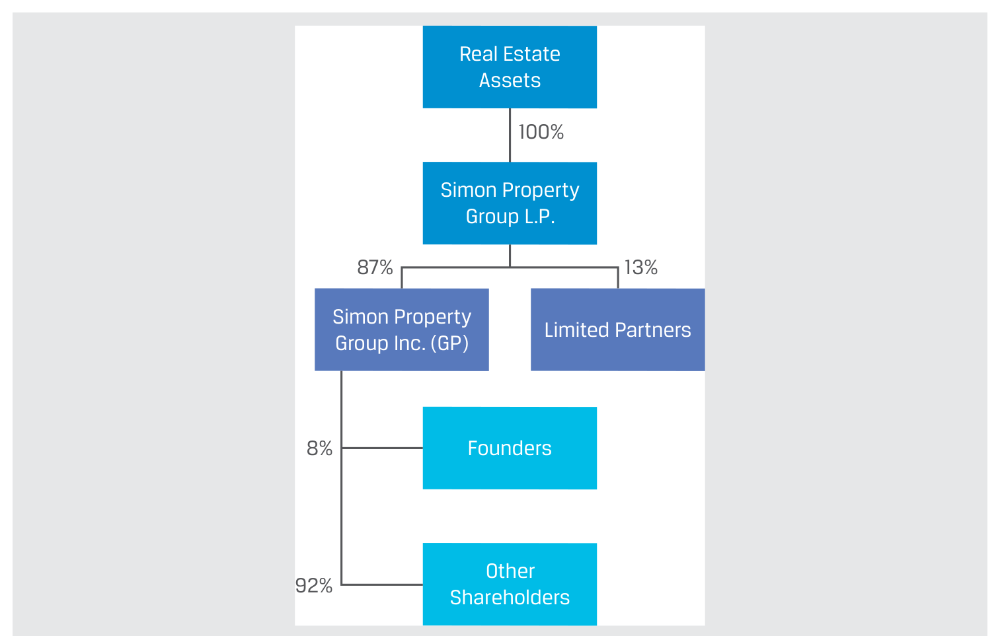
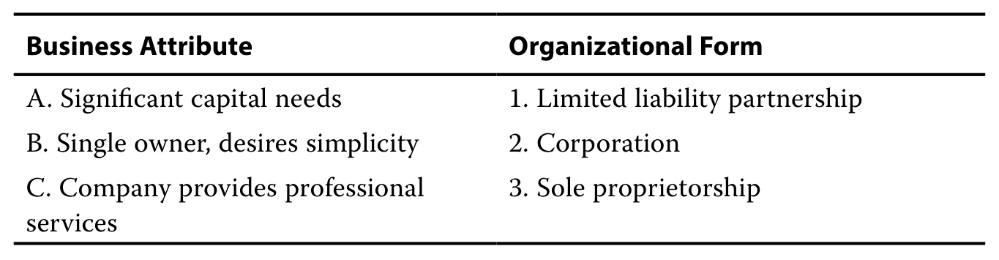
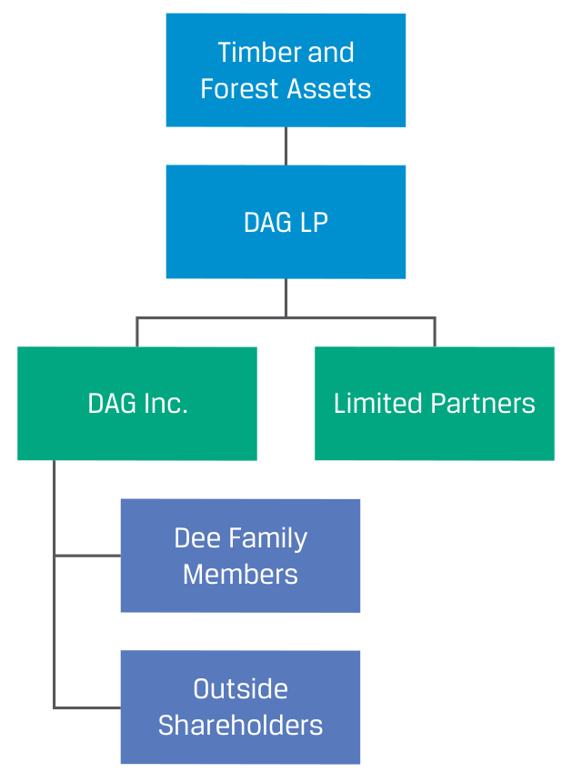
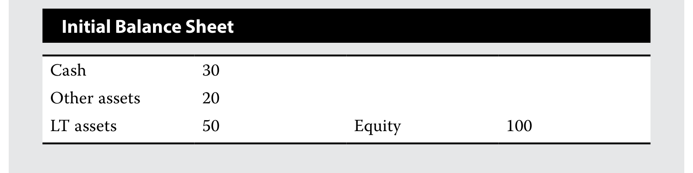

261 条学习条目 · 7 个含习题学习单元 261 exercise and worked-example records · 7 modules with exercises
资料来源：你提供的 2027 CFA Program Curriculum Level I 英文原版 PDF 及其双语 EPUB。英文题目、选项、图表与官方解析按原书保留；中文为学习译文，不是 CFA Institute 发布的官方中文译本。
Source: the user-provided 2027 CFA Program Curriculum Level I PDFs and bilingual EPUBs. Original questions, options, visuals, and official explanations are retained. Chinese text is a study translation, not an official CFA Institute translation.
Each record presents the question, official explanation, supplementary explanation, and related concepts together. Added teaching notes are separate from the official text. Identified source errors are annotated; narrated examples are retained without invented questions.
教材年份 / Curriculum year: 2027 整理日期 / Prepared: 2026-11-07 每条保留原版 PDF 页码，便于回查 / Source PDF page references included
The blanks compare breadth of financing access. A public corporation can distribute funding needs among many lenders and shareholders, whereas a sole proprietor relies heavily on one owner’s wealth and borrowing capacity. Limited liability and transferable equity broaden the investor base without guaranteeing inexpensive funding.
相关知识点 / Related concepts
组织形式比较维度：融资渠道、责任承担、所有权转让、企业存续与税收。
Organizational-form dimensions: funding access, liability, transferability, continuity, and taxation.
The question concerns owners’ liability, not the company’s own repayment obligation. Shareholders of a private limited company generally risk their invested equity; a sole proprietor’s or general partner’s personal assets may support business debts. Private ownership is compatible with limited liability.
相关知识点 / Related concepts
有限责任是所有者的法律风险边界；私人／公众是股权持有和交易方式的区别。
Limited liability defines owners’ legal exposure; private/public status concerns ownership and trading arrangements.
Separate governance layers: shareholders elect the board; the board appoints and oversees the CEO; management runs daily operations. Thus C describes the usual direct voting right. B incorrectly assigns the board’s hiring authority to shareholders. Legal personality does not confer citizens’ political voting rights.
相关知识点 / Related concepts
股东—董事会—管理层的授权与监督链条。
Delegation and oversight from shareholders to the board to management.
Corporate tax is 100×21%=USD21 million. Personal tax applies to the USD10 million actually distributed: 10×20%=USD2 million. Total tax is USD23 million. Do not tax all USD79 million of after-tax earnings again when only USD10 million is distributed, or simply add 21% and 20%.
相关知识点 / Related concepts
本题总税负／税前利润=23%；留存收益不在本题股利税税基中。
Total tax divided by pretax profit is 23%; retained earnings are not included in this question’s dividend-tax base.
Here public describes public access to equity investment, not government ownership. Government shareholding and public trading are separate dimensions. A public company may or may not have a government shareholder, so treating state ownership as a necessary condition incorrectly leads to A.
相关知识点 / Related concepts
public company通常译为公众公司或上市公司；不能按字面误解为国有企业。
A public company should not be confused with a state-owned enterprise.
Exchange quotations and transaction records make public-equity prices more observable. Private shares can still trade by negotiation, but infrequent transactions, varying terms, and limited information weaken price transparency. An unobservable market price does not imply absence of economic value.
相关知识点 / Related concepts
价格透明度与流动性有关，但二者不完全相同；有报价也不保证可大额即时成交。
Price transparency and liquidity are related but distinct; a quote does not guarantee immediate large-volume execution.
CI-LM01-WORKED_CASE-001西蒙地产集团（Simon Property Group） Simon Property Group
正文讲解案例 / Narrated worked case · 原版 PDF 页码 / Source PDF pages: 18-19
题目与资料 / Question and data
例题 1
EXAMPLE 1
西蒙地产集团（Simon Property Group）
Simon Property Group
官方答案与解析 / Official answer and explanation
西蒙地产集团（“西蒙”）是全球最大的零售房地产持有者之一，资产超过 330 亿美元。
Simon Property Group (“Simon”) is one of the largest owners of retail real estate in the world, with over $33 billion in assets.
其资产主要包括美国的购物中心，以及欧洲和亚洲的部分零售物业。
Its assets primarily include shopping centers in the United States and some retail properties in Europe and Asia.
西蒙采用两层组织架构，每层具有不同的组织形式。
Simon is organized in two layers, each with a distinct organizational form.
西蒙地产集团的所有权架构。
创始人及其他股东分别持有 Simon Property Group Inc. 的 8% 和 92%。该公司作为普通合伙人，持有 Simon Property Group L.P. 的 87%，有限合伙人持有其余 13%；合伙企业全资持有房地产资产。

原 PDF 第 19 页 · 完整图示 · 300 dpi
这些零售房地产资产由有限合伙企业 Simon Property Group L.P. 全资持有。
The retail real estate assets are wholly owned by Simon Property Group L.P., a limited partnership.
其合伙人包括普通合伙人 Simon Property Group Inc.，以及约 200 名有限合伙人。
Its partners include Simon Property Group Inc., the general partner, and approximately 200 limited partners.
普通合伙人承担全部管理责任和无限责任，并拥有该合伙企业 87% 的权益。
The general partner has full managerial responsibilities and unlimited liability and has an ownership interest of 87% in the partnership.
值得注意的是，普通合伙人 Simon Property Group Inc. 本身是一家公司。
Importantly, the general partner, Simon Property Group Inc., is itself a corporation.
它由数千名股东广泛持有，其中创始家族持有 8% 的股份。
It is broadly owned by thousands of shareholders, including the founding family, which owns 8% of shares.
Simon Property Group Inc. 只有一项资产：其在 Simon Property L.P. 中持有的合伙权益。
Simon Property Group Inc. has a single asset: its partnership interest in Simon Property L.P.
西蒙的架构使其能够与有限合伙人共同投资、保持完整的管理控制权，并取得资产产生的大部分收入，同时受益于广泛的融资渠道。这是因为，尽管普通合伙人承担无限责任，其股东却享有有限责任。由公司等有限责任实体组成的合伙企业十分常见：这种结构既使最终所有者（本例为 Simon Property Group Inc. 的股东）免于直接承担企业风险，又允许他们分享底层业务的利润和亏损。
Simon’s structure allows co-investing with limited partners, full management control, and receiving most of the income from the assets, while benefiting from broad access to financing, because while the GP has unlimited liability, its shareholders have limited liability. Partnerships composed of entities with limited liability, such as corporations, are common because they shield the ultimate owners (in this case, shareholders of Simon Property Group Inc.) from business risk but allow for the sharing of profit and loss in the underlying business.
Additional reasoning: Compare control, liability, taxation, and access to capital together. Sole proprietorship is simple but concentrates funding and risk. Partnerships broaden resources, though general partners may bear unlimited liability. Corporations attract a wider investor pool through limited liability and separation of ownership and management. Double taxation typically arises when taxed corporate earnings are distributed as taxable dividends.
Organizational form, liability, and financing: Limited liability generally limits shareholders’ loss to their investment. It neither prevents share-price declines nor removes the corporation’s debt obligations.
CI-LM01-WORKED_CASE-002投资基金采用什么组织形式？ How Are Investment Funds Organized?
正文讲解案例 / Narrated worked case · 原版 PDF 页码 / Source PDF pages: 20-21
题目与资料 / Question and data
例题 2
EXAMPLE 2
投资基金采用什么组织形式？
How Are Investment Funds Organized?
官方答案与解析 / Official answer and explanation
投资基金是由一名或多名投资者投入资本形成的资金池，旨在获取回报和管理风险。
Investment funds are pools of capital contributed by one or more investors for earning returns and managing risks.
Investment funds are like other companies in a market economy: They hire professional management to invest capital, sometimes with additional borrowed money, in various assets to achieve return objectives subject to risk constraints.
Major differences between funds and other companies include employing few people directly, primarily investing in financial instruments rather than operating assets, diversification of assets, and having specific rather than general objectives (e.g., exceed a benchmark rate of return).
投资基金常见的两种组织形式是公司和有限合伙企业，如下方两幅图所示。
Two common organizational forms for investment funds are corporations and limited partnerships, as illustrated in the following two diagrams.
采用公司形式时，基金投资者持有股份，股份代表其在底层资产池中的比例权益。
When organized as a corporation, fund investors hold shares that represent their proportionate interests in the pool of underlying assets.
When organized as a limited partnership, fund investors hold partnership units that either represent their proportionate interests in the pool of underlying assets or varying interests of specific assets.
*In this structure, which will be discussed in greater detail later in the curriculum in lessons on alternative investment, fund managers typically create a wholly owned private limited company entity that serves as the GP to protect the fund manager from unlimited liability.
Additional reasoning: Compare control, liability, taxation, and access to capital together. Sole proprietorship is simple but concentrates funding and risk. Partnerships broaden resources, though general partners may bear unlimited liability. Corporations attract a wider investor pool through limited liability and separation of ownership and management. Double taxation typically arises when taxed corporate earnings are distributed as taxable dividends.
Organizational form, liability, and financing: Limited liability generally limits shareholders’ loss to their investment. It neither prevents share-price declines nor removes the corporation’s debt obligations.
CI-LM01-QUESTION_SET-301习题组 · 第 1 题 Question set · 1
正文习题组 / Question set · 原版 PDF 页码 / Source PDF pages: 21
题目与资料 / Question and data
练习题组
QUESTION SET
1. 指出普通合伙企业与有限合伙企业之间的两个区别。
1. Identify two features that distinguish a general partnership from a limited partnership.
Owner–manager relationship: The management of a general partnership is typically shared by the general partners, while in a limited partnership, the general partner often exercises most managerial responsibilities.
Owner liability of business debts and obligations: In a general partnership, the partners are personally legally liable for business debt and actions undertaken by the company.
在有限合伙企业中，只有普通合伙人承担个人责任；有限合伙人的责任以其在合伙企业中的投资额为限。
In a limited partnership, only the general partner faces personal liability; limited partners’ liability is limited to their investment in the partnership.
Additional reasoning: Compare control, liability, taxation, and access to capital together. Sole proprietorship is simple but concentrates funding and risk. Partnerships broaden resources, though general partners may bear unlimited liability. Corporations attract a wider investor pool through limited liability and separation of ownership and management. Double taxation typically arises when taxed corporate earnings are distributed as taxable dividends.
Organizational form, liability, and financing: Limited liability generally limits shareholders’ loss to their investment. It neither prevents share-price declines nor removes the corporation’s debt obligations.
CI-LM01-QUESTION_SET-302习题组 · 第 2 题 Question set · 2
正文习题组 / Question set · 原版 PDF 页码 / Source PDF pages: 21-22
题目与资料 / Question and data
练习题组
QUESTION SET
2. 将以下企业特征与最适合的组织形式配对。
2. Match the following business attributes with the most appropriate organizational form.
配对题：企业特征与组织形式。
企业特征：A. 资本需求巨大；B. 单一所有者，希望形式简单；C. 公司提供专业服务。
可选组织形式：1. 有限责任合伙企业；2. 公司；3. 独资企业。

原 PDF 第 22 页 · 完整表格 · 300 dpi
官方答案与解析 / Official answer and explanation
答案：
Solution:
A. 2. 公司
A. 2. Corporation
B. 3. 独资企业
B. 3. Sole proprietorship
C. 1. 有限责任合伙企业
C. 1. Limited liability partnership
资本需求巨大的企业希望拥有广泛的融资渠道。
A company with significant capital needs will want broad access to financing.
在这种情况下，公司这一组织形式可能最合适。
In such a case, the corporate organizational form likely is most appropriate.
对于希望组织形式简单的单一所有者，独资企业是适合的选择。
For the single owner who desires simplicity, a sole proprietorship is a suitable mechanism.
在某些司法管辖区，它是无须注册的“默认”组织形式。
In some jurisdictions, it is the “default” organizational form and does not require registration.
律师事务所等专业服务公司要求所有者具备管理公司的专业技能。
Professional service companies, such as a law firm, require the owners to have the skill sets to manage the company.
A partnership structure is suitable, and a limited liability partnership structure allows for the partners to share managerial control without any partner assuming unlimited liability.
Additional reasoning: Compare control, liability, taxation, and access to capital together. Sole proprietorship is simple but concentrates funding and risk. Partnerships broaden resources, though general partners may bear unlimited liability. Corporations attract a wider investor pool through limited liability and separation of ownership and management. Double taxation typically arises when taxed corporate earnings are distributed as taxable dividends.
Organizational form, liability, and financing: Limited liability generally limits shareholders’ loss to their investment. It neither prevents share-price declines nor removes the corporation’s debt obligations.
CI-LM01-QUESTION_SET-303习题组 · 第 3 题 Question set · 3
正文习题组 / Question set · 原版 PDF 页码 / Source PDF pages: 21-22
题目与资料 / Question and data
练习题组
QUESTION SET
3. 如果企业所有者预计未来需要大量融资，以下哪种组织形式最不合适？
3. If a company owner expects to have a significant need for financing, which of the following organizational forms is the least appropriate choice?
A. 公司
A. Corporate
B. 合伙企业
B. Partnership
C. 独资企业。
C. Sole proprietorship
官方答案与解析 / Official answer and explanation
答案：
Solution:
C 正确。
C is correct.
独资企业的融资受限于所有者的自有资金及其个人借款能力。
A sole proprietorship is limited in financing to the owner’s funds and by the amount the owner can borrow personally.
合伙企业通过增加所有者、分散风险和提高借款能力，扩大融资渠道。
A partnership expands access to financing by adding owners, spreading risk, and adding borrowing capacity.
The corporate form provides for the broadest access to financing because there are no limits to the number of shareholders and, with limited liability, shareholders are relatively more comfortable with the company borrowing.
The official choice for this item is C. Additional reasoning: Compare control, liability, taxation, and access to capital together. Sole proprietorship is simple but concentrates funding and risk. Partnerships broaden resources, though general partners may bear unlimited liability. Corporations attract a wider investor pool through limited liability and separation of ownership and management. Double taxation typically arises when taxed corporate earnings are distributed as taxable dividends.
Organizational form, liability, and financing: Limited liability generally limits shareholders’ loss to their investment. It neither prevents share-price declines nor removes the corporation’s debt obligations.
CI-LM01-QUESTION_SET-304习题组 · 第 4 题 Question set · 4
正文习题组 / Question set · 原版 PDF 页码 / Source PDF pages: 21-22
________________ liability is a benefit to the corporate organizational form, but the form does face a possible disadvantage because of ________________ taxation of distributed business income.
官方答案与解析 / Official answer and explanation
答案：
Solution:
有限责任是公司组织形式的一项优势，但由于已分配经营收入可能面临双重征税，这种形式也存在潜在劣势。
Limited liability is a benefit to the corporate organizational form, but the form does face a possible disadvantage because of double taxation of distributed business income.
Additional reasoning: Compare control, liability, taxation, and access to capital together. Sole proprietorship is simple but concentrates funding and risk. Partnerships broaden resources, though general partners may bear unlimited liability. Corporations attract a wider investor pool through limited liability and separation of ownership and management. Double taxation typically arises when taxed corporate earnings are distributed as taxable dividends.
Organizational form, liability, and financing: Limited liability generally limits shareholders’ loss to their investment. It neither prevents share-price declines nor removes the corporation’s debt obligations.
CI-LM01-QUESTION_SET-305习题组 · 第 5 题 Question set · 5
正文习题组 / Question set · 原版 PDF 页码 / Source PDF pages: 21, 23
题目与资料 / Question and data
练习题组
QUESTION SET
5. 判断正误：合伙企业通常在实体层面征税，而非在各合伙人个人层面征税。
5. True or False: Partnerships are typically taxed at the entity level rather than at the individual partner level.
Partnerships are typically pass-through entities, meaning that business income earned by the partnership is passed through to the partners according to the terms of partnership agreement, and each partner is taxed at the personal level.
The official choice for this item is B. Additional reasoning: Compare control, liability, taxation, and access to capital together. Sole proprietorship is simple but concentrates funding and risk. Partnerships broaden resources, though general partners may bear unlimited liability. Corporations attract a wider investor pool through limited liability and separation of ownership and management. Double taxation typically arises when taxed corporate earnings are distributed as taxable dividends.
Organizational form, liability, and financing: Limited liability generally limits shareholders’ loss to their investment. It neither prevents share-price declines nor removes the corporation’s debt obligations.
CI-LM01-EXAMPLE-401例题 3 · 第 1 题：公司利润的双重征税 Example 3 · 1 — Double Taxation of Corporate Profits
正文例题／案例 / Worked example / case · 原版 PDF 页码 / Source PDF pages: 27
1. The French retail giant Auchan Holding generated pre-tax income of €838 million last year and paid corporate taxes of €264 million. Investors in France also pay a 30% tax on dividends received. If Auchan had fully distributed its after-tax income to investors as a dividend and all its investors are in France, what is the total tax rate as a percentage of Auchan’s pre-tax income?
If the after-tax income of €574 million were paid to investors as a dividend, investors would pay €172.2 million in personal taxes on the dividends received.
Total taxes paid would be €436.2 million (€264 million at the corporate level plus €172.2 million at the personal level), resulting in a total tax rate of 52.1%.
Additional reasoning: Compare control, liability, taxation, and access to capital together. Sole proprietorship is simple but concentrates funding and risk. Partnerships broaden resources, though general partners may bear unlimited liability. Corporations attract a wider investor pool through limited liability and separation of ownership and management. Double taxation typically arises when taxed corporate earnings are distributed as taxable dividends.
Organizational form, liability, and financing: Limited liability generally limits shareholders’ loss to their investment. It neither prevents share-price declines nor removes the corporation’s debt obligations.
CI-LM01-QUESTION_SET-501习题组 · 第 1 题 Question set · 1
正文习题组 / Question set · 原版 PDF 页码 / Source PDF pages: 27
题目与资料 / Question and data
练习题组
QUESTION SET
1. 说明为什么所有权与管理权分离能使公司发行人取得更广泛的资本来源。
1. Explain why the separation of ownership from management allows for corporate issuers to have greater access to capital.
By separating ownership from management responsibilities, corporations can attract a broad range of owners, especially individuals and institutions, who do not want to be involved in management but would like to participate as investors.
Additional reasoning: Distinguish public versus private trading status from government versus private ownership. Public shares are broadly tradable and generally require continuing disclosure. Private ownership is more restricted. Concentration can strengthen monitoring but also harm minority holders; controlling foundations, governments, or families may pursue nonfinancial objectives.
Ownership structure and public-company features: Listing is not government ownership. Transferability, continuity, and legal personality are distinct attributes. Complex group structures may separate control from economic ownership.
CI-LM01-QUESTION_SET-502习题组 · 第 2 题 Question set · 2
正文习题组 / Question set · 原版 PDF 页码 / Source PDF pages: 27-28
Limited liability of shareholders refers to the fact that the ________________ amount shareholders may lose on their investment is the ________________ paid to buy the shares.
官方答案与解析 / Official answer and explanation
答案：
Solution:
股东有限责任是指股东在投资中可能损失的最大金额，等于购买股份时支付的价格。
Limited liability of shareholders refers to the fact that the maximum amount shareholders may lose on their investment is the price paid to buy the shares.
Additional reasoning: Compare control, liability, taxation, and access to capital together. Sole proprietorship is simple but concentrates funding and risk. Partnerships broaden resources, though general partners may bear unlimited liability. Corporations attract a wider investor pool through limited liability and separation of ownership and management. Double taxation typically arises when taxed corporate earnings are distributed as taxable dividends.
Organizational form, liability, and financing: Limited liability generally limits shareholders’ loss to their investment. It neither prevents share-price declines nor removes the corporation’s debt obligations.
CI-LM01-QUESTION_SET-503习题组 · 第 3 题 Question set · 3
正文习题组 / Question set · 原版 PDF 页码 / Source PDF pages: 27-28
题目与资料 / Question and data
练习题组
QUESTION SET
3. 在以下哪种情况下，公司组织形式的双重征税影响最小？
3. In which of the following situations does the double taxation of the corporate organizational form matter the least?
A. 公司预计每年将全部税后利润作为股息支付给股东。
A. The company expects to pay all its after-tax income as a dividend to shareholders each year.
B. 公司股东居住地对股息收入适用较高的税率。
B. The company’s shareholders reside in a tax jurisdiction with a high tax rate on dividend income.
C. 公司预计每年将全部税后利润再投资于企业增长。
C. The company is expecting to reinvest all its after-tax profits each year into growth of the business.
官方答案与解析 / Official answer and explanation
答案：
Solution:
C 正确。
C is correct.
将全部利润再投资意味着公司不向股东支付股息，因此不会发生双重征税。
Reinvestment of all profits implies that the company pays no dividend to shareholders, and thus, no double taxation occurs.
A 错误。
A is incorrect.
股息收入同时在公司层面和股东个人层面征税，因而发生双重征税。
Double taxation occurs because dividend income is taxed at both the corporate level and the shareholders’ personal levels.
如果全部税后利润均被分配，股东所享有的经营收入就被征税两次。
If all after-tax profits are distributed, shareholders are taxed twice on the business’s income.
B 错误，因为股东收到的股息适用较高税率，会强烈促使公司保留利润、寻找其他利润分配方式，或改变组织形式。
B is incorrect because a high tax rate on shareholders’ dividend income received would be a strong impetus to retain profits, find alternative means of distributing profits, or change the organizational form.
The official choice for this item is C. Additional reasoning: Compare control, liability, taxation, and access to capital together. Sole proprietorship is simple but concentrates funding and risk. Partnerships broaden resources, though general partners may bear unlimited liability. Corporations attract a wider investor pool through limited liability and separation of ownership and management. Double taxation typically arises when taxed corporate earnings are distributed as taxable dividends.
Organizational form, liability, and financing: Limited liability generally limits shareholders’ loss to their investment. It neither prevents share-price declines nor removes the corporation’s debt obligations.
CI-LM01-QUESTION_SET-504习题组 · 第 4 题 Question set · 4
正文习题组 / Question set · 原版 PDF 页码 / Source PDF pages: 27-28
4. Referring to the Auchan Holding example in this lesson, calculate the amount of the tax disadvantage (in euros) Auchan has in its corporate form compared to if it were organized as a limited partnership. Recall that Auchan’s pre-tax profit was €838 million, the corporate tax rate was 31.5%, the personal income tax rate was 30%, and all after-tax profits were distributed.
If Auchan were organized as a limited partnership, its pre-tax profit would be passed through to the owner(s) and taxes would only be paid at the personal level. Thus, total taxes paid would be 〔calculation 1 below〕, or €184.8 million lower than total taxes paid under the corporate organizational form, and this tax of €251.4 million would be paid regardless of whether the partnership distributed the profit to partners.
Additional reasoning: Compare control, liability, taxation, and access to capital together. Sole proprietorship is simple but concentrates funding and risk. Partnerships broaden resources, though general partners may bear unlimited liability. Corporations attract a wider investor pool through limited liability and separation of ownership and management. Double taxation typically arises when taxed corporate earnings are distributed as taxable dividends.
Organizational form, liability, and financing: Limited liability generally limits shareholders’ loss to their investment. It neither prevents share-price declines nor removes the corporation’s debt obligations.
CI-LM01-QUESTION_SET-505习题组 · 第 5 题 Question set · 5
正文习题组 / Question set · 原版 PDF 页码 / Source PDF pages: 27-29
题目与资料 / Question and data
练习题组
QUESTION SET
5. 以下均为公司发行人的特征，除了：
5. Corporate issuers are characterized by all of the following except:
A. 公司收入在公司层面和个人层面均须征税。
A. Corporate income is taxed at both the corporate and personal levels.
B. 所有者无须参与公司管理。
B. Owners do not need to be involved in management of the company.
C. 公司的所有者在法律上并不独立于公司。
C. The owners of the corporation are not legally distinct from the corporation.
官方答案与解析 / Official answer and explanation
答案：
Solution:
C 正确。
C is correct.
公司是独立于其所有者的法律实体。
A corporation is a legally separate entity from its owners.
A 错误，因为除非公司完全不支付股息，否则公司收入会在公司层面和个人层面均被征税。
A is incorrect because corporate income is taxed at both the corporate and personal levels unless the company pays zero dividends.
B 错误，因为股东无须行使公司的管理控制权。
B is incorrect because shareholders are not required to exercise management control over the company.
虽然某些情况下大股东可能担任高级管理人员或董事会成员，但大多数股东并不承担管理责任。
While in some cases, a large shareholder may serve as senior management or be on the board of directors, most shareholders do not take on management responsibilities.
The official choice for this item is C. Additional reasoning: Compare control, liability, taxation, and access to capital together. Sole proprietorship is simple but concentrates funding and risk. Partnerships broaden resources, though general partners may bear unlimited liability. Corporations attract a wider investor pool through limited liability and separation of ownership and management. Double taxation typically arises when taxed corporate earnings are distributed as taxable dividends.
This item asks for a least-likely, inaccurate, or exception case. Evaluate each statement under the assumptions, then apply that reversed selection rule; the credited choice may itself describe the false or inapplicable case.
Organizational form, liability, and financing: Limited liability generally limits shareholders’ loss to their investment. It neither prevents share-price declines nor removes the corporation’s debt obligations.
CI-LM01-WORKED_CASE-006官方案例 Example 4
正文讲解案例 / Narrated worked case · 原版 PDF 页码 / Source PDF pages: 30
题目与资料 / Question and data
例题 4
EXAMPLE 4
官方答案与解析 / Official answer and explanation
全球最大的美容公司欧莱雅（L’Oréal S.A.）是一家法国 société anonyme，即公众有限公司。
L’Oréal S.A., the world’s largest beauty company, is a French société anonyme, or public limited company.
该公司自 1963 年在巴黎证券交易所（现为泛欧交易所）上市以来，一直为公众持有。
It has been public since listing its shares on the Paris Stock Market (now Euronext) in 1963.
截至 2021 年 12 月 31 日，欧莱雅已发行股份约为 5.35 亿股。
As of 31 December 2021, L’Oréal had approximately 535 million shares outstanding.
L’Oréal’s shares are mostly owned by Francoise Bettencourt Meyers, her family, and Nestlé (a large, listed Swiss consumer goods company), and the remainder—the free float, approximately 44% of shares—is owned by institutional investors, individual investors, and L’Oréal employees.
Additional reasoning: Distinguish public versus private trading status from government versus private ownership. Public shares are broadly tradable and generally require continuing disclosure. Private ownership is more restricted. Concentration can strengthen monitoring but also harm minority holders; controlling foundations, governments, or families may pursue nonfinancial objectives.
Ownership structure and public-company features: Listing is not government ownership. Transferability, continuity, and legal personality are distinct attributes. Complex group structures may separate control from economic ownership.
知识检查 / Knowledge check · 原版 PDF 页码 / Source PDF pages: 33-34
题目与资料 / Question and data
知识检查
KNOWLEDGE CHECK
1. 将左栏的公司特征，与右栏最合适的类别（公众持有、私人持有或两者）配对。
1. Match the applicable company characteristic in the left column with the category that best describes it (publicly held, privately held, both) on the right).
Additional reasoning: Distinguish public versus private trading status from government versus private ownership. Public shares are broadly tradable and generally require continuing disclosure. Private ownership is more restricted. Concentration can strengthen monitoring but also harm minority holders; controlling foundations, governments, or families may pursue nonfinancial objectives.
Ownership structure and public-company features: Listing is not government ownership. Transferability, continuity, and legal personality are distinct attributes. Complex group structures may separate control from economic ownership.
CI-LM01-WORKED_CASE-008特斯拉的故事 The Story of Tesla
正文讲解案例 / Narrated worked case · 原版 PDF 页码 / Source PDF pages: 34-35
In 1997, engineer Martin Eberhard and computer scientist Marc Tarpenning started a company called NuvoMedia to make an electronic book reader called the Rocket eBook, a precursor to Amazon’s Kindle.
成立三年后，NuvoMedia 以 1.87 亿美元出售。
Three years after it was founded, NuvoMedia was sold for $187 million.
不久后，这两位创业者又成立一家专注于制造电动跑车的新公司。他们为纪念发明家尼古拉·特斯拉（Nikola Tesla），将公司命名为 Tesla Motors，并于 2003 年注册为公司。由于这项业务风险高、资本密集，两人投入了部分新获得的财富，并寻找具备电动车专业知识和筹资能力的其他共同创始人。企业家埃隆·马斯克（Elon Musk）与他们拥有将电动跑车商业化的共同愿景，因此加入团队；伊恩·赖特（Ian Wright）和公司首席技术官 J. B. 斯特劳贝尔（J. B. Straubel）也加入其中。
Soon after, the two entrepreneurs formed a new company focused on making electric sports cars. They named the company Tesla Motors in honor of the inventor Nikola Tesla, forming a corporation in 2003. As a high-risk, capital-intensive endeavor, they used some of their new-found wealth and sought other cofounders with expertise in electric vehicles and fundraising capabilities. Elon Musk, an entrepreneur with a shared vision in the commercialization of electric sports cars, joined the team, as did Ian Wright and J. B. Straubel, the company’s chief technical officer.
马斯克于 2004 年向特斯拉投资 630 万美元，成为最大股东，同时帮助公司从风险投资家筹资。
In addition to investing $6.3 million in Tesla in 2004, making him the largest shareholder, Musk helped raise money from venture capitalists.
2008 年，特斯拉推出首款汽车 Roadster，马斯克也在这一年出任 CEO。
Musk became CEO in 2008, the year Tesla released its first vehicle, the Roadster.
2010 年，马斯克带领特斯拉完成首次公开发行，筹集 2.26 亿美元。
In 2010, Musk led Tesla’s initial public offering, which raised $226 million.
随后数年，特斯拉从跑车转向乘用车，大幅扩大汽车产量和产品线，并于 2016 年进入光伏市场。
Over the next several years, Tesla shifted from sports cars to passenger vehicles, greatly expanding its vehicle production and product line, and in 2016, it also entered the photovoltaics market.
2017 年，公司从 Tesla Motors 更名为 Tesla, Inc.，以反映其向储能领域的多元化发展。
In 2017, it changed its name from Tesla Motors to Tesla, Inc., to reflect its diversification into energy storage.
公司继续在全球扩大汽车生产，并于 2020 年通过三次后续权益发行筹集数十亿美元。
The company continued global expansion of automobile production, issuing several billion dollars in three secondary equity offerings in 2020.
2021 年，特斯拉将总部从加利福尼亚州迁至得克萨斯州，市值达到 1 万亿美元。
Tesla moved its headquarters from California to Texas and reached a $1 trillion market capitalization in 2021.
The evolution of Tesla, Inc., over less than 20 years of existence from a startup to a firm among those with the largest market capitalization globally was assisted by the flexibility of its organizational form as a corporation.
特斯拉能够从债务和权益投资者取得大量融资，并通过股权薪酬留住包括马斯克在内的关键员工。
Tesla was able to obtain significant financing from both debt and equity investors and retain key employees, including Musk, with equity-based compensation.
Additional reasoning: Compare control, liability, taxation, and access to capital together. Sole proprietorship is simple but concentrates funding and risk. Partnerships broaden resources, though general partners may bear unlimited liability. Corporations attract a wider investor pool through limited liability and separation of ownership and management. Double taxation typically arises when taxed corporate earnings are distributed as taxable dividends.
Organizational form, liability, and financing: Limited liability generally limits shareholders’ loss to their investment. It neither prevents share-price declines nor removes the corporation’s debt obligations.
CI-LM01-WORKED_CASE-009官方案例 Example 6
正文讲解案例 / Narrated worked case · 原版 PDF 页码 / Source PDF pages: 35-36
题目与资料 / Question and data
例题 6
EXAMPLE 6
官方答案与解析 / Official answer and explanation
2018 年初，总部位于瑞典的音乐流媒体公司 Spotify Technology SA 成为首家通过直接上市方式在纽约证券交易所（NYSE）上市的外国发行人。
In early 2018, Sweden-based music streaming company Spotify Technology SA became the first foreign issuer to go public via direct listing on the New York Stock Exchange (NYSE).
Spotify 成立于 2006 年，上市前完成了多轮风险资本股权融资，也取得了债务融资。
Founded in 2006, Spotify secured multiple rounds of venture capital equity financing and also raised debt prior to going public.
Unlike other private companies seeking to go public, Spotify was a well-known brand and an established company, having entered the US market in 2011, with over
7,000 万，收入超过 50 亿美元。
70 million global subscribers and over $5 billion in revenue during the prior year.
When announcing its direct listing, Spotify said it chose this financing route because it could list without diluting existing shareholders, offer liquidity to existing shareholders, and provide equal access to buyers and sellers.
Additional reasoning: Distinguish public versus private trading status from government versus private ownership. Public shares are broadly tradable and generally require continuing disclosure. Private ownership is more restricted. Concentration can strengthen monitoring but also harm minority holders; controlling foundations, governments, or families may pursue nonfinancial objectives.
Ownership structure and public-company features: Listing is not government ownership. Transferability, continuity, and legal personality are distinct attributes. Complex group structures may separate control from economic ownership.
An IPO is facilitated by investment banks that underwrite, or guarantee, the offering. A direct listing does not involve an underwriter, and no new capital is raised. Instead, the company is simply listed on an exchange, and shares are sold by existing shareholders. A SPAC is a shell company often called a “blank check” company because it exists solely for the purpose of acquiring an unspecified private company sometime in the future.
Additional reasoning: Distinguish public versus private trading status from government versus private ownership. Public shares are broadly tradable and generally require continuing disclosure. Private ownership is more restricted. Concentration can strengthen monitoring but also harm minority holders; controlling foundations, governments, or families may pursue nonfinancial objectives.
Ownership structure and public-company features: Listing is not government ownership. Transferability, continuity, and legal personality are distinct attributes. Complex group structures may separate control from economic ownership.
Accredited investors are judged by regulators to have the sophistication for understanding and assuming the risks that come with investing in private, not public, companies.
Additional reasoning: Distinguish public versus private trading status from government versus private ownership. Public shares are broadly tradable and generally require continuing disclosure. Private ownership is more restricted. Concentration can strengthen monitoring but also harm minority holders; controlling foundations, governments, or families may pursue nonfinancial objectives.
Ownership structure and public-company features: Listing is not government ownership. Transferability, continuity, and legal personality are distinct attributes. Complex group structures may separate control from economic ownership.
CI-LM01-WORKED_CASE-011沙特阿美首次公开发行 Saudi Aramco IPO
正文讲解案例 / Narrated worked case · 原版 PDF 页码 / Source PDF pages: 38
Nearly 50 years after oil was first discovered in Saudi Arabia, the government issued a decree creating the Saudi Arabian Oil Company (Saudi Aramco) to take control of and carry out petroleum and natural gas production in the country.
To partially finance a plan to diversify the Saudi economy and reduce reliance on oil, the Saudi government announced its intention in 2016 to raise up to $100 billion on global exchanges by selling a 5% stake in the company, valuing Saudi Aramco at $2 trillion.
Given IPO delays and a lower, $1.7 trillion valuation, in 2019, the Saudi government opted to scale down its plans, selling a 1.5% stake on the domestic Saudi stock exchange for $25.6 billion instead.
尽管规模缩小，这仍是当时有史以来规模最大的 IPO，并使公司成为当时全球市值最高的上市公司。
Despite the smaller size, this transaction was the largest IPO to date and created the world’s most valuable publicly traded corporation at the time.
Additional reasoning: Distinguish public versus private trading status from government versus private ownership. Public shares are broadly tradable and generally require continuing disclosure. Private ownership is more restricted. Concentration can strengthen monitoring but also harm minority holders; controlling foundations, governments, or families may pursue nonfinancial objectives.
Ownership structure and public-company features: Listing is not government ownership. Transferability, continuity, and legal personality are distinct attributes. Complex group structures may separate control from economic ownership.
CI-LM01-WORKED_CASE-012Public Power Corporation S.A.（公共电力公司） Public Power Corporation S.A.
正文讲解案例 / Narrated worked case · 原版 PDF 页码 / Source PDF pages: 38
The largest electric power company in Greece, Public Power Corporation (PPC), was established as a state-owned and -managed corporation by the Greek government in 1950. Following Greece’s entry into the EU, PPC lost its domestic power generation monopoly. In response to the European Electricity Directive separating power generation, transmission, and distribution, the company issued an IPO in 2001 for 34% of its shares and reduced government ownership further, to 51%, through subsequent share raises over the next few years. The company is phasing out coal-fired power plants and shifting to renewable energy sources, and in 2021, it announced a further share capital increase of EUR750 million combined with a reduction in government ownership, from 51% to 34%.
Additional reasoning: Distinguish public versus private trading status from government versus private ownership. Public shares are broadly tradable and generally require continuing disclosure. Private ownership is more restricted. Concentration can strengthen monitoring but also harm minority holders; controlling foundations, governments, or families may pursue nonfinancial objectives.
Ownership structure and public-company features: Listing is not government ownership. Transferability, continuity, and legal personality are distinct attributes. Complex group structures may separate control from economic ownership.
CI-LM01-WORKED_CASE-013诺和诺德基金会与诺和诺德 A/S Novo Nordisk Foundation and Novo Nordisk A/S
正文讲解案例 / Narrated worked case · 原版 PDF 页码 / Source PDF pages: 39
题目与资料 / Question and data
例题 9
EXAMPLE 9
诺和诺德基金会与诺和诺德 A/S
Novo Nordisk Foundation and Novo Nordisk A/S
官方答案与解析 / Official answer and explanation
位于丹麦的诺和诺德基金会（Novo Nordisk Foundation）是全球最大的私人基金会。
The Denmark-based Novo Nordisk Foundation is the largest private foundation in the world.
它有双重目标：为旗下被投资公司的商业和研究活动提供稳定基础，以及支持科学和人道主义事业。
It has a dual objective: to provide a stable basis for the commercial and research activities conducted by investee companies within and to support scientific and humanitarian purposes.
该基金会通过其控股公司 Novo Holdings A/S，成为丹麦营利性上市生物制药公司诺和诺德 A/S 的最大股东和控股股东。
Through its holding company, Novo Holdings A/S, the foundation is the largest and controlling shareholder of the for-profit, listed Danish biopharmaceutical company Novo Nordisk A/S.
Additional reasoning: Distinguish public versus private trading status from government versus private ownership. Public shares are broadly tradable and generally require continuing disclosure. Private ownership is more restricted. Concentration can strengthen monitoring but also harm minority holders; controlling foundations, governments, or families may pursue nonfinancial objectives.
Ownership structure and public-company features: Listing is not government ownership. Transferability, continuity, and legal personality are distinct attributes. Complex group structures may separate control from economic ownership.
CI-LM01-QUESTION_SET-1401习题组 · 第 1 题 Question set · 1
正文习题组 / Question set · 原版 PDF 页码 / Source PDF pages: 39
1. A corporate issuer has the following attributes: It has no need for new equity financing, its debt needs are well satisfied through its existing credit facility with a bank, and it has a majority owner that exercises management control of the company. Is this corporate issuer more likely public or private?
The lack of need for new equity capital implies less reason to have exchange-listed stock, as does the ability to operate the business with the current debt capacity available under its existing credit facility.
The majority owner exercising management control could possibly imply either public or private status, although combined with the first two attributes, it is doubtful that such a company would be public.
The official choice for this item is B. Additional reasoning: Distinguish public versus private trading status from government versus private ownership. Public shares are broadly tradable and generally require continuing disclosure. Private ownership is more restricted. Concentration can strengthen monitoring but also harm minority holders; controlling foundations, governments, or families may pursue nonfinancial objectives.
Ownership structure and public-company features: Listing is not government ownership. Transferability, continuity, and legal personality are distinct attributes. Complex group structures may separate control from economic ownership.
CI-LM01-QUESTION_SET-1402习题组 · 第 2 题 Question set · 2
正文习题组 / Question set · 原版 PDF 页码 / Source PDF pages: 39-40
题目与资料 / Question and data
练习题组
QUESTION SET
2. 以下哪一项不是首次公开发行（IPO）与直接上市之间的主要区别？
2. Which of the following does not reflect a primary difference between an initial public offering (IPO) and a direct listing?
A. 员工是否持有该私人公司的股份
A. Whether or not employees own shares in the private company
B. 是否筹集新资本
B. Whether or not new capital is raised
C. 是否聘用承销商。
C. Whether or not an underwriter is used
官方答案与解析 / Official answer and explanation
答案：
Solution:
A 正确。
A is correct.
存在员工股东的公司，可以采用 IPO 或直接上市；员工持股并不因选择何种交易方式而不同。
A company with employee shareholders can go public with either an IPO or a direct listing; employee shareownership does not differ by the choice of transaction.
C 错误。
C is incorrect.
IPO 使用承销商管理流程并承销新股，而直接上市不使用承销商。
An IPO uses an underwriter to manage the process and underwrite the purchase of new shares, while a direct listing does not.
B 错误。
B is incorrect.
IPO 通过向公众发行新股为上市公司筹集新资本；直接上市则只将现有股份挂牌，不筹集新资本。
An IPO raises new capital for the listing company by issuing new shares to the public, while a direct listing does not; it lists only existing shares.
The official choice for this item is A. Additional reasoning: Distinguish public versus private trading status from government versus private ownership. Public shares are broadly tradable and generally require continuing disclosure. Private ownership is more restricted. Concentration can strengthen monitoring but also harm minority holders; controlling foundations, governments, or families may pursue nonfinancial objectives.
Ownership structure and public-company features: Listing is not government ownership. Transferability, continuity, and legal personality are distinct attributes. Complex group structures may separate control from economic ownership.
CI-LM01-QUESTION_SET-1403习题组 · 第 3 题 Question set · 3
正文习题组 / Question set · 原版 PDF 页码 / Source PDF pages: 39-40
题目与资料 / Question and data
练习题组
QUESTION SET
3. 描述成为公众公司的两个好处，以及发行人可能更愿意保持私人身份的两个原因。
3. Describe two benefits of being a public company and two reasons that an issuer may instead prefer to be private company.
官方答案与解析 / Official answer and explanation
答案：
Solution:
公众身份的好处：
Benefits of public status:
■ 公开上市使公司能够向更广泛的投资者取得资本，因此更有可能完成大规模筹资。
■ Public listing allows the company to access capital from a broader range of investors, thus making larger capital raises more feasible.
■ 在证券交易所上市能为投资者提供透明价格和便利交易。
■ Public listing allows for price transparency for investors and ease of trading because of stock exchange listing.
如果员工持有大量股份，这一点尤其有利，因为上市为这些股份创造了交易市场。
This may be especially beneficial if employees own significant stock, because listing creates a market for these shares.
私人身份的好处：
Benefits of private status:
■ 披露要求较少，从而降低合规成本；保持信息不公开还可能带来竞争优势。
■ Fewer disclosure requirements, thus reducing compliance costs and perhaps conferring competitive advantages because information can be kept private.
■ 利益相关者较少，使沟通渠道更容易畅通。
■ Fewer stakeholders, thus allowing for improved access to communication channels.
Additional reasoning: Distinguish public versus private trading status from government versus private ownership. Public shares are broadly tradable and generally require continuing disclosure. Private ownership is more restricted. Concentration can strengthen monitoring but also harm minority holders; controlling foundations, governments, or families may pursue nonfinancial objectives.
Ownership structure and public-company features: Listing is not government ownership. Transferability, continuity, and legal personality are distinct attributes. Complex group structures may separate control from economic ownership.
CI-LM01-QUESTION_SET-1404习题组 · 第 4 题 Question set · 4
正文习题组 / Question set · 原版 PDF 页码 / Source PDF pages: 39-40
题目与资料 / Question and data
练习题组
QUESTION SET
4. 指出国家政府全资持有一家公司的主要原因，并讨论可能促使政府减持国有公司股份的两个因素。
4. Identify a major reason why a national government would be a 100% shareholder in a corporate issuer, and discuss two factors that may cause a national government to reduce its ownership in a state-owned company.
A national government may choose to be the 100% owner of a company that provides public goods to the national economy, such as infrastructure and public safety, that would either not be provided by private means or be delivered inequitably or inefficiently.
在某些情况下，一国拥有原油等自然资源，政府可能通过全资公司开展生产，并将利润投入有利于本国的领域。
In some cases, a country may have natural resources, such as crude oil, and the national government may use a wholly owned corporation for production and to invest profits in ways that benefit its country.
Two possible reasons that a country may reduce its ownership in a state- owned company include (1) opportunities to bring in foreign capital and diversify the country’s economy, such as the case highlighted by the Saudi Aramco example, and (2) a push for privatization and deregulation to potentially lower costs through competition and motivate innovation, as highlighted by the postal services examples.
Additional reasoning: Distinguish public versus private trading status from government versus private ownership. Public shares are broadly tradable and generally require continuing disclosure. Private ownership is more restricted. Concentration can strengthen monitoring but also harm minority holders; controlling foundations, governments, or families may pursue nonfinancial objectives.
Ownership structure and public-company features: Listing is not government ownership. Transferability, continuity, and legal personality are distinct attributes. Complex group structures may separate control from economic ownership.
CI-LM01-QUESTION_SET-1405习题组 · 第 5 题 Question set · 5
正文习题组 / Question set · 原版 PDF 页码 / Source PDF pages: 39-40
题目与资料 / Question and data
练习题组
QUESTION SET
5. 一家公众公司收购一家私人公司。收购完成后，被收购公司属于公众公司还是私人公司？请说明理由。
5. A public company acquires a private company. Is the acquired company public or private after the acquisition? Explain the rationale for your choice.
Even though the acquired company will not have its own shares, the shareholders of the acquirer own the formerly private company, though the percentage of assets of the combined company attributable to the acquired company may be small.
收购方的董事会和管理层现在负责经营新收购的公司。
The acquirer’s board of directors and management now operate the newly acquired company.
The official choice for this item is A. Additional reasoning: Distinguish public versus private trading status from government versus private ownership. Public shares are broadly tradable and generally require continuing disclosure. Private ownership is more restricted. Concentration can strengthen monitoring but also harm minority holders; controlling foundations, governments, or families may pursue nonfinancial objectives.
Ownership structure and public-company features: Listing is not government ownership. Transferability, continuity, and legal personality are distinct attributes. Complex group structures may separate control from economic ownership.
CI-LM01-PRACTICE-001章末习题 1 Practice problem 1
章末练习 / Practice problem · 原版 PDF 页码 / Source PDF pages: 42, 44
题目与资料 / Question and data
以下资料适用于第 1—5 题。
The following information relates to questions 1-5
Dee’s Arbor Group Inc.（DAG Inc.）是一家大型国际投资公司，投资于位于北美洲及南美洲的林木和森林资产。DAG Inc. 是有限合伙企业 DAG LP 的普通合伙人，而 DAG LP 全资拥有这些林木和森林资产。DAG LP 由 DAG Inc. 及其有限合伙人控制；有限合伙人持有合伙企业 20% 的权益，DAG Inc. 则持有其余多数权益。DAG Inc. 的股份在美国和加拿大证券交易所上市。DAG Inc. 采用其所在司法管辖区允许的一种特殊公司形式，只要将全部净利润作为股息分配给股东，并符合其他条件，就无须缴纳公司所得税。本财政年度及过去年度，DAG Inc. 均满足这些条件。DAG Inc. 的股份由 Dee 家族的多名成员持有，他们在 DAG Inc. 和 DAG LP 担任若干重要高级管理职位，并合计拥有 DAG Inc. 30% 的股份。其余股份由不同个人和机构投资者持有，其中没有任何单一投资者持股超过 5%。下图展示 DAG Inc. 与 DAG LP 的组织架构。
Dee’s Arbor Group Inc. (DAG Inc.) is a large international investor in timber and forest assets located on the North and South American continents. DAG Inc. is the general partner of DAG LP, a limited partnership that is the 100% owner of the timber and forest assets. DAG LP is controlled by DAG Inc. and its limited partners; the limited partners own a 20% stake in the partnership, while DAG Inc. holds the remaining majority stake. DAG Inc.’s shares are listed on stock exchanges in the United States and Canada. DAG Inc. is organized as a special corporate form available in its jurisdiction in which it does not pay corporate income taxes so long as it distributes all of its net income as dividends to its shareholders and complies with other conditions. In the current and past fiscal years, DAG Inc. has complied with all of these conditions. DAG Inc.’s shares are owned by various members of the Dee family, who hold several key senior management positions at DAG Inc. and DAG LP, and collectively they own 30% of the shares of DAG Inc. The remainder of DAG Inc.’s shares are owned by a variety of individual and institutional investors, none of whom own more than 5%. The following diagram shows the organizational structure of DAG Inc. and DAG LP.
DAG 的组织架构：Dee 家族成员及外部股东持有 DAG Inc.；DAG Inc. 与有限合伙人持有 DAG LP；DAG LP 持有林木和森林资产。

原 PDF 第 42 页 · 完整图示 · 300 dpi
1. 在此情形下，Dee 家族成员实际拥有多少比例的林木和森林资产？
1. What percentage of the timber and forest assets are effectively owned by the Dee family members in this scenario?
A. 24%
A. 24%
B. 30%
B. 30%
C. 80%
C. 80%
官方答案与解析 / Official answer and explanation
1. A 正确。Dee 家族实际拥有林木和森林资产的 24%。
1. A is correct. The Dee family effectively owns 24% of the timber and forest assets.
They own 30% of the shares of DAG (the publicly traded corporation), and they own 80% of the limited partnership (which owns the assets): 〔calculation 1 below〕.
The official choice for this item is A. Additional reasoning: Compare control, liability, taxation, and access to capital together. Sole proprietorship is simple but concentrates funding and risk. Partnerships broaden resources, though general partners may bear unlimited liability. Corporations attract a wider investor pool through limited liability and separation of ownership and management. Double taxation typically arises when taxed corporate earnings are distributed as taxable dividends.
Organizational form, liability, and financing: Limited liability generally limits shareholders’ loss to their investment. It neither prevents share-price declines nor removes the corporation’s debt obligations.
CI-LM01-PRACTICE-002章末习题 2 Practice problem 2
章末练习 / Practice problem · 原版 PDF 页码 / Source PDF pages: 42-44
题目与资料 / Question and data
以下资料适用于第 1—5 题。
The following information relates to questions 1-5
Dee’s Arbor Group Inc.（DAG Inc.）是一家大型国际投资公司，投资于位于北美洲及南美洲的林木和森林资产。DAG Inc. 是有限合伙企业 DAG LP 的普通合伙人，而 DAG LP 全资拥有这些林木和森林资产。DAG LP 由 DAG Inc. 及其有限合伙人控制；有限合伙人持有合伙企业 20% 的权益，DAG Inc. 则持有其余多数权益。DAG Inc. 的股份在美国和加拿大证券交易所上市。DAG Inc. 采用其所在司法管辖区允许的一种特殊公司形式，只要将全部净利润作为股息分配给股东，并符合其他条件，就无须缴纳公司所得税。本财政年度及过去年度，DAG Inc. 均满足这些条件。DAG Inc. 的股份由 Dee 家族的多名成员持有，他们在 DAG Inc. 和 DAG LP 担任若干重要高级管理职位，并合计拥有 DAG Inc. 30% 的股份。其余股份由不同个人和机构投资者持有，其中没有任何单一投资者持股超过 5%。下图展示 DAG Inc. 与 DAG LP 的组织架构。
Dee’s Arbor Group Inc. (DAG Inc.) is a large international investor in timber and forest assets located on the North and South American continents. DAG Inc. is the general partner of DAG LP, a limited partnership that is the 100% owner of the timber and forest assets. DAG LP is controlled by DAG Inc. and its limited partners; the limited partners own a 20% stake in the partnership, while DAG Inc. holds the remaining majority stake. DAG Inc.’s shares are listed on stock exchanges in the United States and Canada. DAG Inc. is organized as a special corporate form available in its jurisdiction in which it does not pay corporate income taxes so long as it distributes all of its net income as dividends to its shareholders and complies with other conditions. In the current and past fiscal years, DAG Inc. has complied with all of these conditions. DAG Inc.’s shares are owned by various members of the Dee family, who hold several key senior management positions at DAG Inc. and DAG LP, and collectively they own 30% of the shares of DAG Inc. The remainder of DAG Inc.’s shares are owned by a variety of individual and institutional investors, none of whom own more than 5%. The following diagram shows the organizational structure of DAG Inc. and DAG LP.
DAG 的组织架构：Dee 家族成员及外部股东持有 DAG Inc.；DAG Inc. 与有限合伙人持有 DAG LP；DAG LP 持有林木和森林资产。
原 PDF 第 42 页 · 完整图示 · 300 dpi
2. 以下哪项最准确描述 DAG Inc. 和 DAG LP 的税务处理？
2. Which of the following best describes the taxation of DAG Inc. and DAG LP?
A. DAG LP 按税前利润缴税。
A. DAG LP pays tax based on its pre-tax income.
B. DAG Inc. 的股东按股息收入缴税。
B. Shareholders of DAG Inc. pay tax based on dividend income.
C. DAG Inc. 按税前利润缴税。
C. DAG Inc. pays tax based on its pre-tax income.
官方答案与解析 / Official answer and explanation
2. B 正确。DAG Inc. 采用所在司法管辖区允许的一种特殊公司形式，无须缴纳公司所得税。DAG LP 作为有限合伙企业，是穿透征税实体。DAG Inc. 的股东就股息收入缴税。A 错误。DAG LP 是有限合伙企业，合伙收入穿透归属于各合伙人，由合伙人在个人层面缴税。C 错误。DAG Inc. 采用所在司法管辖区允许的一种特殊公司形式，无须缴纳公司所得税。
2. B is correct. DAG Inc. is organized as a special corporate form available in its jurisdiction in which it does not pay corporate income taxes. DAG LP, as a limited partnership, is a pass-through entity. DAG Inc. shareholders pay tax on dividend income. A is incorrect. DAG LP is a limited partnership. Partnership income is passed through to each partner, and the partners pay tax at the personal level. C is incorrect. DAG Inc. is organized as a special corporate form available in its jurisdiction in which it does not pay corporate income taxes.
The official choice for this item is B. Additional reasoning: Compare control, liability, taxation, and access to capital together. Sole proprietorship is simple but concentrates funding and risk. Partnerships broaden resources, though general partners may bear unlimited liability. Corporations attract a wider investor pool through limited liability and separation of ownership and management. Double taxation typically arises when taxed corporate earnings are distributed as taxable dividends.
Organizational form, liability, and financing: Limited liability generally limits shareholders’ loss to their investment. It neither prevents share-price declines nor removes the corporation’s debt obligations.
CI-LM01-PRACTICE-003章末习题 3 Practice problem 3
章末练习 / Practice problem · 原版 PDF 页码 / Source PDF pages: 42-44
题目与资料 / Question and data
以下资料适用于第 1—5 题。
The following information relates to questions 1-5
Dee’s Arbor Group Inc.（DAG Inc.）是一家大型国际投资公司，投资于位于北美洲及南美洲的林木和森林资产。DAG Inc. 是有限合伙企业 DAG LP 的普通合伙人，而 DAG LP 全资拥有这些林木和森林资产。DAG LP 由 DAG Inc. 及其有限合伙人控制；有限合伙人持有合伙企业 20% 的权益，DAG Inc. 则持有其余多数权益。DAG Inc. 的股份在美国和加拿大证券交易所上市。DAG Inc. 采用其所在司法管辖区允许的一种特殊公司形式，只要将全部净利润作为股息分配给股东，并符合其他条件，就无须缴纳公司所得税。本财政年度及过去年度，DAG Inc. 均满足这些条件。DAG Inc. 的股份由 Dee 家族的多名成员持有，他们在 DAG Inc. 和 DAG LP 担任若干重要高级管理职位，并合计拥有 DAG Inc. 30% 的股份。其余股份由不同个人和机构投资者持有，其中没有任何单一投资者持股超过 5%。下图展示 DAG Inc. 与 DAG LP 的组织架构。
Dee’s Arbor Group Inc. (DAG Inc.) is a large international investor in timber and forest assets located on the North and South American continents. DAG Inc. is the general partner of DAG LP, a limited partnership that is the 100% owner of the timber and forest assets. DAG LP is controlled by DAG Inc. and its limited partners; the limited partners own a 20% stake in the partnership, while DAG Inc. holds the remaining majority stake. DAG Inc.’s shares are listed on stock exchanges in the United States and Canada. DAG Inc. is organized as a special corporate form available in its jurisdiction in which it does not pay corporate income taxes so long as it distributes all of its net income as dividends to its shareholders and complies with other conditions. In the current and past fiscal years, DAG Inc. has complied with all of these conditions. DAG Inc.’s shares are owned by various members of the Dee family, who hold several key senior management positions at DAG Inc. and DAG LP, and collectively they own 30% of the shares of DAG Inc. The remainder of DAG Inc.’s shares are owned by a variety of individual and institutional investors, none of whom own more than 5%. The following diagram shows the organizational structure of DAG Inc. and DAG LP.
DAG 的组织架构：Dee 家族成员及外部股东持有 DAG Inc.；DAG Inc. 与有限合伙人持有 DAG LP；DAG LP 持有林木和森林资产。
原 PDF 第 42 页 · 完整图示 · 300 dpi
3. 以下哪项最准确描述 DAG LP 和 DAG Inc.？
3. Which of the following best describes DAG LP and DAG Inc.?
A. DAG LP 和 DAG Inc. 均不由多数所有者管理。
A. Neither DAG LP nor DAG Inc. is managed by a majority owner.
B. DAG Inc. 所采用公司形式的股息分配要求，限制了其筹集新资本的能力。
B. DAG Inc. has limits to its ability to raise new capital because of the dividend requirement on its corporate form.
C. DAG Inc. 作为普通合伙人承担无限责任，而其公司身份意味着其股东承担有限责任。
C. DAG Inc. faces unlimited liability as the general partner, while DAG Inc.’s status as a corporation implies that its shareholders face limited liability.
官方答案与解析 / Official answer and explanation
3. C 正确。DAG Inc. 是 DAG LP 的普通合伙人，因此对合伙企业承担无限责任。不过，DAG Inc. 本身是公司，其股东对公司的亏损和义务承担有限责任。A 错误。DAG LP 由负责管理合伙企业的普通合伙人 DAG Inc. 持有 80% 权益。Dee 家族持有 DAG Inc. 30% 股份，并担任若干关键管理职位。B 错误。作为公众公司，DAG Inc. 可通过在交易所发行股份筹集新的权益资本。股息要求并不构成对融资能力的约束，反而可能吸引潜在投资者。
3. C is correct. DAG Inc. is the general partner of DAG LP and thus has unlimited liability in the partnership. However, as a corporation, DAG Inc.’s shareholders have limited liability for its losses and obligations. A is incorrect. DAG LP is 80% owned by DAG Inc., the general partner that manages the partnership. DAG Inc. is 30% owned by the Dee family, who holds several key managerial positions. B is incorrect. As a public company, DAG Inc. can raise new equity by issuing shares on an exchange. The dividend requirement is not a binding limit on its ability to raise capital but, rather, might be an attractive feature to prospective investors.
The official choice for this item is C. Additional reasoning: Compare control, liability, taxation, and access to capital together. Sole proprietorship is simple but concentrates funding and risk. Partnerships broaden resources, though general partners may bear unlimited liability. Corporations attract a wider investor pool through limited liability and separation of ownership and management. Double taxation typically arises when taxed corporate earnings are distributed as taxable dividends.
Organizational form, liability, and financing: Limited liability generally limits shareholders’ loss to their investment. It neither prevents share-price declines nor removes the corporation’s debt obligations.
CI-LM01-PRACTICE-004章末习题 4 Practice problem 4
章末练习 / Practice problem · 原版 PDF 页码 / Source PDF pages: 42-44
题目与资料 / Question and data
以下资料适用于第 1—5 题。
The following information relates to questions 1-5
Dee’s Arbor Group Inc.（DAG Inc.）是一家大型国际投资公司，投资于位于北美洲及南美洲的林木和森林资产。DAG Inc. 是有限合伙企业 DAG LP 的普通合伙人，而 DAG LP 全资拥有这些林木和森林资产。DAG LP 由 DAG Inc. 及其有限合伙人控制；有限合伙人持有合伙企业 20% 的权益，DAG Inc. 则持有其余多数权益。DAG Inc. 的股份在美国和加拿大证券交易所上市。DAG Inc. 采用其所在司法管辖区允许的一种特殊公司形式，只要将全部净利润作为股息分配给股东，并符合其他条件，就无须缴纳公司所得税。本财政年度及过去年度，DAG Inc. 均满足这些条件。DAG Inc. 的股份由 Dee 家族的多名成员持有，他们在 DAG Inc. 和 DAG LP 担任若干重要高级管理职位，并合计拥有 DAG Inc. 30% 的股份。其余股份由不同个人和机构投资者持有，其中没有任何单一投资者持股超过 5%。下图展示 DAG Inc. 与 DAG LP 的组织架构。
Dee’s Arbor Group Inc. (DAG Inc.) is a large international investor in timber and forest assets located on the North and South American continents. DAG Inc. is the general partner of DAG LP, a limited partnership that is the 100% owner of the timber and forest assets. DAG LP is controlled by DAG Inc. and its limited partners; the limited partners own a 20% stake in the partnership, while DAG Inc. holds the remaining majority stake. DAG Inc.’s shares are listed on stock exchanges in the United States and Canada. DAG Inc. is organized as a special corporate form available in its jurisdiction in which it does not pay corporate income taxes so long as it distributes all of its net income as dividends to its shareholders and complies with other conditions. In the current and past fiscal years, DAG Inc. has complied with all of these conditions. DAG Inc.’s shares are owned by various members of the Dee family, who hold several key senior management positions at DAG Inc. and DAG LP, and collectively they own 30% of the shares of DAG Inc. The remainder of DAG Inc.’s shares are owned by a variety of individual and institutional investors, none of whom own more than 5%. The following diagram shows the organizational structure of DAG Inc. and DAG LP.
DAG 的组织架构：Dee 家族成员及外部股东持有 DAG Inc.；DAG Inc. 与有限合伙人持有 DAG LP；DAG LP 持有林木和森林资产。
原 PDF 第 42 页 · 完整图示 · 300 dpi
4. DAG LP 的有限合伙人与 DAG Inc. 的外部股东之间有何重大区别？
4. What is a significant difference between the limited partners of DAG LP and the outside shareholders of DAG Inc.?
A. 管理责任
A. Managerial responsibilities
B. 合伙企业收入的税务处理
B. Taxation of income from the partnership
C. 投票及更换 DAG Inc. 董事会成员的权力
C. The ability to vote and replace members of the DAG Inc. board of directors
官方答案与解析 / Official answer and explanation
4. C 正确。DAG LP 的有限合伙人并非 DAG Inc. 的股东，因此没有该公司的投票权。此外，有限合伙人只持有合伙企业 20% 的权益，所以也很难撤换 DAG Inc. 这一普通合伙人。相反，外部股东持有 DAG Inc. 70% 的股份并享有投票权，可以利用其合计所有权推动 DAG Inc. 管理层变更。A 错误。DAG LP 的有限合伙人和 DAG Inc. 的外部股东都不承担管理责任。合伙企业由普通合伙人管理，公司则由 DAG Inc. 的董事会负责管理。B 错误。由于 DAG Inc. 采用特殊公司形式，公司和有限合伙企业均为穿透征税实体。因此，两者都无须在实体层面缴纳所得税，但有限合伙人及股东都须承担个人所得税。
4. C is correct. The limited partners of DAG LP are not shareholders of DAG Inc., so they do not have voting rights in the corporation. Additionally, because the limited partners own only 20% of the partnership, they also have little ability to remove DAG Inc. as the general partner. In contrast, outside shareholders own 70% of DAG Inc. and have voting rights. They could use their collective ownership to effect change in the management of DAG Inc. A is incorrect. Neither the DAG LP limited partners nor the outside shareholders of DAG Inc. have managerial responsibilities. The general partner has managerial responsibilities of the partnership, and the board of DAG Inc. has managerial responsibilities of the corporation. B is incorrect. Owing to the special corporate form of DAG Inc., both the corporation and the limited partnership are pass-through entities. Therefore, neither the partnership nor the corporation pays entity-level income taxes, but both the limited partners and shareholders are responsible for personal income taxes.
The official choice for this item is C. Additional reasoning: Compare control, liability, taxation, and access to capital together. Sole proprietorship is simple but concentrates funding and risk. Partnerships broaden resources, though general partners may bear unlimited liability. Corporations attract a wider investor pool through limited liability and separation of ownership and management. Double taxation typically arises when taxed corporate earnings are distributed as taxable dividends.
Organizational form, liability, and financing: Limited liability generally limits shareholders’ loss to their investment. It neither prevents share-price declines nor removes the corporation’s debt obligations.
CI-LM01-PRACTICE-005章末习题 5 Practice problem 5
章末练习 / Practice problem · 原版 PDF 页码 / Source PDF pages: 42-44
题目与资料 / Question and data
以下资料适用于第 1—5 题。
The following information relates to questions 1-5
Dee’s Arbor Group Inc.（DAG Inc.）是一家大型国际投资公司，投资于位于北美洲及南美洲的林木和森林资产。DAG Inc. 是有限合伙企业 DAG LP 的普通合伙人，而 DAG LP 全资拥有这些林木和森林资产。DAG LP 由 DAG Inc. 及其有限合伙人控制；有限合伙人持有合伙企业 20% 的权益，DAG Inc. 则持有其余多数权益。DAG Inc. 的股份在美国和加拿大证券交易所上市。DAG Inc. 采用其所在司法管辖区允许的一种特殊公司形式，只要将全部净利润作为股息分配给股东，并符合其他条件，就无须缴纳公司所得税。本财政年度及过去年度，DAG Inc. 均满足这些条件。DAG Inc. 的股份由 Dee 家族的多名成员持有，他们在 DAG Inc. 和 DAG LP 担任若干重要高级管理职位，并合计拥有 DAG Inc. 30% 的股份。其余股份由不同个人和机构投资者持有，其中没有任何单一投资者持股超过 5%。下图展示 DAG Inc. 与 DAG LP 的组织架构。
Dee’s Arbor Group Inc. (DAG Inc.) is a large international investor in timber and forest assets located on the North and South American continents. DAG Inc. is the general partner of DAG LP, a limited partnership that is the 100% owner of the timber and forest assets. DAG LP is controlled by DAG Inc. and its limited partners; the limited partners own a 20% stake in the partnership, while DAG Inc. holds the remaining majority stake. DAG Inc.’s shares are listed on stock exchanges in the United States and Canada. DAG Inc. is organized as a special corporate form available in its jurisdiction in which it does not pay corporate income taxes so long as it distributes all of its net income as dividends to its shareholders and complies with other conditions. In the current and past fiscal years, DAG Inc. has complied with all of these conditions. DAG Inc.’s shares are owned by various members of the Dee family, who hold several key senior management positions at DAG Inc. and DAG LP, and collectively they own 30% of the shares of DAG Inc. The remainder of DAG Inc.’s shares are owned by a variety of individual and institutional investors, none of whom own more than 5%. The following diagram shows the organizational structure of DAG Inc. and DAG LP.
DAG 的组织架构：Dee 家族成员及外部股东持有 DAG Inc.；DAG Inc. 与有限合伙人持有 DAG LP；DAG LP 持有林木和森林资产。
原 PDF 第 42 页 · 完整图示 · 300 dpi
5. 以下哪项理由最符合 Dee 家族选择这种复杂组织架构，而非简单采用有限合伙企业形式的原因？
5. Which of the following rationales would be most consistent with the Dee family’s choice to create this complex organizational structure instead of simply organizing as a limited partnership?
A. 这一架构使家族无须持有多数所有权即可拥有管理控制权，同时保留有限责任。
A. It provides management control without the need for majority ownership by the family, while maintaining limited liability.
B. 复杂架构消除了双重征税的可能性。
B. The complex structure eliminates the potential for double taxation.
C. 复杂架构避免了外部投资者行使投票权可能带来的问题。
C. The complex structure avoids potential problems associated with outside investors exercising voting rights.
官方答案与解析 / Official answer and explanation
5. A 正确。Dee 家族只需持有合伙企业 24% 的实际权益，就能有效控制林木和森林资产的管理。如果家族只采用有限合伙企业形式，通常需要更高的所有权比例才能确保管理控制权，还须承担无限个人责任。B 错误。复杂架构与单纯合伙架构都不存在双重征税问题，因为两者均采用穿透征税。C 错误。复杂架构反而可能产生问题，因为外部股东拥有多数投票权。
5. A is correct. The Dee family can effectively control management of the timber and forest assets with only a 24% effective ownership stake in the partnership. If the family had opted for a limited partnership as the organizational form, they likely would need a much higher ownership stake to assert management control and would have unlimited personal liability. B is incorrect. The double taxation problem is not an issue in the more complex structure, nor is it a problem in the partnership structure, because both are pass-throughs. C is incorrect. The complex structure potentially creates problems because of the existence of outside shareholders constituting a majority of votes.
The official choice for this item is A. Additional reasoning: Compare control, liability, taxation, and access to capital together. Sole proprietorship is simple but concentrates funding and risk. Partnerships broaden resources, though general partners may bear unlimited liability. Corporations attract a wider investor pool through limited liability and separation of ownership and management. Double taxation typically arises when taxed corporate earnings are distributed as taxable dividends.
Organizational form, liability, and financing: Limited liability generally limits shareholders’ loss to their investment. It neither prevents share-price declines nor removes the corporation’s debt obligations.
LM 2 · 投资者与其他利益相关者 Investors and Other Stakeholders 34 条目 · 原题与解析逐条对应 / Paired source questions and explanations
Permanent capital lacks a scheduled principal repayment date. Ordinary shareholders usually exit by selling to another investor, rather than demanding maturity repayment from the issuer. Secondary-market trading changes the holder without normally withdrawing the capital originally raised by the company.
相关知识点 / Related concepts
权益资本的永久性描述发行人的资金来源，不表示股价不会变化或股东无法退出。
Equity permanence describes issuer funding, not a fixed share price or an investor’s inability to exit.
A residual claim receives what remains after prior or contractual claims are met. Shareholders therefore have more open-ended upside but absorb losses and cash shortfalls before senior claimants. Debt generally promises more specified payments and enjoys higher priority.
相关知识点 / Related concepts
剩余索取权、清偿顺序与权益风险溢价相互关联。
Residual claims, repayment priority, and the equity risk premium are related.
Shareholders form a subset of stakeholders. Shareholder theory focuses on owners, while stakeholder theory explicitly includes employees, customers, suppliers, communities, and other affected parties. Narrower describes the scope of objectives, not a claim that one governance system must always perform better.
相关知识点 / Related concepts
Stakeholders包含shareholders；两者不能互译。
Stakeholders include shareholders; the terms are not interchangeable.
The key is explicit objective. Stakeholder theory directly incorporates broader environmental, social, and governance interests. Financially material ESG issues can also affect long-term shareholder value under a shareholder framework; that does not erase the distinction in stated objectives tested here.
相关知识点 / Related concepts
理论目标的覆盖面与某一因素是否具有财务重要性，是两个不同问题。
The breadth of a theory’s objectives differs from whether a factor is financially material.
The source describes a growing estimated impact and identifies preferences, regulation/tax, and climate exposure as channels. For a particular issuer, assess industry exposure, jurisdiction, timing, and cost pass-through. The general statement does not imply identical magnitudes or directions of share-price effects for every company.
相关知识点 / Related concepts
ESG重要性取决于行业、公司与时间范围；历史概括不能代替发行人分析。
ESG materiality varies by industry, company, and horizon; broad trends do not replace issuer analysis.
Quantification may enter revenue, costs, capital expenditure, penalty probabilities, or discount-rate scenarios. An environmental cost borne by the issuer can affect forecast cash flows. Quantifiable does not mean perfectly measurable: retain assumptions, probabilities, and sensitivities rather than treating estimates as certainties.
相关知识点 / Related concepts
估值传导渠道：预期现金流、增长率、风险与资本成本。
Valuation channels: expected cash flows, growth, risk, and cost of capital.
Additional reasoning: Lenders hold contractual claims while shareholders receive residual returns and control rights. Debt returns are generally capped, whereas equity shares upside and absorbs losses first. More leverage or risk can benefit equity at creditors’ expense. Distinguish changes in total firm, equity, and debt values.
Claims of lenders and shareholders: Capital structure determines priority. Limited liability can create risk-shifting incentives, and covenants constrain investment, financing, or distributions.
CI-LM02-EXAMPLE-201例题 1 · 第 1 题：资产负债表中的权益融资与债务融资 Example 1 · 1 — Equity- versus Debt-Based Balance Sheet Financing
正文例题／案例 / Worked example / case · 原版 PDF 页码 / Source PDF pages: 50
1. If we assume interest expense of 15 for the period, calculate net income for each firm and compare their returns on equity (ROE) for the period. Explain why ROE is higher when debt financing is used.
官方答案与解析 / Official answer and explanation
答案：
Solution:
从收入中减去费用得到净利润，再将净利润除以权益总额，得到单期股东权益回报率：
Solve for net income by subtracting expenses from revenue, and divide net income by total equity to solve for the one-period return on equity:
Return on equity is higher when debt is used, because the interest cost of debt is lower than the firm’s return on assets. Interest rate on debt = 〔calculation 1 below〕 versus return on assets = 〔calculation 2 below〕.
Additional reasoning: Lenders hold contractual claims while shareholders receive residual returns and control rights. Debt returns are generally capped, whereas equity shares upside and absorbs losses first. More leverage or risk can benefit equity at creditors’ expense. Distinguish changes in total firm, equity, and debt values.
Claims of lenders and shareholders: Capital structure determines priority. Limited liability can create risk-shifting incentives, and covenants constrain investment, financing, or distributions.
CI-LM02-EXAMPLE-202例题 1 · 第 2 题：资产负债表中的权益融资与债务融资 Example 1 · 2 — Equity- versus Debt-Based Balance Sheet Financing
正文例题／案例 / Worked example / case · 原版 PDF 页码 / Source PDF pages: 50-51
2. Calculate returns on equity for the period if the firms experience a 20% increase and a 20% decrease in revenue (from Question 1), assuming expenses remain unchanged.
官方答案与解析 / Official answer and explanation
答案：
Solution:
收入增加及减少时，净利润和股东权益回报率计算如下：
Solve for net income and return on equity given the increase and decrease in revenue as follows:
In particular, the net loss in the downside case for the issuer financed with debt and equity raises the possibility that it may be unable to meet future debt payments.
该公司的 ROE 波动明显高于完全采用权益融资的公司。
The variation in ROE for the company financed with debt and equity is significantly higher than the ROE variation for the all-equity-financed company.
Additional reasoning: Lenders hold contractual claims while shareholders receive residual returns and control rights. Debt returns are generally capped, whereas equity shares upside and absorbs losses first. More leverage or risk can benefit equity at creditors’ expense. Distinguish changes in total firm, equity, and debt values.
Claims of lenders and shareholders: Capital structure determines priority. Limited liability can create risk-shifting incentives, and covenants constrain investment, financing, or distributions.
CI-LM02-EXAMPLE-301例题 2 · 第 1 题：使用债务、权益或现有现金为投资融资 Example 2 · 1 — Financing an Investment with Debt, Equity, or Cash on Hand
正文例题／案例 / Worked example / case · 原版 PDF 页码 / Source PDF pages: 52-53
题目与资料 / Question and data
例题 2
EXAMPLE 2
使用债务、权益或现有现金为投资融资
Financing an Investment with Debt, Equity, or Cash on Hand
考虑例题 1 中完全采用权益融资的公司，它需要为一项金额为 20 的新增长期资产投资选择融资方式。
Consider the same equity-financed firm as in Example 1 and its choices for financing a new investment in long-term assets of 20.
该公司的初始资产负债表相关信息如下。
The pertinent details in the firm’s initial balance sheet are shown below.
Revenue before the investment is 100, expenses are 70 and are expected to remain unchanged, interest on new debt financing is 20%, and the return on the new investment is 30%.
不考虑所得税。
Ignore income taxes.
初始资产负债表：资产包括现金、其他资产和长期资产；资金来源为权益。各项金额见原表。

原 PDF 第 52 页 · 完整表格 · 300 dpi
1. 比较公司分别使用债务、发行股份或现有现金为投资融资时的股东权益回报率，并讨论比较结果。
1. Compare the firm’s returns on equity if it finances the investment with debt, shares, or cash on hand. Discuss the results of the comparison.
Financing the investment by issuing shares produces the lowest ROE due to the dilution from additional equity.
由于投资回报率等于初始 ROE，因此 ROE 不变。
Because the investment produces a return equal to the beginning ROE, there is no change in ROE.
债务融资产生更高的 ROE，因为债务利率低于新投资回报率，而且没有发行新股，权益总额不增加。
Financing with debt produces a higher ROE, because the interest rate on debt is lower than the return on the new investment and no new shares are issued, so equity does not increase.
使用现有现金产生最高的 ROE，因为既避免增加权益，又避免新增债务的利息成本。
The highest ROE is produced by using cash on hand, which avoids both the increase in equity and the interest cost of new debt.
图表 3 将股东回报表示为企业价值的函数，展示其随企业价值变化而呈现的不对称性。
Exhibit 3 shows this shareholder payoff asymmetry over time as a function of firm value.
Additional reasoning: Lenders hold contractual claims while shareholders receive residual returns and control rights. Debt returns are generally capped, whereas equity shares upside and absorbs losses first. More leverage or risk can benefit equity at creditors’ expense. Distinguish changes in total firm, equity, and debt values.
Claims of lenders and shareholders: Capital structure determines priority. Limited liability can create risk-shifting incentives, and covenants constrain investment, financing, or distributions.
知识检查 / Knowledge check · 原版 PDF 页码 / Source PDF pages: 54
题目与资料 / Question and data
知识检查
KNOWLEDGE CHECK
1. 公司权益持有人与债务持有人在以下哪方面具有相同的投资者视角？
1. Corporate equity and debt holders share the same investor perspective with respect to:
A. 最大损失。
A. maximum loss.
B. 投资风险。
B. investment risk.
C. 回报潜力。
C. return potential.
官方答案与解析 / Official answer and explanation
答案：
Solution:
A 正确。
A is correct.
无论权益持有人还是债务持有人，初始投资都是其最大可能损失。
For both equity and debt holders, their initial investment represents their maximum possible loss.
权益持有人的回报潜力在理论上没有上限，而债权人的回报有上限。
The return potential is theoretically unlimited for equity holders, while it is capped for debtholders.
权益持有人承担更高投资风险，因为其对企业现金流拥有的是剩余索取权，优先级低于债权人的索取权。
Equity holders are exposed to a higher level of investment risk, as they hold a residual claim on the firm’s cash flows that is lower in priority to the debtholders’ claim.
The official choice for this item is A. Additional reasoning: Lenders hold contractual claims while shareholders receive residual returns and control rights. Debt returns are generally capped, whereas equity shares upside and absorbs losses first. More leverage or risk can benefit equity at creditors’ expense. Distinguish changes in total firm, equity, and debt values.
Claims of lenders and shareholders: Capital structure determines priority. Limited liability can create risk-shifting incentives, and covenants constrain investment, financing, or distributions.
知识检查 / Knowledge check · 原版 PDF 页码 / Source PDF pages: 54
题目与资料 / Question and data
知识检查
KNOWLEDGE CHECK
2. 判断正误：与权益持有人不同，债权人的潜在下行损失与上行收益是对称的。
2. True or False: Debtholders, unlike equity holders, have symmetric potential downside losses and upside gains.
A. 正确。
A. True.
B. 错误。
B. False.
官方答案与解析 / Official answer and explanation
答案：
Solution:
B 正确，这一说法错误。
B is correct; the statement is false.
债权人和权益持有人的潜在回报均不对称。
Both debtholders and equity holders have asymmetric potential payoffs.
对债权人而言，无论企业价值涨得多高，潜在上行收益均限于利息和本金偿还。
For debtholders, potential upside gains are limited to interest and principal repayments, regardless of how high the value of the firm rises.
相反，如果企业价值跌至债务价值以下，债权人可能损失全部初始投资。
In contrast, if the value of the firm falls below the value of its debt, debtholders can lose up to their initial investment.
对权益持有人而言，权益价值等于企业价值减去债务价值。
For equity holders, equity value is determined as the value of the firm less the value of its debt.
股东的潜在上行收益仅受企业未来价值约束；但与债权人一样，股东的损失以初始投资为限。
Potential upside gains to shareholders are limited only by the future value of the firm, while shareholder losses, like those of debtholders, are limited to their initial investment.
The official choice for this item is B. Additional reasoning: Lenders hold contractual claims while shareholders receive residual returns and control rights. Debt returns are generally capped, whereas equity shares upside and absorbs losses first. More leverage or risk can benefit equity at creditors’ expense. Distinguish changes in total firm, equity, and debt values.
Claims of lenders and shareholders: Capital structure determines priority. Limited liability can create risk-shifting incentives, and covenants constrain investment, financing, or distributions.
CI-LM02-QUESTION_SET-501习题组 · 第 1 题 Question set · 1
正文习题组 / Question set · 原版 PDF 页码 / Source PDF pages: 55
题目与资料 / Question and data
练习题组
QUESTION SET
1. 以下哪个群体对发行人的现金流拥有剩余索取权？
1. Which of the following groups has a residual claim on an issuer’s cash flows?
Shareholders are residual claimants to a firm’s cash flows and receive discretionary distributions after priority claims (e.g., employee compensation, supplier payments, interest expenses, and taxes) are met.
The official choice for this item is C. Additional reasoning: Lenders hold contractual claims while shareholders receive residual returns and control rights. Debt returns are generally capped, whereas equity shares upside and absorbs losses first. More leverage or risk can benefit equity at creditors’ expense. Distinguish changes in total firm, equity, and debt values.
Claims of lenders and shareholders: Capital structure determines priority. Limited liability can create risk-shifting incentives, and covenants constrain investment, financing, or distributions.
CI-LM02-QUESTION_SET-502习题组 · 第 2 题 Question set · 2
正文习题组 / Question set · 原版 PDF 页码 / Source PDF pages: 55
题目与资料 / Question and data
练习题组
QUESTION SET
2. 债务和权益中，哪一种对企业价值变化更敏感？请解释。
2. Which is more sensitive to changes in firm value: debt or equity? Explain your answer.
Equity is more sensitive to changes in firm value, because debtholders have fixed, priority claims while equity holders have residual claims whose value is contingent on future firm profits.
一方面，企业价值增加时，新增剩余价值归股东所有，债权人收到的款项不变。
On the one hand, if firm value increases, residual value accrues to shareholders while debtholder payments do not change.
另一方面，企业价值下降时，首先由权益持有人承担损失。
On the other hand, reductions in firm value fall first on equity holders.
If firm value falls below debt value and the firm is declared insolvent, equity holders typically receive nothing and debtholders take control of the firm and often seek to liquidate its assets.
Additional reasoning: Lenders hold contractual claims while shareholders receive residual returns and control rights. Debt returns are generally capped, whereas equity shares upside and absorbs losses first. More leverage or risk can benefit equity at creditors’ expense. Distinguish changes in total firm, equity, and debt values.
Claims of lenders and shareholders: Capital structure determines priority. Limited liability can create risk-shifting incentives, and covenants constrain investment, financing, or distributions.
CI-LM02-QUESTION_SET-503习题组 · 第 3 题 Question set · 3
正文习题组 / Question set · 原版 PDF 页码 / Source PDF pages: 55
题目与资料 / Question and data
练习题组
QUESTION SET
3. 向债权人支付的利息：
3. Interest payments to debtholders are:
A. 属于剩余支付。
A. residual payments.
B. 由董事会酌情决定。
B. at the discretion of the board.
C. 可在计算公司所得税时扣除。
C. deductible for corporate income tax purposes.
官方答案与解析 / Official answer and explanation
答案：
Solution:
C 正确。
C is correct.
债务利息支付可由公司在税前扣除。
Interest payments on debt are tax deductible for the firm.
A 错误。
A is incorrect.
债权人对公司现金流的索取权优先于股东。
Debtholders have priority claims on the cash flows of the firm over shareholders.
B 错误。
B is incorrect.
利息支付属于合同义务，不像股东股息那样可酌情决定。
Interest payments are contractual, not discretionary like shareholder dividends.
The official choice for this item is C. Additional reasoning: Lenders hold contractual claims while shareholders receive residual returns and control rights. Debt returns are generally capped, whereas equity shares upside and absorbs losses first. More leverage or risk can benefit equity at creditors’ expense. Distinguish changes in total firm, equity, and debt values.
Claims of lenders and shareholders: Capital structure determines priority. Limited liability can create risk-shifting incentives, and covenants constrain investment, financing, or distributions.
CI-LM02-QUESTION_SET-504习题组 · 第 4 题 Question set · 4
正文习题组 / Question set · 原版 PDF 页码 / Source PDF pages: 55-56
题目与资料 / Question and data
练习题组
QUESTION SET
4. 以下均属于债务的特征，除了：
4. All of the following are characteristics of debt except:
A. 有限责任。
A. limited liability.
B. 无限回报。
B. unlimited return.
C. 优先获得支付。
C. priority in payment.
官方答案与解析 / Official answer and explanation
答案：
Solution:
B 正确。
B is correct.
可能获得无限回报的是股东，而非债权人。
Shareholders, not debtholders, have the potential for unlimited return.
A 错误。
A is incorrect.
债权人和股东都承担有限责任。
Debtholders and shareholders both have limited liability.
C 错误。
C is incorrect.
债权人对公司现金流的索取权优先于股东。
Debtholders have a priority claim over shareholders to a firm’s cash flows.
The official choice for this item is B. Additional reasoning: Lenders hold contractual claims while shareholders receive residual returns and control rights. Debt returns are generally capped, whereas equity shares upside and absorbs losses first. More leverage or risk can benefit equity at creditors’ expense. Distinguish changes in total firm, equity, and debt values.
This item asks for a least-likely, inaccurate, or exception case. Evaluate each statement under the assumptions, then apply that reversed selection rule; the credited choice may itself describe the false or inapplicable case.
Claims of lenders and shareholders: Capital structure determines priority. Limited liability can create risk-shifting incentives, and covenants constrain investment, financing, or distributions.
CI-LM02-QUESTION_SET-505习题组 · 第 5 题 Question set · 5
正文习题组 / Question set · 原版 PDF 页码 / Source PDF pages: 55-56
5. All else being equal, a jurisdiction increasing its corporate income tax rate would most likely lead to ____________________ (lower/higher/the same) use of debt financing by issuers.
Higher. An increase in the corporate income tax rate would likely result in a higher mix of debt. Interest payments on debt are tax deductible, so an increase in the tax rate would reduce the after-tax cost of debt financing, all else being equal, thus making debt financing relatively more attractive than equity financing.
Additional reasoning: Lenders hold contractual claims while shareholders receive residual returns and control rights. Debt returns are generally capped, whereas equity shares upside and absorbs losses first. More leverage or risk can benefit equity at creditors’ expense. Distinguish changes in total firm, equity, and debt values.
Claims of lenders and shareholders: Capital structure determines priority. Limited liability can create risk-shifting incentives, and covenants constrain investment, financing, or distributions.
知识检查 / Knowledge check · 原版 PDF 页码 / Source PDF pages: 61
题目与资料 / Question and data
知识检查
KNOWLEDGE CHECK
1. 公司市场价值显著上升时，哪类利益相关者最可能获得最大好处？
1. Which stakeholders would most likely realize the greatest benefit from a significant increase in the market value of the company?
A. 债权人
A. Creditors
B. 客户
B. Customers
C. 股东。
C. Shareholders
官方答案与解析 / Official answer and explanation
答案：
Solution:
C 正确。
C is correct.
股东对公司拥有剩余索取权，其财富与公司市场价值直接相关。
Shareholders have residual claims on the company, and their wealth is directly related to the market value of the company.
A 错误，因为公司价值上升时，债权人通常无权获得利息及债务偿还之外的额外现金流。
A is incorrect because creditors are usually not entitled to any additional cash flows (beyond interest and debt repayment) if the company’s value increases.
B 错误，因为客户虽然可能关注公司的稳定性和长期存续能力，但不会直接受益于公司价值提高。
B is incorrect because, though customers may have an interest in the company’s stability and long-term viability, they do not benefit directly from a higher company value.
The official choice for this item is C. Additional reasoning: Assess exposure through dependence on the firm and available alternatives. Specialized employees, concentrated suppliers, or customers reliant on after-sales support may have less ability to diversify than investors. Translate ESG issues into revenues, costs, asset values, financing costs, or liabilities instead of treating them only as abstract reputation concerns.
Stakeholders and their economic claims: Stakeholders include investors, employees, customers, suppliers, governments, and society. Materiality depends on the business model and contractual relationships.
CI-LM02-QUESTION_SET-701习题组 · 第 1 题 Question set · 1
正文习题组 / Question set · 原版 PDF 页码 / Source PDF pages: 62
题目与资料 / Question and data
练习题组
QUESTION SET
1. 简要讨论公司治理的股东理论与利益相关者理论实际上可能如何保持一致。
1. Briefly discuss how the shareholder and stakeholder theories of corporate governance may in fact be aligned with each other.
官方答案与解析 / Official answer and explanation
答案：
Solution:
利益相关者理论考虑平衡股东、债权人及其他与企业成功密切相关群体的目标。
The stakeholder theory considers balancing the objectives of shareholders, debtholders, and the broader set of stakeholders that have a vested interest in the success of the firm.
从长期来看，在这一更广泛框架内决策，可能符合股东的最佳利益。
It may be in the shareholders’ best interests in the long run to make decisions within this broader framework.
例如，较高工资和良好工作条件能够提高员工生产率、降低员工流失率，从而提高利润。
For example, high wages and good working conditions can lead to productive employees and low employee turnover, which boosts profits.
Additional reasoning: Assess exposure through dependence on the firm and available alternatives. Specialized employees, concentrated suppliers, or customers reliant on after-sales support may have less ability to diversify than investors. Translate ESG issues into revenues, costs, asset values, financing costs, or liabilities instead of treating them only as abstract reputation concerns.
Stakeholders and their economic claims: Stakeholders include investors, employees, customers, suppliers, governments, and society. Materiality depends on the business model and contractual relationships.
CI-LM02-QUESTION_SET-702习题组 · 第 2 题 Question set · 2
正文习题组 / Question set · 原版 PDF 页码 / Source PDF pages: 62
题目与资料 / Question and data
练习题组
QUESTION SET
2. 应用公司治理的利益相关者理论需要：
2. Applying the stakeholder theory of corporate governance requires:
A. 仅平衡多个目标。
A. balancing multiple objectives only.
B. 仅衡量非股东目标。
B. measuring non-shareholder objectives only.
C. 既平衡多个目标，也衡量非股东目标。
C. both balancing multiple objectives and measuring non-shareholder objectives.
官方答案与解析 / Official answer and explanation
答案：
Solution:
C 正确。
C is correct.
实施公司治理的利益相关者理论，既需要衡量非股东目标，也需要平衡股东与非股东的目标。
To implement the stakeholder theory of corporate governance, it is necessary to both measure non-shareholder objectives and balance the objectives of shareholders and non-shareholders.
The official choice for this item is C. Additional reasoning: Assess exposure through dependence on the firm and available alternatives. Specialized employees, concentrated suppliers, or customers reliant on after-sales support may have less ability to diversify than investors. Translate ESG issues into revenues, costs, asset values, financing costs, or liabilities instead of treating them only as abstract reputation concerns.
Stakeholders and their economic claims: Stakeholders include investors, employees, customers, suppliers, governments, and society. Materiality depends on the business model and contractual relationships.
CI-LM02-QUESTION_SET-703习题组 · 第 3 题 Question set · 3
正文习题组 / Question set · 原版 PDF 页码 / Source PDF pages: 62
题目与资料 / Question and data
练习题组
QUESTION SET
3. 指出并解释一种使股东、管理人员和员工利益保持一致的方法。
3. Identify and explain a method of aligning the interests of shareholders, managers, and employees.
官方答案与解析 / Official answer and explanation
答案：
Solution:
通过与业绩和／或股权挂钩的薪酬，可以使管理人员和员工的利益与股东利益保持一致。
Aligning manager and employee interests with those of shareholders can be accomplished with performance- and/or share-based compensation.
Shareholders seek an increase in profits and firm value, and performance-based compensation—such as bonuses based on profit or shareholder return measures, or profit sharing with employees—would align manager and employee interests with shareholder interests.
向员工和管理人员授予股份或股票期权，会使他们本身成为股东，进一步增强利益一致性。
Awarding shares or stock options to employees and managers increases alignment, as employees and managers become shareholders themselves.
Additional reasoning: Assess exposure through dependence on the firm and available alternatives. Specialized employees, concentrated suppliers, or customers reliant on after-sales support may have less ability to diversify than investors. Translate ESG issues into revenues, costs, asset values, financing costs, or liabilities instead of treating them only as abstract reputation concerns.
Managers control daily decisions without necessarily bearing all economic consequences. Pay, job security, and private benefits can conflict with shareholder value, motivating incentives, oversight, and accountability.
Stakeholders and their economic claims: Stakeholders include investors, employees, customers, suppliers, governments, and society. Materiality depends on the business model and contractual relationships.
CI-LM02-QUESTION_SET-704习题组 · 第 4 题 Question set · 4
正文习题组 / Question set · 原版 PDF 页码 / Source PDF pages: 62
题目与资料 / Question and data
练习题组
QUESTION SET
4. 与公开债务持有人（如债券持有人）相比，私人债权人（如银行、出租人）：
4. Compared with public debtholders (e.g., bondholders), private debtholders (e.g., banks, lessors):
A. 对公司管理层的影响较小。
A. have less influence over company management.
B. 可以取得公司的非公开信息。
B. have access to non-public information about the company.
C. 较不可能同意修改债务合同。
C. are less likely to consent to changes in the debt contract.
官方答案与解析 / Official answer and explanation
答案：
Solution:
B 正确。
B is correct.
银行及其他直接贷款人等私人债权人，通常可以直接接触管理层并取得非公开信息，从而降低信息不对称。
Private debtholders, including banks and other direct lenders, typically have direct access to management and non-public information, which lowers information asymmetry.
A 错误。
A is incorrect.
私人债权人对公司管理层的影响通常大于债券持有人。
Private debtholders typically have more influence over company management than bondholders do.
Private debtholders have closer and more bespoke relationships with borrowers than bondholders do and thus are more likely to allow changes in the debt contract, such as changing covenants.
The official choice for this item is B. Additional reasoning: Lenders hold contractual claims while shareholders receive residual returns and control rights. Debt returns are generally capped, whereas equity shares upside and absorbs losses first. More leverage or risk can benefit equity at creditors’ expense. Distinguish changes in total firm, equity, and debt values.
Managers control daily decisions without necessarily bearing all economic consequences. Pay, job security, and private benefits can conflict with shareholder value, motivating incentives, oversight, and accountability.
Claims of lenders and shareholders: Capital structure determines priority. Limited liability can create risk-shifting incentives, and covenants constrain investment, financing, or distributions.
CI-LM02-QUESTION_SET-705习题组 · 第 5 题 Question set · 5
正文习题组 / Question set · 原版 PDF 页码 / Source PDF pages: 62-63
题目与资料 / Question and data
练习题组
QUESTION SET
5. 以下哪种董事会架构最会限制股东推动公司管理层重大变更的能力？
5. Which of the following board structures would most limit shareholders’ ability to effect a major change in the management of a firm?
A. 内部董事占多数，采用交错任期。
A. Majority inside, staggered
B. 独立董事占多数，采用交错任期。
B. Majority independent, staggered
C. 独立董事占多数，不采用交错任期。
C. Majority independent, non-staggered
官方答案与解析 / Official answer and explanation
答案：
Solution:
A 正确。
A is correct.
内部董事占多数的董事会，比多数成员独立于管理层的董事会更容易抵制外部变革。
A board with a majority of inside directors could more easily resist outside change than one with a majority of directors who were independent of management.
此外，交错任期董事会每年只能通过投票更换部分董事，因此需要数年才能更换多数董事。
Also, a staggered board would allow only a portion of the directors to be voted out each year, so it would take several years to replace a majority of directors.
A majority of insiders increases management influence, while staggered terms prevent replacement of the entire board in one annual vote. Together they most restrict rapid shareholder-driven change. Board independence and election timing are separate governance dimensions.
相关知识点 / Related concepts
董事独立性与交错任期对控制权的影响。
Board independence and staggered terms affect control.
A growing number among the new generation of investors increasingly demand that their inherited wealth or pension contributions be managed using investment strategies that systematically consider material ESG risks, as well as negative environmental and societal impacts, of their portfolio investments.
B 正确。
B is correct.
ESG 问题对公司估值的重大影响正在增加。
ESG issues are having more material impacts on companies’ valuations.
公司对 ESG 问题管理不善，造成环境灾难、社会争议和治理缺陷，已使许多投资者遭受重大损失。
Many investors have suffered substantial losses due to corporate mismanagement of ESG issues, resulting in environmental disasters, social controversies, and governance deficiencies.
C 错误。
C is incorrect.
与过去相比，环境和社会问题较少被视为负外部性。
Environmental and social issues are less frequently treated as negative externalities than in the past.
Increased stakeholder awareness and stronger regulations are forcing companies to internalize environmental and societal costs in their income statements, either explicitly or implicitly, for responsible investors.
Additional reasoning: Assess exposure through dependence on the firm and available alternatives. Specialized employees, concentrated suppliers, or customers reliant on after-sales support may have less ability to diversify than investors. Translate ESG issues into revenues, costs, asset values, financing costs, or liabilities instead of treating them only as abstract reputation concerns.
Managers control daily decisions without necessarily bearing all economic consequences. Pay, job security, and private benefits can conflict with shareholder value, motivating incentives, oversight, and accountability.
Stakeholders and their economic claims: Stakeholders include investors, employees, customers, suppliers, governments, and society. Materiality depends on the business model and contractual relationships.
CI-LM02-QUESTION_SET-901习题组 · 第 1 题 Question set · 1
正文习题组 / Question set · 原版 PDF 页码 / Source PDF pages: 68
题目与资料 / Question and data
练习题组
QUESTION SET
1. 从历史上看，分析师最擅长评估公司的：
1. Historically, analysts have best been able to evaluate a company’s:
A. 社会实践。
A. social practices.
B. 治理实践。
B. governance practices.
C. 环境实践。
C. environmental practices.
官方答案与解析 / Official answer and explanation
答案：
Solution:
B 正确。
B is correct.
分析师对公司治理因素及不良治理的后果有较深入理解，并能够量化。
Corporate governance factors are well understood and quantifiable by analysts, including the consequences of poor corporate governance.
相比之下，将环境和社会因素纳入投资决策的过程发展较慢。
In contrast, the inclusion of environmental and social factors in investment decision-making has evolved more slowly.
评估环境和社会因素对企业表现的影响时，结果往往不够明确。
The results of evaluating the effects of environmental and social factors on firm performance are often less clear.
The official choice for this item is B. Additional reasoning: Assess exposure through dependence on the firm and available alternatives. Specialized employees, concentrated suppliers, or customers reliant on after-sales support may have less ability to diversify than investors. Translate ESG issues into revenues, costs, asset values, financing costs, or liabilities instead of treating them only as abstract reputation concerns.
Stakeholders and their economic claims: Stakeholders include investors, employees, customers, suppliers, governments, and society. Materiality depends on the business model and contractual relationships.
CI-LM02-QUESTION_SET-902习题组 · 第 2 题 Question set · 2
正文习题组 / Question set · 原版 PDF 页码 / Source PDF pages: 68
题目与资料 / Question and data
练习题组
QUESTION SET
2. 从历史上看，环境和社会问题被视为
2. Historically, environmental and social issues have been treated as
______________。
______________.
不过，如今它们越来越被视为 _________________。
However, they are increasingly being recognized as _________________.
（负外部性、内部化成本）
(negative externalities, internalized costs).
官方答案与解析 / Official answer and explanation
答案：
Solution:
从历史上看，环境和社会问题被视为负外部性。
Historically, environmental and social issues have been treated as negative externalities.
不过，如今它们越来越被视为内部化成本。
However, they are increasingly being recognized as internalized costs.
过去，人们认为企业不当决策的负面后果由社会承担，而非由企业的资本提供者承担。
It was previously assumed that the negative consequences of poor firm decisions did not fall on the firm’s capital suppliers but, rather, on society.
Now, analysts consider these increasingly internalized company costs by estimating their effects on firm financial performance, by incorporating them into discount rates and risk assessments, and by screening or adjusting position sizes of companies that have poor ESG practices.
Additional reasoning: Assess exposure through dependence on the firm and available alternatives. Specialized employees, concentrated suppliers, or customers reliant on after-sales support may have less ability to diversify than investors. Translate ESG issues into revenues, costs, asset values, financing costs, or liabilities instead of treating them only as abstract reputation concerns.
Stakeholders and their economic claims: Stakeholders include investors, employees, customers, suppliers, governments, and society. Materiality depends on the business model and contractual relationships.
CI-LM02-QUESTION_SET-903习题组 · 第 3 题 Question set · 3
正文习题组 / Question set · 原版 PDF 页码 / Source PDF pages: 68-69
题目与资料 / Question and data
练习题组
QUESTION SET
3. 搁浅资产最能代表 _____________。（实体风险、转型风险）
3. Stranded assets best represent _____________. (physical risk, transition risk)
官方答案与解析 / Official answer and explanation
答案：
Solution:
搁浅资产最能代表转型风险。
Stranded assets best represent transition risk.
转型风险是转向低碳经济所产生的损失。
Transition risks are losses related to the transition to a lower-carbon economy.
An oil well may become a stranded asset due to government regulations or changes in consumer preferences that affect the price of oil or otherwise impair an issuer’s ability to fully realize the asset value.
实体风险包括极端天气造成的财产损坏，而气候变化预计会使极端天气的频率和严重程度上升。
Physical risks include damage to property stemming from extreme weather, which is expected to increase in both frequency and severity due to climate change.
Stranded assets can lose expected economic value through decarbonization policies, technological substitution, or demand shifts, so they represent transition risk here. Physical risks arise from direct impacts such as floods, storms, or heat. Classify by the causal loss channel.
相关知识点 / Related concepts
气候风险：实体风险与转型风险；搁浅资产通常与后者相关。
Climate risk includes physical and transition risk; stranded assets commonly relate to the latter.
CI-LM02-QUESTION_SET-904习题组 · 第 4 题 Question set · 4
正文习题组 / Question set · 原版 PDF 页码 / Source PDF pages: 68-69
题目与资料 / Question and data
练习题组
QUESTION SET
4. 解释 ESG 因素的重大性对金融分析师为何重要。
4. Explain the importance of materiality of ESG factors for a financial analyst.
官方答案与解析 / Official answer and explanation
答案：
Solution:
当某项 ESG 因素会对公司经营成果或商业模式产生显著影响时，该因素即具有重大性。
An ESG factor is considered material when it has a significant impact on a company’s results or business model.
An analyst attempts to evaluate potential positive or negative effects of material ESG-related factors—for example, by incorporating them into a company’s projected cash flows and/or discount rates or through an investment candidate screening process.
Additional reasoning: Assess exposure through dependence on the firm and available alternatives. Specialized employees, concentrated suppliers, or customers reliant on after-sales support may have less ability to diversify than investors. Translate ESG issues into revenues, costs, asset values, financing costs, or liabilities instead of treating them only as abstract reputation concerns.
Stakeholders and their economic claims: Stakeholders include investors, employees, customers, suppliers, governments, and society. Materiality depends on the business model and contractual relationships.
CI-LM02-QUESTION_SET-905习题组 · 第 5 题 Question set · 5
正文习题组 / Question set · 原版 PDF 页码 / Source PDF pages: 68-69
题目与资料 / Question and data
练习题组
QUESTION SET
5. 公司管理长期风险和可持续发展问题的有效性，最适合归类为：
5. A company’s effectiveness in managing long-term risks and sustainability is best classified as a:
A. 社会因素。
A. social factor.
B. 治理因素。
B. governance factor.
C. 环境因素。
C. environmental factor.
官方答案与解析 / Official answer and explanation
答案：
Solution:
B 正确。
B is correct.
公司治理和利益相关者管理涉及公司管理长期风险与可持续发展问题的有效性。
Corporate governance and stakeholder management address issues that include a company’s effectiveness in managing long-term risks and sustainability.
可以通过评估公司长期财务及非财务表现，并与行业同行比较以识别可控变量，来判断管理是否有效。
Management effectiveness can be assessed through an evaluation of the company’s financial and non-financial performance over the long run, along with a comparison against industry peers to isolate controllable variables.
The official choice for this item is B. Additional reasoning: Assess exposure through dependence on the firm and available alternatives. Specialized employees, concentrated suppliers, or customers reliant on after-sales support may have less ability to diversify than investors. Translate ESG issues into revenues, costs, asset values, financing costs, or liabilities instead of treating them only as abstract reputation concerns.
Managers control daily decisions without necessarily bearing all economic consequences. Pay, job security, and private benefits can conflict with shareholder value, motivating incentives, oversight, and accountability.
Stakeholders and their economic claims: Stakeholders include investors, employees, customers, suppliers, governments, and society. Materiality depends on the business model and contractual relationships.
CI-LM02-PRACTICE-001章末习题 1 Practice problem 1
章末练习 / Practice problem · 原版 PDF 页码 / Source PDF pages: 70, 72
题目与资料 / Question and data
以下资料适用于第 1—3 题。
The following information relates to questions 1-3
Consider a firm with assets of 200 fully financed by equity and an identical firm financed with 80% debt and 20% equity.
假设两家公司某一期的收入均为 200，不含债务成本的经营费用均为 140。
Assume both firms have revenue over a period of 200 and non-debt operating expenses of 140.
1. 假设该期利率为 20%，不考虑所得税，计算各公司的净利润，并比较该期的股东权益回报率。
1. If we assume an interest rate of 20% for the period, calculate net income for each firm and compare their returns on equity for the period, ignoring income taxes.
官方答案与解析 / Official answer and explanation
1. 从收入中减去费用得到净利润，再将净利润除以权益总额，得到单期股东权益回报率：
1. Solve for net income by subtracting expenses from revenue, and divide net income by total equity to solve for the one-period return on equity:
Additional reasoning: Lenders hold contractual claims while shareholders receive residual returns and control rights. Debt returns are generally capped, whereas equity shares upside and absorbs losses first. More leverage or risk can benefit equity at creditors’ expense. Distinguish changes in total firm, equity, and debt values.
Claims of lenders and shareholders: Capital structure determines priority. Limited liability can create risk-shifting incentives, and covenants constrain investment, financing, or distributions.
CI-LM02-PRACTICE-002章末习题 2 Practice problem 2
章末练习 / Practice problem · 原版 PDF 页码 / Source PDF pages: 70, 72
题目与资料 / Question and data
以下资料适用于第 1—3 题。
The following information relates to questions 1-3
2. Calculate the return on equity for the period if the firms experience a 20% increase and decrease in revenue (from Question 1), assuming operating expenses remain unchanged.
Additional reasoning: Lenders hold contractual claims while shareholders receive residual returns and control rights. Debt returns are generally capped, whereas equity shares upside and absorbs losses first. More leverage or risk can benefit equity at creditors’ expense. Distinguish changes in total firm, equity, and debt values.
Claims of lenders and shareholders: Capital structure determines priority. Limited liability can create risk-shifting incentives, and covenants constrain investment, financing, or distributions.
CI-LM02-PRACTICE-003章末习题 3 Practice problem 3
章末练习 / Practice problem · 原版 PDF 页码 / Source PDF pages: 70, 72
题目与资料 / Question and data
以下资料适用于第 1—3 题。
The following information relates to questions 1-3
3. Consider the same all-equity-financed firm as in Question 1 and its choices for financing a new investment in LT assets of 40. The pertinent details in the firm’s initial balance sheet are shown below. Revenue before the investment is 200, operating expenses are 140 and are expected to remain unchanged, interest on new debt financing is 20%, and the return on the new investment is 30%. Calculate the ROE for the firm if it finances the investment with debt, the issuance of new shares, or cash on hand and compare the results. Discuss the results of the comparison.
3. Financing the investment with new shares produces the lowest ROE among the three financing options. However, since the investment produced a return equal to the beginning ROE, there was no change in ROE from the initial case. Financing with debt produced a higher ROE, because the interest rate on debt was lower than the return on the new investment and no new shares were issued, avoiding dilution. The highest ROE was produced by using excess cash on hand, which avoids both dilution and the interest cost of debt.
Additional reasoning: Lenders hold contractual claims while shareholders receive residual returns and control rights. Debt returns are generally capped, whereas equity shares upside and absorbs losses first. More leverage or risk can benefit equity at creditors’ expense. Distinguish changes in total firm, equity, and debt values.
Claims of lenders and shareholders: Capital structure determines priority. Limited liability can create risk-shifting incentives, and covenants constrain investment, financing, or distributions.
CI-LM02-PRACTICE-004章末习题 4 Practice problem 4
章末练习 / Practice problem · 原版 PDF 页码 / Source PDF pages: 70, 73
4. A company has developed a long-term relationship with its major supplier. The supplier has developed complex systems that integrate with those of the compa ny and has an agreement to receive payment within 30 days for goods delivered. Discuss the supplier’s stakeholder relationship with the firm. Why would high financial leverage be inconsistent with the supplier’s interests?
4. The supplier has a clear vested interest in the success and survival of the company, so it is considered a stakeholder. The supplier extends short-term credit to the company and has a long-term interest in the success of the company because it has invested in integrated complex systems. High financial leverage would not be in the best interest of the supplier, because it presents both short-term risk that the company may be unable to make payments for goods delivered and long-term risk for the investment made to integrate the supplier’s complex systems with those of the company.
Additional reasoning: Assess exposure through dependence on the firm and available alternatives. Specialized employees, concentrated suppliers, or customers reliant on after-sales support may have less ability to diversify than investors. Translate ESG issues into revenues, costs, asset values, financing costs, or liabilities instead of treating them only as abstract reputation concerns.
Stakeholders and their economic claims: Stakeholders include investors, employees, customers, suppliers, governments, and society. Materiality depends on the business model and contractual relationships.
CI-LM02-PRACTICE-005章末习题 5 Practice problem 5
章末练习 / Practice problem · 原版 PDF 页码 / Source PDF pages: 71, 73
题目与资料 / Question and data
5. 解释为什么公司管理层可能不会以股东的最佳利益行事。
5. Explain why a company’s management might not act in the best interests of shareholders.
官方答案与解析 / Official answer and explanation
5. 管理人员与公司股东之间存在委托代理关系。
5. Managers are in a principal-agent relationship with a company’s shareholders.
管理人员作为代理人，在董事会监督下，应以公司股东的最佳利益行事。
Managers, overseen by the board of directors, serve as agents who should act in the best interests of the company’s shareholders.
但某些情况下，管理人员可能将自身利益置于股东利益之前。
However, in some cases, managers may put their own interests ahead of shareholders’ interests.
Examples include insufficient effort, excessive perquisite consumption (e.g., corporate jets, elaborate offices), and failure to take appropriate risks or make investments in an effort to safeguard their jobs.
Oversight by a majority independent board and compensation to align managers’ interests with shareholders’, such as performance-based and equity-based compensation schemes, are mechanisms to mitigate these conflicts of interest.
Identify the principal, agent, information advantage, and risk bearer. Manager–shareholder conflicts include insufficient effort, entrenchment, and self-dealing. Controlling shareholders may divert value from minorities, and equity may shift risk to lenders. Tailor incentives, monitoring, voting rights, and covenants to the specific conflict rather than treating all controls as interchangeable.
Agency conflicts and information asymmetry: Information asymmetry raises required compensation for outside capital. Evaluate governance benefits alongside costs and new incentives it may create.
A principal delegates authority to an agent. In the shareholder–board relationship, shareholders are principals and directors act on their behalf. Customers chiefly establish rights and obligations through contracts. Being a stakeholder does not make every relationship a principal–agent arrangement.
相关知识点 / Related concepts
代理关系的识别要明确谁授权、谁代表谁作出决定。
Identify who delegates authority and who makes decisions on whose behalf.
External audit fees are monitoring costs incurred to reduce agency conflict. They differ from residual losses caused by decisions that still diverge from owners’ interests. Auditing may reduce total agency costs without eliminating information asymmetry or fraud risk.
相关知识点 / Related concepts
代理成本可包括监督成本、约束保证成本与残余损失。
Agency costs can include monitoring, bonding, and residual losses.
Match tools to stakeholders: shareholders seek voting support through proxy contests; creditors coordinate restructuring through an ad hoc committee; management incentives are aligned through share-based compensation. The mechanisms address control, debt terms, and incentive alignment, respectively.
相关知识点 / Related concepts
匹配结果：1—B，2—A，3—C；注意proxy contest是股东表决权机制。
Matching: 1–B, 2–A, 3–C; a proxy contest is a shareholder-voting mechanism.
An extraordinary general meeting addresses shareholder matters outside the regular annual meeting. The specified charter threshold points to EGM. The calling threshold depends on governing documents and applicable law; this question does not establish a universal ownership percentage.
相关知识点 / Related concepts
AGM为年度股东大会；EGM为临时／特别股东大会。
AGM is the annual general meeting; EGM is an extraordinary general meeting.
The directional chain is better governance, stronger controls and reporting, a higher likelihood of upgrade, and potentially a lower required credit spread. Thus the blanks are increase, upgrade, decrease. Actual borrowing cost also depends on market rates, maturity, collateral, and other credit risks.
相关知识点 / Related concepts
债务成本通常由无风险基准利率和信用等风险补偿共同决定。
Debt cost reflects a benchmark rate plus compensation for credit and other risks.
Connect the questions: identify control and voting rights; assess effective board oversight; examine whether compensation rewards long-term value; then evaluate minority-owner protection and stakeholder risks. Merely observing that a policy exists does not demonstrate that it works in practice.
相关知识点 / Related concepts
治理分析关注结构、激励、权利、执行效果与长期风险。
Governance analysis covers structure, incentives, rights, implementation, and long-term risk.
1. A construction firm has the opportunity to invest in a high-risk, high-reward capital infrastructure project. Which of the following could be a reason why the company decides not to pursue the project?
A. 管理者薪酬与公司业务规模密切相关。
A. The compensation of managers is closely tied to the size of the company’s business.
B. 管理层获得过高的纯现金薪酬。
B. Management receives excessive all-cash compensation.
C. 管理层最近获得了丰厚的期权奖励，标的为公司股票。
C. Management has recently received a generous options reward in the company’s shares.
When compensation—particularly if it is excessive—is entirely in cash, the risk tolerance of managers may be too low, as they are inclined to protect their cash compensation.
此外，即使项目表现良好，他们可能也几乎没有额外收益。
Additionally, there may be little upside for them if the project performs well.
A 不正确，因为它描述的是“帝国扩张”现象，管理层很可能为了获得更高薪酬而决定不惜代价扩大公司规模。
A is incorrect, as it describes the “empire building” phenomenon that would likely result in the decision to grow the company at any cost in an attempt to secure higher compensation.
C 不正确，因为这种情况很可能使管理者与股东的利益趋于一致。
C is incorrect, as it would likely lead to an alignment of managers’ interests with those of shareholders.
The official choice for this item is B. Additional reasoning: Separate decision authority, monitoring, and incentives. Boards oversee management, audits improve information credibility, and compensation shapes horizons and risk appetite. Formal independence alone does not prove effective oversight; expertise, real authority, and conflicts matter. After a failure, assess whether remedies improve information flow and accountability.
How governance mechanisms reduce agency costs: Governance risk can increase capital costs and damage efficiency and reputation. Strong governance reduces but does not eliminate agency problems.
知识检查 / Knowledge check · 原版 PDF 页码 / Source PDF pages: 81
题目与资料 / Question and data
知识检查：双重股权结构
KNOWLEDGE CHECK: DUAL-CLASS SHARE STRUCTURE
1. 下列哪项最恰当地描述了双重股权结构？
1. Which of the following best describes dual-class share structures?
A. 双重股权结构可以随着时间推移轻易改变。
A. Dual-class share structures can be easily changed over time.
B. 公司创始人能够维持对组织的重大权力。
B. Company founders can maintain significant power over the organization.
C. 与单一股权结构相比，管理层与利益相关者群体之间的利益冲突更不容易发生。
C. Conflicts of interest between management and stakeholder groups are less likely than with single-class share structures.
官方答案与解析 / Official answer and explanation
答案：
Solution:
B 正确。
B is correct.
在双重股权制度下，公司创始人可能控制董事会选举、战略决策及其他重大事项。
Under dual-class share systems, company founders may control board elections, strategic decisions, and other significant matters.
A 不正确，因为双重股权制度一旦采用就很难取消，其投票控制权完全掌握在公司内部人士或创始人手中。
A is incorrect, because dual-class share systems are difficult to dismantle once adopted as the voting control within dual-class systems is held exclusively by company insiders or founders.
C 不正确，因为双重股权制度中潜在的控制权因素，使管理层与利益相关者之间的利益冲突比单一股权结构下更容易发生。
C is incorrect, because conflicts of interest between management and stakeholders are more likely than with single-class share structures owing to the potential control element in dual-class systems.
The official choice for this item is B. Additional reasoning: Governance analysis should identify who bears risk and through which mechanism. More debt can transmit distress costs to employees, suppliers, and customers; workers with specialized skills and few alternatives may be particularly exposed. Dispersed ownership weakens individual monitoring incentives, while activism uses voting, engagement, or governance change to improve value.
Governance and stakeholder consequences: Exposure depends on relationship-specific investment and alternatives as well as claim priority. Regulatory standard-setting differs from shareholder activism.
1. A controlling shareholder of Stillcreek Corporation owns 55% of Stillcreek’s shares, and the remaining shares are spread among a large group of shareholders. In this situation, conflicts of interest are most likely to arise between:
A. 股东与债券持有人。
A. shareholders and bondholders.
B. 控股股东与管理者。
B. the controlling shareholder and managers.
C. 控股股东与少数股东。
C. the controlling shareholder and minority shareholders.
官方答案与解析 / Official answer and explanation
答案：
Solution:
C 正确。
C is correct.
在这种所有权结构下，控股股东的权力很可能比少数股东更具影响力。
In this ownership structure, the controlling shareholder’s power is likely more influential than that of minority shareholders.
因此，控股股东可能利用其地位，损害其余股东的利益。
Thus, the controlling shareholder may be able to exploit its position to the detriment of the interests of the remaining shareholders.
A 和 B 不正确，因为这种所有权结构本身不太可能在股东与债券持有人之间，或股东与管理者之间，产生重大冲突。
A and B are incorrect, because the ownership structure in and of itself is unlikely to create material conflicts between shareholders and bondholders or shareholders and managers.
The official choice for this item is C. Additional reasoning: Identify the principal, agent, information advantage, and risk bearer. Manager–shareholder conflicts include insufficient effort, entrenchment, and self-dealing. Controlling shareholders may divert value from minorities, and equity may shift risk to lenders. Tailor incentives, monitoring, voting rights, and covenants to the specific conflict rather than treating all controls as interchangeable.
Agency conflicts and information asymmetry: Information asymmetry raises required compensation for outside capital. Evaluate governance benefits alongside costs and new incentives it may create.
CI-LM03-EXAMPLE-401例题 1 · 第 1 题：杠杆与其他利益相关者：KLD Marine Ltd. Example 1 · 1 — Leverage and Other Stakeholders: KLD Marine Ltd.
正文例题／案例 / Worked example / case · 原版 PDF 页码 / Source PDF pages: 82
KLD Marine Ltd. (KLD) is a small, debt-free manufacturer of welded metal boats with domestic and international sales in a highly competitive and cyclical market.
KLD 是一座偏远小镇的主要雇主。
KLD is the primary employer in a small, remote town.
公司通过经销商网络销售产品，这些经销商通常销售三到四个不同品牌的船只。
Sales are through a network of dealers, who typically sell three or four different boat brands.
公司共有 50 名员工，约一半是专业铝焊工，其余大多从事销售和管理工作。
Of the company’s 50 employees, about half are specialized aluminum welders, with most others in sales and management.
KLD 造船所购买的主要投入品是铝板。
The primary purchased input for KLD’s boat production is sheet aluminum.
KLD 唯一的铝材供应商是一家拥有众多客户的大型跨国公司。
KLD’s sole aluminum supplier is a large, multi-national company with many clients.
KLD 从未派发股息，但累积了大量留存收益，为公司资产提供资金。
KLD has never paid dividends but has substantial retained earnings that finance the company’s assets.
KLD 最近决定大规模举债，以便向股东支付一笔金额巨大的特别股息。
KLD has recently decided to borrow heavily so it can pay a large, one-time dividend to shareholders.
1. 以下哪类利益相关者将受到杠杆上升最严重的负面影响？
1. Which of the following stakeholder groups will be most negatively affected by the increase in leverage?
A. 公司雇用的焊工
A. The welders employed by the company
B. 公司的经销商
B. The company’s dealers
C. 向公司供应铝材的供应商。
C. The supplier of aluminum to the business
官方答案与解析 / Official answer and explanation
答案：
Solution:
A 正确。
A is correct.
如果公司因提高杠杆而陷入财务困境，焊工可能面临失业。
As employees, the welders could face loss of employment if the company were to become financially distressed with the increase in leverage.
由于他们的技能非常专门化，很可能难以在当地找到其他工作。
And since their skills are very specialized, they would probably have difficulty finding another job locally.
在偏远小镇，专业工人的就业机会往往有限。
In a small and remote town, employment opportunities are likely to be limited for specialized workers.
B 不正确。
B is incorrect.
如果 KLD 倒闭，经销商可能损失销售额，但很可能可以用竞争品牌替代 KLD。
The dealers might suffer lost sales if KLD were to fail, but they could likely replace KLD with a competing brand.
C 不正确。
C is incorrect.
铝材供应商受到的影响可能最小，因为其规模很大，KLD 很可能仅占其销售额的一小部分。
The aluminum supplier would probably suffer the least impact, since it is large and KLD is likely not a sizable proportion of its sales.
The official choice for this item is A. Additional reasoning: Governance analysis should identify who bears risk and through which mechanism. More debt can transmit distress costs to employees, suppliers, and customers; workers with specialized skills and few alternatives may be particularly exposed. Dispersed ownership weakens individual monitoring incentives, while activism uses voting, engagement, or governance change to improve value.
Governance and stakeholder consequences: Exposure depends on relationship-specific investment and alternatives as well as claim priority. Regulatory standard-setting differs from shareholder activism.
CI-LM03-EXAMPLE-402例题 1 · 第 2 题：杠杆与其他利益相关者：KLD Marine Ltd. Example 1 · 2 — Leverage and Other Stakeholders: KLD Marine Ltd.
正文例题／案例 / Worked example / case · 原版 PDF 页码 / Source PDF pages: 82-83
KLD Marine Ltd. (KLD) is a small, debt-free manufacturer of welded metal boats with domestic and international sales in a highly competitive and cyclical market.
KLD 是一座偏远小镇的主要雇主。
KLD is the primary employer in a small, remote town.
公司通过经销商网络销售产品，这些经销商通常销售三到四个不同品牌的船只。
Sales are through a network of dealers, who typically sell three or four different boat brands.
公司共有 50 名员工，约一半是专业铝焊工，其余大多从事销售和管理工作。
Of the company’s 50 employees, about half are specialized aluminum welders, with most others in sales and management.
KLD 造船所购买的主要投入品是铝板。
The primary purchased input for KLD’s boat production is sheet aluminum.
KLD 唯一的铝材供应商是一家拥有众多客户的大型跨国公司。
KLD’s sole aluminum supplier is a large, multi-national company with many clients.
KLD 从未派发股息，但累积了大量留存收益，为公司资产提供资金。
KLD has never paid dividends but has substantial retained earnings that finance the company’s assets.
KLD 最近决定大规模举债，以便向股东支付一笔金额巨大的特别股息。
KLD has recently decided to borrow heavily so it can pay a large, one-time dividend to shareholders.
2. 这些群体中是否有任何一类可能受到正面影响？
2. Is it likely that any of these groups would be affected positively?
官方答案与解析 / Official answer and explanation
答案：
Solution:
对所有这些群体而言，影响都是负面的。
In all cases, impacts are negative.
请注意，如果借款规模适度，这些影响会较小。
Note that for modest borrowing, these effects would be minor.
Additional reasoning: Governance analysis should identify who bears risk and through which mechanism. More debt can transmit distress costs to employees, suppliers, and customers; workers with specialized skills and few alternatives may be particularly exposed. Dispersed ownership weakens individual monitoring incentives, while activism uses voting, engagement, or governance change to improve value.
Governance and stakeholder consequences: Exposure depends on relationship-specific investment and alternatives as well as claim priority. Regulatory standard-setting differs from shareholder activism.
CI-LM03-QUESTION_SET-501习题组 · 第 1 题 Question set · 1
正文习题组 / Question set · 原版 PDF 页码 / Source PDF pages: 83
题目与资料 / Question and data
习题组
QUESTION SET
1. 当信息不对称加剧、潜在利益冲突增加时，以下哪类利益相关者最可能要求更高的回报和风险溢价？
1. Which of the following stakeholders are most likely to demand higher returns and risk premiums when faced with greater information asymmetry due to the greater potential conflicts of interest?
Greater information asymmetry increases risk for shareholders and lenders, who will seek to be compensated for taking that risk with a lower share price or multiple and a higher yield on debt investments.
A 不正确，因为董事和管理者掌握的公司业绩、风险和投资机会信息，比股东和贷款人等外部人士更多。
A is incorrect, because directors and managers have more information about a company’s performance, risks, and investment opportunities than outsiders, such as shareholders and lenders.
B 不正确，因为虽然供应商和客户也是面临信息不对称的外部人士，但他们与公司的关系以合同为基础，并非以投资回报为基础。
B is incorrect, because while suppliers and customers are outsiders with information asymmetry, their relationship is contractual and not based on investment return.
The official choice for this item is C. Additional reasoning: Identify the principal, agent, information advantage, and risk bearer. Manager–shareholder conflicts include insufficient effort, entrenchment, and self-dealing. Controlling shareholders may divert value from minorities, and equity may shift risk to lenders. Tailor incentives, monitoring, voting rights, and covenants to the specific conflict rather than treating all controls as interchangeable.
Agency conflicts and information asymmetry: Information asymmetry raises required compensation for outside capital. Evaluate governance benefits alongside costs and new incentives it may create.
CI-LM03-QUESTION_SET-502习题组 · 第 2 题 Question set · 2
正文习题组 / Question set · 原版 PDF 页码 / Source PDF pages: 83
2. An analyst is examining the governance of several companies in her coverage area and learns that one of the CEOs is highly involved in political and charitable activities. These activities may result in which one of the following misalignments of interests between management and shareholders?
A. 自利交易
A. Self-dealing
B. 固守职位
B. Entrenchment
C. 努力不足。
C. Insufficient effort
官方答案与解析 / Official answer and explanation
答案：
Solution:
C 正确。
C is correct.
首席执行官的外部活动可能导致努力不足。
The CEO’s outside activities could result in insufficient effort.
Managers may allocate too little time to their role because they are committed to political or charitable activities, personal investments, or serving as directors or managers of other companies.
A 和 B 不正确。虽然两者都是管理层与股东利益不一致的例子，但它们并非管理层参与慈善和政治活动所引发的首要担忧。这些活动通常会分散管理层的注意力，而不是直接引发利益冲突或不符合股东利益的交易。
A and B are incorrect, because while they are both examples of misalignments between management and shareholders, they are not the primary concern about management involvement in charitable and political activities, which tend to distract management rather than cause a direct conflict of interest or transaction that is not in shareholders’ interests.
The official choice for this item is C. Additional reasoning: Separate decision authority, monitoring, and incentives. Boards oversee management, audits improve information credibility, and compensation shapes horizons and risk appetite. Formal independence alone does not prove effective oversight; expertise, real authority, and conflicts matter. After a failure, assess whether remedies improve information flow and accountability.
How governance mechanisms reduce agency costs: Governance risk can increase capital costs and damage efficiency and reputation. Strong governance reduces but does not eliminate agency problems.
CI-LM03-QUESTION_SET-503习题组 · 第 3 题 Question set · 3
正文习题组 / Question set · 原版 PDF 页码 / Source PDF pages: 83
题目与资料 / Question and data
习题组
QUESTION SET
3. ________________型公司所有权结构包含众多股东，没有任何一位股东能够控制公司。
3. A ________________ corporate ownership structure involves many shareholders, none of whom can exercise control over the corporation.
官方答案与解析 / Official answer and explanation
答案：
Solution:
分散型公司所有权结构包含众多股东，没有任何一位股东能够控制公司。
A dispersed corporate ownership structure involves many shareholders, none of whom can exercise control over the corporation.
Additional reasoning: Governance analysis should identify who bears risk and through which mechanism. More debt can transmit distress costs to employees, suppliers, and customers; workers with specialized skills and few alternatives may be particularly exposed. Dispersed ownership weakens individual monitoring incentives, while activism uses voting, engagement, or governance change to improve value.
Governance and stakeholder consequences: Exposure depends on relationship-specific investment and alternatives as well as claim priority. Regulatory standard-setting differs from shareholder activism.
CI-LM03-QUESTION_SET-504习题组 · 第 4 题 Question set · 4
正文习题组 / Question set · 原版 PDF 页码 / Source PDF pages: 83-84
4. A company’s management team, whose compensation includes significant stock grants and options, is pursuing a large debt-financed acquisition. The management team discusses how this acquisition may not align with the interests of all stakeholders, and it is proposed that they increase equity financing for the acquisition. Increasing equity financing for the transaction would increase support by which stakeholder?
A. 债务持有人
A. Debtholders
B. 管理层
B. Management
C. 股东。
C. Shareholders
官方答案与解析 / Official answer and explanation
答案：
Solution:
A 正确。
A is correct.
拥有固定索取权的债务持有人通常厌恶风险，希望公司采取措施，确保有足够现金流履行债务义务。
Debtholders with a fixed claim tend to be risk averse and prefer that the corporation take actions to ensure sufficient cash flow to meet its debt obligations.
因此，债务持有人通常更希望公司筹集股本，而不是将债务增加到可能提高违约风险的水平。
For this reason, debtholders tend to prefer that a company raise more equity as opposed to increasing debt to a level that may increase default risk.
B 和 C 不正确，因为股票奖励和期权使管理层与股东的利益保持一致，而股东通常更偏好提高杠杆，而非发行具有摊薄作用的新股。
B and C are incorrect, because management is aligned with shareholders through stock grants and options, and shareholders tend to prefer greater leverage rather than dilutive equity issuance.
The official choice for this item is A. Additional reasoning: Governance analysis should identify who bears risk and through which mechanism. More debt can transmit distress costs to employees, suppliers, and customers; workers with specialized skills and few alternatives may be particularly exposed. Dispersed ownership weakens individual monitoring incentives, while activism uses voting, engagement, or governance change to improve value.
Governance and stakeholder consequences: Exposure depends on relationship-specific investment and alternatives as well as claim priority. Regulatory standard-setting differs from shareholder activism.
CI-LM03-QUESTION_SET-505习题组 · 第 5 题 Question set · 5
正文习题组 / Question set · 原版 PDF 页码 / Source PDF pages: 83-84
题目与资料 / Question and data
习题组
QUESTION SET
5. 讨论双重股权结构下控股股东与少数股东之间的潜在冲突。
5. Discuss the potential conflicts between controlling shareholders and minority shareholders in a dual-class structure.
官方答案与解析 / Official answer and explanation
答案：
Solution:
双重股权结构允许利益相关者凭借持有具有优越投票权的一类股份，实际控制公司。
A dual-class structure allows stakeholders to effectively control the company by virtue of their ownership of a share class with superior voting rights.
While it is possible for minority shareholders to change voting rights in their favor, it can be difficult and expensive to do so, as illustrated by the Magna International example.
Additional reasoning: Identify the principal, agent, information advantage, and risk bearer. Manager–shareholder conflicts include insufficient effort, entrenchment, and self-dealing. Controlling shareholders may divert value from minorities, and equity may shift risk to lenders. Tailor incentives, monitoring, voting rights, and covenants to the specific conflict rather than treating all controls as interchangeable.
Agency conflicts and information asymmetry: Information asymmetry raises required compensation for outside capital. Evaluate governance benefits alongside costs and new incentives it may create.
知识检查 / Knowledge check · 原版 PDF 页码 / Source PDF pages: 86
题目与资料 / Question and data
知识检查
KNOWLEDGE CHECK
1. 以下有关临时股东大会（EGM）的陈述，哪项正确？
1. Which of the following statements about extraordinary general meetings (EGMs) of shareholders is true?
A. 外部审计师在临时股东大会上任命。
A. The appointment of external auditors occurs during an EGM.
B. 公司在临时股东大会上
B. A corporation provides an overview of corporate performance at an
概述公司业绩。
EGM.
C. 公司细则的修订通常在临时股东大会上进行。
C. An amendment to a corporation’s bylaws typically occurs during an EGM.
官方答案与解析 / Official answer and explanation
答案：
Solution:
C 正确。
C is correct.
修订公司细则通常在临时股东大会上进行，这类会议处理公司重大变更，如修订细则。
An amendment to corporate bylaws would normally take place during an EGM, which concerns significant changes to a company, such as bylaw amendments.
A 和 B 不正确，因为任命外部审计师及概述公司业绩通常在年度股东大会上进行。
A and B are incorrect, because the appointment of external auditors and a corporate performance overview would typically take place during the AGM.
股东积极主义
Shareholder Activism
股东积极主义是指投资者采用策略，促使公司按照其期望采取行动。
Shareholder activism involves investor strategies to compel a company to act in a desired manner.
积极股东的主要动机是在较短时间内提高股东价值，尽管部分行动也涉及社会、政治或环境因素。
The primary motivation of shareholder activists is to increase shareholder value relatively quickly, although some activism involves social, political, or environmental considerations.
Shareholder activists often pressure management to act using tactics such as initiating proxy fights, proposing shareholder resolutions, and publicizing issues of contention.
对冲基金是主要的积极股东之一。
Hedge funds are among the predominant shareholder activists.
Unlike most institutional investors, hedge funds base the majority of their fees on returns, granting them a significant stake in the financial success of an activist campaign.
此外，对冲基金面临的投资限制较少，因此能够借入资金并建立大量股份头寸。
Also, hedge funds face fewer investment restrictions and are therefore able to take on large share positions using borrowed funds.
Regulated investment entities such as mutual funds, however, are subject to investment restrictions (e.g., limitations on maximum position size, leverage, and ownership of distressed or illiquid securities) that limit these activities, although some large funds use their influence to encourage positive corporate action.
The official choice for this item is C. Additional reasoning: Governance analysis should identify who bears risk and through which mechanism. More debt can transmit distress costs to employees, suppliers, and customers; workers with specialized skills and few alternatives may be particularly exposed. Dispersed ownership weakens individual monitoring incentives, while activism uses voting, engagement, or governance change to improve value.
Governance and stakeholder consequences: Exposure depends on relationship-specific investment and alternatives as well as claim priority. Regulatory standard-setting differs from shareholder activism.
Shareholder activists often narrow a company’s strategic direction to focus on the few things that the company has historically done well, often shedding assets and closing divisions in the process.
B 不正确，因为公司的长期投资者需要考虑积极股东对公司的影响，尤其是公司进行重组和更换管理层时。
B is incorrect, because long-term investors in a company need to consider how shareholder activists affect the company, especially if the company is restructured and management is replaced.
C 不正确，因为积极股东很可能使公司的投资逻辑转向重组，从而促使股东群体发生变化。
C is incorrect, because an activist is likely to change the investment thesis for a company toward restructuring, which may prompt a change in the shareholder base.
股东诉讼
Shareholder Litigation
积极股东还可能采取诉讼等其他策略。
Shareholder activists may pursue additional tactics, such as litigation or lawsuits.
One prominent type is shareholder derivative lawsuits (unrelated to financial derivative contracts), which are legal proceedings initiated against the board of directors, management, and/or controlling shareholders by a shareholder deemed to be acting on behalf of the company in place of its directors and officers, who have failed to adequately act for the benefit of the company.
许多国家的法律会限制股东提起诉讼，做法包括设定最低持股权益门槛，或完全禁止此类诉讼。
In many countries, laws restrict shareholders from pursuing legal action by either imposing minimum shareholder interest thresholds for such lawsuits or prohibiting them altogether.
公司接管
Corporate Takeovers
股东或收购方可以通过多种方式实施接管，从而改变公司控制权。
Changes in corporate control via a takeover by shareholders or an acquirer may be pursued in several ways.
一种机制是委托投票权争夺（或代理权之争）。
One mechanism is the proxy contest (or proxy fight).
在委托投票权争夺中，一个寻求在公司董事会取得控制地位的群体，试图说服股东投票支持该群体。
In a proxy contest, a group seeking a controlling position on a company’s board of directors attempts to persuade shareholders to vote for the group.
Managerial teams can also be displaced through tender offers and hostile takeovers, which seek to take over a company through control of the board and thus management.
要约收购是向股东发出邀请，请其将权益直接出售给寻求控制权的群体。
A tender offer involves an invitation to shareholders to sell their interests directly to a group seeking to gain control.
A contest for corporate control may attract arbitrageurs and takeover specialists, who facilitate transfers of control by purchasing shares from existing shareholders in the target company and later selling shares to the highest bidder.
敌意收购是指在未获得目标公司管理层同意的情况下，试图收购该公司。
A hostile takeover is an attempt to acquire a company without the consent of the company’s management.
保住职位的动机，会激励董事会成员和管理者专注于股东财富最大化。
Preservation of employment serves as an incentive for board members and managers to focus on shareholder wealth maximization.
The threat of removal, however, can also have negative implications for a company’s corporate governance practices if the company adopts anti-takeover measures, such as staggered board elections or a shareholder rights plan (commonly known as a poison pill), to reduce the likelihood of an unwanted takeover.
交错任期董事会选举阻止股东在任何一次选举中更换整个董事会，因此可能削弱股东投票权。
Staggered board elections can dilute shareholder voting rights by preventing shareholders from replacing the entire board at any given election.
股东权利计划允许股东在另一位股东购入公司一定比例的股份时，以折扣价格购买额外股份。
A shareholder rights plan enables shareholders to buy additional shares at a discount if another shareholder purchases a certain percentage of the company’s shares.
此类计划会提高任何潜在竞购者的收购成本。
Such plans increase takeover costs to any potential bidder.
The official choice for this item is A. Additional reasoning: Governance analysis should identify who bears risk and through which mechanism. More debt can transmit distress costs to employees, suppliers, and customers; workers with specialized skills and few alternatives may be particularly exposed. Dispersed ownership weakens individual monitoring incentives, while activism uses voting, engagement, or governance change to improve value.
Governance and stakeholder consequences: Exposure depends on relationship-specific investment and alternatives as well as claim priority. Regulatory standard-setting differs from shareholder activism.
CI-LM03-QUESTION_SET-801习题组 · 第 1 题 Question set · 1
正文习题组 / Question set · 原版 PDF 页码 / Source PDF pages: 92
题目与资料 / Question and data
习题组
QUESTION SET
1. 下列哪项通常用于代表债权人的利益？
1. Which of the following is typically used to represent creditors’ interests?
A. 特设委员会
A. Ad hoc committee
B. 毒丸计划
B. Poison pill
C. 要约收购。
C. Tender offer
官方答案与解析 / Official answer and explanation
答案：
Solution:
A 正确。
A is correct.
特设委员会是由债权人组成的群体，向陷入财务困境的发行人提出债务重组方案。
An ad hoc committee is a group of creditors who approach an issuer in financial distress with options for debt restructuring.
B 不正确。
B is incorrect.
毒丸计划用于保护股东、管理层和董事会，使其免受可能低估公司价值或其他不受欢迎的接管。
A poison pill is used to protect shareholders, management, and the board from takeovers that could potentially undervalue the company or are otherwise unwanted.
C 不正确。
C is incorrect.
要约收购是向股东发出邀请，请其将权益直接出售给寻求控制权的群体。
A tender offer involves an invitation to shareholders to sell their interests directly to a group seeking to gain control.
The official choice for this item is A. Additional reasoning: Separate decision authority, monitoring, and incentives. Boards oversee management, audits improve information credibility, and compensation shapes horizons and risk appetite. Formal independence alone does not prove effective oversight; expertise, real authority, and conflicts matter. After a failure, assess whether remedies improve information flow and accountability.
How governance mechanisms reduce agency costs: Governance risk can increase capital costs and damage efficiency and reputation. Strong governance reduces but does not eliminate agency problems.
CI-LM03-QUESTION_SET-802习题组 · 第 2 题 Question set · 2
正文习题组 / Question set · 原版 PDF 页码 / Source PDF pages: 92
题目与资料 / Question and data
习题组
QUESTION SET
2. 董事会审计委员会的主要职责不包括：
2. A primary responsibility of a board’s audit committee does not include:
A. 监督会计政策。
A. oversight of accounting policies.
B. 采用适当的公司治理。
B. adoption of proper corporate governance.
C. 建议外部审计师的报酬。
C. recommending remuneration for the external auditor.
官方答案与解析 / Official answer and explanation
答案：
Solution:
B 正确。
B is correct.
采用适当的公司治理属于公司治理委员会的职责。
The adoption of proper corporate governance is the responsibility of a corporation’s governance committee.
A 和 C 不正确，因为监督会计政策及建议外部审计师报酬都属于审计委员会的职责。
A and C are incorrect, because oversight of accounting policies and recommending remuneration for the external auditor are responsibilities of the audit committee.
The official choice for this item is B. Additional reasoning: Separate decision authority, monitoring, and incentives. Boards oversee management, audits improve information credibility, and compensation shapes horizons and risk appetite. Formal independence alone does not prove effective oversight; expertise, real authority, and conflicts matter. After a failure, assess whether remedies improve information flow and accountability.
How governance mechanisms reduce agency costs: Governance risk can increase capital costs and damage efficiency and reputation. Strong governance reduces but does not eliminate agency problems.
CI-LM03-QUESTION_SET-803习题组 · 第 3 题 Question set · 3
正文习题组 / Question set · 原版 PDF 页码 / Source PDF pages: 92
题目与资料 / Question and data
习题组
QUESTION SET
3. 以下关于股东积极主义的陈述，哪项正确？
3. Which of the following is true of shareholder activism?
A. 积极股东很少包括对冲基金。
A. Shareholder activists rarely include hedge funds.
B. 监管机构在股东积极主义中发挥重要作用。
B. Regulators play a prominent role in shareholder activism.
C. 股东积极主义的主要目标之一是提高股东价值。
C. A primary goal of shareholder activism is to increase shareholder value.
官方答案与解析 / Official answer and explanation
答案：
Solution:
C 正确。
C is correct.
虽然股东积极主义可能涉及社会和政治问题，但积极股东的主要动机是提高股东价值。
Although shareholder activism may involve social and political issues, shareholder activists’ primary motivation is to increase shareholder value.
A 不正确，因为对冲基金经常扮演积极股东的角色。
A is incorrect, because hedge funds commonly serve as shareholder activists.
B 不正确，因为监管机构在制定标准方面发挥重要作用，而非在股东积极主义方面。
B is incorrect, because regulators play a prominent role in standard setting, not shareholder activism.
The official choice for this item is C. Additional reasoning: Governance analysis should identify who bears risk and through which mechanism. More debt can transmit distress costs to employees, suppliers, and customers; workers with specialized skills and few alternatives may be particularly exposed. Dispersed ownership weakens individual monitoring incentives, while activism uses voting, engagement, or governance change to improve value.
Governance and stakeholder consequences: Exposure depends on relationship-specific investment and alternatives as well as claim priority. Regulatory standard-setting differs from shareholder activism.
CI-LM03-QUESTION_SET-804习题组 · 第 4 题 Question set · 4
正文习题组 / Question set · 原版 PDF 页码 / Source PDF pages: 92-93
题目与资料 / Question and data
习题组
QUESTION SET
4. 判断正误：投资者从非上市公司和上市公司获得的信息，其内容和形式相似，包括经审计的披露资料。
4. True or False: Investors receive information similar in content and form, including audited disclosures, from both private and public companies.
False. Private companies disclose information confidentially to their investors, but the content and form of that information are subject to negotiation rather than standardized and regulated like the reporting by public companies. Most jurisdictions do not require that private companies’ disclosures be audited, though they are free to obtain an audit.
Additional reasoning: Separate decision authority, monitoring, and incentives. Boards oversee management, audits improve information credibility, and compensation shapes horizons and risk appetite. Formal independence alone does not prove effective oversight; expertise, real authority, and conflicts matter. After a failure, assess whether remedies improve information flow and accountability.
How governance mechanisms reduce agency costs: Governance risk can increase capital costs and damage efficiency and reputation. Strong governance reduces but does not eliminate agency problems.
CI-LM03-QUESTION_SET-805习题组 · 第 5 题 Question set · 5
正文习题组 / Question set · 原版 PDF 页码 / Source PDF pages: 92-93
Additional reasoning: Separate decision authority, monitoring, and incentives. Boards oversee management, audits improve information credibility, and compensation shapes horizons and risk appetite. Formal independence alone does not prove effective oversight; expertise, real authority, and conflicts matter. After a failure, assess whether remedies improve information flow and accountability.
How governance mechanisms reduce agency costs: Governance risk can increase capital costs and damage efficiency and reputation. Strong governance reduces but does not eliminate agency problems.
CI-LM03-QUESTION_SET-806习题组 · 第 6 题 Question set · 6
正文习题组 / Question set · 原版 PDF 页码 / Source PDF pages: 92-93
题目与资料 / Question and data
习题组
QUESTION SET
6. 一家公司的薪酬委员会希望抑制管理者过度冒险，最可能设计以下哪种激励薪酬计划？
6. A company’s compensation committee seeking to discourage excessive risk-taking by managers is most likely to design an incentive compensation plan that:
A. 允许董事和管理者对自己的薪酬拥有更大的自由裁量权。
A. allows directors and managers to have greater discretion over their remuneration.
B. 包含由股票期权构成、与短期股价表现挂钩的可变部分。
B. includes a variable component comprising stock options contingent on near-term stock performance.
C. 授予股票而非期权，股票在数年内逐步归属，并且受到最低持有期要求的限制。
C. grants shares, rather than options, that vest over several years and are subject to minimum holding requirements.
官方答案与解析 / Official answer and explanation
答案：
Solution:
C 正确。
C is correct.
授予股票而非期权，并要求股票在数年内归属且必须持有，有助于抑制管理者的“短期主义”或过度冒险。
Granting shares, rather than options, that vest over several years and must be held discourages “short-termism” or excessive risk-taking by managers.
By allowing shareholders to express their views on remuneration matters, companies can limit the discretion of directors and managers in granting themselves excessive (or inadequate) remuneration, thus not allowing managers to have greater discretion over their own pay.
B 不正确，因为由股票期权构成并与短期股价表现挂钩的可变薪酬部分，可能鼓励管理者过度冒险。
B is incorrect, because a variable component comprising stock options contingent on near-term stock performance may encourage excessive risk-taking by managers.
Stock-based remuneration does not serve its purpose if managers can improve their personal gains at the expense of the company while limiting their exposure to weak stock performance.
The official choice for this item is C. Additional reasoning: Separate decision authority, monitoring, and incentives. Boards oversee management, audits improve information credibility, and compensation shapes horizons and risk appetite. Formal independence alone does not prove effective oversight; expertise, real authority, and conflicts matter. After a failure, assess whether remedies improve information flow and accountability.
How governance mechanisms reduce agency costs: Governance risk can increase capital costs and damage efficiency and reputation. Strong governance reduces but does not eliminate agency problems.
CI-LM03-QUESTION_SET-901习题组 · 第 1 题 Question set · 1
正文习题组 / Question set · 原版 PDF 页码 / Source PDF pages: 97-98
题目与资料 / Question and data
习题组
QUESTION SET
1. 下列哪项不是有效公司治理结构带来的收益？
1. Which of the following is not a benefit of an effective corporate governance structure?
A. 可以改善经营业绩。
A. Operating performance can be improved.
B. 可以降低公司的债务成本。
B. A corporation’s cost of debt can be reduced.
C. 公司决策和活动所需的控制减少。
C. Corporate decisions and activities require less control.
官方答案与解析 / Official answer and explanation
答案：
Solution:
C 正确。
C is correct.
有效公司治理结构的一项收益，是使经营活动受到充分审查和控制。
A benefit of an effective corporate governance structure is to enable adequate scrutiny and control over operations.
1 Paul A. Gompers、Joy L. Ishii 和 Andrew Metrick，《公司治理与股票价格》，《经济学季刊》118 卷第 1 期（2003 年 2 月）：107—155 页；可见 SSRN：https://ssrn.com/abstract=278920 或 http://dx.doi.org/10.2139/ssrn.278920。2 Sanjeev Bhojraj 和 Partha Sengupta，《公司治理对债券评级和收益率的影响：机构投资者与外部董事的作用》，《商业杂志》76 卷第 3 期（2003 年）：455—475 页；可见 JSTOR：https://doi.org/10.1086/344114（访问日期：2022 年 5 月 28 日）。3 H. Aldamen、K. Duncan、S. Kelly、R. McNamara 和 S. Nagel，《全球金融危机期间审计委员会特征与公司业绩》，《会计与金融》52 卷第 4 期（2012 年 12 月）：971—1000 页。4 D. A. Carter、B. J. Simkins 和 W. G. Simpson，《公司治理、董事会多元化与公司价值》，《金融评论》38 卷第 1 期（2003 年 2 月）：33—53 页；可见 https://doi.org/10.1111/1540-6288.00034。
1 Paul A. Gompers, Joy L. Ishii, and Andrew Metrick, “Corporate Governance and Equity Prices,” Quarterly Journal of Economics 118, no. 1 (February 2003): 107–55; available at SSRN: https://ssrn.com/abstract=278920 or http://dx.doi.org/10.2139/ssrn.278920. 2 Sanjeev Bhojraj and Partha Sengupta, “Effect of Corporate Governance on Bond Ratings and Yields: The Role of Institutional Investors and Outside Directors,” Journal of Business 76, no. 3 (2003): 455–75; available at JSTOR: https://doi.org/10.1086/344114 (accessed 28 May 2022). 3 H. Aldamen, K. Duncan, S. Kelly, R. McNamara, and S. Nagel, “Audit Committee Characteristics and Firm Performance during the Global Financial Crisis,” Accounting & Finance 52, no. 4 (December 2012): 971–1000. 4 D. A. Carter, B. J. Simkins, and W. G. Simpson, “Corporate Governance, Board Diversity, and Firm Value,” Financial Review 38, no. 1 (February 2003): 33–53; available at https://doi.org/10.1111/1540-6288.00034.
A 不正确，因为经营效率改善确实可能是有效公司治理结构带来的收益。
A is incorrect, because improved operating efficiency may indeed be a benefit of an effective corporate governance structure.
B 不正确，因为有效的治理结构可以降低投资者感知的公司信用风险，从而可能降低公司的债务成本。
B is incorrect, because an effective governance structure can reduce investors’ perceived credit risk of a corporation, thus potentially lowering the corporation’s cost of debt.
The official choice for this item is C. Additional reasoning: Separate decision authority, monitoring, and incentives. Boards oversee management, audits improve information credibility, and compensation shapes horizons and risk appetite. Formal independence alone does not prove effective oversight; expertise, real authority, and conflicts matter. After a failure, assess whether remedies improve information flow and accountability.
A governance scandal can lower security prices through weaker expected cash flows and higher required returns. Lower bond prices generally imply higher financing costs; joint declines are not purely equity risk.
How governance mechanisms reduce agency costs: Governance risk can increase capital costs and damage efficiency and reputation. Strong governance reduces but does not eliminate agency problems.
CI-LM03-QUESTION_SET-902习题组 · 第 2 题 Question set · 2
正文习题组 / Question set · 原版 PDF 页码 / Source PDF pages: 97-98
题目与资料 / Question and data
习题组
QUESTION SET
2. 投资分析师最可能对以下哪种高管薪酬计划感到担忧？
2. An investment analyst would likely be most concerned about an executive compensation plan that:
A. 每年都会变化。
A. varies each year.
B. 与公司竞争对手的薪酬计划保持一致。
B. is consistent with the compensation plans of a company’s competitors.
C. 仅以现金支付，不包含股权部分。
C. is cash-based only, without an equity component.
官方答案与解析 / Official answer and explanation
答案：
Solution:
C 正确。
C is correct.
如果高管薪酬计划只提供现金，管理层与投资者（及其他利益相关者）的利益可能不一致。
If an executive remuneration plan offers cash only, the interests of management and investors (and other stakeholders) may be misaligned.
股权薪酬计划通常用于使管理层与股东的利益一致。
An equity-based compensation plan is commonly used to align management interests with those of shareholders.
A 不正确，因为与一成不变的计划相比，随时间变化的计划通常较少令分析师担忧。
A is incorrect, because a plan that varies over time would typically be of less concern to an analyst compared with one that did not change.
B 不正确，因为如果公司高管相对于竞争对手的薪酬过低或过高，分析师才更可能担忧。
B is incorrect, because an analyst would likely be concerned if a company’s executives were under- or overcompensated relative to competitors.
The official choice for this item is C. Additional reasoning: Separate decision authority, monitoring, and incentives. Boards oversee management, audits improve information credibility, and compensation shapes horizons and risk appetite. Formal independence alone does not prove effective oversight; expertise, real authority, and conflicts matter. After a failure, assess whether remedies improve information flow and accountability.
How governance mechanisms reduce agency costs: Governance risk can increase capital costs and damage efficiency and reputation. Strong governance reduces but does not eliminate agency problems.
CI-LM03-QUESTION_SET-903习题组 · 第 3 题 Question set · 3
正文习题组 / Question set · 原版 PDF 页码 / Source PDF pages: 97-98
题目与资料 / Question and data
习题组
QUESTION SET
3. 有效公司治理的收益包括以下各项，但哪项除外？
3. Benefits of effective corporate governance include all of the following except:
A. 避免欺诈。
A. avoidance of fraud.
B. 提高投资者信心。
B. higher investor confidence.
C. 降低股权成本。
C. reduced cost of equity.
官方答案与解析 / Official answer and explanation
答案：
Solution:
A 正确。
A is correct.
有效公司治理能够减轻欺诈等风险因素，至少也能在早期识别并控制它们，但不能完全避免这些风险。
Effective corporate governance allows for the mitigation, not the avoidance, of risk factors such as fraud, or at least their identification and control at early stages.
B 和 C 不正确，因为二者都是有效公司治理的收益。
B and C are incorrect, as these are both benefits of effective corporate governance.
The official choice for this item is A. Additional reasoning: Separate decision authority, monitoring, and incentives. Boards oversee management, audits improve information credibility, and compensation shapes horizons and risk appetite. Formal independence alone does not prove effective oversight; expertise, real authority, and conflicts matter. After a failure, assess whether remedies improve information flow and accountability.
This item asks for a least-likely, inaccurate, or exception case. Evaluate each statement under the assumptions, then apply that reversed selection rule; the credited choice may itself describe the false or inapplicable case.
How governance mechanisms reduce agency costs: Governance risk can increase capital costs and damage efficiency and reputation. Strong governance reduces but does not eliminate agency problems.
CI-LM03-QUESTION_SET-904习题组 · 第 4 题 Question set · 4
正文习题组 / Question set · 原版 PDF 页码 / Source PDF pages: 97-98
题目与资料 / Question and data
习题组
QUESTION SET
4. 你的同事认为，公司治理和控制措施官僚化，会拖慢公司的决策与价值创造。请讨论。
4. Your colleague suggests that governance and controls are bureaucratic and slow down decision-making and value creation at companies. Discuss.
Strong governance practices and a proper balance among stakeholders’ interests are often reflected in increased competitiveness and operational efficiency, better control processes, and improved performance.
Studies have shown that listed companies with experienced audit committees possessing financial expertise tend to have stronger market performance during a crisis, and board independence and diversity appear to be key factors in firm valuation—particularly for initial public offerings—and play an important role in value creation and value protection for firms.
However, governance and controls can be ineffective and slow down decision-making when the board is too big, there are too many managerial layers, managers lack relevant experience for their role, or the controls consist of a check-the-box approach that fails to produce relevant and actionable information.
Additional reasoning: Separate decision authority, monitoring, and incentives. Boards oversee management, audits improve information credibility, and compensation shapes horizons and risk appetite. Formal independence alone does not prove effective oversight; expertise, real authority, and conflicts matter. After a failure, assess whether remedies improve information flow and accountability.
How governance mechanisms reduce agency costs: Governance risk can increase capital costs and damage efficiency and reputation. Strong governance reduces but does not eliminate agency problems.
CI-LM03-QUESTION_SET-905习题组 · 第 5 题 Question set · 5
正文习题组 / Question set · 原版 PDF 页码 / Source PDF pages: 97, 99
题目与资料 / Question and data
习题组
QUESTION SET
5. 判断正误：只要员工没有工会或集体谈判协议作为代表，管理层和董事会就可以忽视员工关系。
5. True or False: So long as employees are not represented by labor unions or collective bargaining agreements, management and the board can ignore employee relations.
False. For many companies, employees (human capital) are a crucial input to success and the largest category of cost. Employee relations are important whether or not employees are represented by labor unions or collective bargaining agreements, as the quality of their work directly affects customer experience and product or service quality. Employee attrition, productivity losses, the need for repeat training, and poor practices discussed in the press or social media are costly and could result in regulatory action. Companies that build and maintain positive, long-term relationships with employees can develop a competitive advantage.
Additional reasoning: Separate decision authority, monitoring, and incentives. Boards oversee management, audits improve information credibility, and compensation shapes horizons and risk appetite. Formal independence alone does not prove effective oversight; expertise, real authority, and conflicts matter. After a failure, assess whether remedies improve information flow and accountability.
How governance mechanisms reduce agency costs: Governance risk can increase capital costs and damage efficiency and reputation. Strong governance reduces but does not eliminate agency problems.
CI-LM03-PRACTICE-001章末习题 1 Practice problem 1
章末练习 / Practice problem · 原版 PDF 页码 / Source PDF pages: 100, 102
题目与资料 / Question and data
以下资料适用于第 1—5 题。
The following information relates to questions 1-5
Kobe Steel Ltd. is a major Japanese steel manufacturer formed in 1905 that supplies global manufacturers of cars, planes, and trains. The company issued a report in March 2018 apologizing for falsifying data on the strength and durability of its aluminum, copper, steel products, and iron ore powder. Following the scandal, its stock sank to a five-year low and its cost of debt jumped to record levels. An Independent Investigation Committee (IIC) investigated the misconduct and authored the report, which concluded that the misconduct resulted from (1) a management style that overemphasized profitability amid inadequate corporate governance, (2) the imbalanced operation of plants that resulted in reduced awareness of quality compliance among employees, and (3) insufficient quality control procedures that allowed the misconduct to take place. The report also emphasized that the company had “a culture that prioritized winning purchase orders and meeting delivery deadlines over ensuring quality.” The company committed to implementing various measures to prevent a recurrence of the misconduct. Regarding governance, measures included the following:
■ 任命独立董事长
■ Appointing an independent chairman of the board of directors
■ 确保至少三分之一的董事为独立董事
■ Having at least one-third of the board of directors be independent
■ 设立由多数独立董事组成的提名和薪酬委员会，作为董事会自愿设立的咨询机构
■ Creating a nominating and compensation committee, consisting of a majority of independent directors, to serve as a voluntary advisory body to the board of directors
■ 设立由外部专家组成的独立质量监督委员会
■ Creating an independent quality supervision committee consisting of external experts
■ Creating an audit and supervisory committee consisting of five members: two internal directors and three independent directors with backgrounds in legal, financial, and industrial fields
1. 识别神户制钢所的三项关键利益相关者关系，并讨论这些关系在不当行为中发挥的作用，或受到的影响。
1. Identify three key stakeholder relationships for Kobe Steel and discuss their role in the misconduct or how they were affected.
Additional reasoning: Governance analysis should identify who bears risk and through which mechanism. More debt can transmit distress costs to employees, suppliers, and customers; workers with specialized skills and few alternatives may be particularly exposed. Dispersed ownership weakens individual monitoring incentives, while activism uses voting, engagement, or governance change to improve value.
Governance and stakeholder consequences: Exposure depends on relationship-specific investment and alternatives as well as claim priority. Regulatory standard-setting differs from shareholder activism.
CI-LM03-PRACTICE-002章末习题 2 Practice problem 2
章末练习 / Practice problem · 原版 PDF 页码 / Source PDF pages: 100, 102
题目与资料 / Question and data
以下资料适用于第 1—5 题。
The following information relates to questions 1-5
Kobe Steel Ltd. is a major Japanese steel manufacturer formed in 1905 that supplies global manufacturers of cars, planes, and trains. The company issued a report in March 2018 apologizing for falsifying data on the strength and durability of its aluminum, copper, steel products, and iron ore powder. Following the scandal, its stock sank to a five-year low and its cost of debt jumped to record levels. An Independent Investigation Committee (IIC) investigated the misconduct and authored the report, which concluded that the misconduct resulted from (1) a management style that overemphasized profitability amid inadequate corporate governance, (2) the imbalanced operation of plants that resulted in reduced awareness of quality compliance among employees, and (3) insufficient quality control procedures that allowed the misconduct to take place. The report also emphasized that the company had “a culture that prioritized winning purchase orders and meeting delivery deadlines over ensuring quality.” The company committed to implementing various measures to prevent a recurrence of the misconduct. Regarding governance, measures included the following:
■ 任命独立董事长
■ Appointing an independent chairman of the board of directors
■ 确保至少三分之一的董事为独立董事
■ Having at least one-third of the board of directors be independent
■ 设立由多数独立董事组成的提名和薪酬委员会，作为董事会自愿设立的咨询机构
■ Creating a nominating and compensation committee, consisting of a majority of independent directors, to serve as a voluntary advisory body to the board of directors
■ 设立由外部专家组成的独立质量监督委员会
■ Creating an independent quality supervision committee consisting of external experts
■ Creating an audit and supervisory committee consisting of five members: two internal directors and three independent directors with backgrounds in legal, financial, and industrial fields
2. 讨论利益相关者的激励，以及神户制钢所管理层与公司客户之间产生的冲突。
2. Discuss the stakeholder incentives and the conflicts that arose between Kobe’s management and the company’s customers.
2. The company supplied potentially faulty steel and other material inputs to manufacturers of cars, planes, and trains. The customers were incentivized by the advertised quality of the products, while management was incentivized by winning purchase orders and meeting delivery deadlines. A certain quality standard should have aligned interests, but instead the potential for profits created a conflict between the directors and customers.
Additional reasoning: Identify the principal, agent, information advantage, and risk bearer. Manager–shareholder conflicts include insufficient effort, entrenchment, and self-dealing. Controlling shareholders may divert value from minorities, and equity may shift risk to lenders. Tailor incentives, monitoring, voting rights, and covenants to the specific conflict rather than treating all controls as interchangeable.
Agency conflicts and information asymmetry: Information asymmetry raises required compensation for outside capital. Evaluate governance benefits alongside costs and new incentives it may create.
CI-LM03-PRACTICE-003章末习题 3 Practice problem 3
章末练习 / Practice problem · 原版 PDF 页码 / Source PDF pages: 100, 102
题目与资料 / Question and data
以下资料适用于第 1—5 题。
The following information relates to questions 1-5
Kobe Steel Ltd. is a major Japanese steel manufacturer formed in 1905 that supplies global manufacturers of cars, planes, and trains. The company issued a report in March 2018 apologizing for falsifying data on the strength and durability of its aluminum, copper, steel products, and iron ore powder. Following the scandal, its stock sank to a five-year low and its cost of debt jumped to record levels. An Independent Investigation Committee (IIC) investigated the misconduct and authored the report, which concluded that the misconduct resulted from (1) a management style that overemphasized profitability amid inadequate corporate governance, (2) the imbalanced operation of plants that resulted in reduced awareness of quality compliance among employees, and (3) insufficient quality control procedures that allowed the misconduct to take place. The report also emphasized that the company had “a culture that prioritized winning purchase orders and meeting delivery deadlines over ensuring quality.” The company committed to implementing various measures to prevent a recurrence of the misconduct. Regarding governance, measures included the following:
■ 任命独立董事长
■ Appointing an independent chairman of the board of directors
■ 确保至少三分之一的董事为独立董事
■ Having at least one-third of the board of directors be independent
■ 设立由多数独立董事组成的提名和薪酬委员会，作为董事会自愿设立的咨询机构
■ Creating a nominating and compensation committee, consisting of a majority of independent directors, to serve as a voluntary advisory body to the board of directors
■ 设立由外部专家组成的独立质量监督委员会
■ Creating an independent quality supervision committee consisting of external experts
■ Creating an audit and supervisory committee consisting of five members: two internal directors and three independent directors with backgrounds in legal, financial, and industrial fields
3. 以下哪项被视为最佳实践，可加强上述措施，防止不当行为再次发生？
3. Which of the following is considered a best practice that would strengthen the measures discussed to prevent a recurrence of the misconduct?
A. 股东权利计划
A. A shareholder rights plan
B. 股权薪酬计划
B. A stock-based compensation plan
C. 完全由独立董事组成的审计委员会
C. An audit committee composed solely of independent board members
官方答案与解析 / Official answer and explanation
3. C 正确。公司成立的审计与监督委员会中，多数成员为独立董事；但最佳实践建议审计委员会全部由独立成员组成，且至少一名董事具有会计或相关财务管理经验。A 不正确。股东权利计划又称毒丸计划，用于抵御可能低估公司价值的不受欢迎接管，却不能保护公司或股东免受管理层或员工不当行为的损害。B 不正确。股权薪酬计划用于使管理层与股东利益一致，但它也可能进一步鼓励冒险和不当行为，而这正是本案例的问题所在。
3. C is correct. The company formed an audit and supervisory committee that included a majority of independent directors, but best practices would recommend an audit committee composed solely of independent members, with at least one director with accounting or related financial management experience. A is incorrect. A shareholder rights plan, also known as a poison pill, is used to defend against unwanted takeovers that could potentially undervalue the company, but it does not defend the company or shareholders against management or employee misconduct. B is incorrect. A stock-based compensation plan is used to align the interests of management with those of shareholders, though it might further incentivize risk-taking and misconduct, which is the issue in this case.
The official choice for this item is C. Additional reasoning: Separate decision authority, monitoring, and incentives. Boards oversee management, audits improve information credibility, and compensation shapes horizons and risk appetite. Formal independence alone does not prove effective oversight; expertise, real authority, and conflicts matter. After a failure, assess whether remedies improve information flow and accountability.
How governance mechanisms reduce agency costs: Governance risk can increase capital costs and damage efficiency and reputation. Strong governance reduces but does not eliminate agency problems.
CI-LM03-PRACTICE-004章末习题 4 Practice problem 4
章末练习 / Practice problem · 原版 PDF 页码 / Source PDF pages: 100, 102
题目与资料 / Question and data
以下资料适用于第 1—5 题。
The following information relates to questions 1-5
Kobe Steel Ltd. is a major Japanese steel manufacturer formed in 1905 that supplies global manufacturers of cars, planes, and trains. The company issued a report in March 2018 apologizing for falsifying data on the strength and durability of its aluminum, copper, steel products, and iron ore powder. Following the scandal, its stock sank to a five-year low and its cost of debt jumped to record levels. An Independent Investigation Committee (IIC) investigated the misconduct and authored the report, which concluded that the misconduct resulted from (1) a management style that overemphasized profitability amid inadequate corporate governance, (2) the imbalanced operation of plants that resulted in reduced awareness of quality compliance among employees, and (3) insufficient quality control procedures that allowed the misconduct to take place. The report also emphasized that the company had “a culture that prioritized winning purchase orders and meeting delivery deadlines over ensuring quality.” The company committed to implementing various measures to prevent a recurrence of the misconduct. Regarding governance, measures included the following:
■ 任命独立董事长
■ Appointing an independent chairman of the board of directors
■ 确保至少三分之一的董事为独立董事
■ Having at least one-third of the board of directors be independent
■ 设立由多数独立董事组成的提名和薪酬委员会，作为董事会自愿设立的咨询机构
■ Creating a nominating and compensation committee, consisting of a majority of independent directors, to serve as a voluntary advisory body to the board of directors
■ 设立由外部专家组成的独立质量监督委员会
■ Creating an independent quality supervision committee consisting of external experts
■ Creating an audit and supervisory committee consisting of five members: two internal directors and three independent directors with backgrounds in legal, financial, and industrial fields
4. 结合丑闻发生后的股票和债券价格，讨论财务风险对投资者信心的含义。
4. Discuss the financial risk implications of the post-scandal stock and bond prices with regard to investor confidence.
4. The stock price fell and the cost of debt increased, indicating that investor and creditor confidence in the company declined. Investors will have to assess how much the company’s financial results benefited from the past misconduct and estimate the impact from (1) the company no longer falsifying data and (2) the loss of customer confidence even if the company fixes the issues. Strengthening governance to include best practices is a first step toward restoring investor confidence, but the impact on future sales and profitability is key to the stock price and cost of debt going forward.
Additional reasoning: Separate decision authority, monitoring, and incentives. Boards oversee management, audits improve information credibility, and compensation shapes horizons and risk appetite. Formal independence alone does not prove effective oversight; expertise, real authority, and conflicts matter. After a failure, assess whether remedies improve information flow and accountability.
A governance scandal can lower security prices through weaker expected cash flows and higher required returns. Lower bond prices generally imply higher financing costs; joint declines are not purely equity risk.
How governance mechanisms reduce agency costs: Governance risk can increase capital costs and damage efficiency and reputation. Strong governance reduces but does not eliminate agency problems.
CI-LM03-PRACTICE-005章末习题 5 Practice problem 5
章末练习 / Practice problem · 原版 PDF 页码 / Source PDF pages: 100-101, 103
题目与资料 / Question and data
以下资料适用于第 1—5 题。
The following information relates to questions 1-5
Kobe Steel Ltd. is a major Japanese steel manufacturer formed in 1905 that supplies global manufacturers of cars, planes, and trains. The company issued a report in March 2018 apologizing for falsifying data on the strength and durability of its aluminum, copper, steel products, and iron ore powder. Following the scandal, its stock sank to a five-year low and its cost of debt jumped to record levels. An Independent Investigation Committee (IIC) investigated the misconduct and authored the report, which concluded that the misconduct resulted from (1) a management style that overemphasized profitability amid inadequate corporate governance, (2) the imbalanced operation of plants that resulted in reduced awareness of quality compliance among employees, and (3) insufficient quality control procedures that allowed the misconduct to take place. The report also emphasized that the company had “a culture that prioritized winning purchase orders and meeting delivery deadlines over ensuring quality.” The company committed to implementing various measures to prevent a recurrence of the misconduct. Regarding governance, measures included the following:
■ 任命独立董事长
■ Appointing an independent chairman of the board of directors
■ 确保至少三分之一的董事为独立董事
■ Having at least one-third of the board of directors be independent
■ 设立由多数独立董事组成的提名和薪酬委员会，作为董事会自愿设立的咨询机构
■ Creating a nominating and compensation committee, consisting of a majority of independent directors, to serve as a voluntary advisory body to the board of directors
■ 设立由外部专家组成的独立质量监督委员会
■ Creating an independent quality supervision committee consisting of external experts
■ Creating an audit and supervisory committee consisting of five members: two internal directors and three independent directors with backgrounds in legal, financial, and industrial fields
5. 神户制钢所的治理失误最可能导致以下哪项下降？
5. Kobe Steel’s governance failures most likely resulted in reduced:
A. 债务成本。
A. cost of debt.
B. 代理成本。
B. agency costs.
C. 增长机会。
C. growth opportunities.
官方答案与解析 / Official answer and explanation
5. C 正确。不当行为很可能损害神户制钢所在现有和潜在客户中的声誉，从而减少增长机会。A 不正确，因为丑闻公布后不久，债券收益率跃升至历史最高水平，表明市场认为其违约风险上升。较高的违约风险通常对应较高债务成本，因为当资金保障和权利保护减弱时，债权人通常要求更高回报。B 不正确，因为治理失败后，神户制钢所聘请独立调查委员会、独立董事和外部质量保证专家，承担了更高的代理成本。
5. C is correct. The misconduct likely caused reputational damage to Kobe among current and prospective customers, which reduces growth opportunities. A is incorrect, because bond yields jumped to record levels soon after the scandal was announced, suggesting a higher perceived default risk. Higher default risks are associated with a higher cost of debt, as creditors typically require a higher return when their funds are less secured and their rights less protected. B is incorrect, because Kobe is incurring higher agency costs in the wake of the governance failure by hiring an independent investigative committee, independent directors, and external quality assurance experts.
The official choice for this item is C. Additional reasoning: Separate decision authority, monitoring, and incentives. Boards oversee management, audits improve information credibility, and compensation shapes horizons and risk appetite. Formal independence alone does not prove effective oversight; expertise, real authority, and conflicts matter. After a failure, assess whether remedies improve information flow and accountability.
A governance scandal can lower security prices through weaker expected cash flows and higher required returns. Lower bond prices generally imply higher financing costs; joint declines are not purely equity risk.
How governance mechanisms reduce agency costs: Governance risk can increase capital costs and damage efficiency and reputation. Strong governance reduces but does not eliminate agency problems.
LM 4 · 营运资本与流动性 Working Capital and Liquidity 39 条目 · 原题与解析逐条对应 / Paired source questions and explanations
CCC equals inventory days plus receivable days minus payable days. B encourages earlier collection, reducing receivable days. A only changes the composition of liquid assets. Slower sales in C increase inventory days.
相关知识点 / Related concepts
CCC缩短表示从支付供应商到收回客户现金的净占用时间缩短。
A shorter CCC reduces the net time cash is tied up between paying suppliers and collecting from customers.
原文保留官方选择A，但其中“increases the issuer’s cash conversion cycle”与CCC公式方向相反。延迟支付供应商提高DPO，在其他条件不变时应使CCC下降，短期现金流出压力减轻。放弃折扣仍有融资成本，应比较隐含年化成本与其他资金来源。
The official choice A is retained, but the statement that this increases the cash conversion cycle conflicts with its formula. Delaying supplier payments increases DPO and, all else equal, decreases CCC, easing short-term cash outflow. Forgone discounts still carry financing costs that should be compared with alternatives.
相关知识点 / Related concepts
原文方向勘误：CCC=DIO+DSO−DPO，DPO上升使CCC下降。
Source direction correction: CCC=DIO+DSO−DPO; higher DPO lowers CCC.
Cash plus short-term securities is USD30 million in both years. Current liabilities are 120+60=180 in 20X1 and 100+50=150 in 20X2, producing 0.1667 and 0.20. The unchanged numerator and lower denominator raise the ratio, so B is correct. Receivables and inventory are excluded from its numerator.
相关知识点 / Related concepts
现金比率=(现金+短期有价证券)/流动负债；本表20X2应计费用为50，20X1为60。
Cash ratio=(cash+short-term marketable securities)/current liabilities; accrued expenses are 50 in 20X2 and 60 in 20X1.
A drag slows cash inflow, such as obsolete inventory or difficult collections. A pull accelerates outflow or withdraws financing. A is a drag; paying suppliers sooner in B is a pull; C can speed collections. Both drags and pulls can impair liquidity through different mechanisms.
相关知识点 / Related concepts
Drag=流入受阻；pull=流出提前或融资收缩。
Drag: impaired inflow. Pull: accelerated outflow or reduced financing.
Routine receivable collections and supplier credit are primary operating financing sources. New equity is a secondary source here because it may be used when regular funds are insufficient and can entail issuance costs, delay, and dilution. Secondary refers to liquidity-source classification, not creditor payment seniority.
相关知识点 / Related concepts
主要流动性来源：现有现金、日常经营现金流和常规借款；次级来源常伴随较高代价。
Primary sources include existing cash, operating cash flow, and regular borrowing; secondary sources often involve greater costs.
Reducing inventories and short-term assets narrows liquidity buffers, while greater short-term borrowing raises rollover and rate risk; these are aggressive choices. Long-term debt and equity reduce near-term refinancing pressure and are conservative. The decision balances funding cost, returns, and resilience.
相关知识点 / Related concepts
激进策略通常以较小流动性缓冲追求更高收益；保守策略承担较高持有或融资成本以降低风险。
Aggressive policies seek returns with thinner buffers; conservative policies accept carrying or funding costs to reduce risk.
CI-LM04-EXAMPLE-101例题 1 · 第 1 题：Keown Corporation——内部融资与外部融资 Example 1 · 1 — Keown Corporation—Internal versus External Financing
正文例题／案例 / Worked example / case · 原版 PDF 页码 / Source PDF pages: 113
题目与资料 / Question and data
例题 1
EXAMPLE 1
Keown Corporation——内部融资与外部融资
Keown Corporation—Internal versus External Financing
Keown Corporation 是一家在北美市场经营的成熟定制桨板制造商。
Keown Corporation is an established manufacturer of custom paddleboards operating in the North American market.
Keown 在加拿大运营自己的制造工厂，并完全通过其网站销售桨板，以避免实体零售门店成本。
Keown operates its own manufacturing plant in Canada and sells its paddleboards exclusively through its website to avoid the cost of retail locations.
Keown 的大部分销售发生在北美 5 月至 8 月的夏季。
Most of Keown’s sales take place during the North American summer season from May to August.
客户期望订单立即得到履行，因此公司必须在夏季开始时保持充足存货，否则可能将销售机会让给竞争对手。
Keown’s customers expect orders to be filled immediately, so it must maintain substantial inventory to start the summer season or risk losing sales to competitors.
由于业务具有季节性，Keown 尤其重视满足客户需求。
Given the seasonality of the business, Keown is particularly focused on meeting customers’ needs.
Since Keown lacks the necessary cash to pay its suppliers within 10 days, the CFO must decide whether to borrow from its bank at an effective annual rate (EAR) of 7.7% to take the prompt-payment discount offered by its supplier of materials or pay in 30 days.
1. Should Keown use the bank loan and pay the supplier within 10 days to receive the 2% discount, or simply forgo the discount and pay the supplier in 30 days?
To compare the relative cost of the bank loan with that of the trade credit, we can calculate the effective annual rate on the trade credit. Essentially, we are calculating the interest rate on a loan for which the interest cost is the forgone discount and the term is the additional time Keown gets to pay; in this case, 〔calculation 1 below〕 days.
原 PDF 第 113 页 · 300 dpi
供应商融资的有效年利率（EAR）。Discount % 表示提前付款折扣率；Days in Year 表示一年天数；Payment Period 表示付款期限；Discount Period 表示折扣期限。以下代入本例信用条款进行计算。
Since the effective annual rate of 44.6% on the supplier financing is significantly higher than the 7.7% interest rate on the bank loan, Keown should borrow from its bank.
这样既能保留现金，又能以低得多的利率融资。
That way, it will still be able to preserve cash but will pay a far lower interest rate on the financing.
Additional reasoning: Treat payment during the discount period as the baseline. Forgoing the discount borrows the discounted invoice amount for extra days, at a cost equal to the lost discount. The periodic rate is d/(1−d), and extra days equal net days minus discount days. Annualize under the question’s convention. A small invoice discount can imply a high annual borrowing cost.
Implicit financing cost of forgone discounts: EAR = [1+d/(1−d)]^(days per year/extra days) − 1. Compare financing choices on the same effective-rate basis.
CI-LM04-EXAMPLE-201例题 2 · 第 1 题：美国折扣零售商的现金转换 Example 2 · 1 — Cash Conversion for US Discount Retailers
正文例题／案例 / Worked example / case · 原版 PDF 页码 / Source PDF pages: 114
Consider the following activity ratios for large US discount retailers Walmart Inc., Target Corporation, Costco Wholesale Corporation, The TJX Companies, and Ross Stores for the 2021 calendar year, as shown below.
零售企业比较：沃尔玛、塔吉特（Target）、好市多（Costco）、TJX 及 Ross。
各行指标依次为应收账款周转天数、存货周转天数和应付账款周转天数。
原 PDF 第 114 页 · 完整表格 · 300 dpi
1. 哪家公司的现金转换周期最短？哪家最长？
1. Which company has the shortest cash conversion cycle? The longest?
官方答案与解析 / Official answer and explanation
答案：
Solution:
现金转换周期公式。DSO 为应收账款周转天数，DOH 为存货周转天数，DPO 为应付账款周转天数。
原 PDF 第 114 页 · 300 dpi
依次计算沃尔玛、塔吉特、好市多、TJX 和罗斯百货的现金转换周期；days 表示天数。
原 PDF 第 114 页 · 共享公式 · 300 dpi
在这五家公司中，Target 的现金转换周期最短。
Target has the shortest cash conversion cycle of the five companies.
Additional reasoning: CCC measures the net interval between supplier payment and customer collection. Longer receivable or inventory periods tie up cash; longer payable periods defer outflows. Excessive payment delays can harm supplier access and credit, and overly lean inventory can cause stockouts. Use consistent average balances and day counts; payables turnover should not use revenue as its activity base.
Cash conversion cycle: CCC = DOH + DSO − DPO. DSO uses average receivables/revenue; DOH uses average inventory/COGS; DPO uses average payables/purchases or the specified cost proxy, each multiplied by days.
CI-LM04-EXAMPLE-202例题 2 · 第 2 题：美国折扣零售商的现金转换 Example 2 · 2 — Cash Conversion for US Discount Retailers
正文例题／案例 / Worked example / case · 原版 PDF 页码 / Source PDF pages: 114
Consider the following activity ratios for large US discount retailers Walmart Inc., Target Corporation, Costco Wholesale Corporation, The TJX Companies, and Ross Stores for the 2021 calendar year, as shown below.
零售企业比较：沃尔玛、塔吉特（Target）、好市多（Costco）、TJX 及 Ross。
各行指标依次为应收账款周转天数、存货周转天数和应付账款周转天数。
原 PDF 第 114 页 · 完整表格 · 300 dpi
2. 这些公司在销售时点收取客户的现金、借记卡或信用卡付款。这一事实是否与所列营运效率比率一致？
2. These companies accept payment from customers at the point of sale in either cash or a debit or credit card. Does this fact align with the activity ratios presented?
官方答案与解析 / Official answer and explanation
答案：
Solution:
是，因为应收账款周转天数很短。
Yes, because days sales outstanding is small.
借记卡和信用卡付款通常在几天内结算，而现金销售即时结算。
Debit and credit card payments typically settle in a couple of days, and cash sales are settled immediately.
Additional reasoning: CCC measures the net interval between supplier payment and customer collection. Longer receivable or inventory periods tie up cash; longer payable periods defer outflows. Excessive payment delays can harm supplier access and credit, and overly lean inventory can cause stockouts. Use consistent average balances and day counts; payables turnover should not use revenue as its activity base.
Cash conversion cycle: CCC = DOH + DSO − DPO. DSO uses average receivables/revenue; DOH uses average inventory/COGS; DPO uses average payables/purchases or the specified cost proxy, each multiplied by days.
CI-LM04-EXAMPLE-203例题 2 · 第 3 题：美国折扣零售商的现金转换 Example 2 · 3 — Cash Conversion for US Discount Retailers
正文例题／案例 / Worked example / case · 原版 PDF 页码 / Source PDF pages: 114
Consider the following activity ratios for large US discount retailers Walmart Inc., Target Corporation, Costco Wholesale Corporation, The TJX Companies, and Ross Stores for the 2021 calendar year, as shown below.
3. In examining annual reports, you find that approximately 54% of Costco’s sales are food or food-related items, a larger percentage than that of the other companies, which sell a greater percentage of apparel and non-food items. Does this fact align with the activity ratios presented?
Yes. Companies like Costco that sell perishable goods tend to have a lower number of days of inventory on hand, because inventory must be sold soon after receiving it from suppliers or else it spoils.
Additional reasoning: CCC measures the net interval between supplier payment and customer collection. Longer receivable or inventory periods tie up cash; longer payable periods defer outflows. Excessive payment delays can harm supplier access and credit, and overly lean inventory can cause stockouts. Use consistent average balances and day counts; payables turnover should not use revenue as its activity base.
Cash conversion cycle: CCC = DOH + DSO − DPO. DSO uses average receivables/revenue; DOH uses average inventory/COGS; DPO uses average payables/purchases or the specified cost proxy, each multiplied by days.
CI-LM04-QUESTION_SET-301习题组 · 第 1 题 Question set · 1
正文习题组 / Question set · 原版 PDF 页码 / Source PDF pages: 116-117
题目与资料 / Question and data
习题组
QUESTION SET
1. 根据对现金转换周期的可能影响，将发行人的以下行动分类：
1. Classify each of the following actions by an issuer based on the likely effect on its cash conversion cycle:
Additional reasoning: CCC measures the net interval between supplier payment and customer collection. Longer receivable or inventory periods tie up cash; longer payable periods defer outflows. Excessive payment delays can harm supplier access and credit, and overly lean inventory can cause stockouts. Use consistent average balances and day counts; payables turnover should not use revenue as its activity base.
Cash conversion cycle: CCC = DOH + DSO − DPO. DSO uses average receivables/revenue; DOH uses average inventory/COGS; DPO uses average payables/purchases or the specified cost proxy, each multiplied by days.
CI-LM04-QUESTION_SET-302习题组 · 第 2 题 Question set · 2
正文习题组 / Question set · 原版 PDF 页码 / Source PDF pages: 116-117
题目与资料 / Question and data
习题组
QUESTION SET
2. 找出现金转换周期最长的发行人，并解释相对于其他发行人，这一周期长度对其有何影响。
2. Identify the issuer with the longest cash conversion cycle and explain the effects of that length on that issuer relative to the other issuers.
Additional reasoning: CCC measures the net interval between supplier payment and customer collection. Longer receivable or inventory periods tie up cash; longer payable periods defer outflows. Excessive payment delays can harm supplier access and credit, and overly lean inventory can cause stockouts. Use consistent average balances and day counts; payables turnover should not use revenue as its activity base.
Cash conversion cycle: CCC = DOH + DSO − DPO. DSO uses average receivables/revenue; DOH uses average inventory/COGS; DPO uses average payables/purchases or the specified cost proxy, each multiplied by days.
CI-LM04-QUESTION_SET-303习题组 · 第 3 题 Question set · 3
正文习题组 / Question set · 原版 PDF 页码 / Source PDF pages: 116-117
3. Assuming no change in days sales outstanding and days of inventory on hand, an issuer in need of cash flow that forgoes the discount offered by its vendor for payments within 10 days and chooses to pay on the due date in 30 days is:
A. 缩短其现金转换周期。
A. shortening its cash conversion cycle.
B. 延长其现金转换周期。
B. lengthening its cash conversion cycle.
C. 不影响其现金转换周期。
C. not affecting its cash conversion cycle.
官方答案与解析 / Official answer and explanation
答案：
Solution:
A 正确。
A is correct.
发行人通过延迟付款使用供应商融资，增加了应付账款周转天数，因此缩短现金转换周期。
The issuer that uses the vendor financing by delaying payments is increasing its days payable outstanding and thus shortening its cash conversion cycle.
发行人以放弃折扣为代价，利用供应商融资，减少对流动性的需求。
The issuer is reducing its need for liquidity by taking advantage of the vendor financing at the cost of the forgone discount.
The official choice for this item is A. Additional reasoning: CCC measures the net interval between supplier payment and customer collection. Longer receivable or inventory periods tie up cash; longer payable periods defer outflows. Excessive payment delays can harm supplier access and credit, and overly lean inventory can cause stockouts. Use consistent average balances and day counts; payables turnover should not use revenue as its activity base.
Cash conversion cycle: CCC = DOH + DSO − DPO. DSO uses average receivables/revenue; DOH uses average inventory/COGS; DPO uses average payables/purchases or the specified cost proxy, each multiplied by days.
CI-LM04-QUESTION_SET-304习题组 · 第 4 题 Question set · 4
正文习题组 / Question set · 原版 PDF 页码 / Source PDF pages: 116, 118
4. An issuer with limited cash flow is deciding which of its suppliers’ credit terms are least costly. Which of the following credit terms offered to the issuer by its suppliers have the lowest effective interest rate?
A. 1/10，net 50
A. 1/10, net 50
B. 2/15，net 40
B. 2/15, net 40
C. 3/15，net 60。
C. 3/15, net 60
官方答案与解析 / Official answer and explanation
答案：
Solution:
A 正确。发行人放弃供应商或卖方提供的折扣时，承担的隐含融资成本，取决于放弃的折扣金额，以及超过折扣期后的付款期限长度。“1/10，net 50”允许发行人借款 〔下方计算式 1〕 天，而成本仅为采购价的 1%（即放弃的折扣）。各组信用条款的融资成本，以有效年利率表示，计算如下：
A is correct. The implicit financing cost that the issuer faces when forgoing a discount that the supplier or vendor offers is based on the amount of the forgone discount and length of the payment period beyond the discount period; 1/10, net 50 would permit the issuer to borrow for 〔calculation 1 below〕 days at a cost of only 1% of the purchase price (the forgone discount). The calculations for the cost of financing for each set of credit terms, expressed as an effective annual rate, are as follows:
The official choice for this item is A. Additional reasoning: Treat payment during the discount period as the baseline. Forgoing the discount borrows the discounted invoice amount for extra days, at a cost equal to the lost discount. The periodic rate is d/(1−d), and extra days equal net days minus discount days. Annualize under the question’s convention. A small invoice discount can imply a high annual borrowing cost.
Implicit financing cost of forgone discounts: EAR = [1+d/(1−d)]^(days per year/extra days) − 1. Compare financing choices on the same effective-rate basis.
CI-LM04-QUESTION_SET-305习题组 · 第 5 题 Question set · 5
正文习题组 / Question set · 原版 PDF 页码 / Source PDF pages: 116, 118-119
5. An issuer is comparing a bank loan at a rate of 15% with taking advantage of a supplier’s terms of 1/14, net 30, paying on day 14. The best decision in terms of the lower cost of financing is to:
A. 放弃折扣，使用供应商融资，在第 30 天付款。
A. forgo the discount and use the supplier’s financing to pay on day 30.
B. 向银行借款，以利用商业信用条款中的折扣。
B. borrow from the bank to take advantage of the trade credit terms.
C. 两种方式都可以，因为银行贷款与商业信用的成本相同。
C. use either option because the cost of the bank loan and the cost of the trade credit are identical.
官方答案与解析 / Official answer and explanation
答案：
Solution:
B 正确。
B is correct.
供应商商业信用的有效年利率为 25.769%，高于银行贷款 15% 的利率。
The cost of the supplier’s trade credit, expressed as an effective annual rate, is 25.769%, which is higher than the 15% interest rate on the bank loan.
供应商融资有效年利率通式，以及信用条款 1/14、net 30 的代入计算。
原 PDF 第 118 页 · 共享公式 · 300 dpi
信用条款 1/14、net 30 的供应商融资有效年利率计算结果。
原 PDF 第 119 页 · 共享公式 · 300 dpi
A 和 C 不正确，因为银行贷款利率 15% 低于供应商商业信用的有效年利率 25.769%。
A and C are incorrect, because the bank loan rate of 15% is lower than the effective annual rate, 25.769%, on the supplier’s trade credit.
The official choice for this item is B. Additional reasoning: Treat payment during the discount period as the baseline. Forgoing the discount borrows the discounted invoice amount for extra days, at a cost equal to the lost discount. The periodic rate is d/(1−d), and extra days equal net days minus discount days. Annualize under the question’s convention. A small invoice discount can imply a high annual borrowing cost.
Implicit financing cost of forgone discounts: EAR = [1+d/(1−d)]^(days per year/extra days) − 1. Compare financing choices on the same effective-rate basis.
CI-LM04-QUESTION_SET-306习题组 · 第 6–7 题 Question set · 6–7
正文习题组 / Question set · 原版 PDF 页码 / Source PDF pages: 116, 119-120
题目与资料 / Question and data
习题组
QUESTION SET
6. 考虑某发行人的以下资产负债表：
6. Consider the following balance sheet for an issuer:
资产负债表。
资产项目：现金、有价证券、应收账款、存货、预付费用、物业厂房及设备、无形资产，以及资产总额。
负债和权益项目：应付账款、应计费用、短期债务、长期债务、股东权益，以及负债和权益总额。
原 PDF 第 119 页 · 完整表格 · 300 dpi
7. 发行人的净营运资本最接近：
7. The issuer’s net working capital is closest to:
A. −500。
A. −500.
B. 380。
B. 380.
C. 500。
C. 500.
官方答案与解析 / Official answer and explanation
答案：
Solution:
B 正确。
B is correct.
净营运资本的定义为：
Net working capital is defined as:
净营运资本：流动资产剔除现金和有价证券后，再减去不含短期债务及一年内到期债务的流动负债。
原 PDF 第 119 页 · 共享公式 · 300 dpi
剔除现金和有价证券后的流动资产：
Current assets, excluding cash and marketable securities:
净营运资本计算的经营性短期资产部分：应收账款、存货、预付费用及合计。
原 PDF 第 119 页 · 完整表格 · 300 dpi
剔除短期债务及流动债务后的流动负债：
Current liabilities, excluding short-term and current debt:
净营运资本计算的经营性短期负债部分：应付账款、应计费用及合计；表末列示净营运资本。
原 PDF 第 119 页 · 完整表格 · 300 dpi
A 不正确，因为错误地将现金、有价证券和短期债务纳入计算，得到的是总营运资本，而非净营运资本。
A is incorrect, because cash, marketable securities, and short-term debt are mistakenly included in the calculation, resulting in the calculation of total working capital instead of net working capital.
C 不正确，因为错误地将现金和有价证券纳入计算。
C is incorrect, because cash and marketable securities are mistakenly included in the calculation.
The official choice for this item is B. Additional reasoning: Verify the definition used in the question. Total working capital commonly means current assets minus current liabilities, while operating net working capital excludes cash, short-term investments, and interest-bearing debt. Current, quick, and cash ratios share a current-liability denominator but progressively narrower numerators. High ratios can conceal poor collections, stale inventory, or costly idle cash.
Working-capital definitions and liquidity ratios: Current ratio = current assets/current liabilities. The quick numerator chiefly includes cash, short-term investments, and receivables; the cash ratio chiefly includes cash and short-term investments.
CI-LM04-EXAMPLE-401例题 3 · 第 1 题：估计 Keown Corporation 的流动性成本 Example 3 · 1 — Estimating Keown Corporation’s Cost of Liquidity
正文例题／案例 / Worked example / case · 原版 PDF 页码 / Source PDF pages: 123
1. Keown Corporation is facing a liquidity crisis. As an analyst, you have identified four potential actions that Keown could take to raise funds. Your estimates of fair value for Keown’s assets and liquidation costs are shown below.
资金来源与变现成本。列示公允价值（百万加元）及变现成本百分比。
资金来源依次为出售短期有价证券、出售部分存货和应收账款、出售多余房地产，以及出售公司的一家子公司。
原 PDF 第 123 页 · 完整表格 · 300 dpi
变现成本包括出售资产的费用和佣金，以及因流动性不足而产生的任何价值折损。
The liquidation costs include the fees and commissions for selling an asset as well as any reduction in value due to its illiquidity.
在本例中，有价证券的变现成本为零。
In this case, liquidation costs for marketable securities are zero.
扣除变现成本后，若利用全部四项资金来源，Keown 能筹集多少流动资金？其变现成本总额是多少？
Net of liquidation costs, how much liquidity can Keown raise if all four sources of funds are used, and what are Keown’s total liquidation costs?
A. 1.10 亿；950 万
A. 110 million, 9.5 million
B. 9,450 万；1,550 万
B. 94.5 million, 15.5 million
C. 1.255 亿；1,550 万。
C. 125.5 million, 15.5 million
官方答案与解析 / Official answer and explanation
答案：
Solution:
筹集流动资金的总额和净额汇总于下表：
The gross and net amounts of liquidity raised are summarized in this table:
资产变现净收入计算表。
各列依次为资金来源、公允价值（百万加元）、变现成本百分比及金额（百万加元）、净收入（百万加元）。
各行依次为有价证券、存货和应收账款、房地产、子公司，以及合计。
原 PDF 第 123 页 · 完整表格 · 300 dpi
B 正确。
B is correct.
出售资产的总净收入为 9,450 万加元，变现成本总额为 1,550 万加元。
Total net proceeds from the sales are CAD94.5 million, and the total liquidation costs incurred are CAD15.5 million.
Additional reasoning: A drag delays inflows, such as slow receivables or difficult-to-sell inventory. A pull accelerates outflows or restricts finance, such as tighter payment terms or a reduced credit line. Increased borrowing capacity improves liquidity. Cash holdings, operating cash, and routine financing are primary sources; asset sales, payment renegotiation, or restructuring are more costly secondary sources.
Liquidity sources, drags, and pulls: Asset liquidity differs from the firm’s ability to meet obligations. Financing policy should match asset maturity, seasonality, and acceptable refinancing risk.
CI-LM04-EXAMPLE-501例题 4 · 第 1 题：Keown Corporation 流动性的阻滞与拉动 Example 4 · 1 — Drags and Pulls on Keown Corporation’s Liquidity
正文例题／案例 / Worked example / case · 原版 PDF 页码 / Source PDF pages: 124-125
A drag delays inflows, such as slow receivables or difficult-to-sell inventory. A pull accelerates outflows or restricts finance, such as tighter payment terms or a reduced credit line. Increased borrowing capacity improves liquidity. Cash holdings, operating cash, and routine financing are primary sources; asset sales, payment renegotiation, or restructuring are more costly secondary sources.
Liquidity sources, drags, and pulls: Asset liquidity differs from the firm’s ability to meet obligations. Financing policy should match asset maturity, seasonality, and acceptable refinancing risk.
Licht Vernieuwend N.V.’s net working capital has increased from EUR16 million in 20X1 to EUR65 million in 20X2, largely owing to the increased investment in inventory from EUR66 million to EUR130 million.
Additional reasoning: Verify the definition used in the question. Total working capital commonly means current assets minus current liabilities, while operating net working capital excludes cash, short-term investments, and interest-bearing debt. Current, quick, and cash ratios share a current-liability denominator but progressively narrower numerators. High ratios can conceal poor collections, stale inventory, or costly idle cash.
Working-capital definitions and liquidity ratios: Current ratio = current assets/current liabilities. The quick numerator chiefly includes cash, short-term investments, and receivables; the cash ratio chiefly includes cash and short-term investments.
Additional reasoning: Verify the definition used in the question. Total working capital commonly means current assets minus current liabilities, while operating net working capital excludes cash, short-term investments, and interest-bearing debt. Current, quick, and cash ratios share a current-liability denominator but progressively narrower numerators. High ratios can conceal poor collections, stale inventory, or costly idle cash.
The quick ratio compares cash, short-term investments, and receivables with current liabilities, generally excluding inventory. Compare the ratio, not just absolute cash or current-asset size.
Working-capital definitions and liquidity ratios: Current ratio = current assets/current liabilities. The quick numerator chiefly includes cash, short-term investments, and receivables; the cash ratio chiefly includes cash and short-term investments.
The most conservative liquidity ratio is the cash ratio, as it measures the ability of an issuer to settle near-term obligations using only the most liquid assets: cash and short-term marketable instruments.
The cash ratio is most conservative because it excludes dependence on collecting receivables or selling inventory. The source states that this ratio fell from 20X1 to 20X2, so liquidity deteriorated under that strict measure even if a broader ratio improved.
Additional reasoning: A drag delays inflows, such as slow receivables or difficult-to-sell inventory. A pull accelerates outflows or restricts finance, such as tighter payment terms or a reduced credit line. Increased borrowing capacity improves liquidity. Cash holdings, operating cash, and routine financing are primary sources; asset sales, payment renegotiation, or restructuring are more costly secondary sources.
Liquidity sources, drags, and pulls: Asset liquidity differs from the firm’s ability to meet obligations. Financing policy should match asset maturity, seasonality, and acceptable refinancing risk.
CI-LM04-QUESTION_SET-702习题组 · 第 2 题 Question set · 2
正文习题组 / Question set · 原版 PDF 页码 / Source PDF pages: 128-129
题目与资料 / Question and data
习题组
QUESTION SET
2. 考虑 Lucor Corporation 现金流量表中的以下资料：
2. Consider the following information from the Statement of Cash Flows for the Lucor Corporation:
The official choice for this item is B. Additional reasoning: This question defines free cash flow as operating cash flow less investment in long-lived assets. Not all operating cash is freely distributable because capital expenditure may sustain or expand the business. Identify CFO and long-term asset investment in the exhibit and subtract in consistent units. Borrowing and equity issuance are financing, not operating cash generation.
Free cash flow and continuing investment: Here FCF = CFO − investment in long-lived assets. Free-cash-flow definitions vary, so use the one specified in the question.
CI-LM04-QUESTION_SET-703习题组 · 第 3 题 Question set · 3
正文习题组 / Question set · 原版 PDF 页码 / Source PDF pages: 128-130
题目与资料 / Question and data
习题组
QUESTION SET
3. 一家发行人正面临流动性危机。根据这些估计，完成下表：
3. An issuer is facing a liquidity crisis. Based on these estimations, complete the following table:
Additional reasoning: A drag delays inflows, such as slow receivables or difficult-to-sell inventory. A pull accelerates outflows or restricts finance, such as tighter payment terms or a reduced credit line. Increased borrowing capacity improves liquidity. Cash holdings, operating cash, and routine financing are primary sources; asset sales, payment renegotiation, or restructuring are more costly secondary sources.
Liquidity sources, drags, and pulls: Asset liquidity differs from the firm’s ability to meet obligations. Financing policy should match asset maturity, seasonality, and acceptable refinancing risk.
CI-LM04-QUESTION_SET-704习题组 · 第 4 题 Question set · 4
正文习题组 / Question set · 原版 PDF 页码 / Source PDF pages: 128, 130
题目与资料 / Question and data
习题组
QUESTION SET
4. 对于一家拥有存货、应收账款和应付账款的公司，将以下比率由小（第 1）到大（第 3）排序：
4. Rank the following ratios from smallest (rank 1) to largest (rank 3) for a company that has inventory, accounts receivable, and payables:
The denominator is the same for each of these ratios (current liabilities), so the differences among these ratios are attributable to the numerator. In the case of the cash ratio, the numerator is simply cash and short-term marketable securities. In the case of the quick ratio, receivables are added to cash and short-term marketable securities in the numerator. Finally, the current ratio has all current assets in the numerator.
The ratios share current liabilities as denominator. Their numerators progressively include more assets: cash and securities, then receivables, then inventory and other current assets. With the stated positive balances, the ascending order is cash ratio, quick ratio, current ratio.
相关知识点 / Related concepts
比较同分母比率时，先比较分子的资产覆盖范围。
With the same denominator, compare the assets included in each numerator.
CI-LM04-QUESTION_SET-705习题组 · 第 5 题 Question set · 5
正文习题组 / Question set · 原版 PDF 页码 / Source PDF pages: 128, 130-131
题目与资料 / Question and data
习题组
QUESTION SET
5. 某发行人的资产负债表列示以下流动资产和流动负债：
5. An issuer has the following current assets and current liabilities on its balance sheet:
资产负债资料：现金、有价证券、应收账款、存货、预付费用及应付账款。
原 PDF 第 130 页 · 完整表格 · 300 dpi
资产负债资料（续）：应计费用及短期债务。
原 PDF 第 131 页 · 完整表格 · 300 dpi
发行人的现金比率和速动比率分别最接近：
The issuer’s cash and quick ratios, respectively, are closest to:
The official choice for this item is A. Additional reasoning: Verify the definition used in the question. Total working capital commonly means current assets minus current liabilities, while operating net working capital excludes cash, short-term investments, and interest-bearing debt. Current, quick, and cash ratios share a current-liability denominator but progressively narrower numerators. High ratios can conceal poor collections, stale inventory, or costly idle cash.
The quick ratio compares cash, short-term investments, and receivables with current liabilities, generally excluding inventory. Compare the ratio, not just absolute cash or current-asset size.
Working-capital definitions and liquidity ratios: Current ratio = current assets/current liabilities. The quick numerator chiefly includes cash, short-term investments, and receivables; the cash ratio chiefly includes cash and short-term investments.
CI-LM04-EXAMPLE-801例题 5 · 第 1 题：Keown Corporation 信用政策的变化 Example 5 · 1 — Changes to Keown Corporation’s Credit Policy
正文例题／案例 / Worked example / case · 原版 PDF 页码 / Source PDF pages: 135
1. Keown Corporation is considering an increase in the line of credit it offers to new customers as its sales manager believes doing so will lead to increased sales. What would be the expected impact on Keown’s short-term funding needs if this change were made?
A. 公司将降低存货水平。
A. The company would reduce its inventory levels.
B. 公司很可能更快收款，从而减少应收账款。
B. The company would likely collect faster, reducing its receivables.
C. 公司对营运资本的需求将增加。
C. The company would have an increased need for working capital.
D. 公司能够更早向供应商付款，从而减少应付账款。
D. The company could pay its suppliers sooner, reducing its accounts payable.
E. 这一变更不会使公司的营运资本需求发生任何变化。
E. The company would not see any change in working capital needs as a result of the change.
官方答案与解析 / Official answer and explanation
答案：
Solution:
C 正确。
C is correct.
销售增长预计会增加所需存货和应收账款，因此公司很可能需要更多短期融资来支持这些增长。
The company would likely need more short-term funding to support the expected increase in required inventory and accounts receivable resulting from an increase in sales.
The official choice for this item is C. Additional reasoning: A drag delays inflows, such as slow receivables or difficult-to-sell inventory. A pull accelerates outflows or restricts finance, such as tighter payment terms or a reduced credit line. Increased borrowing capacity improves liquidity. Cash holdings, operating cash, and routine financing are primary sources; asset sales, payment renegotiation, or restructuring are more costly secondary sources.
Liquidity sources, drags, and pulls: Asset liquidity differs from the firm’s ability to meet obligations. Financing policy should match asset maturity, seasonality, and acceptable refinancing risk.
1. Which of the following factors should a company consider when evaluating short-term financing choices?
A. 借入资金的成本
A. The cost of the funds borrowed
B. 该来源提供的灵活性
B. The flexibility offered by the source
C. 获得资金的便利程度
C. The ease with which the funds can be accessed
D. 可能使某一来源优于另一来源的法律或监管约束
D. Legal or regulatory constraints that might favor one source over another
E. 以上全部。
E. All of the above
官方答案与解析 / Official answer and explanation
答案：
Solution:
E 正确。
E is correct.
公司最明显应考虑的是资金成本，但在考虑所有其他因素后，它可能选择以略高成本借款。
The cost of funds for a company is the most obvious item to consider, but it may choose to borrow at a slightly higher cost after taking all the other items into consideration.
Additional reasoning: A drag delays inflows, such as slow receivables or difficult-to-sell inventory. A pull accelerates outflows or restricts finance, such as tighter payment terms or a reduced credit line. Increased borrowing capacity improves liquidity. Cash holdings, operating cash, and routine financing are primary sources; asset sales, payment renegotiation, or restructuring are more costly secondary sources.
Liquidity sources, drags, and pulls: Asset liquidity differs from the firm’s ability to meet obligations. Financing policy should match asset maturity, seasonality, and acceptable refinancing risk.
1. Keown Corporation has accounts payable of CAD2 million with terms of 2/10, net 30 and accounts receivable of CAD2 million. In addition, the company holds CAD5 million in marketable securities. Keown has a short-term need of CAD200,000 to meet payroll. Which of the following choices makes the most sense for raising the CAD200,000?
A. 公司应发行长期债务。
A. The company should issue long-term debt.
B. 公司应发行普通股。
B. The company should issue common stock.
C. 公司应延迟支付应付账款，并放弃 2% 折扣。
C. The company should delay paying accounts payable and forgo the 2% discount.
D. 公司应以 10% 折扣出售应收账款。
D. The company should sell accounts receivable at a 10% discount.
E. 公司应出售有价证券，支付 0.5% 的经纪费用（忽略资本利得税）。
E. The company should sell marketable securities at a 0.5% brokerage cost (ignore capital gains tax).
官方答案与解析 / Official answer and explanation
答案：
Solution:
E 正确。
E is correct.
筹集 20 万加元的方案汇总于下表。
The options for raising CAD200,000 are summarized in this table.
Additional reasoning: Treat payment during the discount period as the baseline. Forgoing the discount borrows the discounted invoice amount for extra days, at a cost equal to the lost discount. The periodic rate is d/(1−d), and extra days equal net days minus discount days. Annualize under the question’s convention. A small invoice discount can imply a high annual borrowing cost.
Implicit financing cost of forgone discounts: EAR = [1+d/(1−d)]^(days per year/extra days) − 1. Compare financing choices on the same effective-rate basis.
CI-LM04-QUESTION_SET-1101习题组 · 第 1 题 Question set · 1
正文习题组 / Question set · 原版 PDF 页码 / Source PDF pages: 138
题目与资料 / Question and data
习题组
QUESTION SET
1. 按营运资本管理方法，对以下各项分类：
1. Classify each of the following in terms of approaches to working capital management:
Additional reasoning: Verify the definition used in the question. Total working capital commonly means current assets minus current liabilities, while operating net working capital excludes cash, short-term investments, and interest-bearing debt. Current, quick, and cash ratios share a current-liability denominator but progressively narrower numerators. High ratios can conceal poor collections, stale inventory, or costly idle cash.
Working-capital definitions and liquidity ratios: Current ratio = current assets/current liabilities. The quick numerator chiefly includes cash, short-term investments, and receivables; the cash ratio chiefly includes cash and short-term investments.
CI-LM04-QUESTION_SET-1102习题组 · 第 2 题 Question set · 2
正文习题组 / Question set · 原版 PDF 页码 / Source PDF pages: 138
2. A company has USD30 million of accounts payable, for which it could delay payment to day 14, forgoing the 2% discount it would receive for paying within ten days. The liquidation cost in millions of USD is closest to:
A. 0.6。
A. 0.6.
B. 6.1。
B. 6.1.
C. 8.4。
C. 8.4.
官方答案与解析 / Official answer and explanation
答案：
Solution:
A 正确。
A is correct.
变现成本是对 3,000 万美元应付账款放弃的 2% 折扣。
The liquidation cost is the forgone 2% discount applied to the USD30 million value of the accounts payable.
变现成本的计算；金额以美元计。
原 PDF 第 138 页 · 共享公式 · 300 dpi
B 和 C 不正确，因为它们将放弃折扣所对应的有效年利率，应用于应付账款金额。
B and C are incorrect, because they represent effective annual rates of the forgone interest applied to the value of the accounts payable.
The official choice for this item is A. Additional reasoning: Treat payment during the discount period as the baseline. Forgoing the discount borrows the discounted invoice amount for extra days, at a cost equal to the lost discount. The periodic rate is d/(1−d), and extra days equal net days minus discount days. Annualize under the question’s convention. A small invoice discount can imply a high annual borrowing cost.
Implicit financing cost of forgone discounts: EAR = [1+d/(1−d)]^(days per year/extra days) − 1. Compare financing choices on the same effective-rate basis.
CI-LM04-QUESTION_SET-1103习题组 · 第 3 题 Question set · 3
正文习题组 / Question set · 原版 PDF 页码 / Source PDF pages: 138-139
题目与资料 / Question and data
习题组
QUESTION SET
3. 公司将提供给客户的信用条款，从“1/10，net
3. A company changed the credit terms it offers its customers from 1/10, net
30”改为“1/15，net 30”。
30 to 1/15, net 30.
这一变化最可能导致：
The most likely effect of this change is:
A. 应收账款增加。
A. an increase in accounts receivable.
B. 应收账款不变。
B. no change in accounts receivable.
C. 应收账款减少。
C. a decrease in accounts receivable.
官方答案与解析 / Official answer and explanation
答案：
Solution:
A 正确。
A is correct.
公司将折扣期延长了 5 天，而折扣占售价的比例仍为 1%。
The company extended the discount period by 5 days and did not change the discount amount as a percentage of the sale price (1%).
更宽松的客户信用条款很可能增加应收账款，因为即使客户享受折扣，也可以更晚付款。
More generous credit terms for its customers will likely increase accounts receivable, because customers will take longer to pay even if they take the discount.
此外，更有吸引力的信用条款可能提高销售，从而增加应收账款。
In addition, the more attractive credit terms may result in increased accounts receivable due to increased sales.
B 和 C 不正确，因为更宽松的折扣期会使享受折扣的客户更晚付款，从而增加应收账款。
B and C are incorrect, because a more generous discount period will result in increased accounts receivable as customers will take longer to pay if they take advantage of the discount.
Changing 1/10 to 1/15 preserves the 1% discount but lets customers delay discounted payment by five days. Receivables therefore typically increase; more attractive terms may also raise sales. This is a customer-credit policy question, rather than the issuer’s cost of foregoing a supplier discount.
相关知识点 / Related concepts
客户信用条款影响收款速度、DSO、应收账款和流动性。
Customer terms affect collection speed, DSO, receivables, and liquidity.
CI-LM04-QUESTION_SET-1104习题组 · 第 4 题 Question set · 4
正文习题组 / Question set · 原版 PDF 页码 / Source PDF pages: 138-139
题目与资料 / Question and data
习题组
QUESTION SET
4. 公司调整应收账款政策，向信用质量较低的客户提供信用，最可能导致：
4. Changing its accounts receivable policy to extend credit to customers with lower creditworthiness will most likely result in:
By extending credit to customers with lower creditworthiness, the company is likely to experience more delinquent or uncollectible accounts and an increase in days sales outstanding, resulting in a drag on liquidity.
A 不正确，因为流动性拉动源于现金流出加快；本例中，公司信用政策变化的影响是减缓现金流入。
A is incorrect, because a pull on liquidity would result from an acceleration of cash outflows. In this case, the change to the company’s credit policy has the effect of slowing cash inflows.
C 不正确，因为应收账款政策的变化很可能增加应收账款，从而提高营运资本需求。
C is incorrect, because the change in the company’s accounts receivable policy would likely increase its working capital needs due to having higher accounts receivable.
The official choice for this item is B. Additional reasoning: A drag delays inflows, such as slow receivables or difficult-to-sell inventory. A pull accelerates outflows or restricts finance, such as tighter payment terms or a reduced credit line. Increased borrowing capacity improves liquidity. Cash holdings, operating cash, and routine financing are primary sources; asset sales, payment renegotiation, or restructuring are more costly secondary sources.
Liquidity sources, drags, and pulls: Asset liquidity differs from the firm’s ability to meet obligations. Financing policy should match asset maturity, seasonality, and acceptable refinancing risk.
CI-LM04-QUESTION_SET-1105习题组 · 第 5 题 Question set · 5
正文习题组 / Question set · 原版 PDF 页码 / Source PDF pages: 138-139
题目与资料 / Question and data
习题组
QUESTION SET
5. Lucor Corporation 希望提高流动性，正在评估两项潜在行动。
5. The Lucor Corporation is seeking to raise liquidity and is evaluating two potential actions.
方案 1：以低于账面价值 5% 的折扣，向金融中介出售应收账款。
Option 1 Selling accounts receivable to a financial intermediary at a 5% discount off their carrying value
方案 2：提前向供应商付款，以取得 5% 折扣。
Option 2 Accelerating payments to suppliers to receive a 5% discount
哪项方案能够实现 Lucor 的目标？
Which of the options would achieve Lucor’s objective?
A. 方案 1
A. Option 1
B. 方案 2
B. Option 2
C. 两者都不能，因为都会发生变现成本。
C. Neither, because they both incur liquidation costs
官方答案与解析 / Official answer and explanation
答案：
Solution:
A 正确。
A is correct.
方案 1 将流动性较低的资产（应收账款）立即转化为现金，虽然需要付出成本，但能够提高流动性。
Option 1 would increase liquidity by converting a less liquid asset (accounts receivable) into cash immediately, albeit at a cost.
B 不正确，因为方案 2 会加快现金流出，从而降低流动性。
B is incorrect, because Option 2 would decrease liquidity by accelerating cash outflows.
C 不正确，因为方案 2 会加快现金流出、降低流动性，而且不会发生变现成本。
C is incorrect, because Option 2 would decrease liquidity by accelerating cash outflows and would not incur liquidation costs.
The official choice for this item is A. Additional reasoning: Treat payment during the discount period as the baseline. Forgoing the discount borrows the discounted invoice amount for extra days, at a cost equal to the lost discount. The periodic rate is d/(1−d), and extra days equal net days minus discount days. Annualize under the question’s convention. A small invoice discount can imply a high annual borrowing cost.
Implicit financing cost of forgone discounts: EAR = [1+d/(1−d)]^(days per year/extra days) − 1. Compare financing choices on the same effective-rate basis.
CI-LM04-PRACTICE-001章末习题 1 Practice problem 1
章末练习 / Practice problem · 原版 PDF 页码 / Source PDF pages: 140, 142
题目与资料 / Question and data
1. 某发行人将客户信用条款从“2/10，net 30”改为“2/10，net
1. An issuer changing its credit terms for customers from 2/10, net 30 to 2/10, net
40”，最可能出现：
40 will most likely experience:
A. 流动性拉动。
A. a pull on its liquidity.
B. 流动性阻滞。
B. a drag on its liquidity.
C. 流动性不变。
C. no change in its liquidity.
官方答案与解析 / Official answer and explanation
1. B 正确。延长净付款期限，很可能使发行人的应收账款增加，延长现金转换周期，并造成流动性阻滞。A 不正确，因为这一变化会减缓客户付款（现金流入），而不是通过现金流出形成流动性拉动。C 不正确，因为延长净付款期限会减缓客户付款，并造成流动性阻滞。
1. B is correct. By extending the net period, the issuer will likely see its accounts receivable increase, lengthening its cash conversion cycle and producing a drag on its liquidity. A is incorrect, because the change will slow payments from customers (inflows) rather than pull on liquidity in terms of outflows. C is incorrect, because extending the net period will slow payments from customers and produce a drag on liquidity.
The official choice for this item is B. Additional reasoning: A drag delays inflows, such as slow receivables or difficult-to-sell inventory. A pull accelerates outflows or restricts finance, such as tighter payment terms or a reduced credit line. Increased borrowing capacity improves liquidity. Cash holdings, operating cash, and routine financing are primary sources; asset sales, payment renegotiation, or restructuring are more costly secondary sources.
Liquidity sources, drags, and pulls: Asset liquidity differs from the firm’s ability to meet obligations. Financing policy should match asset maturity, seasonality, and acceptable refinancing risk.
CI-LM04-PRACTICE-002章末习题 2 Practice problem 2
章末练习 / Practice problem · 原版 PDF 页码 / Source PDF pages: 140, 142
题目与资料 / Question and data
2. 以下哪项最可能缩短发行人的现金转换周期？
2. Which of the following will most likely decrease an issuer’s cash conversion cycle?
增加以下哪项天数：
An increase in its days:
A. 应收账款周转天数。
A. sales outstanding.
B. 存货周转天数。
B. of inventory on hand.
C. 应付账款周转天数。
C. payable outstanding.
官方答案与解析 / Official answer and explanation
2. C 正确。增加应付账款周转天数意味着延迟向供应商付款，因此缩短现金转换周期。计算现金转换周期时，要从应收账款周转天数与存货周转天数之和中减去应付账款周转天数。A 不正确，因为应收账款周转天数增加会延长发行人的现金转换周期。B 不正确，因为存货周转天数增加也会延长发行人的现金转换周期。
2. C is correct. Increasing days payable outstanding would reduce the cash conversion cycle, because payments to suppliers are delayed. Days payable outstanding is subtracted from the sum of days sales outstanding and days of inventory on hand to compute the cash conversion cycle. A is incorrect, because an increase in days sales outstanding will increase the issuer’s cash conversion cycle. B is incorrect, because an increase in days of inventory on hand will increase the issuer’s cash conversion cycle.
The official choice for this item is C. Additional reasoning: CCC measures the net interval between supplier payment and customer collection. Longer receivable or inventory periods tie up cash; longer payable periods defer outflows. Excessive payment delays can harm supplier access and credit, and overly lean inventory can cause stockouts. Use consistent average balances and day counts; payables turnover should not use revenue as its activity base.
Cash conversion cycle: CCC = DOH + DSO − DPO. DSO uses average receivables/revenue; DOH uses average inventory/COGS; DPO uses average payables/purchases or the specified cost proxy, each multiplied by days.
CI-LM04-PRACTICE-003章末习题 3 Practice problem 3
章末练习 / Practice problem · 原版 PDF 页码 / Source PDF pages: 140, 142
题目与资料 / Question and data
3. 一位分析师收集了三家发行人最近一个财政年度的资产负债表资料。
3. An analyst gathers balance sheet information for the most recent fiscal year for three issuers.
The official choice for this item is A. Additional reasoning: Verify the definition used in the question. Total working capital commonly means current assets minus current liabilities, while operating net working capital excludes cash, short-term investments, and interest-bearing debt. Current, quick, and cash ratios share a current-liability denominator but progressively narrower numerators. High ratios can conceal poor collections, stale inventory, or costly idle cash.
The quick ratio compares cash, short-term investments, and receivables with current liabilities, generally excluding inventory. Compare the ratio, not just absolute cash or current-asset size.
Working-capital definitions and liquidity ratios: Current ratio = current assets/current liabilities. The quick numerator chiefly includes cash, short-term investments, and receivables; the cash ratio chiefly includes cash and short-term investments.
CI-LM04-PRACTICE-004章末习题 4 Practice problem 4
章末练习 / Practice problem · 原版 PDF 页码 / Source PDF pages: 140, 142
题目与资料 / Question and data
4. 一位分析师评估某发行人的流动性，计算发现其最近一个财政年度的现金转换周期为负。这一结果：
4. An analyst is evaluating an issuer’s liquidity and calculates a negative cash conversion cycle for the issuer in the most recent fiscal year. This result is:
A. 不可能出现。
A. not feasible.
B. 可能出现，因为发行人持有足够现金和有价证券来满足短期需求。
B. possible, because the issuer has sufficient cash and marketable securities on hand to support short-term needs.
C. 可能出现，因为存货投资迅速收回，且发行人利用了供应商融资。
C. possible, because the investment in inventory is returned quickly and the issuer takes advantage of vendor financing.
官方答案与解析 / Official answer and explanation
4. C 正确。如果存货周转天数较低、应收账款回收期较短，而且发行人利用供应商融资，就可能出现负现金转换周期。A 不正确，因为当应付账款周转天数大于存货周转天数与应收账款周转天数之和时，发行人的现金转换周期可以为负。B 不正确，因为持有现金和有价证券的金额，不影响公司的现金转换周期。
4. C is correct. If days of inventory on hand is low, the accounts receivable collection period is short, and the issuer takes advantage of its vendors’ financing, a negative cash conversion cycle is a possible result. A is incorrect, because issuers may have a negative cash conversion cycle if days payable outstanding is larger than the sum of days of inventory on hand and days sales outstanding. B is incorrect, because the amount of cash and marketable securities on hand does not affect the company’s cash conversion cycle.
The official choice for this item is C. Additional reasoning: CCC measures the net interval between supplier payment and customer collection. Longer receivable or inventory periods tie up cash; longer payable periods defer outflows. Excessive payment delays can harm supplier access and credit, and overly lean inventory can cause stockouts. Use consistent average balances and day counts; payables turnover should not use revenue as its activity base.
A negative cash conversion cycle can mean customers pay before suppliers must be paid, providing operating funding. It does not eliminate every liquidity risk.
Cash conversion cycle: CCC = DOH + DSO − DPO. DSO uses average receivables/revenue; DOH uses average inventory/COGS; DPO uses average payables/purchases or the specified cost proxy, each multiplied by days.
CI-LM04-PRACTICE-005章末习题 5 Practice problem 5
章末练习 / Practice problem · 原版 PDF 页码 / Source PDF pages: 140-142
题目与资料 / Question and data
5. 某发行人取消了向客户提供的及时付款折扣。
5. An issuer eliminated the prompt-payment discount it had offered to customers.
这一行动最可能：
This action most likely will:
A. 提高发行人的流动性。
A. increase the issuer’s liquidity.
B. 降低发行人的流动性。
B. decrease the issuer’s liquidity.
C. 不影响发行人的流动性。
C. not affect the issuer’s liquidity.
官方答案与解析 / Official answer and explanation
5. B 正确，因为取消折扣后，客户不再有提前付款的激励，很可能推迟付款。客户付款更晚，会造成流动性阻滞。A 和 C 不正确，因为客户很可能更晚付款，从而降低发行人的流动性。
5. B is correct, because the elimination of the discount will likely result in customers paying later as there is no incentive to pay early without the discount. With customers paying later, this action becomes a drag on liquidity. A and C are incorrect, because customers likely paying later will reduce the issuer’s liquidity.
Removing a prompt-payment discount weakens customers’ incentive to pay early, typically slowing collection and raising DSO. Avoiding the discount does not automatically improve liquidity; profitability effects and cash timing must be analyzed separately.
相关知识点 / Related concepts
现金流入延迟构成流动性拖累；利润提高不必然伴随现金流改善。
Delayed inflow is a liquidity drag; higher profit need not mean better cash flow.
LM 5 · 资本投资与资本配置 Capital Investments and Capital Allocation 40 条目 · 原题与解析逐条对应 / Paired source questions and explanations
Maintenance protects existing capacity and compliance, such as replacing outdated facilities or meeting safety standards. Growth expands scope and opportunities through acquisitions or R&D. The source associates the groups with lower versus higher uncertainty; maintenance does not mean every real project is riskless.
相关知识点 / Related concepts
先根据项目目的分类，再评估增量现金流和风险；分类本身不能替代NPV分析。
Classify by purpose, then assess incremental cash flows and risk; the label does not replace NPV analysis.
Under the curriculum’s realized compound-return interpretation, interim cash flows must be reinvested at IRR, so B is correct. Distinguish this from the mathematical definition: solving the discount rate that sets NPV to zero does not itself require actual reinvestment. The condition concerns interpretation as a realized compound return.
相关知识点 / Related concepts
IRR满足ΣCFt/(1+IRR)^t=0；最终复合收益还取决于期中现金流的再投资收益。
IRR solves ΣCFt/(1+IRR)^t=0; realized compound return also depends on reinvestment of interim cash flows.
Under the source’s external-analysis convention, invested capital is estimated from equity plus long-term liabilities and averaged over beginning and ending balances. ROIC is observable from financial reports, whereas detailed project cash flows, risk, and investment costs are usually unavailable, so unlike completes the comparison. State any analytical adjustments explicitly.
相关知识点 / Related concepts
ROIC=税后净营业利润/平均投入资本；分子应与分母的资金范围保持一致。
ROIC=net operating profit after tax/average invested capital; the numerator and funding scope must be consistent.
Near-term EPS reflects depreciation, expense timing, and changes in shares after buybacks, not simply economic value created. A positive-NPV investment may incur expenses before benefits arrive, while fewer shares can raise EPS without equivalent value creation. Evaluate incremental cash flows, timing, risk, and opportunity cost.
相关知识点 / Related concepts
会计利润缺少对所有资本机会成本的直接扣除；NPV将风险调整后的要求收益率纳入分析。
Accounting profit does not directly deduct all capital opportunity costs; NPV incorporates a risk-adjusted required return.
A can reward near-term EPS at the expense of long-term positive-NPV investment. Internal funds also belong economically to shareholders and are not free, so B is appropriate. C consistently pairs real cash flows with a real discount rate; mixing nominal and real conventions would distort valuation.
相关知识点 / Related concepts
名义现金流配名义折现率；实际现金流配实际折现率。融资来源不消除机会成本。
Discount nominal cash flows at nominal rates and real cash flows at real rates. Funding source does not remove opportunity cost.
Real-option value comes from adapting after learning more, for example by waiting, expanding, scaling down, or abandoning. A right is not an obligation, so optional future outlays should not automatically be treated as mandatory. Obtaining and preserving flexibility can itself cost money, which belongs in total project value.
相关知识点 / Related concepts
实物期权关联真实资产和管理灵活性；评估依赖不确定性、决策期限、执行成本与可替代选择。
Real options concern real assets and managerial flexibility; value depends on uncertainty, decision horizons, exercise costs, and alternatives.
CI-LM05-WORKED_CASE-001遵守反洗钱法规 Complying with Anti-Money-Laundering Regulations
正文讲解案例 / Narrated worked case · 原版 PDF 页码 / Source PDF pages: 150
题目与资料 / Question and data
例题 1
EXAMPLE 1
遵守反洗钱法规
Complying with Anti-Money-Laundering Regulations
官方答案与解析 / Official answer and explanation
丹麦最大的金融机构丹斯克银行（Danske Bank A/S，简称 Danske）在收到举报人的报告和集团内部审计部门的审计函后，面临大规模反洗钱调查。
Danske Bank A/S (“Danske”), the largest financial institution in Denmark, is subject to a large anti-money-laundering investigation after a report from a whistle blower and audit letters from Group Internal Audit.
Danske acknowledged in a press release that “major deficiencies in controls and governance made it possible to use Danske Bank’s branch in Estonia for criminal activities, such as money laundering.”
对丹斯克反洗钱政策的审查导致其首席执行官辞职、爱沙尼亚分行关闭，以及多名员工被捕。
The examination of Danske’s anti-money-laundering policies resulted in the resignation of its CEO, the closure of the Estonian branch, and the arrests of multiple employees.
丹斯克还预计将向美国、丹麦及其他欧洲国家的金融监管机构支付最高数十亿美元的罚款。
Danske is also expected to pay fines of up to several billion dollars to financial regulators in the United States, Denmark, and other European countries.
这一丑闻不仅影响了丹斯克，也促使丹麦提高了对洗钱行为的处罚力度。
The scandal not only had an impact on Danske but also resulted in increasing penalties for money laundering in Denmark.
监管合规项目虽然可能成本高昂，却能防止丑闻，避免罚款和诉讼所造成的损失及声誉损害。
While regulatory compliance projects can be costly, they can prevent scandals and losses from fines and legal proceedings that damage firms’ reputations.
Additional reasoning: Classify a project by its principal purpose. Regulatory requirements motivate compliance, efficiency spending improves existing operations, and expansion differs from entering a new product or market. Classification helps frame cash flows, risk, and alternatives before valuation. Mandatory compliance still permits cost comparison among feasible compliant approaches.
Purpose and classification of capital projects: Capital budgeting uses incremental cash flows. Project type changes uncertainty and alternatives, not the need to discount for risk and time value.
CI-LM05-WORKED_CASE-002索尼扩张游戏业务 Sony Grows Gaming Business
正文讲解案例 / Narrated worked case · 原版 PDF 页码 / Source PDF pages: 151
Sony Interactive Entertainment (“SIE”) is a global, leading video game and digital entertainment company owned by Japanese multinational conglomerate Sony.
SIE 从事 PlayStation 游戏机硬件和软件的研发、生产和销售。
SIE conducts the research and development, production, and sales of both hardware and software for the PlayStation console.
2022 年 1 月，SIE 宣布将以 36 亿美元收购 Bungie Inc.。
In January 2022, SIE announced it would acquire Bungie Inc. (“Bungie”) for $3.6 billion.
Bungie 是一家美国独立电子游戏开发商，也是 SIE 的长期合作伙伴，开发了《光环》《神话》和《命运》等电子游戏行业备受赞誉的系列作品。
Bungie is a US-based independent videogame developer and long- time partner of SIE that has created some of the videogame industry’s most highly acclaimed franchises, including Halo, Myth, and Destiny.
SIE 在新闻稿中概括了这项收购如何拓展其业务：“此次收购将使 SIE 获得 Bungie 在持续运营游戏服务方面的世界级方法及技术专长，进一步推动 SIE 触达数十亿玩家的愿景。”
In the press release, SIE summarized how the acquisition would expand its business: “This acquisition will give SIE access to Bungie’s world-class approach to live game services and technology expertise, furthering SIE’s vision to reach billions of players.”
Classify a project by its principal purpose. Regulatory requirements motivate compliance, efficiency spending improves existing operations, and expansion differs from entering a new product or market. Classification helps frame cash flows, risk, and alternatives before valuation. Mandatory compliance still permits cost comparison among feasible compliant approaches.
Purpose and classification of capital projects: Capital budgeting uses incremental cash flows. Project type changes uncertainty and alternatives, not the need to discount for risk and time value.
CI-LM05-WORKED_CASE-003麒麟进入新市场 Kirin Enters New Market
正文讲解案例 / Narrated worked case · 原版 PDF 页码 / Source PDF pages: 152
题目与资料 / Question and data
例题 3
EXAMPLE 3
麒麟进入新市场
Kirin Enters New Market
官方答案与解析 / Official answer and explanation
麒麟控股（Kirin Holding，简称麒麟）是一家综合饮料生产商，也是日本第二大啤酒酿造商。
Kirin Holding (“Kirin”) is an integrated beverage producer and the second largest brewer in Japan.
其主要品牌包括麒麟一番榨、本麒麟等酒精饮料，以及麒麟午后红茶和生茶等软饮料。
Kirin’s top brands include both alcoholic beverages, such as Kirin Ichiban and Honkirin, and soft drinks, such as Kirin Gogo-no-Kocha and Nama-cha.
In September 2019, Kirin invested ¥129 billion to become a top shareholder of Fancl Corp. (“Fancl”), a Japanese cosmetics and dietary supplement maker.
芳珂作为补充剂市场的先行者，拥有超过 25 年的经验，并在功能声称食品领域处于市场领先地位。
Fancl has more than 25 years of experience as a pioneer in the supplement market and is a market leader in foods with functional claims.
双方希望将各自的研发能力与强势品牌相结合，提供广泛的产品。
Both companies want to combine their research and development capabilities with their strong brands to offer a wide range of products.
Additional reasoning: Classify a project by its principal purpose. Regulatory requirements motivate compliance, efficiency spending improves existing operations, and expansion differs from entering a new product or market. Classification helps frame cash flows, risk, and alternatives before valuation. Mandatory compliance still permits cost comparison among feasible compliant approaches.
Already-incurred, unrecoverable research is sunk; cannibalization of existing sales is an incremental opportunity cost. Exclude the former and include the latter to measure decision-relevant cash flows.
Purpose and classification of capital projects: Capital budgeting uses incremental cash flows. Project type changes uncertainty and alternatives, not the need to discount for risk and time value.
CI-LM05-QUESTION_SET-401习题组 · 第 1 题 Question set · 1
正文习题组 / Question set · 原版 PDF 页码 / Source PDF pages: 152-153
题目与资料 / Question and data
练习题组
QUESTION SET
1. 将以下资本项目实例与项目类型配对。
1. Match the following examples of capital projects with type of the project.
■ 项目 1：一家办公设备生产商决定开发面向游戏玩家的新电脑外设产品线。
■ Project 1: An office equipment producer decides to develop a new line of computer peripherals intended for gamers.
■ 项目 2：一家轮胎生产商决定投资太阳能电池板生产，以获得政府补贴。
■ Project 2: A tire producer decides to invest in solar panel production to benefit from government subsidies.
■ 项目 3：一家全球性银行将本地数据存储迁移至云存储，以提高成本效率。
■ Project 3: A global bank migrates its on-site data storage to cloud computing data storage to improve its cost efficiency.
■ Project 4: A property management company undertakes a new capital project intended to install an advanced ventilation system in all its office buildings to meet stricter air pollution regulations.
Additional reasoning: Classify a project by its principal purpose. Regulatory requirements motivate compliance, efficiency spending improves existing operations, and expansion differs from entering a new product or market. Classification helps frame cash flows, risk, and alternatives before valuation. Mandatory compliance still permits cost comparison among feasible compliant approaches.
Purpose and classification of capital projects: Capital budgeting uses incremental cash flows. Project type changes uncertainty and alternatives, not the need to discount for risk and time value.
CI-LM05-QUESTION_SET-402习题组 · 第 2 题 Question set · 2
正文习题组 / Question set · 原版 PDF 页码 / Source PDF pages: 152-153
题目与资料 / Question and data
练习题组
QUESTION SET
2. 关于资本配置流程，以下哪项说法正确？
2. It is true that the capital allocation process:
A. 涉及使用大量公司专有的非公开信息。
A. involves the use of significant proprietary, non-public information about a company.
B. 旨在识别未经风险调整的绝对收益率最高的项目。
B. aims at identifying projects with the highest absolute non-risk-adjusted rate of returns.
C. 与构建投资管理组合的流程相比，使用的信息更少。
C. uses less information compared to the process used to construct investment management portfolios.
官方答案与解析 / Official answer and explanation
答案：
Solution:
A 正确。
A is correct.
资本配置流程是企业管理层和董事会同时根据内部非公开信息及公开信息进行资本投资的过程。
The capital allocation process is the process used by a firm’s management and board to make capital investment based on both internal, non-public and public information.
The process is substantially similar to those used by investors and analysts constructing investment management portfolios but occurs at a more granular level of detail and more in “real time” because insiders do not need to wait for quarterly earnings reports.
B 错误，因为资本配置流程的目的是让企业管理层实现优于其他同等风险投资的风险调整后回报。
B is incorrect because the capital allocation process is used by a firm’s management to deliver superior risk-adjusted returns, when compared to similarly risky investments.
C 错误，因为资本配置流程比构建投资管理组合的流程更加细致。
C is incorrect because the capital allocation process is more granular compared to the process used to construct investment management portfolios.
资本配置侧重识别有利可图的项目，并利用专有信息。
The capital allocation process focuses on identifying profitable projects and utilizes proprietary information.
构建投资组合的流程则使用公开信息及非重大非公开信息，通常停留在公司和业务分部层面。
The process used to construct investment portfolios involves public information and non-material, non-public information, often at the company and segment level.
The official choice for this item is A. Additional reasoning: ROIC considers operating profit and the capital required to earn it. Positive profit or a high margin does not by itself establish value creation; compare ROIC with the relevant capital cost. A single historical ROIC is not a complete investment conclusion because accounting, asset age, cyclicality, and growth matter. Margin and turnover decomposition identifies the source of performance.
ROIC and capital allocation: ROIC = after-tax operating profit/average invested capital = after-tax operating margin × invested-capital turnover. Required returns should reflect project risk.
CI-LM05-QUESTION_SET-403习题组 · 第 3 题 Question set · 3
正文习题组 / Question set · 原版 PDF 页码 / Source PDF pages: 152-153
题目与资料 / Question and data
练习题组
QUESTION SET
3. 哪类资本配置项目即使估计 NPV 为负，也最可能实施？
3. What type of capital allocation project will most likely be implemented even if it has a negative estimated NPV?
A. 新业务及其他
A. New lines of business and other
B. 扩张现有业务
B. Expansion of existing business
C. 监管或合规。
C. Regulatory or compliance
官方答案与解析 / Official answer and explanation
答案：
Solution:
C 正确。
C is correct.
监管合规项目由政府监管机构等第三方要求实施，目的是满足规则和标准，并避免罚款或其他法律后果。
Regulatory compliance projects are required by third parties, such as government regulatory bodies, to meet rules and standards and to avoid fines or other legal consequences.
A 和 B 错误，因为新业务及其他项目、以及扩张现有业务的项目，均由管理层自主决定；如果估计 NPV 为负，通常不会实施。
A and B are incorrect because new lines of business and other as well as expansion of existing business projects are done at management’s discretion and would generally not be pursued if they were estimated to have a negative NPV.
A compliance investment may be mandatory even when its standalone estimated NPV is negative. Compare feasible compliant alternatives and the value of avoiding fines, shutdowns, or loss of licenses. Expansion and new-business projects are normally discretionary and generally rejected when NPV is negative.
相关知识点 / Related concepts
强制合规项目与自主增长项目的约束不同；仍需比较合规替代方案。
Mandatory compliance and discretionary growth face different constraints; compliant alternatives still require evaluation.
1. Assume that Gerhardt Corporation is considering a capital investment of €50 million today that is expected to return after-tax cash flows of €16 million per year for the next four years plus another €20 million in Year 5. If the required rate of return is 10%, what is the NPV of this investment?
官方答案与解析 / Official answer and explanation
答案：
Solution:
使用公式 1，可按下式求出 NPV：
Using Equation 1, we may solve for the NPV as follows:
Additional reasoning: Use incremental after-tax cash flows. NPV measures added value after discounting at the appropriate opportunity cost; IRR makes NPV zero. They usually agree for independent conventional projects. Scale, timing, or multiple sign changes can create conflicts, particularly for mutually exclusive projects; value maximization prioritizes NPV at the appropriate required return. Sunk costs are excluded.
Assume that Gerhardt Corporation is considering a capital investment of €50 million today with the following estimated cash flow schedule over the next five years (all amounts in millions of euros).
现金流时间表：首行为时间，第二行为相应现金流；含非整数时点 1.5。
原 PDF 第 157 页 · 完整表格 · 300 dpi
1. 若要求收益率为 10%，这项投资的 NPV 是多少？Gerhardt 是否应该投资？
1. If the required rate of return is 10%, what is the NPV of this investment and should Gerhardt make the investment?
官方答案与解析 / Official answer and explanation
答案：
Solution:
使用公式 1，可按下式求出 NPV：
Using Equation 1, we may solve for the NPV as follows:
原 PDF 第 158 页 · 共享公式 · 300 dpi
由于 NPV ≥ 0，Gerhardt 应当投资。
Since the NPV ≥ 0, Gerhardt should make the investment.
也可以在 Microsoft Excel 或 Google Sheets 中使用 XNPV 函数求解。
This problem can also be solved in Microsoft Excel or Google Sheets using the XNPV function.
Additional reasoning: Use incremental after-tax cash flows. NPV measures added value after discounting at the appropriate opportunity cost; IRR makes NPV zero. They usually agree for independent conventional projects. Scale, timing, or multiple sign changes can create conflicts, particularly for mutually exclusive projects; value maximization prioritizes NPV at the appropriate required return. Sunk costs are excluded.
1. Assume that Gerhardt Corporation is considering a capital investment of €50 million today that is expected to return after-tax cash flows of €16 million per year for the next four years plus another €20 million in Year 5. What is the IRR of this investment?
官方答案与解析 / Official answer and explanation
答案：
Solution:
回顾公式 1，NPV 为：
Recall from Equation 1 that the NPV is
原 PDF 第 159 页 · 共享公式 · 300 dpi
IRR 就是使 NPV 等于零的折现率 r。
The IRR is the discount rate, r, that makes the NPV equal to zero.
换言之：
In other words,
原 PDF 第 159 页 · 共享公式 · 300 dpi
除了试错法，Microsoft Excel 和 Google Sheets 的 IRR 函数也是一种直接的求解方法。
Besides trial and error, the IRR function in Microsoft Excel and Google Sheets is a straightforward approach to solving this problem.
Importantly, like the NPV function, the IRR function assumes that cash flows are received or paid at the end of period and that each period is evenly spaced.
但它与 NPV 函数不同，并不假定第一笔现金流发生在 t = 1，因此本例只需输入：
Unlike the NPV function, it does not assume that the first cash flow is at t = 1, so the argument here is simply
Additional reasoning: Use incremental after-tax cash flows. NPV measures added value after discounting at the appropriate opportunity cost; IRR makes NPV zero. They usually agree for independent conventional projects. Scale, timing, or multiple sign changes can create conflicts, particularly for mutually exclusive projects; value maximization prioritizes NPV at the appropriate required return. Sunk costs are excluded.
1. Assume that Gerhardt Corporation is considering a capital investment of €50 million today with the following estimated cash flow schedule over the next five years (all amounts in millions of euros).
Gerhardt 公司内部收益率 III 的现金流时间表，金额单位为百万欧元。首行为时间，第二行为现金流；包含第 2.5 年的非整数时点。
原 PDF 第 160 页 · 完整表格 · 300 dpi
这项投资的 IRR 是多少？若 Gerhardt 的要求收益率为 10%，它是否应进行该项投资？
What is the IRR of this investment, and should Gerhardt make the investment if its required rate of return is 10%?
官方答案与解析 / Official answer and explanation
答案：
Solution:
可以使用 Microsoft Excel 或 Google Sheets 中的 XIRR 函数求解。
This problem can be solved in Microsoft Excel or Google Sheets using the XIRR function.
Additional reasoning: Use incremental after-tax cash flows. NPV measures added value after discounting at the appropriate opportunity cost; IRR makes NPV zero. They usually agree for independent conventional projects. Scale, timing, or multiple sign changes can create conflicts, particularly for mutually exclusive projects; value maximization prioritizes NPV at the appropriate required return. Sunk costs are excluded.
Additional reasoning: ROIC considers operating profit and the capital required to earn it. Positive profit or a high margin does not by itself establish value creation; compare ROIC with the relevant capital cost. A single historical ROIC is not a complete investment conclusion because accounting, asset age, cyclicality, and growth matter. Margin and turnover decomposition identifies the source of performance.
Match ROIC’s denominator to the capital used over the earnings period; use average capital when required. ROIC is an accounting return and does not fully replace incremental project NPV.
No. Although the company is profitable, the company’s ROIC is below the investors’ required rate of return, so the investor should look to invest elsewhere. However, this is only a single historical year, and myriad other factors will have to be considered by the investor.
Additional reasoning: ROIC considers operating profit and the capital required to earn it. Positive profit or a high margin does not by itself establish value creation; compare ROIC with the relevant capital cost. A single historical ROIC is not a complete investment conclusion because accounting, asset age, cyclicality, and growth matter. Margin and turnover decomposition identifies the source of performance.
Match ROIC’s denominator to the capital used over the earnings period; use average capital when required. ROIC is an accounting return and does not fully replace incremental project NPV.
ROIC and capital allocation: ROIC = after-tax operating profit/average invested capital = after-tax operating margin × invested-capital turnover. Required returns should reflect project risk.
CI-LM05-QUESTION_SET-1001习题组 · 第 1 题 Question set · 1
正文习题组 / Question set · 原版 PDF 页码 / Source PDF pages: 164
题目与资料 / Question and data
练习题组
QUESTION SET
1. 判断正误：在资本配置流程的规划与排序步骤中，管理层应接受所有估计 NPV 为正的投资项目。
1. True or false. During the planning and prioritization step in the capital allocation process, a firm’s management should accept any investment project with an estimated positive NPV.
False. Some projects that appear attractive in isolation may be less desirable when considered in the context of existing operations, other proposed projects, ESG factors, or financing constraints.
Additional reasoning: ROIC considers operating profit and the capital required to earn it. Positive profit or a high margin does not by itself establish value creation; compare ROIC with the relevant capital cost. A single historical ROIC is not a complete investment conclusion because accounting, asset age, cyclicality, and growth matter. Margin and turnover decomposition identifies the source of performance.
The investment analysis step involves forecasting the amount, timing, duration, and volatility of an investment’s expected cash flows and subsequently using NPV and IRR to determine whether the investment will be a wise use of capital.
A 错误，因为产生创意阶段，管理层收集想法并选择最有前景的方案作进一步分析。
A is incorrect because during the idea generation step, management gathers ideas and chooses the most promising ones for further analysis.
在这一早期阶段，还没有进行涉及 NPV 或 IRR 的预测和盈利能力分析。
However, in this early phase, no forecasts or profitability analysis involving NPV or IRR is conducted.
C 错误，因为规划与排序阶段，管理层选择有利可图的投资机会并排定优先顺序，使它们合在一起在风险调整后回报的基础上最大程度增加价值。
C is incorrect because during the planning and prioritization step, management selects and prioritizes profitable investment opportunities that, when considered together, are the most value enhancing on a risk-adjusted return basis.
The official choice for this item is B. Additional reasoning: Use incremental after-tax cash flows. NPV measures added value after discounting at the appropriate opportunity cost; IRR makes NPV zero. They usually agree for independent conventional projects. Scale, timing, or multiple sign changes can create conflicts, particularly for mutually exclusive projects; value maximization prioritizes NPV at the appropriate required return. Sunk costs are excluded.
Other things equal, earlier positive cash flows have higher present value and later ones lower value. Put all flows on one timeline before comparing NPV or IRR instead of relying on undiscounted totals.
NPV, IRR, and shareholder value: NPV = ΣCFₜ/(1+r)^t − initial investment. Opportunity costs, externalities, and working-capital changes are relevant incremental cash flows.
CI-LM05-QUESTION_SET-1003习题组 · 第 3 题 Question set · 3
正文习题组 / Question set · 原版 PDF 页码 / Source PDF pages: 164
题目与资料 / Question and data
练习题组
QUESTION SET
3. 以下哪项关系正确？
3. Which of the following relationships is true?
A. 若 IRR > 要求收益率，则 NPV < 0。
A. If IRR > Required rate of return, then NPV < 0.
B. 若 IRR = 要求收益率，则 NPV = 0。
B. If IRR = Required rate of return, then NPV = 0.
C. 要求收益率 = 无风险利率。
C. Required rate of return = Risk-free rate.
官方答案与解析 / Official answer and explanation
答案：
Solution:
B 正确。
B is correct.
IRR 是使投资 NPV 等于零的要求收益率。
IRR is the required rate of return that makes an investment’s NPV equal to zero.
A 错误，因为 IRR 是令 NPV = 0 的要求收益率。
A is incorrect because IRR is the required rate of return for which NPV = 0.
若 IRR 高于要求收益率，则按要求收益率折现的现金流 NPV 将大于零，而非小于零。
If IRR is greater than the required rate of return, then NPV of cash flows discounted at the required rate of return will be greater than zero, not less than zero.
C 错误，因为计算 NPV 时，预期现金流应按要求收益率折现，以反映投资者在同等风险项目中的机会成本，而不应使用忽略风险的利率。
C is incorrect because when calculating NPV, expected cash flows should be discounted at the required rate of return to reflect investors’ opportunity cost for similarly risky projects, not a rate that ignores risk.
The official choice for this item is B. Additional reasoning: Use incremental after-tax cash flows. NPV measures added value after discounting at the appropriate opportunity cost; IRR makes NPV zero. They usually agree for independent conventional projects. Scale, timing, or multiple sign changes can create conflicts, particularly for mutually exclusive projects; value maximization prioritizes NPV at the appropriate required return. Sunk costs are excluded.
4. A company is considering undertaking a new capital investment project that is expected to cost $33 million. The after-tax cash-flow projection for the next four years is shown below. Calculate NPV and IRR assuming a required rate of return of 7.5%.
第 1—4 年现金流时间表。首行为年份，第二行为相应现金流。
原 PDF 第 165 页 · 完整表格 · 300 dpi
官方答案与解析 / Official answer and explanation
答案：
Solution:
使用以下方程计算 NPV：
To calculate NPV, we use the following equation:
原 PDF 第 165 页 · 共享公式 · 300 dpi
使用同一方程，并令 NPV = 0，也可以求出 IRR。
Using the same equation, we can also solve for IRR by assuming that NPV = 0.
Additional reasoning: Use incremental after-tax cash flows. NPV measures added value after discounting at the appropriate opportunity cost; IRR makes NPV zero. They usually agree for independent conventional projects. Scale, timing, or multiple sign changes can create conflicts, particularly for mutually exclusive projects; value maximization prioritizes NPV at the appropriate required return. Sunk costs are excluded.
5. Based on the information below, calculate ROIC for year 20X2. Values in each column are as of the end of the period. Assume operating profit of 3,890 and a tax rate of 17% in Year 20X2.
Additional reasoning: ROIC considers operating profit and the capital required to earn it. Positive profit or a high margin does not by itself establish value creation; compare ROIC with the relevant capital cost. A single historical ROIC is not a complete investment conclusion because accounting, asset age, cyclicality, and growth matter. Margin and turnover decomposition identifies the source of performance.
Match ROIC’s denominator to the capital used over the earnings period; use average capital when required. ROIC is an accounting return and does not fully replace incremental project NPV.
A high-profit margin company can earn a low ROIC if asset turnover is low, and a low-profit margin company can earn a high ROIC if asset turnover is high.
Additional reasoning: ROIC considers operating profit and the capital required to earn it. Positive profit or a high margin does not by itself establish value creation; compare ROIC with the relevant capital cost. A single historical ROIC is not a complete investment conclusion because accounting, asset age, cyclicality, and growth matter. Margin and turnover decomposition identifies the source of performance.
Match ROIC’s denominator to the capital used over the earnings period; use average capital when required. ROIC is an accounting return and does not fully replace incremental project NPV.
ROIC and capital allocation: ROIC = after-tax operating profit/average invested capital = after-tax operating margin × invested-capital turnover. Required returns should reflect project risk.
CI-LM05-QUESTION_SET-1007习题组 · 第 7 题 Question set · 7
正文习题组 / Question set · 原版 PDF 页码 / Source PDF pages: 164, 166
题目与资料 / Question and data
练习题组
QUESTION SET
7. 解释为什么国有公司的要求收益率可能低于小型科技公司。
7. Explain why a government-owned company may have a low required rate of return compared to a small technology company.
官方答案与解析 / Official answer and explanation
答案：
Solution:
要求收益率是投资者根据项目或公司的风险，以及其他同等风险投资的可得回报而要求的折现率。
The required rate of return is the discount rate that investors require given the riskiness of the project or company and the rate of return available on other similarly risky investments.
比较两家公司的业务风险，国有公司可能被认为是风险低于小型科技公司的发行人。
Considering the business risk of both companies, a government-owned company can be perceived as a lower-risk issuer compared to a small technology company.
因此，投资者要求的风险补偿较少。
Consequently, investors would require less compensation for risk.
Additional reasoning: Use incremental after-tax cash flows. NPV measures added value after discounting at the appropriate opportunity cost; IRR makes NPV zero. They usually agree for independent conventional projects. Scale, timing, or multiple sign changes can create conflicts, particularly for mutually exclusive projects; value maximization prioritizes NPV at the appropriate required return. Sunk costs are excluded.
1. True or false: Investment projects funded using internally generated funds (e.g., cash flow from operations) should be evaluated using a lower required rate of return as compared to projects funded using debt or share issuance.
False. Ignoring the cost of internal financing is a common cognitive error. Internally generated capital, such as cash flow from operations, is equity financing because it could be returned to equity investors as a dividend or share repurchase. While internally generated capital is not raised from equity investors by issuing shares, it is withheld from them, therefore incurring their opportunity cost. Regardless of financing source, management should use an appropriate risk-adjusted required rate of return to evaluate capital investments.
Additional reasoning: ROIC considers operating profit and the capital required to earn it. Positive profit or a high margin does not by itself establish value creation; compare ROIC with the relevant capital cost. A single historical ROIC is not a complete investment conclusion because accounting, asset age, cyclicality, and growth matter. Margin and turnover decomposition identifies the source of performance.
ROIC and capital allocation: ROIC = after-tax operating profit/average invested capital = after-tax operating margin × invested-capital turnover. Required returns should reflect project risk.
CI-LM05-QUESTION_SET-1102习题组 · 第 2 题 Question set · 2
正文习题组 / Question set · 原版 PDF 页码 / Source PDF pages: 169-170
题目与资料 / Question and data
练习题组
QUESTION SET
2. 投资分析师 Alexandra Tolonen 为一家汽车电池厂的扩建作预测，希望考虑碳酸锂价格上涨的影响。她将未来税后现金流向下调整，以剔除预计碳酸锂价格上涨 5% 的影响，并采用实际折现率计算项目 NPV。项目第二年，碳酸锂价格实际上上涨了 10%。
2. Alexandra Tolonen, an investment analyst, prepares forecasts for expansion of a car battery plant and wants to consider the effect of rising lithium carbonate prices. Tolonen adjusts future after-tax cashflows downward to remove the effects of an expected lithium carbonate price increase of 5% and uses real discount rates to calculate the project’s NPV. In the second year of the project, the actual lithium carbonate price increased by 10%.
True or false. Given that Tolonen has used inflation-adjusted cash flows and discount rates, the rise in lithium carbonate prices will not impact the project’s profitability.
False. Even though Tolonen was consistent in using real cash flows and real rates while preparing the forecast, this fact does not make the project immune to changes in inflation. If actual inflation differs from expected inflation, after-tax cash flows will be better or worse than expected, depending on how specific cost inputs are affected.
Additional reasoning: Use incremental after-tax cash flows. NPV measures added value after discounting at the appropriate opportunity cost; IRR makes NPV zero. They usually agree for independent conventional projects. Scale, timing, or multiple sign changes can create conflicts, particularly for mutually exclusive projects; value maximization prioritizes NPV at the appropriate required return. Sunk costs are excluded.
Based on the information provided, XYZ’s management is most likely prone to which of the following biases?
A. 惯性
A. Inertia
B. 沉没成本
B. Sunk cost
C. 偏爱项目。
C. Pet project
官方答案与解析 / Official answer and explanation
答案：
Solution:
A 正确。
A is correct.
可检查公司整体、分部或业务线已披露的资本投资水平，并与上年及投资回报比较，以识别惯性。
Inertia can be identified by examining the level of capital investment in total, by segment, or by business line, if disclosed, and comparing it to the prior year and the return on investment.
If capital investment each year is static or rising despite falling returns on investment, the analyst should question the issuer’s justification for a capital investment and whether management should consider alternative uses.
XYZ 的 A、B 两个分部 ROIC 都在下降，却仍逐年获得更多资本配置。
In the case of XYZ, we can observe that for segments A and B, ROIC is decreasing, but both segments are getting a higher capital allocation each year.
B 错误，因为沉没成本问题涉及资本配置过程中对潜在项目盈利能力的判断。
B is incorrect because sunk cost is related to the capital allocation process in determining a potential project’s profitability.
评估潜在项目时，应忽略已发生的沉没成本。
Sunk costs, or those expenses that have already been incurred, should be ignored when evaluating potential projects.
C 错误，因为题目没有提供 XYZ 管理层实施的各个投资项目的详细情况。
C is incorrect because a detailed view of individual investment projects undertaken by XYZ’s management is not provided.
外部人员很难识别偏爱项目，因为财务报表是汇总信息，而且这类项目可能未达到重要性门槛。
Identifying pet projects from outside the firm is difficult, because financial statements are aggregated and such projects may not meet the threshold of materiality.
The official choice for this item is A. Additional reasoning: ROIC considers operating profit and the capital required to earn it. Positive profit or a high margin does not by itself establish value creation; compare ROIC with the relevant capital cost. A single historical ROIC is not a complete investment conclusion because accounting, asset age, cyclicality, and growth matter. Margin and turnover decomposition identifies the source of performance.
Match ROIC’s denominator to the capital used over the earnings period; use average capital when required. ROIC is an accounting return and does not fully replace incremental project NPV.
4. Bradshaw, a financial analyst, prepares a forecast of future expected gross (pre-tax) cash flows for an investment project. Bradshaw also forecasts future depreciation related to that project and assumes a required rate of return 6%. Based on the information provided and a tax rate of 18%, calculate the NPV of the project. In this jurisdiction, depreciation is not deductible for taxes.
To calculate NPV for this project, Bradshaw should first calculate after-tax cash flows and consider depreciation only to the extent that it is tax deductible and reduces taxes, because it is non-cash. After-tax cash flows can be calculated by applying the following formula to all cash flows to be received in the future.
t 期税后现金流的计算。Gross cash flow 表示税前总现金流；Tax rate 表示税率。
Additional reasoning: Use incremental after-tax cash flows. NPV measures added value after discounting at the appropriate opportunity cost; IRR makes NPV zero. They usually agree for independent conventional projects. Scale, timing, or multiple sign changes can create conflicts, particularly for mutually exclusive projects; value maximization prioritizes NPV at the appropriate required return. Sunk costs are excluded.
Many capital investments, even those with high NPVs, can reduce rather than increase these measures in the near term, while cost cutting and share buybacks, in contrast, may have a positive effect on such measures.
如果这种激励足够强，管理层可能放弃高 NPV 项目，转而采取能够提高短期每股收益的行动。
If this incentive is strong enough, management may forgo high-NPV projects in favor of actions that increase near-term earnings per share.
Additional reasoning: Use incremental after-tax cash flows. NPV measures added value after discounting at the appropriate opportunity cost; IRR makes NPV zero. They usually agree for independent conventional projects. Scale, timing, or multiple sign changes can create conflicts, particularly for mutually exclusive projects; value maximization prioritizes NPV at the appropriate required return. Sunk costs are excluded.
NPV, IRR, and shareholder value: NPV = ΣCFₜ/(1+r)^t − initial investment. Opportunity costs, externalities, and working-capital changes are relevant incremental cash flows.
CI-LM05-EXAMPLE-1201例题 9 · 第 1 题：Gerhardt 公司利用决策树进行资本配置 Example 9 · 1 — Gerhardt Corporation Capital Allocation Using a Decision Tree
正文例题／案例 / Worked example / case · 原版 PDF 页码 / Source PDF pages: 173-174
题目与资料 / Question and data
例题 9
EXAMPLE 9
Gerhardt 公司利用决策树进行资本配置
Gerhardt Corporation Capital Allocation Using a Decision Tree
假设 Gerhardt 公司考虑投入 5 亿欧元建设一座生产新产品的设施。
Assume that Gerhardt Corporation is considering a €500 million outlay for a capital investment in a facility to produce a new product.
公司估计产品成功推出的概率为 60%，成功时预计一年后回收 7.5 亿欧元。
Gerhardt assigns a 60% probability to a successful product launch, which is expected to return €750 million in one year’s time.
财务团队还分析了设施的其他用途，并在以下决策树中汇总了各项实物期权对应现金流的时间和概率。
Gerhardt’s finance team has also conducted an analysis of alternative facility uses, summarizing the timing and probability of cash flows associated with each real option in the following decision tree.
The NPV without real options uses Equation 1 and a probability-weighted cash flow if the product is successfully launched (60%) and a 40% probability that future cash inflows are zero:
原 PDF 第 174 页 · 共享公式 · 300 dpi
由于 NPV = −€90.91，根据 NPV 决策规则，Gerhardt 不应实施该项目。
Because NPV = –€90.91, Gerhardt should not pursue the project, based on the NPV decision rule.
Additional reasoning: Static NPV assumes a fixed commitment; real options allow delay, expansion, abandonment, or adaptation after new information. At future decision nodes, choose the best available action before probability-weighting and discounting. Do not treat mutually exclusive future choices as obligations to undertake every branch. Flexibility generally adds value, but its acquisition cost must be deducted.
Real options and managerial flexibility: Real options differ from financial derivatives used to hedge commodity prices. Greater model complexity does not guarantee accuracy when key inputs are unobservable.
CI-LM05-EXAMPLE-1202例题 9 · 第 2 题：Gerhardt 公司利用决策树进行资本配置 Example 9 · 2 — Gerhardt Corporation Capital Allocation Using a Decision Tree
正文例题／案例 / Worked example / case · 原版 PDF 页码 / Source PDF pages: 173-174
题目与资料 / Question and data
例题 9
EXAMPLE 9
Gerhardt 公司利用决策树进行资本配置
Gerhardt Corporation Capital Allocation Using a Decision Tree
假设 Gerhardt 公司考虑投入 5 亿欧元建设一座生产新产品的设施。
Assume that Gerhardt Corporation is considering a €500 million outlay for a capital investment in a facility to produce a new product.
公司估计产品成功推出的概率为 60%，成功时预计一年后回收 7.5 亿欧元。
Gerhardt assigns a 60% probability to a successful product launch, which is expected to return €750 million in one year’s time.
财务团队还分析了设施的其他用途，并在以下决策树中汇总了各项实物期权对应现金流的时间和概率。
Gerhardt’s finance team has also conducted an analysis of alternative facility uses, summarizing the timing and probability of cash flows associated with each real option in the following decision tree.
The NPV with real options equals €8.26, which implies based on the NPV decision rule that Gerhardt should invest in the new production facility if alternative uses in the future are considered. Note that the cash flow calculation for the second period is based on the conditional probabilities of specific outcomes. That is, in the case of both the possible alternative product launch and facility sale to another firm, the 30% probability of each of these mutually exclusive outcomes given a product failure in Period 1 (40%) makes the conditional probability of each event equal to 〔calculation 1 below〕.
Additional reasoning: Static NPV assumes a fixed commitment; real options allow delay, expansion, abandonment, or adaptation after new information. At future decision nodes, choose the best available action before probability-weighting and discounting. Do not treat mutually exclusive future choices as obligations to undertake every branch. Flexibility generally adds value, but its acquisition cost must be deducted.
Real options and managerial flexibility: Real options differ from financial derivatives used to hedge commodity prices. Greater model complexity does not guarantee accuracy when key inputs are unobservable.
CI-LM05-QUESTION_SET-1301习题组 · 第 1 题 Question set · 1
正文习题组 / Question set · 原版 PDF 页码 / Source PDF pages: 174
题目与资料 / Question and data
练习题组
QUESTION SET
1. 以下关于实物期权的说法，哪项正确？
1. Which of the following statements about real options is true?
A. 使用期权定价模型能够以最高精确度估计期权价值。
A. Using option pricing models estimates an option’s value with the highest accuracy.
B. 如果投资项目盈利表现较差，实物期权允许公司放弃项目。
B. Real options allow companies to abandon an investment project if its profitability is poor.
C. 实物期权允许炼油厂对生产所需原油的未来价格进行对冲。
C. Real options would allow a refinery to hedge future prices of crude oil needed for production.
官方答案与解析 / Official answer and explanation
答案：
Solution:
B 正确。
B is correct.
放弃期权是一种实物期权，允许公司在投资实施后放弃投资。
An abandonment option is a type of real option, which allows a company to abandon the investment after it is undertaken.
A 错误，因为虽然可以用期权定价模型为实物期权估值，但估计需要事件概率、发生时间等多个无法直接观察的输入。
A is incorrect because even though real options can be priced using option pricing models, the estimates require multiple unobservable inputs, such as probabilities of events and timing of their occurrence.
模型复杂并不必然提高准确度。
The complexity does not necessarily improve accuracy.
C 错误，因为实物期权给予公司未来决策的灵活性，却不能对冲商品价格。
C is incorrect because real options provide companies with flexibility with regard to future decisions; however, they do not allow the hedging of commodity prices.
原油价格变动风险可以用金融期权对冲，而非实物期权。
The risk of crude oil price changes can be hedged using financial options, not real options.
The official choice for this item is B. Additional reasoning: Static NPV assumes a fixed commitment; real options allow delay, expansion, abandonment, or adaptation after new information. At future decision nodes, choose the best available action before probability-weighting and discounting. Do not treat mutually exclusive future choices as obligations to undertake every branch. Flexibility generally adds value, but its acquisition cost must be deducted.
Other things equal, earlier positive cash flows have higher present value and later ones lower value. Put all flows on one timeline before comparing NPV or IRR instead of relying on undiscounted totals.
Real options and managerial flexibility: Real options differ from financial derivatives used to hedge commodity prices. Greater model complexity does not guarantee accuracy when key inputs are unobservable.
CI-LM05-QUESTION_SET-1302习题组 · 第 2 题 Question set · 2
正文习题组 / Question set · 原版 PDF 页码 / Source PDF pages: 174-176
2. ScolarCorp is planning a market research campaign to gauge interest in a new type of product. If interest in the new product is high, the company will need to upgrade its existing production plant to allow for product manufacturing. Alternatively, if interest is low, ScolarCorp will sell the plant for $90 million. The required rate of return for the project is 7.5%. A ScolarCorp analyst summarized the timing and probability of cash flows associated with each alternative use in the following decision tree.
If the plant sale price increases (either in Year 1 or Year 2), the NPV of the entire project will increase by a smaller amount, given that corresponding cash flow needs to be probability adjusted and discounted to T0.
要求收益率提高的影响
Impact of increase in required rate of return
要求收益率用于折现未来现金流，因此要求收益率提高会降低整个项目 NPV。
An increase in the required rate of return will decrease the NPV of the entire project, given that it is used to discount future cash flows.
Additional reasoning: Static NPV assumes a fixed commitment; real options allow delay, expansion, abandonment, or adaptation after new information. At future decision nodes, choose the best available action before probability-weighting and discounting. Do not treat mutually exclusive future choices as obligations to undertake every branch. Flexibility generally adds value, but its acquisition cost must be deducted.
Other things equal, earlier positive cash flows have higher present value and later ones lower value. Put all flows on one timeline before comparing NPV or IRR instead of relying on undiscounted totals.
Real options and managerial flexibility: Real options differ from financial derivatives used to hedge commodity prices. Greater model complexity does not guarantee accuracy when key inputs are unobservable.
CI-LM05-QUESTION_SET-1303习题组 · 第 3 题 Question set · 3
正文习题组 / Question set · 原版 PDF 页码 / Source PDF pages: 174, 176
3. Company XYZ is considering expanding its distribution center in a foreign country. The local government is working on a new environmental regulation that introduces subsidies and tax breaks for investments related to renewable energy. Once the new law is approved, XYZ could upgrade the distribution center at lower cost. If the company decides to wait for the new regulation to come into effect, it will have to bear project-related costs of $1.8 million. XYZ’s finance team estimates that if the company waits, the NPV of the project will be $9.7 million, compared to a current value of $8.9 million. Calculate option value.
官方答案与解析 / Official answer and explanation
答案：
Solution:
确定期权价值，需要比较含期权与不含期权时的项目价值，并额外考虑期权成本。
To determine option value, we need to compare the project value with and without the option and additionally consider option cost.
Additional reasoning: Static NPV assumes a fixed commitment; real options allow delay, expansion, abandonment, or adaptation after new information. At future decision nodes, choose the best available action before probability-weighting and discounting. Do not treat mutually exclusive future choices as obligations to undertake every branch. Flexibility generally adds value, but its acquisition cost must be deducted.
Real options and managerial flexibility: Real options differ from financial derivatives used to hedge commodity prices. Greater model complexity does not guarantee accuracy when key inputs are unobservable.
CI-LM05-PRACTICE-001章末习题 1 Practice problem 1
章末练习 / Practice problem · 原版 PDF 页码 / Source PDF pages: 177-179
题目与资料 / Question and data
以下信息适用于第 1—5 题。
The following information relates to questions 1-5
Larissa Soroka, an analyst at ABC company, has been asked to prepare cash flow forecasts for two mutually exclusive investment projects related to new products.
管理层要求她纳入最近已完成的市场调研费用，以及实施任一项目可能导致的现有产品收入损失。
ABC’s management asks Soroka to include the cost of market research that was recently completed as well as the potential loss of revenue from existing products that could occur if either project is undertaken.
Soroka 提交了图表 1 中的预测，并被要求计算两个项目的 IRR 和 NPV。
Soroka presents the forecast in Exhibit 1 and is asked to calculate IRR and NPV for both projects.
ABC 投资者的要求收益率为 8%。
Investors in ABC have a required rate of return of 8%.
图表 1：项目 A 和项目 B 的现金流预测。首行为时间，第 2、3 行分别为项目 A 和项目 B 的现金流；括号表示现金流出。
ABC’s management asks Soroka to consider in her forecast the impact of a six-month delay in all future cash flows and estimate the impact of that event on IRR and NPV.
审阅预测后，管理层又要求她估计 ABC 在 20X2 年的 ROIC。
After reviewing the forecast, ABC’s management asks Soroka to estimate ABC’s ROIC for 20X2.
ABC 的经营利润为 $8,830，有效税率为 22%，资产负债表见图表 2。
ABC earned operating profit of $8,830, had an effective tax rate of 22%, and reported the balance sheet in Exhibit 2.
ABC’s management has an ROIC objective of at least 9.2% and asks Soroka for her recommendation about the projects.
1. 编制两个项目的现金流预测时，Soroka 应纳入：
1. When preparing the cash-flow forecasts for both projects, Soroka should include:
A. 仅市场调研费用。
A. only the cost of the market research.
B. 仅现有产品的收入损失。
B. only the loss of revenue from existing products.
C. 市场调研费用和现有产品收入损失两者。
C. both the market research cost and the loss of revenue from existing products.
官方答案与解析 / Official answer and explanation
1. B 正确。资本配置分析应仅包括与新投资相关的增量现金流。现有产品的收入损失是增量负面影响，应计入分析。本例市场调研已经完成，其费用属于沉没成本，无论 ABC 实施任一项目或两个都不实施，都不影响现金流估计。
1. B is correct. Capital allocation analysis should include only incremental cash flows associated with a new investment. The loss of revenue from existing products is an incremental negative effect that should be included in the analysis. The market research costs in this case are a sunk cost because the research has already been completed and therefore does not affect cash-flow estimates, no matter whether ABC undertakes either of these projects or neither of them.
The official choice for this item is B. Additional reasoning: Classify a project by its principal purpose. Regulatory requirements motivate compliance, efficiency spending improves existing operations, and expansion differs from entering a new product or market. Classification helps frame cash flows, risk, and alternatives before valuation. Mandatory compliance still permits cost comparison among feasible compliant approaches.
Already-incurred, unrecoverable research is sunk; cannibalization of existing sales is an incremental opportunity cost. Exclude the former and include the latter to measure decision-relevant cash flows.
Purpose and classification of capital projects: Capital budgeting uses incremental cash flows. Project type changes uncertainty and alternatives, not the need to discount for risk and time value.
CI-LM05-PRACTICE-002章末习题 2 Practice problem 2
章末练习 / Practice problem · 原版 PDF 页码 / Source PDF pages: 177-179
题目与资料 / Question and data
以下信息适用于第 1—5 题。
The following information relates to questions 1-5
Larissa Soroka, an analyst at ABC company, has been asked to prepare cash flow forecasts for two mutually exclusive investment projects related to new products.
管理层要求她纳入最近已完成的市场调研费用，以及实施任一项目可能导致的现有产品收入损失。
ABC’s management asks Soroka to include the cost of market research that was recently completed as well as the potential loss of revenue from existing products that could occur if either project is undertaken.
Soroka 提交了图表 1 中的预测，并被要求计算两个项目的 IRR 和 NPV。
Soroka presents the forecast in Exhibit 1 and is asked to calculate IRR and NPV for both projects.
ABC 投资者的要求收益率为 8%。
Investors in ABC have a required rate of return of 8%.
图表 1：项目 A 和项目 B 的现金流预测。首行为时间，第 2、3 行分别为项目 A 和项目 B 的现金流；括号表示现金流出。
ABC’s management asks Soroka to consider in her forecast the impact of a six-month delay in all future cash flows and estimate the impact of that event on IRR and NPV.
审阅预测后，管理层又要求她估计 ABC 在 20X2 年的 ROIC。
After reviewing the forecast, ABC’s management asks Soroka to estimate ABC’s ROIC for 20X2.
ABC 的经营利润为 $8,830，有效税率为 22%，资产负债表见图表 2。
ABC earned operating profit of $8,830, had an effective tax rate of 22%, and reported the balance sheet in Exhibit 2.
ABC’s management has an ROIC objective of at least 9.2% and asks Soroka for her recommendation about the projects.
2. 关于项目 A 和 B，以下哪项正确？
2. With regard to Project A and Project B, which of the following is true?
A. 根据 IRR 决策规则，两个项目都应投资。
A. Both projects should be invested in according to the IRR decision rule.
B. 根据 NPV 决策规则，两个项目都应投资。
B. Both projects should be invested in according to the NPV decision rule.
C. 根据 IRR 决策规则，只应投资项目 B。
C. Only Project B should be invested in according to the IRR decision rule.
官方答案与解析 / Official answer and explanation
2. C 正确。IRR 决策规则是：IRR 超过要求收益率或最低要求收益率时投资。项目 B 的 IRR 为 8.97%，高于 8%；项目 A 的 IRR 为 7.04%，低于 8%。两个项目的 NPV 可按下式计算：
2. C is correct. The IRR decision rule is to invest if the IRR exceeds the required rate of return or hurdle rate. Project B’s IRR is 8.97%, which exceeds the required rate of return of 8%; however, Project A’s IRR is 7.04%, which is below the required rate of return of 8%. The NPV of both projects can be calculated as follows:
原 PDF 第 179 页 · 共享公式 · 300 dpi
令 NPV = 0，使用同一方程即可求出两个项目的 IRR。
Using the same equation, we can solve for the IRRs by assuming that NPV = 0.
原 PDF 第 179 页 · 共享公式 · 300 dpi
A 错误，因为项目 B 的 IRR 为 8.97%，高于 8% 的要求收益率，而项目 A 的 IRR 为 7.04%，低于 8%，因此只有 B 符合 IRR 规则。B 错误，因为 NPV 规则要求 NPV 大于零。项目 B 的 NPV 为 112 万美元，项目 A 的 NPV 为 −0.38（百万美元），因此只有 B 符合 NPV 规则。
A is incorrect because Project B’s IRR is 8.97%, which exceeds the required rate of return of 8%; however, Project A’s IRR is 7.04%, which is below the required rate of return of 8%. Consequently, only Project B meets the IRR decision rule. B is incorrect because the NPV decision rule is to invest if the NPV is greater than 0. Project B’s NPV is $1.12 million, while Project A’s NPV is –$0.38. Consequently, only Project B meets the NPV decision rule.
The official choice for this item is C. Additional reasoning: Use incremental after-tax cash flows. NPV measures added value after discounting at the appropriate opportunity cost; IRR makes NPV zero. They usually agree for independent conventional projects. Scale, timing, or multiple sign changes can create conflicts, particularly for mutually exclusive projects; value maximization prioritizes NPV at the appropriate required return. Sunk costs are excluded.
Larissa Soroka, an analyst at ABC company, has been asked to prepare cash flow forecasts for two mutually exclusive investment projects related to new products.
管理层要求她纳入最近已完成的市场调研费用，以及实施任一项目可能导致的现有产品收入损失。
ABC’s management asks Soroka to include the cost of market research that was recently completed as well as the potential loss of revenue from existing products that could occur if either project is undertaken.
Soroka 提交了图表 1 中的预测，并被要求计算两个项目的 IRR 和 NPV。
Soroka presents the forecast in Exhibit 1 and is asked to calculate IRR and NPV for both projects.
ABC 投资者的要求收益率为 8%。
Investors in ABC have a required rate of return of 8%.
图表 1：项目 A 和项目 B 的现金流预测。首行为时间，第 2、3 行分别为项目 A 和项目 B 的现金流；括号表示现金流出。
ABC’s management asks Soroka to consider in her forecast the impact of a six-month delay in all future cash flows and estimate the impact of that event on IRR and NPV.
审阅预测后，管理层又要求她估计 ABC 在 20X2 年的 ROIC。
After reviewing the forecast, ABC’s management asks Soroka to estimate ABC’s ROIC for 20X2.
ABC 的经营利润为 $8,830，有效税率为 22%，资产负债表见图表 2。
ABC earned operating profit of $8,830, had an effective tax rate of 22%, and reported the balance sheet in Exhibit 2.
3. A is correct. The forecasted timing of cash flow is an important factor affecting both projects’ IRR and NPV. In the case of delaying all future cash flows from both projects by six months, the result would be a lower IRR and a lower NPV. Given that all future cash flows are to be received six months later, their present value decreases; hence, the NPV and IRR of an entire project also decrease. B is incorrect because when cash flows from the investment projects are delayed by six months, both projects’ NPV and IRR would decrease, not stay unchanged. C is incorrect because when cash flows from the investment projects are delayed by six months, both project’s NPV and IRR would decrease.
The official choice for this item is A. Additional reasoning: Use incremental after-tax cash flows. NPV measures added value after discounting at the appropriate opportunity cost; IRR makes NPV zero. They usually agree for independent conventional projects. Scale, timing, or multiple sign changes can create conflicts, particularly for mutually exclusive projects; value maximization prioritizes NPV at the appropriate required return. Sunk costs are excluded.
Other things equal, earlier positive cash flows have higher present value and later ones lower value. Put all flows on one timeline before comparing NPV or IRR instead of relying on undiscounted totals.
Larissa Soroka, an analyst at ABC company, has been asked to prepare cash flow forecasts for two mutually exclusive investment projects related to new products.
管理层要求她纳入最近已完成的市场调研费用，以及实施任一项目可能导致的现有产品收入损失。
ABC’s management asks Soroka to include the cost of market research that was recently completed as well as the potential loss of revenue from existing products that could occur if either project is undertaken.
Soroka 提交了图表 1 中的预测，并被要求计算两个项目的 IRR 和 NPV。
Soroka presents the forecast in Exhibit 1 and is asked to calculate IRR and NPV for both projects.
ABC 投资者的要求收益率为 8%。
Investors in ABC have a required rate of return of 8%.
图表 1：项目 A 和项目 B 的现金流预测。首行为时间，第 2、3 行分别为项目 A 和项目 B 的现金流；括号表示现金流出。
ABC’s management asks Soroka to consider in her forecast the impact of a six-month delay in all future cash flows and estimate the impact of that event on IRR and NPV.
审阅预测后，管理层又要求她估计 ABC 在 20X2 年的 ROIC。
After reviewing the forecast, ABC’s management asks Soroka to estimate ABC’s ROIC for 20X2.
ABC 的经营利润为 $8,830，有效税率为 22%，资产负债表见图表 2。
ABC earned operating profit of $8,830, had an effective tax rate of 22%, and reported the balance sheet in Exhibit 2.
The official choice for this item is A. Additional reasoning: ROIC considers operating profit and the capital required to earn it. Positive profit or a high margin does not by itself establish value creation; compare ROIC with the relevant capital cost. A single historical ROIC is not a complete investment conclusion because accounting, asset age, cyclicality, and growth matter. Margin and turnover decomposition identifies the source of performance.
Match ROIC’s denominator to the capital used over the earnings period; use average capital when required. ROIC is an accounting return and does not fully replace incremental project NPV.
Larissa Soroka, an analyst at ABC company, has been asked to prepare cash flow forecasts for two mutually exclusive investment projects related to new products.
管理层要求她纳入最近已完成的市场调研费用，以及实施任一项目可能导致的现有产品收入损失。
ABC’s management asks Soroka to include the cost of market research that was recently completed as well as the potential loss of revenue from existing products that could occur if either project is undertaken.
Soroka 提交了图表 1 中的预测，并被要求计算两个项目的 IRR 和 NPV。
Soroka presents the forecast in Exhibit 1 and is asked to calculate IRR and NPV for both projects.
ABC 投资者的要求收益率为 8%。
Investors in ABC have a required rate of return of 8%.
图表 1：项目 A 和项目 B 的现金流预测。首行为时间，第 2、3 行分别为项目 A 和项目 B 的现金流；括号表示现金流出。
ABC’s management asks Soroka to consider in her forecast the impact of a six-month delay in all future cash flows and estimate the impact of that event on IRR and NPV.
审阅预测后，管理层又要求她估计 ABC 在 20X2 年的 ROIC。
After reviewing the forecast, ABC’s management asks Soroka to estimate ABC’s ROIC for 20X2.
ABC 的经营利润为 $8,830，有效税率为 22%，资产负债表见图表 2。
ABC earned operating profit of $8,830, had an effective tax rate of 22%, and reported the balance sheet in Exhibit 2.
5. Considering ABC management’s ROIC-based investment criterion and the IRR and NPV of both projects, Soroka should recommend to:
A. 拒绝项目 A 和 B。
A. reject both projects A and B.
B. 仅投资项目 B，因为其 NPV 更高。
B. invest only in Project B because it has a higher NPV.
C. 仅投资项目 A，因为其四年中的现金流均为正。
C. invest only in Project A because has positive cash flow during all four years.
官方答案与解析 / Official answer and explanation
5. A 正确。ABC 管理层希望 ROIC 至少高于 9.20%，但两个项目的 IRR 均未达到这一投资标准。虽然项目 B 的 NPV 为正，实施它仍会降低 ROIC。B 错误，因为项目 B 的 NPV 为 112 万美元，虽然增加了 ABC 的股东价值，但其 IRR 为 8.97%，低于 9.20% 的目标 ROIC，因此实施后会拉低 ABC 的 ROIC。C 错误，因为项目 A 的 IRR 低于管理层 9.2% 的目标，而且项目 A 的 NPV 为负，会减少 ABC 股东价值。
5. A is correct. ABC’s management aims to achieve a minimum ROIC above 9.20%, but the IRR of both projects fails to meet this investment criterion. Even though Project B has a positive NPV, if it were undertaken, it would reduce ROIC. B is incorrect because even though Project B’s NPV is $1.12 million (which increases ABC’s value to shareholders), its IRR is 8.97%, which is below the target ROIC of 9.20%. Consequently, if Project B was undertaken, it would lower ABC’s ROIC. C is incorrect because Project A’s IRR is below ABC management’s target ROIC of 9.2%. Additionally, Project A’s NPV is negative, so it decreases ABC’s shareholder value.
The official choice for this item is A. Additional reasoning: Use incremental after-tax cash flows. NPV measures added value after discounting at the appropriate opportunity cost; IRR makes NPV zero. They usually agree for independent conventional projects. Scale, timing, or multiple sign changes can create conflicts, particularly for mutually exclusive projects; value maximization prioritizes NPV at the appropriate required return. Sunk costs are excluded.
Match ROIC’s denominator to the capital used over the earnings period; use average capital when required. ROIC is an accounting return and does not fully replace incremental project NPV.
Debt’s contractual senior claim generally makes it less risky than ordinary equity, so C is correct. Capital cost is investors’ required return, not a number management can arbitrarily set. Dividends are generally nondeductible; interest deductibility in many jurisdictions further reduces after-tax debt cost.
相关知识点 / Related concepts
资本成本从资金提供者的要求收益出发；税盾需服从题设税制。
Capital costs reflect providers’ required returns; tax shields depend on the stated tax regime.
After-tax debt cost is 5%×(1−20%)=4%. Weighted debt contributes 30%×4%=1.2%, and equity contributes 70%×10%=7.0%, totaling 8.2%. The 8.5% alternative omits the interest tax shield. Do not also tax-adjust the equity component.
相关知识点 / Related concepts
WACC=wd·rd·(1−T)+we·re；本题两权重之和为100%。
WACC=wd·rd·(1−T)+we·re; the two weights sum to 100% here.
Static trade-off theory balances debt tax shields against expected distress losses. The official wording describes equality at the optimum; rigorously, the usual condition compares the marginal tax-shield benefit of additional debt with marginal expected distress cost, not necessarily equality of their total present values. Pecking order instead concerns financing preferences under information asymmetry.
相关知识点 / Related concepts
杠杆企业价值≈无杠杆价值+税盾现值−预期困境成本现值；最优条件是边际权衡。
Levered value≈unlevered value+PV(tax shields)−PV(expected distress costs); optimality is a marginal trade-off.
A target is management’s planned financing mix. Actual market-value weights move with equity and debt prices, new financing, and repayment. Constantly resetting an exact ratio creates transaction costs, so firms often use a target range and adjust as opportunities or operating needs change.
相关知识点 / Related concepts
计算实际权重使用相关市场价值；目标权重与当前权重可能不同。
Actual weights use relevant market values; target and current weights may differ.
资本密集型业务需要较多长期资产与融资，轻资产业务和生命周期阶段则可能对应不同融资需求，因此本题选商业模式。原解把“fixed assets to total costs”称为经营杠杆属于术语误写：经营杠杆联系固定经营成本占总经营成本的比例及利润对销售的敏感性。
Capital-intensive business models require substantial long-term assets and funding, while asset-light models and different life-cycle stages imply other needs, so A is correct. The official phrase fixed assets to total costs is a terminology error: operating leverage concerns fixed operating costs and operating-profit sensitivity to sales.
相关知识点 / Related concepts
经营杠杆来自固定经营成本；财务杠杆来自固定融资义务。固定资产占比不等同于经营杠杆。
Operating leverage arises from fixed operating costs; financial leverage from fixed financing obligations. Fixed-asset share is not operating leverage.
Under MM’s idealized no-tax assumptions, splitting the same operating cash flows into debt and equity does not create total value: VL=VU. More debt increases residual equity risk and its required return, offsetting the apparent benefit of cheaper borrowing. The result depends on its assumptions.
相关知识点 / Related concepts
MM资本结构无关命题以给定经营资产及现金流为前提，融资方式本身不改变企业总价值。
MM irrelevance holds for given operating assets and cash flows; financing alone does not change total firm value.
1. Assume that ABC Corporation is financed with 40% debt and 60% equity. Also assume that interest expense is tax deductible. ABC Corporation wishes to maintain these proportions as it raises new funds.
ABC 债权投资者的税前要求收益率为 4%，股权投资者的要求收益率为 10%。
ABC’s debt investors’ required rate of return, measured before taxes, is 4%, and its equity investors’ required rate of return is 10%.
若公司边际税率为 23%，ABC 的加权平均资本成本是多少？
If the company’s marginal tax rate is 23%, what is ABC’s weighted-average cost of capital?
官方答案与解析 / Official answer and explanation
答案：
Solution:
ABC 的加权平均资本成本为 7.23%：
ABC’s weighted-average cost of capital is 7.23%:
WACC 的税后计算。Tax rate 表示税率；Pre-tax cost of debt 表示税前债务成本；Weighting of debt/equity 表示债务／权益权重；Cost of equity 表示权益成本。
原 PDF 第 186 页 · 共享公式 · 300 dpi
上一模块说明，资本投资回报高于要求收益率时，就能增加企业价值。
As demonstrated in the prior module, capital investments increase firm value if their returns exceed required rates of return.
The prior module focused on the return on investment as the main driver of value, but it is also clear that a lower required rate of return would increase NPV, too, or at least provide a lower threshold for value-creative investments.
This forms the basis for one of the most common objectives for managers in capital structure decisions, the mix of debt and equity financing: Choose whichever one leads to the lowest WACC.
However, the cost of debt and equity are not chosen by management but, rather, are determined in financial markets by investors, so it is a dynamic and non-trivial endeavor.
管理层选择资本结构的第二个目标，是在可行且经济的情况下，使融资的流动性或期限与资本投资相匹配。
The second objective of management in choosing a capital structure is, where possible and economical, matching the liquidity or time horizon with that of its capital investments.
Additional reasoning: Weight required returns by market values. Tax-deductible debt interest gives an after-tax debt cost r_d(1−T) under the stated assumptions; equity receives no analogous deduction. A bond coupon is not the current marginal borrowing cost, and book weights need not represent today’s financing mix. When solving backward from WACC, establish the weights and known costs before rearranging.
1. XYZ corporation has a capital structure of 30% debt and 70% equity, and interest expense is tax deductible. Debt investors require a before-tax return of 6%, and equity investors’ required return is 12%. If the marginal corporate tax rate rises from 20% to 25%, the change in the WACC is closest to:
A. −0.09%。
A. –0.09%.
B. 0.09%。
B. 0.09%.
C. 0.30%。
C. 0.30%.
官方答案与解析 / Official answer and explanation
答案：
Solution:
A 正确。
A is correct.
税率为 20% 时，XYZ 的 WACC 计算如下：
XYZ’s WACC at a tax rate of 20% is calculated as follows:
按 20% 税率计算 WACC，债务成本采用税后口径。
原 PDF 第 186 页 · 共享公式 · 300 dpi
税率为 25% 时，XYZ 的 WACC 计算如下：
XYZ’s WACC at a tax rate of 25% is calculated as follows:
原 PDF 第 187 页 · 共享公式 · 300 dpi
因此，税后债务成本由 4.8% 降至 4.5%，WACC 下降 0.09 个百分点。
Thus, WACC declines by 0.09% as the after after-tax cost of debt declines from 4.8% to 4.5%.
The official choice for this item is A. Additional reasoning: Weight required returns by market values. Tax-deductible debt interest gives an after-tax debt cost r_d(1−T) under the stated assumptions; equity receives no analogous deduction. A bond coupon is not the current marginal borrowing cost, and book weights need not represent today’s financing mix. When solving backward from WACC, establish the weights and known costs before rearranging.
2. True or False: Since the cost of debt and equity are controlled by the firm, managers can lower the cost of capital for the firm by reduce reducing the cost of debt and equity used in their capital allocation process.
This statement is false because the costs of debt and equity are not selected by management but are determined in financial markets by investors, though they are influenced by management’s actions.
第 3、4 题使用以下信息：
Questions 3 and 4 relate to the following information:
X 公司的资产负债表右侧包含以下项目：
Company X has the following on the right-hand side of its balance sheet:
资本构成：债券、普通股（40,000 股），以及负债和权益总额。金额见原表。
原 PDF 第 187 页 · 完整表格 · 300 dpi
X 公司当前股价为每股 $20。
The price of Company X stock is currently $20 per share.
债务的税前要求收益率为 5%，权益的要求收益率为 10%。
The required return before tax on debt is 5%, and the required return on equity is 10%.
The official choice for this item is B. Additional reasoning: Weight required returns by market values. Tax-deductible debt interest gives an after-tax debt cost r_d(1−T) under the stated assumptions; equity receives no analogous deduction. A bond coupon is not the current marginal borrowing cost, and book weights need not represent today’s financing mix. When solving backward from WACC, establish the weights and known costs before rearranging.
WACC weights and tax shield: WACC = wₑrₑ + w_dr_d(1−T), with preferred shares added when relevant. Weights sum to one.
CI-LM06-QUESTION_SET-203习题组 · 第 3 题 Question set · 3
正文习题组 / Question set · 原版 PDF 页码 / Source PDF pages: 186-187
题目与资料 / Question and data
练习题组
QUESTION SET
3. 计算 X 公司 WACC 时，按资产负债表项目账面价值计算的债务权重，很可能________________按市场价值计算的债务权重。
3. In calculating WACC for Company X, the weight for debt using book values for the balance sheet components is likely to be ________________ than the weight for debt using market values for the balance sheet components.
A. 低于
A. lower
B. 等于
B. the same
C. 高于。
C. higher
官方答案与解析 / Official answer and explanation
答案：
Solution:
C 正确。
C is correct.
账面价值权重计算如下：
The book value weights are computed as follows:
w_d 为债务权重，w_e 为权益权重；此处采用账面价值。
原 PDF 第 187 页 · 共享公式 · 300 dpi
权益市场价值等于 〔下方计算式 1〕。
The market value of equity is equal to 〔calculation 1 below〕.
原 PDF 第 187 页 · 300 dpi
市场价值权重计算如下：
The market value weights are computed as follows:
使用市场价值计算债务和权益权重。
原 PDF 第 187 页 · 共享公式 · 300 dpi
因此，债务的账面价值权重 0.40 高于市场价值权重 0.33。
Thus, the book value weight for debt (0.40) is higher than the market value weight (0.33).
The official choice for this item is C. Additional reasoning: Weight required returns by market values. Tax-deductible debt interest gives an after-tax debt cost r_d(1−T) under the stated assumptions; equity receives no analogous deduction. A bond coupon is not the current marginal borrowing cost, and book weights need not represent today’s financing mix. When solving backward from WACC, establish the weights and known costs before rearranging.
The official choice for this item is B. Additional reasoning: Weight required returns by market values. Tax-deductible debt interest gives an after-tax debt cost r_d(1−T) under the stated assumptions; equity receives no analogous deduction. A bond coupon is not the current marginal borrowing cost, and book weights need not represent today’s financing mix. When solving backward from WACC, establish the weights and known costs before rearranging.
Additional reasoning: Weight required returns by market values. Tax-deductible debt interest gives an after-tax debt cost r_d(1−T) under the stated assumptions; equity receives no analogous deduction. A bond coupon is not the current marginal borrowing cost, and book weights need not represent today’s financing mix. When solving backward from WACC, establish the weights and known costs before rearranging.
While companies could buy these assets for cash or borrow cash and buy them, a more common approach is to lease them from a lessor, such as a bank or specialized asset lessor—for example, AerCap Holdings N.V., which leases over 1,000 aircraft to airlines.
租赁类似贷款，但借款人（承租人）不是以利息和本金支付换取现金，而是以租金支付换取资产使用。
A lease is like a loan, but rather than receiving cash in exchange for interest and principal payments, the borrower (lessee) receives an asset in exchange for lease payments.
Implicit in the lease is an interest rate that is often much lower than what the lessee would have been lent cash for, because the leased asset is collateral and because lessors are often large companies that can borrow cheaply.
为可替代性有形资产融资的另一种类似方式是担保债务。
Another similar approach to financing fungible and tangible assets is through secured debt.
发行人以资产为贷款或债券提供担保，可能获得远低于无担保融资的债务成本。
By using the asset as collateral for a loan or bond, the issuer may be able to obtain a far lower cost of debt than on an unsecured basis.
This is true of a downtown office building but probably not for a highly specialized factory in a remote location or a consumable asset that has little value to investors as collateral.
Additional reasoning: Funding depends on cash-flow predictability, collateral, operating history, and size. Early firms often rely on founders, employee equity, and venture capital, with debt limited to leases or convertibles. Mature firms with stable cash generation are more able to issue unsecured debt. The issue is funding access and suitability, not just nominal rates.
Life cycle and financing sources: Match financing to asset duration and cash-flow risk. Tangible collateral and dependable debt-service cash flows support borrowing.
知识检查 / Knowledge check · 原版 PDF 页码 / Source PDF pages: 193-194
题目与资料 / Question and data
知识检查：固定成本、可变成本与企业盈利能力
KNOWLEDGE CHECK: FIXED VS. VARIABLE COST AND FIRM PROFITABILITY
考虑两家完全由权益融资的公司。
Consider two companies fully financed by equity.
在某一时期，两家公司收入均为 100，费用均为 70。
Each firm has revenue of 100 over a particular period and expenses of 70.
■ 第一家公司（FirmFC+）的固定成本为 50，可变成本等于销售收入的 20%，即 20。
■ The first company (FirmFC+) has fixed costs (FC) of 50 and variable costs (VC) equal to 20% of sales, or 20.
■ 第二家公司（FirmFC−）的固定成本为 20，可变成本等于销售收入的 50%。
■ The second company (FirmFC–) has fixed costs of 20 and variable costs equal to 50% of sales.
1. 计算各公司的利润（收入减总成本），并比较权益回报率（利润／总权益）。
1. Calculate profit (revenue – total costs) for each firm, and compare their returns on equity (profit/total equity).
官方答案与解析 / Official answer and explanation
答案：
Solution:
从收入中减去固定成本和可变成本，得到利润；再以利润除以总权益，计算单期权益回报率：
Solve for profit by subtracting fixed costs (FC) and variable costs from revenue and dividing the profit by total equity to calculate the one-period return on equity:
Additional reasoning: Compute profit as revenue minus fixed and variable costs, then divide by the stated equity. When sales change, variable costs move with volume while fixed costs remain unchanged within the relevant range, so profit and ROE can move more than sales. Fixed costs and debt increase equity sensitivity; capital-intensive firms also require more assets and funding.
Fixed costs, leverage, and ROE sensitivity: ROE = profit/equity. Operating leverage arises from fixed operating costs; financial leverage from fixed financing commitments. They are distinct.
Additional reasoning: Compute profit as revenue minus fixed and variable costs, then divide by the stated equity. When sales change, variable costs move with volume while fixed costs remain unchanged within the relevant range, so profit and ROE can move more than sales. Fixed costs and debt increase equity sensitivity; capital-intensive firms also require more assets and funding.
Fixed costs, leverage, and ROE sensitivity: ROE = profit/equity. Operating leverage arises from fixed operating costs; financial leverage from fixed financing commitments. They are distinct.
Additional reasoning: Compute profit as revenue minus fixed and variable costs, then divide by the stated equity. When sales change, variable costs move with volume while fixed costs remain unchanged within the relevant range, so profit and ROE can move more than sales. Fixed costs and debt increase equity sensitivity; capital-intensive firms also require more assets and funding.
Fixed costs, leverage, and ROE sensitivity: ROE = profit/equity. Operating leverage arises from fixed operating costs; financial leverage from fixed financing commitments. They are distinct.
Based on the information provided, debt investors might be willing to extend credit at a lower cost of debt to FirmFC– because its profits and profitability are more stable, especially in the downside case of a 25% decline in sales.
即使销售减少，其稳定利润也使其比 FirmFC+ 更可能如约偿付利息和本金。
The firm’s stability of profits makes it more likely than FirmFC+ to be able to make promised interest and principal payments even if sales decline.
利润稳定源于较高的可变成本占比，换言之，其经营杠杆较低。
The stability of profits results from a higher percentage of costs that are variable; in other words, it has lower operating leverage.
实践中，债权投资者还会评估两家公司的销售稳定性，并形成销售增长前景判断。
In practice, debt investors would, among other things, evaluate the stability of sales and develop an outlook for sales growth for both firms.
FirmFC− 虽然经营杠杆较低，但销售风险可能高于 FirmFC+。
While FirmFC– has lower operating leverage, it could have greater sales risk than FirmFC+.
Financial leverage and interest coverage are important considerations because a company with significant indebtedness already is less able to support incremental debt because it has already committed to interest and principal payments.
对股权投资者而言，高负债还意味着存在大量优先于自身的索偿权。
Additionally, for equity investors, high levels of indebtedness mean that there are significant priority claims ahead of them.
Financial leverage, covered in a prior lesson, is often measured using a ratio of either total debt or debt net of cash and marketable securities to a profit measure, such as operating income, or to total equity.
利息保障程度衡量发行人用核心业务利润支付利息的能力：
Interest coverage measures an issuer’s ability to make interest payments from its core business profits:
Compute profit as revenue minus fixed and variable costs, then divide by the stated equity. When sales change, variable costs move with volume while fixed costs remain unchanged within the relevant range, so profit and ROE can move more than sales. Fixed costs and debt increase equity sensitivity; capital-intensive firms also require more assets and funding.
Fixed costs, leverage, and ROE sensitivity: ROE = profit/equity. Operating leverage arises from fixed operating costs; financial leverage from fixed financing commitments. They are distinct.
Additional reasoning: Compute profit as revenue minus fixed and variable costs, then divide by the stated equity. When sales change, variable costs move with volume while fixed costs remain unchanged within the relevant range, so profit and ROE can move more than sales. Fixed costs and debt increase equity sensitivity; capital-intensive firms also require more assets and funding.
Fixed costs, leverage, and ROE sensitivity: ROE = profit/equity. Operating leverage arises from fixed operating costs; financial leverage from fixed financing commitments. They are distinct.
Additional reasoning: Compute profit as revenue minus fixed and variable costs, then divide by the stated equity. When sales change, variable costs move with volume while fixed costs remain unchanged within the relevant range, so profit and ROE can move more than sales. Fixed costs and debt increase equity sensitivity; capital-intensive firms also require more assets and funding.
Fixed costs, leverage, and ROE sensitivity: ROE = profit/equity. Operating leverage arises from fixed operating costs; financial leverage from fixed financing commitments. They are distinct.
Additional reasoning: Compute profit as revenue minus fixed and variable costs, then divide by the stated equity. When sales change, variable costs move with volume while fixed costs remain unchanged within the relevant range, so profit and ROE can move more than sales. Fixed costs and debt increase equity sensitivity; capital-intensive firms also require more assets and funding.
Fixed costs, leverage, and ROE sensitivity: ROE = profit/equity. Operating leverage arises from fixed operating costs; financial leverage from fixed financing commitments. They are distinct.
知识检查 / Knowledge check · 原版 PDF 页码 / Source PDF pages: 195-197
题目与资料 / Question and data
知识检查：财务杠杆与企业盈利能力
KNOWLEDGE CHECK: FINANCIAL LEVERAGE AND FIRM PROFITABILITY
考虑两家资产均为 100 的公司。
Consider two companies both with assets of 100.
■ A 公司由 80 权益和 20 债务融资；B 公司由 40 权益和 60 债务融资。
■ Firm A is financed with 80 in equity and 20 in debt, while Firm B is financed with 40 equity and 60 debt.
■ 在某一时期，两家公司收入均为 100，非利息费用均为 70。
■ Each firm has revenue of 100 over a particular period and non-interest expenses of 70.
A 公司利息费用为 2，B 公司为 9。
Firm A has interest expense of 2, while Firm B has interest expense of 9.
忽略所得税。
Ignore income taxes.
4. 投资者可能对哪家公司的债务和权益要求较低收益率？解释原因。
4. Which firm might investors require lower rates of return for on debt and equity? Explain your answer.
官方答案与解析 / Official answer and explanation
答案：
Solution:
A 公司，因为其主要以权益融资。
Firm A, which is primarily financed with equity.
虽然 B 公司在基准情形下 ROE 较高，经营利润增长时股权投资者的上行空间也更大，但其杠杆显著较高，导致可能结果的范围更宽。
While Firm B has greater profitability (ROE) in the base case and higher upside for equity investors if operating income increases, it has a much wider range of outcomes owing to its substantially higher leverage.
Even in the downside case, Firm A’s interest coverage ratio is over 10; therefore, it can withstand a >90% decline in operating income before its ability to make interest payments is seriously imperiled.
实践中，投资者还会评估两家公司的销售稳定性和经营杠杆，以形成前景判断。
In practice, investors would, among other things, evaluate the stability of sales and operating leverage in developing an outlook for both firms.
因此，A 公司虽财务杠杆较低、利息保障倍数较高，却可能比 B 公司具有更高经营杠杆和销售风险。
So while Firm A has lower financial leverage and higher interest coverage, it could have greater operating leverage and higher sales risk than Firm B.
最后，与商业模式相关的标的资产也是重要考量。
Finally, the underlying assets associated with a firm’s business model are also an important consideration.
In general, assets that support the greater use of debt include those that are considered strong collateral, generate cash, or are fungible or liquid, such as real estate, automobiles, aircraft, and receivables from creditworthy customers.
课程后文将详细介绍担保债务和租赁。
Secured debt and leases are covered in detail later in the curriculum.
Compute profit as revenue minus fixed and variable costs, then divide by the stated equity. When sales change, variable costs move with volume while fixed costs remain unchanged within the relevant range, so profit and ROE can move more than sales. Fixed costs and debt increase equity sensitivity; capital-intensive firms also require more assets and funding.
Fixed costs, leverage, and ROE sensitivity: ROE = profit/equity. Operating leverage arises from fixed operating costs; financial leverage from fixed financing commitments. They are distinct.
CI-LM06-QUESTION_SET-601习题组 · 第 1 题 Question set · 1
正文习题组 / Question set · 原版 PDF 页码 / Source PDF pages: 198
题目与资料 / Question and data
练习题组
QUESTION SET
1. 将以下公司生命周期阶段与债务类型配对：
1. Match each of the following phases of the company life cycle with the debt type:
B. iii. Secured: Business risk declines and free cash flow improves in the growth phase but is still likely negative, so secured debt financing is most likely.
C—i，无担保债务：此时自由现金流已为正且可预测，公司能够使用大量债务，包括无担保债务。
C. i. Unsecured: Free cash is now positive and predictable. The firm is able to use a significant amount of debt, including unsecured debt.
Additional reasoning: Funding depends on cash-flow predictability, collateral, operating history, and size. Early firms often rely on founders, employee equity, and venture capital, with debt limited to leases or convertibles. Mature firms with stable cash generation are more able to issue unsecured debt. The issue is funding access and suitability, not just nominal rates.
Life cycle and financing sources: Match financing to asset duration and cash-flow risk. Tangible collateral and dependable debt-service cash flows support borrowing.
CI-LM06-QUESTION_SET-602习题组 · 第 2 题 Question set · 2
正文习题组 / Question set · 原版 PDF 页码 / Source PDF pages: 198
题目与资料 / Question and data
练习题组
QUESTION SET
2. 具有以下哪种特征的公司，债务与权益成本可能更高？
2. The cost of debt and equity is likely to be higher for a firm with
A. 收入稳定增长。
A. stable revenue growth.
B. 经营杠杆较高。
B. high operating leverage.
C. 利息保障倍数较高。
C. high interest coverage.
官方答案与解析 / Official answer and explanation
答案：
Solution:
B 正确。
B is correct.
经营杠杆是固定成本占总成本的比例，用于衡量利润稳定性。
Operating leverage is the firm’s proportion of fixed costs to total costs and measures the stability of profits.
经营杠杆较高的公司，在收入发生同样幅度变化时，经营利润变化更大。
Firms with high operating leverage experience a greater change in operating profits for a given change in revenues.
因此，这类公司风险较高，债务与权益成本也可能较高。
Thus, firms with high operating margins are riskier and likely to have higher debt and equity costs.
A 和 C 错误。
A and C are incorrect.
稳定收入增长和较高利息保障倍数，意味着公司风险较低、债务与权益成本较低。
Stable revenue growth and high interest coverage suggest a lower risk profile for the firm and a lower cost of debt and equity.
较高利息保障倍数表明财务杠杆较低、风险较小。
A high interest coverage ratio indicates the firm has lower financial leverage and less risk.
财务分析师 Jason Jayman 正为两家公司编写报告。
Jason Jayman, a financial analyst, is preparing a report on two companies.
Newtech 处于早期阶段，经营成本主要是可变成本，资产主要为现金和无形资产。
Newtech is an early-stage company with a primarily variable operating cost structure, and its assets are largely cash and intangibles.
Oldtech 是成熟公司，固定成本高、资本周转率低、资本支出／销售收入比率高。
Oldtech is a mature company with high fixed costs, low capital turnover, and a high capital expenditure to sales ratio.
Jayman 预计未来一年 GDP 增长将放缓，两家公司的收入增长率都会下降。
Jayman expects GDP growth to slow over the next year, which will lower the growth rate of revenues for both companies.
Compute profit as revenue minus fixed and variable costs, then divide by the stated equity. When sales change, variable costs move with volume while fixed costs remain unchanged within the relevant range, so profit and ROE can move more than sales. Fixed costs and debt increase equity sensitivity; capital-intensive firms also require more assets and funding.
Fixed costs, leverage, and ROE sensitivity: ROE = profit/equity. Operating leverage arises from fixed operating costs; financial leverage from fixed financing commitments. They are distinct.
CI-LM06-QUESTION_SET-603习题组 · 第 3 题 Question set · 3
正文习题组 / Question set · 原版 PDF 页码 / Source PDF pages: 198
题目与资料 / Question and data
练习题组
QUESTION SET
3. Newtech 最可能通过发行以下哪项为经营活动融资？
3. Newtech will likely finance activity by issuing:
A. 无担保债务。
A. unsecured debt.
B. 通过 IPO 发行权益。
B. equity through an IPO.
C. 向创始人和员工募集权益。
C. equity sourced from founders and employees.
官方答案与解析 / Official answer and explanation
答案：
Solution:
C 正确。
C is correct.
Newtech 处于生命周期早期。
Newtech is in the early stages of its corporate life cycle.
早期企业的权益融资来自创始人、以股份薪酬形式参与的员工，以及风险投资。
Equity financing for early-stage firms is sourced from founders, employees through share-based compensation, and venture capital.
通常，这些企业只能获得租赁和可转换债务融资。
Generally, the only sources of debt financing available for these firms are leases and convertible debt.
大多数交易所要求最低规模和盈利水平，因此通过 IPO 获得权益融资的可能性较小。
Equity financing through an IPO is unlikely given that most stock exchanges have minimum size and profitability requirements.
The official choice for this item is C. Additional reasoning: Funding depends on cash-flow predictability, collateral, operating history, and size. Early firms often rely on founders, employee equity, and venture capital, with debt limited to leases or convertibles. Mature firms with stable cash generation are more able to issue unsecured debt. The issue is funding access and suitability, not just nominal rates.
Life cycle and financing sources: Match financing to asset duration and cash-flow risk. Tangible collateral and dependable debt-service cash flows support borrowing.
CI-LM06-QUESTION_SET-604习题组 · 第 4 题 Question set · 4
正文习题组 / Question set · 原版 PDF 页码 / Source PDF pages: 198-199
题目与资料 / Question and data
练习题组
QUESTION SET
4. 考虑预期经营环境恶化，哪家公司的现金流和盈利能力变化更大？
4. Given the forecast of deteriorating business conditions, which company will experience a greater change in cash flow and profitability?
A. Newtech。
A. Newtech
B. 没有差别。
B. No difference
C. Oldtech。
C. Oldtech
官方答案与解析 / Official answer and explanation
答案：
Solution:
C 正确。随着收入增长放缓，Oldtech 的现金流和盈利能力变化可能更大。尽管成熟期通常意味着利润稳定，但 Oldtech 固定成本占比较高，经营杠杆高，因此相同收入变化会带来更大的利润变化。相比之下，Newtech 的成本主要可变，经营杠杆低。
C is correct. With revenue growth slowing, Oldtech is likely to experience a greater change in cash flow and profitability. Despite being in the mature phase of the corporate life cycle, during which one would expect stable profits, Oldtech has high operating leverage given its high degree of fixed cost. This will result in a greater change in profits for a given change in revenues. In contrast, Newtech’s costs are variable, with low operating leverage.
Compute profit as revenue minus fixed and variable costs, then divide by the stated equity. When sales change, variable costs move with volume while fixed costs remain unchanged within the relevant range, so profit and ROE can move more than sales. Fixed costs and debt increase equity sensitivity; capital-intensive firms also require more assets and funding.
Fixed costs, leverage, and ROE sensitivity: ROE = profit/equity. Operating leverage arises from fixed operating costs; financial leverage from fixed financing commitments. They are distinct.
CI-LM06-QUESTION_SET-605习题组 · 第 5 题 Question set · 5
正文习题组 / Question set · 原版 PDF 页码 / Source PDF pages: 198-199
题目与资料 / Question and data
练习题组
QUESTION SET
5. Oldtech 的商业模式最适合描述为：
5. The business model used by Oldtech can best be described as:
A. 轻资产型。
A. capital light.
B. 资本密集型。
B. capital intensive.
C. 以合同关系而非所有权关系为主。
C. contractual rather than ownership relationships.
官方答案与解析 / Official answer and explanation
答案：
Solution:
B 正确。
B is correct.
Oldtech 固定成本高、资本周转率低、资本支出／销售收入比率高，因此最适合描述为资本密集型。
Oldtech’s business model can best be described as capital intensive given its high fixed costs, low capital turnover, and high capital-expenditure-to-sales ratio.
公司需要大量资产，融资需求较大。
The firm requires a lot of assets and has significant financing requirements.
Newtech 则是轻资产型，因为其大部分成本可变，资产主要是现金和无形资产。
Newtech is capital light since most of its costs are variable and its assets are largely cash and intangibles.
The official choice for this item is B. Additional reasoning: Compute profit as revenue minus fixed and variable costs, then divide by the stated equity. When sales change, variable costs move with volume while fixed costs remain unchanged within the relevant range, so profit and ROE can move more than sales. Fixed costs and debt increase equity sensitivity; capital-intensive firms also require more assets and funding.
Fixed costs, leverage, and ROE sensitivity: ROE = profit/equity. Operating leverage arises from fixed operating costs; financial leverage from fixed financing commitments. They are distinct.
CI-LM06-WORKED_CASE-007Gerhardt 公司的权益成本 Gerhardt Corporation Cost of Equity
正文讲解案例 / Narrated worked case · 原版 PDF 页码 / Source PDF pages: 202-203
题目与资料 / Question and data
例题 2
EXAMPLE 2
Gerhardt 公司的权益成本
Gerhardt Corporation Cost of Equity
官方答案与解析 / Official answer and explanation
假设 Gerhardt 公司完全由权益融资。
Assume that Gerhardt Corporation has an all-equity capital structure.
Gerhardt has expected annual cash flows (or CFe) of EUR5,000 and a cost of equity of 10%, which is also its WACC since equity is the firm’s only source of capital.
为简化分析，假设全部现金流都是永续的。
For simplicity, we assume that all cash flows are perpetual.
Now suppose that Gerhardt plans to issue EUR15,000 in debt at a cost of 5% and use the proceeds to buy back and reduce its outstanding equity by EUR15,000.
此举使总投入资本维持 50,000 欧元不变。
This action leaves total invested capital unchanged at EUR50,000.
根据 MM 命题 I，V_L = V_U，因此改变资本结构后，Gerhardt 的价值必须仍为 50,000 欧元。
Under MM Proposition I, VL = VU, the value of Gerhardt must remain the same at EUR50,000 after the change in capital structure.
根据 MM 命题 II，资本结构调整后，Gerhardt 拥有 15,000 欧元债务资本和 35,000 欧元权益资本，其权益成本上升至 12.143%：
Under MM Proposition II, after the change in capital structure, the cost of equity for Gerhardt—now with EUR15,000 in debt capital and EUR35,000 in equity capital—increases to 12.143%:
原 PDF 第 202 页 · 共享公式 · 300 dpi
为证明 Gerhardt 在新资本结构下的企业价值不变，必须证明其 WACC 仍为 10%。
To prove that Gerhardt’s firm value is unchanged under the new capital structure, we must show its WACC remains unchanged at 10%.
按新的权益成本，Gerhardt 的 WACC 计算如下：
With the new cost of equity, Gerhardt’s WACC is now calculated as
Identify assumptions first. With no taxes and perfect markets, changing the debt/equity mix does not create total value; greater leverage raises equity risk and cost. Interest tax shields can add value, while distress and agency costs create a tradeoff. Pecking-order theory instead explains preferences for internal funds, debt, and equity under information asymmetry.
Leverage and capital-structure theories: Business risk comes from operations; financial risk comes from fixed financing commitments. Optimal leverage varies with taxes, collateral, cash-flow stability, and information.
CI-LM06-WORKED_CASE-008存在公司税时的 Gerhardt 公司 Gerhardt Corporation under Corporate Taxes
正文讲解案例 / Narrated worked case · 原版 PDF 页码 / Source PDF pages: 205-206
Since the company does not currently have debt, the after-tax cash flows are now 〔calculation 1 below〕. Because the cash flows are assumed to be perpetual, the value of the company is 〔calculation 2 below〕, considerably less than the amount when there were no corporate taxes, EUR50,000.
原 PDF 第 205 页 · 300 dpi
原 PDF 第 205 页 · 300 dpi
现在假设 Gerhardt 发行 15,000 欧元债务，并将所得资金用于回购权益。
Now, suppose Gerhardt proceeds to issue EUR15,000 of debt and uses the proceeds to repurchase equity.
根据存在公司税时的 MM 命题 II（即方程 5），公司价值为：
According to MM Proposition II with corporate taxes (i.e., Equation 5), the value of the company is
原 PDF 第 206 页 · 共享公式 · 300 dpi
公司总价值现在为 41,250 欧元，包括 15,000 欧元债务和 〔下方计算式 1〕的权益。
The total company value is now EUR41,250, consisting of debt of EUR15,000 and equity of 〔calculation 1 below〕.
原 PDF 第 206 页 · 300 dpi
根据存在公司税时的 MM 命题 II（方程 6），Gerhardt 新的权益成本为：
According to MM Proposition II with corporate taxes (Equation 6), the new cost of equity for Gerhardt is
原 PDF 第 206 页 · 共享公式 · 300 dpi
使用新的权益成本，可以计算新的 WACC：
Using this new cost of equity, we can compute the new WACC:
Unlike the previous example, where Gerhardt’s WACC did not change with the change in capital structure, Gerhardt’s WACC decreased in this example from 10% to 9.091%.
WACC 下降使公司价值提高至 41,250 欧元：
This reduction in WACC resulted in an increase in company value to EUR41,250:
原 PDF 第 206 页 · 共享公式 · 300 dpi
如前例所示，公司价值也必须等于债权人及股东现金流的现值：
As shown in the previous example, the value of the company must also equal the present value of cash flows to debtholders and shareholders:
原 PDF 第 206 页 · 共享公式 · 300 dpi
当然，在现实中，税收并非影响有杠杆公司价值的唯一因素。
Of course, in the real world, taxes are not the only factor affecting the value of a levered company.
纳入财务困境成本及其他现实因素后，分析会更加复杂。
The analysis becomes more complex when we consider the costs of financial distress, among other real-world considerations.
Identify assumptions first. With no taxes and perfect markets, changing the debt/equity mix does not create total value; greater leverage raises equity risk and cost. Interest tax shields can add value, while distress and agency costs create a tradeoff. Pecking-order theory instead explains preferences for internal funds, debt, and equity under information asymmetry.
Leverage and capital-structure theories: Business risk comes from operations; financial risk comes from fixed financing commitments. Optimal leverage varies with taxes, collateral, cash-flow stability, and information.
CI-LM06-WORKED_CASE-009财务困境的成本 The Costs of Financial Distress
正文讲解案例 / Narrated worked case · 原版 PDF 页码 / Source PDF pages: 207
题目与资料 / Question and data
例题 4
EXAMPLE 4
财务困境的成本
The Costs of Financial Distress
官方答案与解析 / Official answer and explanation
在纽约证券交易所上市的 Rite Aid Corporation，在美国经营超过 2,000 家零售药店。
Rite Aid Corporation, listed on the NYSE, operates over 2,000 retail pharmacies in the United States.
该公司资产负债表杠杆较高，多年来净债务与年度息税折旧摊销前利润的比率一直高于 5.0。
The company has a highly leveraged balance sheet, with a ratio of net debt to annual earnings before interest, taxes, depreciation, and amortization over 5.0 for many years.
新冠疫情期间，公司表现良好，主要由于检测和疫苗收入强劲，利润超过预期。
During the COVID-19 pandemic, the company performed well, exceeding profit expectations largely due to brisk COVID-19 testing and vaccine revenues.
然而，疫情进入第三年后，疫苗和检测收入开始下降，保险公司支付价格下降及工资压力等其他问题也加剧。
However, as the pandemic entered its third year, vaccine and testing revenue began to fall, and other issues, such as pricing declines from insurance companies and wage pressures, accelerated.
Owing to its high financial leverage, the ensuing reduction in analysts’ profit estimates resulted in large declines in the prices of Rite Aid debt and equity: Over the first five months of 2022, the price of its 02/15/2027 unsecured notes fell from 94 to 60 and its stock price fell from $15 to $6 per share.
到 2022 年 5 月，Rite Aid 的债务成本已超过 20%。
By May 2022, Rite Aid’s cost of debt exceeded 20%.
In April 2022, one equity analyst lowered the estimated fair value of Rite Aid stock from $16 to $1 and warned that the stock may in fact be worthless.
该分析师指出，公司每年面临 2 亿美元利息费用，另有 2.25 亿美元维护性资本支出。
According to the analyst, the company faced $200 million per year in interest expenses and another $225 million per year in maintenance capital expenditures.
The analyst estimated that next fiscal year, the company would achieve only $370 million in earnings before interest, taxes, depreciation, and amortization, and the analyst warned that it faces considerable challenges in growing beyond that.
持续净亏损会使股票失去价值，并可能迫使公司与债券持有人重组债务义务。
Continued net losses would render the stock worthless and likely require the company to restructure its obligations with its bondholders.
During its quarterly earnings call, management was upbeat, but it intends to close 145 underperforming stores to lower its expenses and further cut corporate costs to improve profitability.
Identify assumptions first. With no taxes and perfect markets, changing the debt/equity mix does not create total value; greater leverage raises equity risk and cost. Interest tax shields can add value, while distress and agency costs create a tradeoff. Pecking-order theory instead explains preferences for internal funds, debt, and equity under information asymmetry.
Leverage and capital-structure theories: Business risk comes from operations; financial risk comes from fixed financing commitments. Optimal leverage varies with taxes, collateral, cash-flow stability, and information.
CI-LM06-QUESTION_SET-1001习题组 · 第 1 题 Question set · 1
正文习题组 / Question set · 原版 PDF 页码 / Source PDF pages: 207
题目与资料 / Question and data
练习题组
QUESTION SET
1. “债务融资极为有利，最优资本结构为 100% 债务”的观点，与以下哪种情形一致？
1. The view that debt financing is highly advantageous and the optimal capital structure is 100% debt is consistent with:
A. 无税情形下的 MM 理论。
A. MM without taxes.
B. 存在税收及财务困境成本的 MM 理论。
B. MM with taxes and financial distress costs.
C. 存在税收、但没有财务困境成本的 MM 理论。
C. MM with taxes and no financial distress cost.
官方答案与解析 / Official answer and explanation
答案：
Solution:
C 正确。
C is correct.
存在税收、但没有财务困境成本的 MM 理论，得出最优资本结构为 100% 债务的结论。
MM with taxes and no distress cost leads to the conclusion that the optimal capital structure is 100% debt.
这是因为债务利息可以税前扣除，使税法相较权益融资更有利于债务融资。
This is because tax law favors debt financing over equity financing since the interest expense on debt financing is tax deductible.
忽略财务困境成本，公司价值随债务水平提高而增加。
Ignoring financial distress costs, the value of the company increases with increasing levels of debt.
有杠杆企业价值（V_L）超过无杠杆企业价值（V_U）的部分，等于税率乘以债务金额（tD）。
The value of the levered firm (VL) is greater than that of the unlevered one (VU) by the amount equal to the tax rate multiplied by the level of debt (tD).
The official choice for this item is C. Additional reasoning: Identify assumptions first. With no taxes and perfect markets, changing the debt/equity mix does not create total value; greater leverage raises equity risk and cost. Interest tax shields can add value, while distress and agency costs create a tradeoff. Pecking-order theory instead explains preferences for internal funds, debt, and equity under information asymmetry.
For an all-equity firm WACC equals the cost of equity; a level perpetuity is valued as cash flow divided by the applicable discount rate. Debt then adds tax-shield and financial-distress effects.
Leverage and capital-structure theories: Business risk comes from operations; financial risk comes from fixed financing commitments. Optimal leverage varies with taxes, collateral, cash-flow stability, and information.
CI-LM06-QUESTION_SET-1002习题组 · 第 2 题 Question set · 2
正文习题组 / Question set · 原版 PDF 页码 / Source PDF pages: 207-208
题目与资料 / Question and data
练习题组
QUESTION SET
2. 判断正误：MM 理论明确表明，企业价值的主要驱动因素是资本结构。
2. True or False: What is clear from MM is that the primary driver of firm value is capital structure.
A. 正确
A. True
B. 错误。
B. False
官方答案与解析 / Official answer and explanation
答案：
Solution:
B 正确。这一说法错误，因为企业价值的主要驱动因素是未来现金流。在一组严格假设下，MM 得出资本结构无关性的结论；放宽这些假设后，MM 证明资本结构确实影响价值，但相较未来现金流，其影响仅属有限。
B is correct. This statement is false since it is future cash flows that are the primary driver of value. Under a set of restrictive assumptions, MM’s conclusion of capital structure irrelevance is obtained. Relaxing these assumptions, MM showed that capital structure does impact value, but it has only a modest impact compared to future cash flows.
The official choice for this item is B. Additional reasoning: Identify assumptions first. With no taxes and perfect markets, changing the debt/equity mix does not create total value; greater leverage raises equity risk and cost. Interest tax shields can add value, while distress and agency costs create a tradeoff. Pecking-order theory instead explains preferences for internal funds, debt, and equity under information asymmetry.
Leverage and capital-structure theories: Business risk comes from operations; financial risk comes from fixed financing commitments. Optimal leverage varies with taxes, collateral, cash-flow stability, and information.
CI-LM06-QUESTION_SET-1003习题组 · 第 3 题 Question set · 3
正文习题组 / Question set · 原版 PDF 页码 / Source PDF pages: 207-208
题目与资料 / Question and data
练习题组
QUESTION SET
3. 无税情形下的 MM 命题 II 与命题 I 不同，因为它得出以下结论：
3. MM Proposition II without taxes differs from MM Proposition I without taxes since it concludes that:
A. WACC 不受资本结构影响。
A. WACC is unaffected by capital structure.
B. 有杠杆企业价值等于无杠杆企业价值。
B. the value of the levered firm is equal to that of the unlevered firm.
C. 更高杠杆提高权益成本，并恰好抵消较低的债务成本。
C. higher leverage raises the cost of equity, which exactly offsets the lower cost of debt.
官方答案与解析 / Official answer and explanation
答案：
Solution:
C 正确。无税情形下的 MM 命题 II 与命题 I 的区别，在于它说明权益成本会随杠杆提高而上升，并完全抵消债务成本较低的好处。由于债权人对企业现金流具有优先索取权，债务成本低于权益成本，因此人们可能预期债务增加会降低 WACC。无税情形下的 MM 命题 II 认为，权益成本是债务权益比的线性函数。在资本结构中增加低成本债务，会提高债务权益比并增加权益成本，抵消较低债务成本的好处。因此，企业 WACC 不变。
C is correct. MM Proposition II without taxes differs from MM Proposition I without taxes in that the cost of equity will rise with leverage and completely offset the lower cost of debt. Debt has a lower cost relative to equity because debtholders have a priority claim on the cash flow of the firm. So, one would expect WACC to decline with more debt. MM Proposition II without taxes argues that the cost of equity is a linear function of the debt-to-equity ratio. The addition of more low-cost debt to the capital structure will increase the debt-to-equity ratio and raise the cost of equity, offsetting the lower debt cost. As a result, the firm’s WACC is unchanged.
Y 公司无杠杆时的 WACC 为 10%，债务成本为 5.5%，债务权益比为 0.75，公司税率为 25%。
Company Y has an unlevered WACC of 10%. It has a cost of debt equal to 5.5% and a debt-to-equity ratio of 0.75. The corporate tax rate is 25%.
The official choice for this item is C. Additional reasoning: Identify assumptions first. With no taxes and perfect markets, changing the debt/equity mix does not create total value; greater leverage raises equity risk and cost. Interest tax shields can add value, while distress and agency costs create a tradeoff. Pecking-order theory instead explains preferences for internal funds, debt, and equity under information asymmetry.
For an all-equity firm WACC equals the cost of equity; a level perpetuity is valued as cash flow divided by the applicable discount rate. Debt then adds tax-shield and financial-distress effects.
Leverage and capital-structure theories: Business risk comes from operations; financial risk comes from fixed financing commitments. Optimal leverage varies with taxes, collateral, cash-flow stability, and information.
CI-LM06-QUESTION_SET-1004习题组 · 第 4 题 Question set · 4
正文习题组 / Question set · 原版 PDF 页码 / Source PDF pages: 207-208
4. Fill in the blanks: The cost of equity for Company Y will be _____________ if it pays no corporate taxes and _____________ if it pays corporate taxes.
官方答案与解析 / Official answer and explanation
答案：
Solution:
Y 公司不缴纳公司税时的权益成本为 13.37%，缴纳公司税时为 12.53%。
The cost of equity for Company Y will be 13.37% if it pays no corporate taxes and 12.53% if it pays corporate taxes.
权益成本是债务权益比的线性函数，无税情形下计算如下：
The cost of equity is a linear function of its debt-to-equity ratio and without taxes is calculated as follows:
Identify assumptions first. With no taxes and perfect markets, changing the debt/equity mix does not create total value; greater leverage raises equity risk and cost. Interest tax shields can add value, while distress and agency costs create a tradeoff. Pecking-order theory instead explains preferences for internal funds, debt, and equity under information asymmetry.
Leverage and capital-structure theories: Business risk comes from operations; financial risk comes from fixed financing commitments. Optimal leverage varies with taxes, collateral, cash-flow stability, and information.
CI-LM06-QUESTION_SET-1005习题组 · 第 5 题 Question set · 5
正文习题组 / Question set · 原版 PDF 页码 / Source PDF pages: 207-209
题目与资料 / Question and data
练习题组
QUESTION SET
5. 如果 Y 公司完全由权益融资，其权益成本将
5. If Company Y is an all-equity-financed firm, its cost of equity will be
________ 其 WACC。
________ its WACC.
A. 高于
A. greater than
B. 等于
B. equal to
C. 低于。
C. lower than
官方答案与解析 / Official answer and explanation
答案：
Solution:
B 正确。
B is correct.
由于 Y 公司没有杠杆，资本结构中不存在债务，因此权益成本等于 WACC。
Since Company Y is an unlevered firm and has no debt in its capital structure, the cost of equity will be the same as WACC.
债务权重为零，WACC 公式简化为：
Since the weighting of debt is zero, the WACC formula is simply
The official choice for this item is B. Additional reasoning: Weight required returns by market values. Tax-deductible debt interest gives an after-tax debt cost r_d(1−T) under the stated assumptions; equity receives no analogous deduction. A bond coupon is not the current marginal borrowing cost, and book weights need not represent today’s financing mix. When solving backward from WACC, establish the weights and known costs before rearranging.
For an all-equity firm WACC equals the cost of equity; a level perpetuity is valued as cash flow divided by the applicable discount rate. Debt then adds tax-shield and financial-distress effects.
Additional reasoning: Weight required returns by market values. Tax-deductible debt interest gives an after-tax debt cost r_d(1−T) under the stated assumptions; equity receives no analogous deduction. A bond coupon is not the current marginal borrowing cost, and book weights need not represent today’s financing mix. When solving backward from WACC, establish the weights and known costs before rearranging.
Additional reasoning: Weight required returns by market values. Tax-deductible debt interest gives an after-tax debt cost r_d(1−T) under the stated assumptions; equity receives no analogous deduction. A bond coupon is not the current marginal borrowing cost, and book weights need not represent today’s financing mix. When solving backward from WACC, establish the weights and known costs before rearranging.
3. Calculate the proportions of debt and equity for the WACC analysis if Gerhardt announces that a debt-to-equity ratio of 0.7 reflects its target capital structure.
A debt-to-equity ratio of 0.7 represents a weight on debt of 〔calculation 1 below〕, so 〔calculation 2 below〕. These would be the preferred weights to use in a cost-of-capital calculation.
Additional reasoning: Weight required returns by market values. Tax-deductible debt interest gives an after-tax debt cost r_d(1−T) under the stated assumptions; equity receives no analogous deduction. A bond coupon is not the current marginal borrowing cost, and book weights need not represent today’s financing mix. When solving backward from WACC, establish the weights and known costs before rearranging.
WACC weights and tax shield: WACC = wₑrₑ + w_dr_d(1−T), with preferred shares added when relevant. Weights sum to one.
CI-LM06-EXAMPLE-1201例题 5 · 第 1 题：代理成本、信息不对称与信号传递 Example 5 · 1 — Agency Costs, Asymmetric Information, and Signaling
正文例题／案例 / Worked example / case · 原版 PDF 页码 / Source PDF pages: 213
题目与资料 / Question and data
例题 5
EXAMPLE 5
代理成本、信息不对称与信号传递
Agency Costs, Asymmetric Information, and Signaling
CLP AG 是一家小型上市生物制药公司，正在对一款已获批治疗某种自身免疫疾病的药物进行临床试验，研究其原定用途之外的新适应症——治疗某种病毒感染。
CLP AG, a small, listed biopharmaceutical company, is conducting a clinical trial of its drug, which is already approved for treatment of an autoimmune disorder, to be used in a new application for which it was not originally intended: treatment of a type of viral infection.
管理层希望新用途能大幅提高销售和公司价值。
Management hopes this new application for the drug will result in a big increase in sales and the value of the company.
该公司一直保持盈利，且没有债务。
The company has been consistently profitable and debt free.
随后发生以下事件：
The following events occur:
■ 7 月，管理层收到临床试验研究人员的通知，表示结果看起来很有希望。
■ In July, management receives notice from the clinical trial investigators that results look promising.
预计可能需要迅速扩大生产，公司协商并宣布大幅提高授信额度。
Anticipating that it might have to scale up production quickly, the company negotiates and announces a large increase in its credit line.
■ 8 月，CLP 通过公开新闻稿宣布试验成功，股价上涨 35%。
■ In August, CLP announces successful test results by public press release. CLP shares increase by 35%.
说明此例如何体现信息不对称及信号传递。
Explain how asymmetric information and signaling are represented here.
1. 信息不对称
1. Asymmetric information
官方答案与解析 / Official answer and explanation
答案
Solution
信息不对称体现在：管理层 7 月已知道积极的试验结果，而结果直到 8 月才公开宣布。
Asymmetric information is represented by management's knowledge of the positive trial results in July, before they were publicly announced in August.
信号传递体现在公司 7 月宣布提高授信额度。
Signaling is represented by the company's announcement in July that it was increasing its credit line.
这项公告可以被合理解读为：管理层对试验将取得积极结果有信心，并认为公司需要扩大产能。
The announcement could reasonably be taken as a signal of management's confidence that the trial results will be positive and that the company will need to expand production capacity.
无论信号传递是否出于有意，这一解释都成立。
This is true whether or not the signaling is intentional.
Additional reasoning: Managers may know operating information before outsiders, allowing financing decisions to convey signals. Increasing a credit line before trial results are public may suggest confidence in future capacity needs, but this remains an inference rather than public confirmation. Information asymmetry helps explain the pecking order of internal funds, debt, then equity.
Asymmetric information and financing signals: Asymmetry means parties possess different information. Signal credibility depends on costs and observability, not merely managerial statements.
CI-LM06-QUESTION_SET-1301习题组 · 第 1 题 Question set · 1
正文习题组 / Question set · 原版 PDF 页码 / Source PDF pages: 213-214
题目与资料 / Question and data
练习题组
QUESTION SET
1. 判断正误：融资优序理论认为，企业没有最优资本结构，其资本结构反映过去对外部融资的需求。
1. True or False: Under the pecking order theory, the firm has no optimal capital structure and a firm’s capital structure reflects its historic need for external financing.
A. 正确
A. True
B. 错误。
B. False
官方答案与解析 / Official answer and explanation
答案：
Solution:
A 正确。融资优序理论以投资者和发行人之间的信息不对称，以及管理人员会考虑自身行为向投资者传递何种信号为基础。信号模型认为公司融资方式具有优先次序：先使用内部资金，再使用债务，最后才不情愿地使用权益融资。这一理论没有最优资本结构；企业资本结构反映其过去对外部融资的需求。
A is correct. The pecking order theory is based on asymmetric information held by investors and issuers and the idea that managers consider what their actions may signal to investors. The signaling model suggests a hierarchy in methods in financing the firm. Internal funds are used first, then debt is used, and finally, reluctantly, firms use equity. There is no optimal capital structure, and a firm’s capital structure reflects its historic need for external financing.
The official choice for this item is A. Additional reasoning: Identify assumptions first. With no taxes and perfect markets, changing the debt/equity mix does not create total value; greater leverage raises equity risk and cost. Interest tax shields can add value, while distress and agency costs create a tradeoff. Pecking-order theory instead explains preferences for internal funds, debt, and equity under information asymmetry.
Leverage and capital-structure theories: Business risk comes from operations; financial risk comes from fixed financing commitments. Optimal leverage varies with taxes, collateral, cash-flow stability, and information.
CI-LM06-QUESTION_SET-1302习题组 · 第 2 题 Question set · 2
正文习题组 / Question set · 原版 PDF 页码 / Source PDF pages: 213-214
题目与资料 / Question and data
练习题组
QUESTION SET
2. Z 公司宣布，债务权益比 1.2 符合其目标资本结构。根据这一数值，WACC 计算中的权益权重为：
2. Company Z announces that a debt-to-equity ratio of 1.2 is consistent with its target capital structure. Given this value, the weight for equity in the WACC calculation is:
A is correct. A simple way of transforming a debt-to-equity ratio (D/E) into a weight—that is, D/(D + E)—is to divide D/E by 1 + D/E. Therefore, a debt-to-equity ratio of 1.2 represents a weight on debt of 〔calculation 1 below〕, so 〔calculation 2 below〕. Thus, the weight for equity in the WACC calculation is 45%.
The official choice for this item is A. Additional reasoning: Weight required returns by market values. Tax-deductible debt interest gives an after-tax debt cost r_d(1−T) under the stated assumptions; equity receives no analogous deduction. A bond coupon is not the current marginal borrowing cost, and book weights need not represent today’s financing mix. When solving backward from WACC, establish the weights and known costs before rearranging.
2. A. The free cash flow hypothesis is based on agency costs and the idea that higher debt levels impose discipline on managers to avoid perks and non-value-adding acquisitions.
3. B。融资优序理论以投资者与发行人之间的信息不对称，以及信号传递的重要作用为基础。
3. B. The pecking order theory is based on asymmetric information held by investors and issuers and the important role of signaling.
Additional reasoning: Identify assumptions first. With no taxes and perfect markets, changing the debt/equity mix does not create total value; greater leverage raises equity risk and cost. Interest tax shields can add value, while distress and agency costs create a tradeoff. Pecking-order theory instead explains preferences for internal funds, debt, and equity under information asymmetry.
Leverage and capital-structure theories: Business risk comes from operations; financial risk comes from fixed financing commitments. Optimal leverage varies with taxes, collateral, cash-flow stability, and information.
CI-LM06-QUESTION_SET-1304习题组 · 第 4 题 Question set · 4
正文习题组 / Question set · 原版 PDF 页码 / Source PDF pages: 213-214
题目与资料 / Question and data
练习题组
QUESTION SET
4. 如果公司具有以下哪种特征，财务困境或破产对价值的负面影响会更大？
4. The value-reducing impact of financial distress or bankruptcy increases if the firm has:
A. 较高的业务风险。
A. higher business risk.
B. 较低的经营杠杆和财务杠杆。
B. lower operating and financial leverage.
C. 资产拥有现成的二级市场。
C. assets with a ready secondary market.
官方答案与解析 / Official answer and explanation
答案：
Solution:
A 正确。
A is correct.
业务风险更高、资本结构中债务更多的公司，发生财务困境的概率和成本都会上升。
The probability and cost of financial distress rise for firms with higher business risk and more debt in the capital structure.
相反，经营杠杆和财务杠杆较低，或资产具有二级市场、容易出售的公司，财务困境成本较低。
In contrast, the cost of financial distress is lower for firms with lower operating and financial leverage and for firms with assets that have a secondary market and can be easily sold.
The official choice for this item is A. Additional reasoning: Identify assumptions first. With no taxes and perfect markets, changing the debt/equity mix does not create total value; greater leverage raises equity risk and cost. Interest tax shields can add value, while distress and agency costs create a tradeoff. Pecking-order theory instead explains preferences for internal funds, debt, and equity under information asymmetry.
Leverage and capital-structure theories: Business risk comes from operations; financial risk comes from fixed financing commitments. Optimal leverage varies with taxes, collateral, cash-flow stability, and information.
CI-LM06-QUESTION_SET-1305习题组 · 第 5 题 Question set · 5
正文习题组 / Question set · 原版 PDF 页码 / Source PDF pages: 213, 215
题目与资料 / Question and data
练习题组
QUESTION SET
5. 判断正误：计算 WACC 时，应使用权益和债务的市场价值估计目标资本结构。
5. True or False: The target capital structure should be estimated using the market value of equity and debt in calculating WACC.
A. 正确
A. True
B. 错误。
B. False
官方答案与解析 / Official answer and explanation
答案：
Solution:
B 正确。
B is correct.
目标资本结构通常根据账面价值估计，因为市场价值可能显著波动，却不太可能改变借款能力。
Target capital structure is often estimated using book values because market values can fluctuate significantly and are unlikely to impact borrowing capacity.
Issuers will often aim for a certain credit rating, such as investment grade, which is strongly influenced by the issuer’s (book value) level of indebtedness relative to cash flows.
The official choice for this item is B. Additional reasoning: Weight required returns by market values. Tax-deductible debt interest gives an after-tax debt cost r_d(1−T) under the stated assumptions; equity receives no analogous deduction. A bond coupon is not the current marginal borrowing cost, and book weights need not represent today’s financing mix. When solving backward from WACC, establish the weights and known costs before rearranging.
WACC weights and tax shield: WACC = wₑrₑ + w_dr_d(1−T), with preferred shares added when relevant. Weights sum to one.
CI-LM06-PRACTICE-001章末习题 1 Practice problem 1
章末练习 / Practice problem · 原版 PDF 页码 / Source PDF pages: 216, 218
题目与资料 / Question and data
以下资料适用于第 1—4 题。
The following information relates to questions 1-4
一名金融分析师正在评估 Boulder, Inc. 的资本结构。
A financial analyst is evaluating the capital structure for Boulder, Inc. Boulder, Inc., is a US-based unleveraged firm with a constant (perpetual) cash flow of $6 million per year before taxes.
Boulder 是一家美国公司，没有债务，每年产生固定、永续的税前现金流 600 万美元。
The firm has a market value of $45 million and a corporate tax rate of 30%.
公司市场价值为 4,500 万美元，公司税率为 30%。
Boulder plans to issue $15 million in debt to retire an equivalent amount of equity.
Boulder 计划发行 1,500 万美元债务，回购并注销等额权益，债务成本为 5.5%。
The debt will have a cost of 5.5%.
分析师注意到，债务税盾的好处会被财务困境风险抵消。
The financial analyst notes that the tax shield advantage of debt is offset due to the risk of financial distress.
他估计不同债务水平下财务困境成本的现值如下：
He estimates the present value of the cost of financial distress at various debt levels as follows:
不同债务水平下的财务困境成本现值。左列为债务价值，右列为财务困境成本现值，金额以百万美元表示。
原 PDF 第 216 页 · 完整表格 · 300 dpi
1. 发债前，无杠杆公司的 WACC 最接近：
1. The WACC of the unleveraged firm, prior to the debt issue, is closest to:
A. 4.00%。
A. 4.00%.
B. 9.33%。
B. 9.33%.
C. 13.33%。
C. 13.33%.
官方答案与解析 / Official answer and explanation
1. B 正确。公司的税后现金流为 〔下方计算式 1〕。
1. B is correct. The after-tax cash flows for the company are 〔calculation 1 below〕.
原 PDF 第 218 页 · 300 dpi
由于假设现金流为永续，WACC 计算如下：
Since the cash flows are assumed to be perpetual, WACC is calculated as follows:
原 PDF 第 218 页 · 共享公式 · 300 dpi
由于公司完全采用权益融资，权益成本等于 WACC。
Since this is an all-equity firm, the cost of equity is equal to WACC.
The official choice for this item is B. Additional reasoning: Weight required returns by market values. Tax-deductible debt interest gives an after-tax debt cost r_d(1−T) under the stated assumptions; equity receives no analogous deduction. A bond coupon is not the current marginal borrowing cost, and book weights need not represent today’s financing mix. When solving backward from WACC, establish the weights and known costs before rearranging.
For an all-equity firm WACC equals the cost of equity; a level perpetuity is valued as cash flow divided by the applicable discount rate. Debt then adds tax-shield and financial-distress effects.
WACC weights and tax shield: WACC = wₑrₑ + w_dr_d(1−T), with preferred shares added when relevant. Weights sum to one.
CI-LM06-PRACTICE-002章末习题 2 Practice problem 2
章末练习 / Practice problem · 原版 PDF 页码 / Source PDF pages: 216, 218
题目与资料 / Question and data
以下资料适用于第 1—4 题。
The following information relates to questions 1-4
一名金融分析师正在评估 Boulder, Inc. 的资本结构。
A financial analyst is evaluating the capital structure for Boulder, Inc. Boulder, Inc., is a US-based unleveraged firm with a constant (perpetual) cash flow of $6 million per year before taxes.
Boulder 是一家美国公司，没有债务，每年产生固定、永续的税前现金流 600 万美元。
The firm has a market value of $45 million and a corporate tax rate of 30%.
公司市场价值为 4,500 万美元，公司税率为 30%。
Boulder plans to issue $15 million in debt to retire an equivalent amount of equity.
Boulder 计划发行 1,500 万美元债务，回购并注销等额权益，债务成本为 5.5%。
The debt will have a cost of 5.5%.
分析师注意到，债务税盾的好处会被财务困境风险抵消。
The financial analyst notes that the tax shield advantage of debt is offset due to the risk of financial distress.
他估计不同债务水平下财务困境成本的现值如下：
He estimates the present value of the cost of financial distress at various debt levels as follows:
2. The use of the $15 million of debt financing increases the value of Boulder by ____________ over its unlevered value. Ignore the costs of financial distress.
A. 450 万美元
A. $4.5 million
B. 1,050 万美元
B. $10.5 million
C. 1,500 万美元
C. $15 million
官方答案与解析 / Official answer and explanation
2. A 正确。根据存在公司税时的 MM 命题 I，有杠杆公司的价值高于无杠杆公司，差额等于税率乘以债务价值（tD），即债务税盾的现值。
2. A is correct. According to MM Proposition I with corporate taxes, the value of the levered company is greater than that of the unlevered company by an amount equal to the tax rate multiplied by the value of the debt (tD), defined as the present value of the debt tax shield.
原 PDF 第 218 页 · 共享公式 · 300 dpi
因此，使用债务融资会使 Boulder 的价值比无杠杆时提高 450 万美元。
Thus, the use of debt financing will increase the value of Boulder by $4.5 million over the unlevered firm.
注意，随着资本结构中不断增加债务，公司价值持续上升，最优资本结构为 100% 债务。
Note that the firm’s value increases continuously as additional debt is added to the capital structure, and the optimal capital structure is 100% debt.
The official choice for this item is A. Additional reasoning: Identify assumptions first. With no taxes and perfect markets, changing the debt/equity mix does not create total value; greater leverage raises equity risk and cost. Interest tax shields can add value, while distress and agency costs create a tradeoff. Pecking-order theory instead explains preferences for internal funds, debt, and equity under information asymmetry.
Calculate unlevered value, the tax-shield present value, and distress-cost present value separately, then combine them. Optimal debt balances marginal tax benefits against marginal distress costs.
Leverage and capital-structure theories: Business risk comes from operations; financial risk comes from fixed financing commitments. Optimal leverage varies with taxes, collateral, cash-flow stability, and information.
CI-LM06-PRACTICE-003章末习题 3 Practice problem 3
章末练习 / Practice problem · 原版 PDF 页码 / Source PDF pages: 216, 218
题目与资料 / Question and data
以下资料适用于第 1—4 题。
The following information relates to questions 1-4
一名金融分析师正在评估 Boulder, Inc. 的资本结构。
A financial analyst is evaluating the capital structure for Boulder, Inc. Boulder, Inc., is a US-based unleveraged firm with a constant (perpetual) cash flow of $6 million per year before taxes.
Boulder 是一家美国公司，没有债务，每年产生固定、永续的税前现金流 600 万美元。
The firm has a market value of $45 million and a corporate tax rate of 30%.
公司市场价值为 4,500 万美元，公司税率为 30%。
Boulder plans to issue $15 million in debt to retire an equivalent amount of equity.
Boulder 计划发行 1,500 万美元债务，回购并注销等额权益，债务成本为 5.5%。
The debt will have a cost of 5.5%.
分析师注意到，债务税盾的好处会被财务困境风险抵消。
The financial analyst notes that the tax shield advantage of debt is offset due to the risk of financial distress.
他估计不同债务水平下财务困境成本的现值如下：
He estimates the present value of the cost of financial distress at various debt levels as follows:
不同债务水平下的财务困境成本现值。左列为债务价值，右列为财务困境成本现值，金额以百万美元表示。
原 PDF 第 216 页 · 完整表格 · 300 dpi
3. 将财务困境成本现值纳入后，Boulder 的价值最接近：
3. Including the present value of the cost of distress, the value of Boulder is closest to:
A. 4,900 万美元。
A. $49 million.
B. 5,500 万美元。
B. $55 million.
C. 5,950 万美元。
C. $59.5 million.
官方答案与解析 / Official answer and explanation
3. A 正确。纳入财务困境后，当资本结构增加债务时，有杠杆企业价值为：
3. A is correct. With financial distress included, as debt is added to the capital structure, the levered value of the firm is given by:
有杠杆企业价值计入债务税盾，并扣除财务困境成本现值。
原 PDF 第 218 页 · 共享公式 · 300 dpi
Boulder 使用 1,500 万美元债务融资时，有杠杆企业价值为：
The levered value of Boulder financed with $15 million in debt is
The official choice for this item is A. Additional reasoning: Identify assumptions first. With no taxes and perfect markets, changing the debt/equity mix does not create total value; greater leverage raises equity risk and cost. Interest tax shields can add value, while distress and agency costs create a tradeoff. Pecking-order theory instead explains preferences for internal funds, debt, and equity under information asymmetry.
Calculate unlevered value, the tax-shield present value, and distress-cost present value separately, then combine them. Optimal debt balances marginal tax benefits against marginal distress costs.
Leverage and capital-structure theories: Business risk comes from operations; financial risk comes from fixed financing commitments. Optimal leverage varies with taxes, collateral, cash-flow stability, and information.
CI-LM06-PRACTICE-004章末习题 4 Practice problem 4
章末练习 / Practice problem · 原版 PDF 页码 / Source PDF pages: 216-218
题目与资料 / Question and data
以下资料适用于第 1—4 题。
The following information relates to questions 1-4
一名金融分析师正在评估 Boulder, Inc. 的资本结构。
A financial analyst is evaluating the capital structure for Boulder, Inc. Boulder, Inc., is a US-based unleveraged firm with a constant (perpetual) cash flow of $6 million per year before taxes.
Boulder 是一家美国公司，没有债务，每年产生固定、永续的税前现金流 600 万美元。
The firm has a market value of $45 million and a corporate tax rate of 30%.
公司市场价值为 4,500 万美元，公司税率为 30%。
Boulder plans to issue $15 million in debt to retire an equivalent amount of equity.
Boulder 计划发行 1,500 万美元债务，回购并注销等额权益，债务成本为 5.5%。
The debt will have a cost of 5.5%.
分析师注意到，债务税盾的好处会被财务困境风险抵消。
The financial analyst notes that the tax shield advantage of debt is offset due to the risk of financial distress.
他估计不同债务水平下财务困境成本的现值如下：
He estimates the present value of the cost of financial distress at various debt levels as follows:
不同债务水平下的财务困境成本现值。左列为债务价值，右列为财务困境成本现值，金额以百万美元表示。
原 PDF 第 216 页 · 完整表格 · 300 dpi
4. 使 Boulder, Inc. 价值最大化的债务水平最接近：
4. The level of debt that will maximize the value of Boulder Inc. is closest to:
A. 1,500 万美元。
A. $15 million.
B. 2,000 万美元。
B. $20 million.
C. 3,000 万美元。
C. $30 million.
官方答案与解析 / Official answer and explanation
4. B 正确。纳入财务困境后，当资本结构增加债务时，有杠杆企业价值为：
4. B is correct. With financial distress included, as debt is added to the capital structure, the levered value of the firm is given by:
在企业价值公式中同时考虑税盾和财务困境成本。
原 PDF 第 218 页 · 共享公式 · 300 dpi
下表计算 Boulder 在不同债务水平下的有杠杆企业价值，单位为百万美元。
The following shows calculations of the levered value of Boulder at various debt levels, in $millions.
Beyond $20 million in debt, greater leverage reduces the firm value because the present value of financial distress costs more than the offsetting tax benefit.
The official choice for this item is B. Additional reasoning: Identify assumptions first. With no taxes and perfect markets, changing the debt/equity mix does not create total value; greater leverage raises equity risk and cost. Interest tax shields can add value, while distress and agency costs create a tradeoff. Pecking-order theory instead explains preferences for internal funds, debt, and equity under information asymmetry.
Leverage and capital-structure theories: Business risk comes from operations; financial risk comes from fixed financing commitments. Optimal leverage varies with taxes, collateral, cash-flow stability, and information.
CI-LM06-PRACTICE-005章末习题 5 Practice problem 5
章末练习 / Practice problem · 原版 PDF 页码 / Source PDF pages: 217, 219
5. A financial analyst is evaluating the capital structure for Plover, Inc., a European-based unleveraged firm with a constant (perpetual) cash flow of EUR10.0 million per year before taxes. The firm has a market value of EUR100.0 million and a corporate tax rate of 20%. Plover plans to issue EUR35.0 million in debt to retire an equivalent amount of equity, so the size of the firm will remain unchanged. The debt will have a cost of 4.5%. Assume the cost of financial distress is close to zero. After the debt issuance and change in the capital structure, Plover’s WACC is closest to:
A. 5.47%。
A. 5.47%.
B. 7.48%。
B. 7.48%.
C. 8.82%。
C. 8.82%.
官方答案与解析 / Official answer and explanation
5. B 正确。WACC 的计算过程如下：
5. B is correct. The calculations to determine the WACC are as follows:
公司的税后现金流为 〔下方计算式 1〕。由于假设现金流为永续，无杠杆公司的 WACC 计算为：
The after-tax cash flows for the company are 〔calculation 1 below〕. Since the cash flows are assumed to be perpetual, WACC for the unlevered firm is calculated as
原 PDF 第 219 页 · 300 dpi
原 PDF 第 219 页 · 共享公式 · 300 dpi
采用债务融资后，Plover 的市场价值为 1.07 亿欧元：
The market value of Plover with the debt financing is EUR107 million:
原 PDF 第 219 页 · 共享公式 · 300 dpi
为求权益成本，首先需要计算权益市场价值：
To find the cost of equity, we first need to find the market value of equity:
The official choice for this item is B. Additional reasoning: Weight required returns by market values. Tax-deductible debt interest gives an after-tax debt cost r_d(1−T) under the stated assumptions; equity receives no analogous deduction. A bond coupon is not the current marginal borrowing cost, and book weights need not represent today’s financing mix. When solving backward from WACC, establish the weights and known costs before rearranging.
For an all-equity firm WACC equals the cost of equity; a level perpetuity is valued as cash flow divided by the applicable discount rate. Debt then adds tax-shield and financial-distress effects.
The listed attributes classify who the customers are, so segmenting is correct. Channeling addresses how offerings reach customers; direct selling is a route to market. Neither is the grouping of customers by income, behavior, or preferences. Segmentation informs product design, positioning, and pricing.
相关知识点 / Related concepts
客户细分识别具有相似需求或行为的群体；渠道选择决定交付方式。
Segmentation identifies groups with similar needs or behavior; channels determine delivery.
Price discrimination captures differences in willingness to pay through different prices, for example by quantity or timing. Unit economics analyzes revenue and cost per unit or customer; it is not itself differential pricing. Functional separation concerns organization. Sustainable discrimination also depends on identifying groups and limiting arbitrage.
相关知识点 / Related concepts
价格歧视不是价格随成本不同而必然变化；核心在对支付意愿差异进行定价。
Price discrimination is based on willingness-to-pay differences, beyond simple cost differences.
With homogeneous products and many substitutes, a unilateral price increase loses customers, making firms price takers. Differentiation reduces substitutability and may strengthen pricing power when rivals are few, although elasticity and alternatives still constrain it. Other options describe business models or channels, not market structure.
相关知识点 / Related concepts
市场结构、替代性与需求弹性共同影响定价权。
Market structure, substitutability, and demand elasticity shape pricing power.
Bundling emphasizes joint purchase of several products. The razor–razorblade model emphasizes repeated high-margin consumables after a low-margin durable purchase. Low initial hardware margin need not imply an unprofitable customer relationship; consider future margins, purchase frequency, retention, and compatible alternatives.
相关知识点 / Related concepts
商业模式分析应覆盖客户生命周期的现金流，不能只观察首次交易利润。
Analyze cash flows over the customer relationship, not merely the first-transaction margin.
Network effects require additional users to create value for existing or other users, for example through more counterparties. Economies of scale concern lower unit cost as output grows. A value chain organizes activities; a value proposition describes customer benefits. Neither matches the definition here.
相关知识点 / Related concepts
直接网络效应来自同侧用户增加；双边平台也可能具有跨边网络效应。
Direct effects come from additional same-side users; two-sided platforms can also have cross-side effects.
Crowdsourcing draws content, knowledge, or development from distributed contributors, with the platform supplying rules and moderation. Franchising licenses business operations under contract, often for fees; loyalty programs reward repeat purchases. Collaborative user contribution is the distinguishing feature here.
相关知识点 / Related concepts
众包带来分布式贡献，也需要质量控制、激励设计与社区治理。
Crowdsourcing combines distributed contribution with quality control, incentives, and community governance.
CI-LM07-WORKED_CASE-001特斯拉管理层对其业务的描述 Tesla Management’s Description of its Business
正文讲解案例 / Narrated worked case · 原版 PDF 页码 / Source PDF pages: 225
“We design, develop, manufacture, sell and lease high-performance fully electric vehicles and energy generation and storage systems, and offer services related to our products.
我们通常直接向客户销售产品，包括通过公司网站和零售网点销售。
We generally sell our products directly to customers, including through our website and retail locations.
We also continue to grow our customer-facing infrastructure through a global network of vehicle service centers, Mobile Service technicians, body shops, Supercharger stations and Destination Chargers to accelerate the widespread adoption of our products.
We emphasize performance, attractive styling and the safety of our users and workforce in the design and manufacture of our products and are continuing to develop full self-driving technology for improved safety.
我们还通过不断降低制造成本，以及提供适合本公司产品的金融和其他服务，努力降低客户的总拥有成本。
We also strive to lower the cost of ownership for our customers through continuous efforts to reduce manufacturing costs and by offering financial and other services tailored to our products.
Our mission to accelerate the world’s transition to sustainable energy, engineering expertise, vertically integrated business model and focus on user experience differentiate us from other companies.”
从这段文字中，我们可以识别出商业模式的两个要素。
We can identify two business model elements from this paragraph.
What: “high-performance fully electric vehicles and energy generation and storage systems, and offer services related to our products” and “emphasize performance, attractive styling and . . . safety . . . and are continuing to develop full self-driving technology.”
在哪里销售：“直接向客户销售产品，包括通过公司网站和零售网点销售。
Where: “sell our products directly to customers, including through our website and retail locations.
We also continue to grow our customer-facing infrastructure through a global network of vehicle service centers, Mobile Service technicians, body shops, Supercharger stations and Destination Chargers.”
Additional reasoning: Growth alone does not establish scalability. Identify the hardest-to-adjust constraint in capacity, specialized labor, suppliers, channels, or customer relationships. Flexible leases and standardized inputs improve adjustment speed; long training, specialized materials, and fixed commitments limit scaling up or down. For missing-model-element questions, check customers, products, channels, pricing, and advantage explicitly.
Operating constraints and scalability of business models: Operating leverage arises from fixed costs. Network effects require each additional user to create value for others; an online-platform label alone is insufficient.
CI-LM07-WORKED_CASE-002客户细分 Segmenting Customers
正文讲解案例 / Narrated worked case · 原版 PDF 页码 / Source PDF pages: 226
题目与资料 / Question and data
例题 2
EXAMPLE 2
客户细分
Segmenting Customers
官方答案与解析 / Official answer and explanation
客户可以按多种方式分类或细分，包括地理位置、人口特征、季节或生命周期阶段，以及行为。
Customers can be classified or segmented in numerous ways, including by their geography, demographics, seasonal or life-cycle timing, and behavior.
复杂的市场分析可以进一步将市场划分为规模更小、内部更同质的群体。
Sophisticated market analytics can be used in segmenting to further break out smaller, homogeneous markets.
这类分析帮助特斯拉等公司开发产品并进行有效营销。
Such analyses help such companies as Tesla to develop products and market them effectively.
Tesla positioned its products as the “new technology for clean energy” and moved away from being a company that solely produced expensive, premium electric sports cars to a company that defined what a practical, attractive, electric vehicle could look like. By targeting aspirational middle- and upper-class consumers who not only thrive on status-seeking behavior but also seek to be perceived to be environmentally friendly, socially and environmentally progressive, and cost conscious, Tesla expanded its customer markets.
特斯拉及其他公司可以将客户分析细化到邮政编码层面，并根据社会群体、生命周期阶段和财富进行客户细分。
Tesla and other companies can drill down to the postal code level for their customers and segment customers based on their social group, life-cycle stage, and wealth.
This allows companies to identify customer cohorts across geographies and combine them into larger homogeneous markets that are easier to access and penetrate using targeted digital advertising.
The listed attributes classify who the customers are, so segmenting is correct. Channeling addresses how offerings reach customers; direct selling is a route to market. Neither is the grouping of customers by income, behavior, or preferences. Segmentation informs product design, positioning, and pricing.
相关知识点 / Related concepts
客户细分识别具有相似需求或行为的群体；渠道选择决定交付方式。
Segmentation identifies groups with similar needs or behavior; channels determine delivery.
CI-LM07-WORKED_CASE-003商业模式的演变：Netflix Business Model Evolution: Netflix
正文讲解案例 / Narrated worked case · 原版 PDF 页码 / Source PDF pages: 227
题目与资料 / Question and data
例题 3
EXAMPLE 3
商业模式的演变：Netflix
Business Model Evolution: Netflix
官方答案与解析 / Official answer and explanation
Netflix 自 1997 年成立以来的发展，是企业“提供什么”随时间演变的典型例子。公司于 1998 年开展邮寄 DVD 租赁业务。当时，家庭影片租赁市场由实体租赁门店主导，仅有 2% 的美国家庭拥有 DVD 播放机。Netflix 建立并运营一个网站，让客户选择要租借的 DVD，再通过邮寄方式送达。随后，公司推出订阅模式：客户每月支付固定费用，可以同时租借多张 DVD。这项新服务颠覆了整个影片租赁行业。
Netflix’s evolution since its start in 1997 is a prime example of how the “what” evolves over time. It started as a DVD rental by mail business in 1998, when the home movie rental business was dominated by brick-and-mortar rental stores and only 2% of the US households owned a DVD player. Netflix created and operated a website for customers to select DVDs to rent and delivered them through the mail. Subsequently, the company introduced a subscription model, where customers could rent several DVDs at one time for a fixed monthly fee. This new service disrupted the entire video rental industry.
Netflix 当时的直接竞争对手是 Blockbuster，但后者花了数年才提供同类服务。
Netflix’s direct rival at the time was Blockbuster, but it took Blockbuster years to offer the same service as Netflix.
到那时，Netflix 已推出新的商业模式——按订阅收费的在线视频流媒体平台，并开始降低 DVD 租赁业务的重要性。
By that time, Netflix had launched a new business model: a subscription-based, online-streaming video platform, and began to de-emphasize its DVD rental business.
通过大量投资视频内容和改善流媒体技术，Netflix 的每月订阅用户增长至数百万人。
Through substantial investment in video content and improving streaming technology, Netflix grew to millions of monthly subscribers.
虽然 Netflix 后来多次大幅提价，但其月费仍明显低于有线电视月费。
The monthly subscription fee is substantially lower than monthly cable service fees, though Netflix has increased prices significantly over time.
Netflix 通过制作独家内容，使自身平台形成差异化。
Netflix has differentiated its platform by producing exclusive content.
Blockbuster 于 2010 年申请破产，并于 2014 年停止经营。
Blockbuster filed for bankruptcy in 2010 and ceased operations in 2014.
Additional reasoning: Growth alone does not establish scalability. Identify the hardest-to-adjust constraint in capacity, specialized labor, suppliers, channels, or customer relationships. Flexible leases and standardized inputs improve adjustment speed; long training, specialized materials, and fixed commitments limit scaling up or down. For missing-model-element questions, check customers, products, channels, pricing, and advantage explicitly.
Operating constraints and scalability of business models: Operating leverage arises from fixed costs. Network effects require each additional user to create value for others; an online-platform label alone is insufficient.
CI-LM07-WORKED_CASE-004阿迪达斯 Adidas
正文讲解案例 / Narrated worked case · 原版 PDF 页码 / Source PDF pages: 229
Adidas is the world’s second largest sportswear brand and combines four channels to distribute its products: retail shops, franchise outlets, wholesale business, and its own e-commerce.
其年报的以下节选概括了公司的渠道策略：
The following excerpt from its annual report summarizes its channel strategy:
“With more than 2,500 own-retail stores, more than 15,000 mono-branded franchise stores and more than 150,000 wholesale doors, we have an unrivaled network of consumer touchpoints within our industry.
In addition, through our own e-commerce channel, our single biggest store available to consumers in over 40 countries, we are leveraging a consistent global framework.”
Additional reasoning: Growth alone does not establish scalability. Identify the hardest-to-adjust constraint in capacity, specialized labor, suppliers, channels, or customer relationships. Flexible leases and standardized inputs improve adjustment speed; long training, specialized materials, and fixed commitments limit scaling up or down. For missing-model-element questions, check customers, products, channels, pricing, and advantage explicitly.
Operating constraints and scalability of business models: Operating leverage arises from fixed costs. Network effects require each additional user to create value for others; an online-platform label alone is insufficient.
CI-LM07-WORKED_CASE-005HD Tools 的商业模式 HD Tools Business Model
正文讲解案例 / Narrated worked case · 原版 PDF 页码 / Source PDF pages: 232-233
题目与资料 / Question and data
例题 5
EXAMPLE 5
HD Tools 的商业模式
HD Tools Business Model
官方答案与解析 / Official answer and explanation
虚构企业 HD Tools 销售工具，目前正在考虑商业模式 A 和 B。下表列示了两种模式的要素。
The fictional firm HD Tools sells tools. It is considering two business models, A and B. Elements of each are presented in the following table.
HD Tools 商业模式比较（第一部分）。 客户群体：模式 A 面向公寓住户和新房主；模式 B 面向自行维修者及专业技术工种人员。 产品：模式 A 提供简单、低价的工具套装；模式 B 提供种类齐全、可供单件购买的高质量工具。
原 PDF 第 232 页 · 完整表格 · 300 dpi
HD Tools 商业模式比较（续）。 渠道：模式 A 的客户不去家居建材商店，更可能在网上或大型综合零售商处购买工具套装；模式 B 的客户经常光顾大型家居建材商店及专业行业分销商。 客户特征与需求：模式 A 的客户可能不知道需要哪些工具，原本也可能没有工具，只偶尔进行日常维修。模式 B 的客户时间宝贵，了解并能够区分工具和品牌，使用频繁，对质量要求高。 相对定价：模式 A 采用低廉、负担得起的价位；模式 B 的工具价格较高。 客户价值：模式 A 用一个套装提供多种可能需要的工具，并考虑有限储存空间，采用简单、紧凑的工具箱。模式 B 的客户愿意为确信耐用、性能可靠的工具支付溢价。 服务期望：模式 A 的售后支持并不关键，但必须有可以接受的退货政策。模式 B 的售后支持也不是关键，不过客户希望与专业知识丰富的员工交流，并重视产品供应充足。
原 PDF 第 233 页 · 完整表格 · 300 dpi
这两种商业模式对各自的客户群体都成立，都需要将产品分销给分散的客户群。然而，模式 A 的低价工具套装可能以较小规模开展，例如在线销售，或取得少数大型零售商的货架位置。
Each of these business models is valid for its respective customer segment. Both require distribution to disparate customer bases. However, Model A (low- priced kits) could potentially be established at a smaller scale online or by gaining shelf space at a handful of large retailers.
模式 A 的挑战在于，产品成本必须足够低，才能获得可以接受的利润率。企业也可能通过更好的网络客户评价、产品外观、更合理的工具组合，或竞争对手尚未提供的附加功能，与其他套装供应商形成差异。例如，附送一组常用紧固件，在维持低价的同时，尽可能提高客户使用便利性。
With Model A, the challenge will be to have a low-enough product cost to generate an acceptable margin for the business. Differentiation against other kit providers might be also achievable through better online customer reviews, product aesthetics, a better selection of tools, or perhaps an extra feature not offered by competitors—for example, by bundling with a selection of common fasteners, aimed at maximizing customer convenience at a low price point.
对于模式 B，更关键的因素可能是产品质量、价格和分销。
With Model B, the more critical factor is likely to be product quality, price, and distribution.
专业市场需要能够证明具有高质量的工具，才能使熟悉产品的客户选择这些工具，而非已有的竞争品牌。
The professional market requires tools that are of demonstrably high quality so that their customers, who are knowledgeable, will choose them over established rival brands.
HD 这样的新品牌可能很难做到。
This might be difficult for a new brand, such as HD.
However, HD might be able to overcome this, with objective statements about the quality of materials used in making the tools, their strength and durability, a lifetime warranty and generous return policy, marketing aimed at professionals, and working with specialist retailers to promote the product.
Additional reasoning: Growth alone does not establish scalability. Identify the hardest-to-adjust constraint in capacity, specialized labor, suppliers, channels, or customer relationships. Flexible leases and standardized inputs improve adjustment speed; long training, specialized materials, and fixed commitments limit scaling up or down. For missing-model-element questions, check customers, products, channels, pricing, and advantage explicitly.
Operating constraints and scalability of business models: Operating leverage arises from fixed costs. Network effects require each additional user to create value for others; an online-platform label alone is insufficient.
CI-LM07-WORKED_CASE-006既是主要供应商，也是竞争对手 Both a Key Supplier and Competitor
正文讲解案例 / Narrated worked case · 原版 PDF 页码 / Source PDF pages: 234
题目与资料 / Question and data
例题 6
EXAMPLE 6
既是主要供应商，也是竞争对手
Both a Key Supplier and Competitor
官方答案与解析 / Official answer and explanation
数字娱乐公司 Netflix 通过网站和移动应用销售流媒体视频服务。
Netflix, the digital entertainment company, sells a streaming video service through its website and mobile applications.
虽然它制作和取得内容许可，但仍依赖互联网服务提供商，例如宽带和无线通信公司，才能触达客户。
While it produces and licenses content, it relies on the services provided by internet service providers, such as broadband and wireless telecom companies, to reach its customers.
此外，Netflix 还依赖数字基础设施公司，使全球超过 2 亿订阅用户能够随时随地接收内容。
Additionally, Netflix relies on digital infrastructure companies to enable the delivery of content to its more than 200 million subscribers globally whenever and wherever they want.
其中一家数字基础设施公司是亚马逊；亚马逊通过旗下 Prime Video 流媒体服务，同时也是 Netflix 的重要竞争对手。
One digital infrastructure company is Amazon, which, through its Prime Video streaming service, is also a significant competitor for Netflix.
Netflix 在年报的风险因素部分指出：
In its annual report, Netflix noted the following under its risk factors:
“亚马逊云科技（AWS）为企业运营提供分布式计算基础设施平台，即通常所称的‘云’计算服务。
“Amazon Web Services (“AWS”) provides a distributed computing infrastructure platform for business operations, or what is commonly referred to as a “cloud” computing service.
我们的软件和计算机系统以使用 AWS 提供的数据处理、存储能力和其他服务为基础进行设计。
We have architected our software and computer systems to utilize data processing, storage capabilities and other services provided by AWS.
目前，我们绝大多数计算任务都在 AWS 上运行。
Currently, we run the vast majority of our computing on AWS.
Given this, along with the fact that we cannot easily switch our AWS operations to another cloud provider, any disruption of or interference with our use of AWS would impact our operations and our business would be adversely impacted.
While the retail side of Amazon competes with us, we do not believe that Amazon will use the AWS operation in such a manner as to gain competitive advantage against our service, although if it were to do so, it could harm our business.”
Additional reasoning: Growth alone does not establish scalability. Identify the hardest-to-adjust constraint in capacity, specialized labor, suppliers, channels, or customer relationships. Flexible leases and standardized inputs improve adjustment speed; long training, specialized materials, and fixed commitments limit scaling up or down. For missing-model-element questions, check customers, products, channels, pricing, and advantage explicitly.
Operating constraints and scalability of business models: Operating leverage arises from fixed costs. Network effects require each additional user to create value for others; an online-platform label alone is insufficient.
CI-LM07-QUESTION_SET-701习题组 · 第 1 题 Question set · 1
正文习题组 / Question set · 原版 PDF 页码 / Source PDF pages: 236
题目与资料 / Question and data
练习题组
QUESTION SET
一位分析师正在评估两家自行车制造公司：Winston Bikes 和 Carbondash。
An analyst is evaluating two bicycle manufacturing companies: Winston Bikes and Carbondash.
Winston Bikes 生产面向大众市场的低价自行车，并通过多种实体零售商销售。
Winston Bikes manufactures inexpensive, mass-market bicycles and sells them through a variety of physical retailers.
It uses the latest in robotic technology to do its manufacturing, and it leases the robotic equipment under an arrangement where it can easily increase or decrease the amount of equipment it uses.
公司采用成熟、常见且简单的传统设计，使用价格低廉、供应广泛的材料。
It uses conventional, established, common, and simple designs and uses materials that are inexpensive and widely available.
Carbondash 手工生产高端、高质量且结构复杂的自行车。
Carbondash produces premium, high-quality, complex bicycles by hand.
其技术人员经过长期专业培训，并签订长期雇佣合同。
Its technicians are highly trained over long periods of time and are under long-term employment contracts.
公司采用非传统、复杂且高度精密的设计。
It uses unconventional, sophisticated, highly precise designs.
It manufactures its frames with a proprietary and highly specialized variant of carbon fiber that is infused with a rare earth metal that is available from only one mine in the world.
Everything is custom measured and custom fit to the rider by highly trained salespeople in retail outlets located in expensive, prestigious physical locations.
公司的客户忠诚度高，对价格相对不敏感。
It serves a loyal customer base that is relatively insensitive to price.
1. 如果市场需求突然变化，哪家公司更能够应对？
1. If a sudden change in market demand happens, which company will be better able to handle it?
If there is a sudden change in market demand, whether an increase or a decrease in demand, Winston Bikes will most likely be able to handle it better than Carbondash. Because of Winston Bikes’ flexible lease arrangements with its manufacturing robots, it can easily scale its manufacturing up or down in response to changes in market demand. Carbondash, however, has a heavy dependence on skilled human labor. It can’t scale up quickly because its technicians require long periods of training, and it can’t scale down easily because of its long-term labor contracts.
Additional reasoning: Growth alone does not establish scalability. Identify the hardest-to-adjust constraint in capacity, specialized labor, suppliers, channels, or customer relationships. Flexible leases and standardized inputs improve adjustment speed; long training, specialized materials, and fixed commitments limit scaling up or down. For missing-model-element questions, check customers, products, channels, pricing, and advantage explicitly.
Operating constraints and scalability of business models: Operating leverage arises from fixed costs. Network effects require each additional user to create value for others; an online-platform label alone is insufficient.
CI-LM07-QUESTION_SET-702习题组 · 第 2 题 Question set · 2
正文习题组 / Question set · 原版 PDF 页码 / Source PDF pages: 236
题目与资料 / Question and data
练习题组
QUESTION SET
一位分析师正在评估两家自行车制造公司：Winston Bikes 和 Carbondash。
An analyst is evaluating two bicycle manufacturing companies: Winston Bikes and Carbondash.
Winston Bikes 生产面向大众市场的低价自行车，并通过多种实体零售商销售。
Winston Bikes manufactures inexpensive, mass-market bicycles and sells them through a variety of physical retailers.
It uses the latest in robotic technology to do its manufacturing, and it leases the robotic equipment under an arrangement where it can easily increase or decrease the amount of equipment it uses.
公司采用成熟、常见且简单的传统设计，使用价格低廉、供应广泛的材料。
It uses conventional, established, common, and simple designs and uses materials that are inexpensive and widely available.
Carbondash 手工生产高端、高质量且结构复杂的自行车。
Carbondash produces premium, high-quality, complex bicycles by hand.
其技术人员经过长期专业培训，并签订长期雇佣合同。
Its technicians are highly trained over long periods of time and are under long-term employment contracts.
公司采用非传统、复杂且高度精密的设计。
It uses unconventional, sophisticated, highly precise designs.
It manufactures its frames with a proprietary and highly specialized variant of carbon fiber that is infused with a rare earth metal that is available from only one mine in the world.
Everything is custom measured and custom fit to the rider by highly trained salespeople in retail outlets located in expensive, prestigious physical locations.
公司的客户忠诚度高，对价格相对不敏感。
It serves a loyal customer base that is relatively insensitive to price.
2. 为什么 Winston Bikes 的供应商中断风险可能低于 Carbondash？
2. Why might the risks of supplier disruption be lower for Winston Bikes than for Carbondash?
Carbondash faces higher risk of supplier disruption because it single-sources its materials from one company, uses a proprietary design that requires specialized manufacturing techniques, and uses a special ingredient that is available from only one source in the world.
Additional reasoning: Growth alone does not establish scalability. Identify the hardest-to-adjust constraint in capacity, specialized labor, suppliers, channels, or customer relationships. Flexible leases and standardized inputs improve adjustment speed; long training, specialized materials, and fixed commitments limit scaling up or down. For missing-model-element questions, check customers, products, channels, pricing, and advantage explicitly.
Operating constraints and scalability of business models: Operating leverage arises from fixed costs. Network effects require each additional user to create value for others; an online-platform label alone is insufficient.
CI-LM07-QUESTION_SET-703习题组 · 第 3 题 Question set · 3
正文习题组 / Question set · 原版 PDF 页码 / Source PDF pages: 236
题目与资料 / Question and data
练习题组
QUESTION SET
一位分析师正在评估两家自行车制造公司：Winston Bikes 和 Carbondash。
An analyst is evaluating two bicycle manufacturing companies: Winston Bikes and Carbondash.
Winston Bikes 生产面向大众市场的低价自行车，并通过多种实体零售商销售。
Winston Bikes manufactures inexpensive, mass-market bicycles and sells them through a variety of physical retailers.
It uses the latest in robotic technology to do its manufacturing, and it leases the robotic equipment under an arrangement where it can easily increase or decrease the amount of equipment it uses.
公司采用成熟、常见且简单的传统设计，使用价格低廉、供应广泛的材料。
It uses conventional, established, common, and simple designs and uses materials that are inexpensive and widely available.
Carbondash 手工生产高端、高质量且结构复杂的自行车。
Carbondash produces premium, high-quality, complex bicycles by hand.
其技术人员经过长期专业培训，并签订长期雇佣合同。
Its technicians are highly trained over long periods of time and are under long-term employment contracts.
公司采用非传统、复杂且高度精密的设计。
It uses unconventional, sophisticated, highly precise designs.
It manufactures its frames with a proprietary and highly specialized variant of carbon fiber that is infused with a rare earth metal that is available from only one mine in the world.
Everything is custom measured and custom fit to the rider by highly trained salespeople in retail outlets located in expensive, prestigious physical locations.
公司的客户忠诚度高，对价格相对不敏感。
It serves a loyal customer base that is relatively insensitive to price.
3. 为什么 Carbondash 面临的材料成本上升风险可能低于 Winston Bikes？
3. Why might the risks of increases in material costs be lower for Carbondash than for Winston Bikes?
官方答案与解析 / Official answer and explanation
参考答案：
Guideline solution:
Winston Bikes 是依靠价格竞争、利润率很低的低成本企业。
Winston Bikes is a low-cost business that competes on price and has thin margins.
它是价格接受者，无法在不损失销量的情况下提价。
It is a price taker and so is unable to raise its prices without suffering a decrease in sales.
由于利润率很薄，公司无法在吸收成本上涨的同时继续保持盈利。
Its thin margins mean that it can’t absorb cost increases and remain profitable.
相比之下，Carbondash 依靠产品差异化，并拥有对价格不太敏感的忠诚客户群。
Carbondash, in contrast, relies on differentiation of its products and has a loyal customer base that is less sensitive to price.
Because its margins are higher, it is better able to absorb an increase in the cost of its materials, and because its customer base is loyal and less sensitive to price, it is able to raise its prices without a significant adverse impact on its sales.
Additional reasoning: Growth alone does not establish scalability. Identify the hardest-to-adjust constraint in capacity, specialized labor, suppliers, channels, or customer relationships. Flexible leases and standardized inputs improve adjustment speed; long training, specialized materials, and fixed commitments limit scaling up or down. For missing-model-element questions, check customers, products, channels, pricing, and advantage explicitly.
Operating constraints and scalability of business models: Operating leverage arises from fixed costs. Network effects require each additional user to create value for others; an online-platform label alone is insufficient.
CI-LM07-QUESTION_SET-704习题组 · 第 4 题 Question set · 4
正文习题组 / Question set · 原版 PDF 页码 / Source PDF pages: 236-237
题目与资料 / Question and data
练习题组
QUESTION SET
一位分析师正在评估两家自行车制造公司：Winston Bikes 和 Carbondash。
An analyst is evaluating two bicycle manufacturing companies: Winston Bikes and Carbondash.
Winston Bikes 生产面向大众市场的低价自行车，并通过多种实体零售商销售。
Winston Bikes manufactures inexpensive, mass-market bicycles and sells them through a variety of physical retailers.
It uses the latest in robotic technology to do its manufacturing, and it leases the robotic equipment under an arrangement where it can easily increase or decrease the amount of equipment it uses.
公司采用成熟、常见且简单的传统设计，使用价格低廉、供应广泛的材料。
It uses conventional, established, common, and simple designs and uses materials that are inexpensive and widely available.
Carbondash 手工生产高端、高质量且结构复杂的自行车。
Carbondash produces premium, high-quality, complex bicycles by hand.
其技术人员经过长期专业培训，并签订长期雇佣合同。
Its technicians are highly trained over long periods of time and are under long-term employment contracts.
公司采用非传统、复杂且高度精密的设计。
It uses unconventional, sophisticated, highly precise designs.
It manufactures its frames with a proprietary and highly specialized variant of carbon fiber that is infused with a rare earth metal that is available from only one mine in the world.
Everything is custom measured and custom fit to the rider by highly trained salespeople in retail outlets located in expensive, prestigious physical locations.
公司的客户忠诚度高，对价格相对不敏感。
It serves a loyal customer base that is relatively insensitive to price.
4. 哪家公司更可能：
4. Which company will most likely:
a. 规模更大？
a. be larger?
b. 价格更高？
b. have higher prices?
c. 成本更高？
c. have higher costs?
官方答案与解析 / Official answer and explanation
a 项参考答案：
Guideline solution to a:
Winston Bikes 的规模很可能大于 Carbondash，至少以销量衡量是如此。
Winston Bikes will most likely be larger than Carbondash, at least in terms of units sold.
Winston Bikes 利润率很低，因此必须依靠较高销量，才能获得足以维持生存的利润。
Winston Bikes operates on thin margins and so must have a high volume in order to generate sufficient profitability to survive.
Carbondash 则更可能是一家高价格、低销量的制造商。
Carbondash, in contrast, is likely a high-price, low-volume manufacturer.
Winston Bikes 采用全渠道分销，使更多客户能够接触其产品。
Winston Bikes has omnichannel distribution, which puts its products in front of more customers.
Carbondash 则在实体门店通过销售人员建立客户关系，开展直接销售。
Carbondash uses direct sales in physical stores using salespeople to create relationships.
Carbondash will most likely have higher prices. It pursues a product differentiation strategy, and it targets a customer base that is relatively price insensitive. Winston Bikes competes on price and so must have low prices.
c 项参考答案：
Guideline solution to c:
Carbondash 在制造和销售的整个过程中大量使用人力，因此单位成本很可能更高。
Carbondash most likely has higher costs per unit because of all the human labor involved throughout the manufacturing and sales process.
其自行车手工组装，并通过自有门店和销售人员直接销售。
The bikes are assembled by hand and are sold using direct sales in its own stores with its own sales staff.
Winston Bikes uses the latest in software and robot manufacturing technology in order to keep costs as low as possible, and it uses distribution channels whereby it doesn’t need to pay for stores or sales staff.
Additional reasoning: A business model must identify target customers, the problem solved, delivery, and revenue capture. Premium pricing requires valued differentiation and willingness to pay; cost leadership needs a genuine cost advantage. Separate volume, unit price, repeat purchases, and charging basis—transaction, subscription, license, or commission—because their sensitivities differ.
Value proposition and pricing: The value proposition links customer needs with capabilities. Revenue and cost drivers jointly determine margins and scalability.
CI-LM07-QUESTION_SET-705习题组 · 第 5 题 Question set · 5
正文习题组 / Question set · 原版 PDF 页码 / Source PDF pages: 236-237
题目与资料 / Question and data
练习题组
QUESTION SET
一位分析师正在评估两家自行车制造公司：Winston Bikes 和 Carbondash。
An analyst is evaluating two bicycle manufacturing companies: Winston Bikes and Carbondash.
Winston Bikes 生产面向大众市场的低价自行车，并通过多种实体零售商销售。
Winston Bikes manufactures inexpensive, mass-market bicycles and sells them through a variety of physical retailers.
It uses the latest in robotic technology to do its manufacturing, and it leases the robotic equipment under an arrangement where it can easily increase or decrease the amount of equipment it uses.
公司采用成熟、常见且简单的传统设计，使用价格低廉、供应广泛的材料。
It uses conventional, established, common, and simple designs and uses materials that are inexpensive and widely available.
Carbondash 手工生产高端、高质量且结构复杂的自行车。
Carbondash produces premium, high-quality, complex bicycles by hand.
其技术人员经过长期专业培训，并签订长期雇佣合同。
Its technicians are highly trained over long periods of time and are under long-term employment contracts.
公司采用非传统、复杂且高度精密的设计。
It uses unconventional, sophisticated, highly precise designs.
It manufactures its frames with a proprietary and highly specialized variant of carbon fiber that is infused with a rare earth metal that is available from only one mine in the world.
Everything is custom measured and custom fit to the rider by highly trained salespeople in retail outlets located in expensive, prestigious physical locations.
公司的客户忠诚度高，对价格相对不敏感。
It serves a loyal customer base that is relatively insensitive to price.
5. 一位分析师与 Luggo公司的管理层开会，听取其对业务的描述。首席执行官作出以下陈述：
5. An analyst sits down for a meeting with the management team of Luggo Corporation, who is describing their business. The CEO makes the following statement:
Luggo 生产用于将车轮固定在汽车和卡车上的高端零件。
Luggo makes premium parts to secure wheels onto cars and trucks.
我们采用高端设计，并使用最优质的钛制造产品，以确保强度和轻量化，从而与竞争对手区分开来。
We differentiate ourselves from our competitors by using premium designs and building our products from the finest titanium to ensure strength and light weight.
我们通过向实体零售店供货的批发商分销产品，定价与市场水平持平。
We distribute our products through wholesalers that supply physical retail stores, and we price at parity with the market.
首席执行官没有描述商业模式中的哪些部分？
What parts of the business model did the CEO not describe?
官方答案与解析 / Official answer and explanation
参考答案：
Guideline solution:
首席执行官没有描述公司的客户。
The CEO did not describe the firm’s customers.
客户是商业模式的主要特征之一，说明企业如何细分客户群，以及产品面向哪些细分群体。
This is one of the key attributes of a business model and describes how the firm segments its customer base and which segments it is targeting with its products.
客户可以按多种方式细分，包括地理位置、人口特征、季节或生命周期阶段、行为、社会群体和财富。
Customers can be segmented in numerous ways, including by their geography, demographics, seasonal or life-cycle timing, behavior, social group, and wealth.
Segmenting allows companies to identify customer cohorts across geographies and combine them into larger homogeneous markets that are easier to access and penetrate using targeted marketing.
商业机会往往源于现有企业未能有效服务某些客户群体，甚至没有意识到这些群体的存在。
Business opportunities often arise because established firms may not effectively serve—or even recognize— customer segments.
Additional reasoning: A business model must identify target customers, the problem solved, delivery, and revenue capture. Premium pricing requires valued differentiation and willingness to pay; cost leadership needs a genuine cost advantage. Separate volume, unit price, repeat purchases, and charging basis—transaction, subscription, license, or commission—because their sensitivities differ.
Value proposition and pricing: The value proposition links customer needs with capabilities. Revenue and cost drivers jointly determine margins and scalability.
CI-LM07-WORKED_CASE-008酒店与旅游行业商业模式的演变 Business Model Evolution in the Hotel and Travel Industry
正文讲解案例 / Narrated worked case · 原版 PDF 页码 / Source PDF pages: 243-244
题目与资料 / Question and data
例题 7
EXAMPLE 7
酒店与旅游行业商业模式的演变
Business Model Evolution in the Hotel and Travel Industry
官方答案与解析 / Official answer and explanation
酒店业很好地展示了商业模式随时间演变，以及具有不同财务特征的多种商业模式出现的过程。
The hotel industry provides a good illustration of business model evolution over time and the emergence of different business models, with varying financial characteristics.
20 世纪以前，商业模式演变缓慢。
Until the 20th century, business model evolution was slow.
为了满足市场增长带来的规模扩大和专业化需求，酒店规模和数量不断增加，但基本商业模式变化不大。
In response to increasing scale and specialization demanded by a growing market, hotels became larger and more numerous but with little change in the basic business model.
20 世纪，行业商业模式发生了重大变化。
The 20th century brought major changes to business models in the industry.
由于某些酒店物业本身具有独特性，单一物业酒店仍然是一种有意义的商业模式。
The single-property hotel business remained a relevant business model, due to the inherent uniqueness of certain hotel properties.
However, with a much larger and highly mobile customer base, hotel operators saw an opportunity, with the need to serve a growing corporate travel market, increase the scale and footprint of their businesses, and provide convenience and consistency to customers, thereby increasing operating efficiency.
The digital transformation of business models has also impacted the hotel business.
为了提高酒店和旅游相关服务的营销及分销效率，在线旅行社（OTA）降低了旅行规划与预订的复杂性。
To increase the efficiency in marketing and distribution of hotel and travel-related services, Online Travel Agency (OTA) reducedthe complexities of travel planning and bookings.
无论传统形式还是在线形式，旅行社业务都属于双边网络。
In both its traditional and online forms, the travel agency business is a two-sided network.
与传统旅行代理商一样，OTA 协助旅客进行资料搜集和行程规划、比较价格、预订及安排交通等事项。
Like a traditional travel agent, OTA assists travelers with research and planning, price comparisons, bookings, and logistics.
对酒店而言，OTA 提供曝光、潜在客户、预订、客户资料、反馈和竞争情报。
For hotels, it provides exposure, leads, bookings, customer information, feedback, and competitive intelligence.
Automating these functions and delivering them as a web-based service so greatly improved their convenience, speed, and efficiency that the business model was transformed, shifting the relationship and the balance of power between agencies and their hotel customers.
实际上，通过网络效应，OTA 替代了传统旅行社模式中的中介环节，并迫使仍然存在的旅行社走向专业化。
Effectively, through network effects, OTA disintermediated the traditional travel agency model and forced the remaining agencies to specialize.
下表列举不同的 OTA 商业模式。
Examples of differing OTA business models are shown below.
Hotel operators have responded to these challenges by investing in their own websites, customer data, and direct booking capabilities or selling directly to various sites.
Some traditional hotel chains, which have historically emphasized consistency and uniformity, have launched so-called soft brands, which are hotels that operate under their own name but with a greater degree of local operator autonomy.
Moreover, they have created hybrid hotel solutions, such as condo-hotels (condos in a hotel that are at the disposal of the owner but are rented out otherwise by the hotel).
Additional reasoning: Growth alone does not establish scalability. Identify the hardest-to-adjust constraint in capacity, specialized labor, suppliers, channels, or customer relationships. Flexible leases and standardized inputs improve adjustment speed; long training, specialized materials, and fixed commitments limit scaling up or down. For missing-model-element questions, check customers, products, channels, pricing, and advantage explicitly.
Operating constraints and scalability of business models: Operating leverage arises from fixed costs. Network effects require each additional user to create value for others; an online-platform label alone is insufficient.
CI-LM07-QUESTION_SET-901习题组 · 第 1 题 Question set · 1
正文习题组 / Question set · 原版 PDF 页码 / Source PDF pages: 244
题目与资料 / Question and data
练习题组
QUESTION SET
Bynta 是服装零售业的新进入者，正在与已有行业企业 Ocean Hill Inc. 竞争；后者采用传统商业模式。
Bynta is a new entrant in the retail clothing industry. It is competing against Ocean Hill Inc., an established industry incumbent that uses a conventional business model.
1. 在传统零售商业模式中，Bynta 与Ocean Hill Inc. 很可能具有哪些共同特征？
1. What attributes of a conventional retail business model will Bynta and Ocean Hill Inc. likely share?
官方答案与解析 / Official answer and explanation
答案解析：
Solution:
商业模式框架的四个主要组成部分是客户、产品、渠道和定价。
The four major components of a business model framework are customers, products, channels, and pricing.
Bynta 与 Ocean Hill Inc. 很可能都以产品最终使用者为客户，销售制成品，并以在商品成本上加价的方式定价。
Bynta and Ocean Hill Inc. will likely be similar in that their customers will be end users of the products, their products will be finished goods, and their pricing will be based on markup on products sold.
Additional reasoning: Growth alone does not establish scalability. Identify the hardest-to-adjust constraint in capacity, specialized labor, suppliers, channels, or customer relationships. Flexible leases and standardized inputs improve adjustment speed; long training, specialized materials, and fixed commitments limit scaling up or down. For missing-model-element questions, check customers, products, channels, pricing, and advantage explicitly.
Operating constraints and scalability of business models: Operating leverage arises from fixed costs. Network effects require each additional user to create value for others; an online-platform label alone is insufficient.
CI-LM07-QUESTION_SET-902习题组 · 第 2 题 Question set · 2
正文习题组 / Question set · 原版 PDF 页码 / Source PDF pages: 244-245
题目与资料 / Question and data
练习题组
QUESTION SET
Bynta 是服装零售业的新进入者，正在与已有行业企业 Ocean Hill Inc. 竞争；后者采用传统商业模式。
Bynta is a new entrant in the retail clothing industry. It is competing against Ocean Hill Inc., an established industry incumbent that uses a conventional business model.
2. 哪些因素最可能使 Bynta 与 Ocean Hill Inc. 区别开来？
2. What most likely would distinguish Bynta from Ocean Hill Inc.?
官方答案与解析 / Official answer and explanation
答案解析：
Solution:
Bynta 可以利用数字技术降低沟通、信息交换和资金交易的成本，从而与 Ocean Hill Inc. 区分开来。
Bynta can distinguish itself from Ocean Hill Inc. by using digital technology to reduce the cost of communicating, exchanging information, and financially transacting.
数字技术使地点的重要性下降，因为电子商务无需实体店面，也能实现浏览和购买。
With digital technology, location matters less because e-commerce allows for shopping and purchasing without the need for a physical storefront.
数字技术也使向贴牌生产商或合同制造商外包更容易，让 Bynta 更专注于产品设计、销售和营销。
Outsourcing to private label or contract manufacturers is also made easier with digital technology and will allow Bynta to focus more on product design, sales, and marketing.
Improved customer segmentation is also enabled by digital technology, allowing for segments that are narrower and unique to Bynta’s product categories. Digital technology in marketing will make it easier and more cost effective for Bynta to reach very specific customer segments, regardless of location, and to engage more deeply with them than is possible with traditional advertising. Sophisticated market analytics can be used to break out smaller, homogeneous markets. This will allow Bynta to identify customer cohorts across geographies and combine them into larger homogeneous markets that are easier to access and penetrate using targeted digital advertising.
Bynta 还可以建立用户社区，促进客户之间自愿协作，从网络效应和众包中受益。
Bynta can also benefit from network effects and crowdsourcing by facilitating user communities that enable voluntary collaboration between its customers.
Additional reasoning: Growth alone does not establish scalability. Identify the hardest-to-adjust constraint in capacity, specialized labor, suppliers, channels, or customer relationships. Flexible leases and standardized inputs improve adjustment speed; long training, specialized materials, and fixed commitments limit scaling up or down. For missing-model-element questions, check customers, products, channels, pricing, and advantage explicitly.
Operating constraints and scalability of business models: Operating leverage arises from fixed costs. Network effects require each additional user to create value for others; an online-platform label alone is insufficient.
CI-LM07-QUESTION_SET-903习题组 · 第 3 题 Question set · 3
正文习题组 / Question set · 原版 PDF 页码 / Source PDF pages: 244-245
题目与资料 / Question and data
练习题组
QUESTION SET
Bynta 是服装零售业的新进入者，正在与已有行业企业 Ocean Hill Inc. 竞争；后者采用传统商业模式。
Bynta is a new entrant in the retail clothing industry. It is competing against Ocean Hill Inc., an established industry incumbent that uses a conventional business model.
3. Given an increase in the price of raw materials/commodities, what is the difference in revenue/profit impact for producers versus manufacturers versus distributors and retailers?
官方答案与解析 / Official answer and explanation
答案解析：
Solution:
供应链包括生产实物产品并将其交付最终客户的所有步骤，无论这些步骤是否由同一家企业完成。
A supply chain includes all the steps involved in producing and delivering a physical product to the end customer, regardless of whether those steps are performed by a single firm.
位于供应链不同环节的企业，可能以不同方式降低原材料或大宗商品涨价的影响。
Different firms at different points in the supply chain may attempt to mitigate the impact of raw materials/commodity price increases in different ways.
有些企业会通过签订长期客户合同或对冲合约，尝试稳定收入。
Some firms may try to stabilize revenues by entering long-term customer or hedging contracts.
在供应链上游，原材料合约市场较为成熟，企业往往可以采用这些方式；但越接近下游，适用性越低。
While these are often available for firms at the beginning of the supply chain, where there are established markets for contracts on raw materials, it is less possible further down the chain.
For example, producers that sell natural resources or commodities and manufacturers that buy them can enter derivative contracts in the forward markets to secure more stable pricing for the products they sell or the key inputs that they need.
Further down the supply chain, distributors and retailers may secure long- term contracts to ensure stabilized prices, though they are unlikely to have access to structured and highly liquid derivative contracts.
制造环节产生的产品差异化程度太高，难以形成像大宗商品那样广泛的衍生品市场。
The manufacturing stage of the supply chain creates products that are too differentiated to support broad derivative markets as there are with commodities.
One risk is that if a firm locks in a sale price for its products while not locking in a purchase price for its raw material key inputs, it faces the risk of substantial loss if the cost of raw materials increases in the spot market.
有些企业会尽量降低固定经营成本，例如采用外包，或与员工及供应商签订灵活合同。
Some firms may attempt to minimize fixed operating costs—for example, through outsourcing or flexible contracts with workers and suppliers.
Firms whose revenue/profit may be impacted by fluctuations in materials prices may also use more conservative capital structure policies, with relatively little debt and therefore smaller fixed financing obligations compared with firms that are less sensitive to such fluctuations.
问题 4 和 5 进一步延伸前文酒店与旅游行业商业模式演变的例子。
Questions 4 and 5 expand on the earlier example of business model evolution in the hotel and travel industry.
Additional reasoning: A business model must identify target customers, the problem solved, delivery, and revenue capture. Premium pricing requires valued differentiation and willingness to pay; cost leadership needs a genuine cost advantage. Separate volume, unit price, repeat purchases, and charging basis—transaction, subscription, license, or commission—because their sensitivities differ.
Value proposition and pricing: The value proposition links customer needs with capabilities. Revenue and cost drivers jointly determine margins and scalability.
CI-LM07-QUESTION_SET-904习题组 · 第 4 题 Question set · 4
正文习题组 / Question set · 原版 PDF 页码 / Source PDF pages: 244, 246
题目与资料 / Question and data
练习题组
QUESTION SET
Bynta 是服装零售业的新进入者，正在与已有行业企业 Ocean Hill Inc. 竞争；后者采用传统商业模式。
Bynta is a new entrant in the retail clothing industry. It is competing against Ocean Hill Inc., an established industry incumbent that uses a conventional business model.
4. 描述酒店商业模式与房屋共享商业模式在特征上的差异。
4. Describe the differences in features between the hotel business model and the home-sharing business model.
Many hotels use a franchise model in which franchisees have a tightly defined and exclusive relationship with a franchisor to operate under a specific brand with proprietary products and processes. The franchisor earns a royalty on the franchisee’s sales.
Homesharing follows an Online Travel Agency (OTA) business model and has challenged and disrupted the traditional hotel model by enabling homeowners and hosts to supply a variety of temporary, often unique, accommodations.
Additional reasoning: Growth alone does not establish scalability. Identify the hardest-to-adjust constraint in capacity, specialized labor, suppliers, channels, or customer relationships. Flexible leases and standardized inputs improve adjustment speed; long training, specialized materials, and fixed commitments limit scaling up or down. For missing-model-element questions, check customers, products, channels, pricing, and advantage explicitly.
Operating constraints and scalability of business models: Operating leverage arises from fixed costs. Network effects require each additional user to create value for others; an online-platform label alone is insufficient.
CI-LM07-QUESTION_SET-905习题组 · 第 5 题 Question set · 5
正文习题组 / Question set · 原版 PDF 页码 / Source PDF pages: 244, 246
题目与资料 / Question and data
练习题组
QUESTION SET
Bynta 是服装零售业的新进入者，正在与已有行业企业 Ocean Hill Inc. 竞争；后者采用传统商业模式。
Bynta is a new entrant in the retail clothing industry. It is competing against Ocean Hill Inc., an established industry incumbent that uses a conventional business model.
5. 解释为什么 OTA 公司的数量可能远少于酒店公司。
5. Explain why there might be so many fewer OTA companies than hotel companies.
官方答案与解析 / Official answer and explanation
答案解析：
Solution:
其中一个原因是，OTA 属于聚合平台，从网络效应中受益的程度远高于酒店公司。
One reason why there might be so many fewer OTA companies than hotel companies is that OTA companies are aggregators that benefit much more from network effects than hotel companies.
“网络效应”是指随着用户数量增长，网络对用户的价值呈指数式提高。
“Network effects” refers to the exponential increase in value to a network’s users as the number of its users grows.
大型网络之所以对用户有价值，很大程度上正是因为使用者众多。
A large network is valuable to its users in large part because it is used by so many people.
更多用户加入会吸引更多商户，而更多商户又吸引更多用户。
As more users join the network, more merchants are attracted to the network, which in turn attracts more users.
因此，OTA 公司数量较少，但每家公司能够吸引大量用户。
Hence, there are fewer OTA companies and each one attracts many users.
网络商业模式也经常包含众包，即用户直接参与产品或服务的建设。
Network business models also often include crowdsourcing, where users contribute directly to a product or service.
这些企业促进“用户社区”形成，用户通过客户评价与反馈自愿协作，而公司只需进行少量内容管理和监督。
These businesses facilitate “user communities” that enable voluntary collaboration between users of a product via customer reviews and feedback and require only a small amount of moderation and oversight by the company.
Online travel agencies aggregate many hotels, drawing participants through choice, user traffic, and platform scale. These network and scale advantages let fewer intermediaries serve many independent properties, while hotels remain dispersed across physical locations.
Network effects require additional users to create value for existing or other users, for example through more counterparties. Economies of scale concern lower unit cost as output grows. A value chain organizes activities; a value proposition describes customer benefits. Neither matches the definition here.
相关知识点 / Related concepts
直接网络效应来自同侧用户增加；双边平台也可能具有跨边网络效应。
Direct effects come from additional same-side users; two-sided platforms can also have cross-side effects.
CI-LM07-PRACTICE-001章末习题 1 Practice problem 1
章末练习 / Practice problem · 原版 PDF 页码 / Source PDF pages: 247, 249
1. The sequence of processes involved in the creation of a product, both within and external to a firm, including all the steps involved in producing a physical product and delivering it to the end customer, regardless of whether those steps are performed by a single firm, is referred to as the:
A. 价值链。
A. value chain.
B. 供应链。
B. supply chain.
C. 商业模式。
C. business model.
官方答案与解析 / Official answer and explanation
1. B 正确。公司的供应链是企业内部与外部参与生产产品或服务，并将其交付最终用户的网络或系统。A 错误，因为价值链是企业内部为客户创造价值的系统和流程，属于商业模式的“如何实现”部分。C 错误，因为商业模式描述企业如何运作，包括核心客户群、企业提供的产品或服务、使用的关键资源与资产，以及主要合作伙伴和供应商。
1. B is correct. A company’s supply chain is the network or system inside and outside the company involved in producing a product or service and delivering it to an end user. A is incorrect because value chain refers to the systems and processes within a firm that create value for its customers. It is the “how” aspect of a business model. C is incorrect because the business model is a description of how a business works. It includes descriptions of the core customer base, the product or service that the business offers, the key resources and assets the business uses, and the main partners and suppliers of the business.
The value chain comprises linked internal and external activities in creating a product. Identify who performs R&D, sourcing, production, distribution, and service, and how each contributes value and cost. It differs from the customer value proposition and from user-driven network effects.
相关知识点 / Related concepts
价值链描述价值创造活动及其联系。
The value chain describes value-creating activities and their links.
CI-LM07-PRACTICE-002章末习题 2 Practice problem 2
章末练习 / Practice problem · 原版 PDF 页码 / Source PDF pages: 247-249
题目与资料 / Question and data
以下资料适用于问题 2—5。
The following information relates to questions 2-5
An analyst is reviewing investor presentations from the management teams of two companies with unconventional business models: HealthyPet and DiaSera. HealthyPet is a pet medical insurer that has a differentiated approach in a business dominated by incumbent property & casualty insurers, for which pet insurance is a niche business relative to business, home, and auto insurance lines. HealthyPet targets the high-income, young, urban, busy professional pet owner segment. It bundles coverage for owners of multiple pets, including exotic pets that incumbents are typically reluctant to insure. The industry incumbents sell insurance policies that reimburse pet owners for a percentage of veterinarian and other medical costs incurred, subject to restrictions and limits. HealthyPet, however, pays veterinarians directly for pet medical costs. It has a preferred network of veterinarians it recommends and for which it negotiates lower prices, but policyholders face relatively few restrictions. It sells through veterinarian referrals and boutique pet stores to maintain an image of exclusivity and prestige and maintains an online storefront for customer convenience. It avoids mass market retail to protect its image. It charges more than its competitors for monthly insurance premiums because it is a better product. The pricing has worked so far because HealthyPet has a strong brand and a distinctiveness that its customers value. DiaSera designs, makes, and sells a medical device that delivers insulin to people with insulin-dependent diabetes known as an insulin pump. DiaSera’s pump is differentiated from those of its competitors in its design and operation; it is far smaller and more aesthetically pleasing than competitors’ pumps. It is a single, small device adhered to a user’s skin, while competitors’ pumps consist of separate handheld controllers attached to a delivery device on a user’s skin with tubing. Insulin pumps are used primarily by people with Type 1 diabetes, which is a smaller market that has complex medical needs, including close management of insulin. The insulin pump market is complex, with several competitors; complement products, such as insulin monitoring devices; and an inexpensive substitute: using multiple daily injections of insulin. DiaSera is looking to expand its customer reach to include Type 2 diabetics who are on multiple daily insulin injections, which is a market several times the size of the Type 1 diabetics market. DiaSera’s pump product is priced at a small premium to competitors. Management says that given significant economies of scale in manufacturing, unit costs will fall substantially as the customer base grows and, even with unchanged pricing, margins will rise significantly. Besides the differentiated product design, the company also offers substantial customer service from highly trained nurses both before and after the sale. Access to customer service is available 24/7 and does not have any additional cost to the customer. DiaSera makes direct sales to customers and markets to both customers and physicians, because customers must receive a prescription for the pump from a physician before purchase. Products are shipped directly to customers’ homes.
2. 完成 HealthyPet 的商业模式特征表。
2. Complete the grid of business model features for HealthyPet.
Additional reasoning: Growth alone does not establish scalability. Identify the hardest-to-adjust constraint in capacity, specialized labor, suppliers, channels, or customer relationships. Flexible leases and standardized inputs improve adjustment speed; long training, specialized materials, and fixed commitments limit scaling up or down. For missing-model-element questions, check customers, products, channels, pricing, and advantage explicitly.
Operating constraints and scalability of business models: Operating leverage arises from fixed costs. Network effects require each additional user to create value for others; an online-platform label alone is insufficient.
CI-LM07-PRACTICE-003章末习题 3 Practice problem 3
章末练习 / Practice problem · 原版 PDF 页码 / Source PDF pages: 247-249
题目与资料 / Question and data
以下资料适用于问题 2—5。
The following information relates to questions 2-5
An analyst is reviewing investor presentations from the management teams of two companies with unconventional business models: HealthyPet and DiaSera. HealthyPet is a pet medical insurer that has a differentiated approach in a business dominated by incumbent property & casualty insurers, for which pet insurance is a niche business relative to business, home, and auto insurance lines. HealthyPet targets the high-income, young, urban, busy professional pet owner segment. It bundles coverage for owners of multiple pets, including exotic pets that incumbents are typically reluctant to insure. The industry incumbents sell insurance policies that reimburse pet owners for a percentage of veterinarian and other medical costs incurred, subject to restrictions and limits. HealthyPet, however, pays veterinarians directly for pet medical costs. It has a preferred network of veterinarians it recommends and for which it negotiates lower prices, but policyholders face relatively few restrictions. It sells through veterinarian referrals and boutique pet stores to maintain an image of exclusivity and prestige and maintains an online storefront for customer convenience. It avoids mass market retail to protect its image. It charges more than its competitors for monthly insurance premiums because it is a better product. The pricing has worked so far because HealthyPet has a strong brand and a distinctiveness that its customers value. DiaSera designs, makes, and sells a medical device that delivers insulin to people with insulin-dependent diabetes known as an insulin pump. DiaSera’s pump is differentiated from those of its competitors in its design and operation; it is far smaller and more aesthetically pleasing than competitors’ pumps. It is a single, small device adhered to a user’s skin, while competitors’ pumps consist of separate handheld controllers attached to a delivery device on a user’s skin with tubing. Insulin pumps are used primarily by people with Type 1 diabetes, which is a smaller market that has complex medical needs, including close management of insulin. The insulin pump market is complex, with several competitors; complement products, such as insulin monitoring devices; and an inexpensive substitute: using multiple daily injections of insulin. DiaSera is looking to expand its customer reach to include Type 2 diabetics who are on multiple daily insulin injections, which is a market several times the size of the Type 1 diabetics market. DiaSera’s pump product is priced at a small premium to competitors. Management says that given significant economies of scale in manufacturing, unit costs will fall substantially as the customer base grows and, even with unchanged pricing, margins will rise significantly. Besides the differentiated product design, the company also offers substantial customer service from highly trained nurses both before and after the sale. Access to customer service is available 24/7 and does not have any additional cost to the customer. DiaSera makes direct sales to customers and markets to both customers and physicians, because customers must receive a prescription for the pump from a physician before purchase. Products are shipped directly to customers’ homes.
3. 完成 DiaSera 的商业模式特征表。
3. Complete the table of business model features for DiaSera.
Additional reasoning: Growth alone does not establish scalability. Identify the hardest-to-adjust constraint in capacity, specialized labor, suppliers, channels, or customer relationships. Flexible leases and standardized inputs improve adjustment speed; long training, specialized materials, and fixed commitments limit scaling up or down. For missing-model-element questions, check customers, products, channels, pricing, and advantage explicitly.
Operating constraints and scalability of business models: Operating leverage arises from fixed costs. Network effects require each additional user to create value for others; an online-platform label alone is insufficient.
CI-LM07-PRACTICE-004章末习题 4 Practice problem 4
章末练习 / Practice problem · 原版 PDF 页码 / Source PDF pages: 247-249
题目与资料 / Question and data
以下资料适用于问题 2—5。
The following information relates to questions 2-5
An analyst is reviewing investor presentations from the management teams of two companies with unconventional business models: HealthyPet and DiaSera. HealthyPet is a pet medical insurer that has a differentiated approach in a business dominated by incumbent property & casualty insurers, for which pet insurance is a niche business relative to business, home, and auto insurance lines. HealthyPet targets the high-income, young, urban, busy professional pet owner segment. It bundles coverage for owners of multiple pets, including exotic pets that incumbents are typically reluctant to insure. The industry incumbents sell insurance policies that reimburse pet owners for a percentage of veterinarian and other medical costs incurred, subject to restrictions and limits. HealthyPet, however, pays veterinarians directly for pet medical costs. It has a preferred network of veterinarians it recommends and for which it negotiates lower prices, but policyholders face relatively few restrictions. It sells through veterinarian referrals and boutique pet stores to maintain an image of exclusivity and prestige and maintains an online storefront for customer convenience. It avoids mass market retail to protect its image. It charges more than its competitors for monthly insurance premiums because it is a better product. The pricing has worked so far because HealthyPet has a strong brand and a distinctiveness that its customers value. DiaSera designs, makes, and sells a medical device that delivers insulin to people with insulin-dependent diabetes known as an insulin pump. DiaSera’s pump is differentiated from those of its competitors in its design and operation; it is far smaller and more aesthetically pleasing than competitors’ pumps. It is a single, small device adhered to a user’s skin, while competitors’ pumps consist of separate handheld controllers attached to a delivery device on a user’s skin with tubing. Insulin pumps are used primarily by people with Type 1 diabetes, which is a smaller market that has complex medical needs, including close management of insulin. The insulin pump market is complex, with several competitors; complement products, such as insulin monitoring devices; and an inexpensive substitute: using multiple daily injections of insulin. DiaSera is looking to expand its customer reach to include Type 2 diabetics who are on multiple daily insulin injections, which is a market several times the size of the Type 1 diabetics market. DiaSera’s pump product is priced at a small premium to competitors. Management says that given significant economies of scale in manufacturing, unit costs will fall substantially as the customer base grows and, even with unchanged pricing, margins will rise significantly. Besides the differentiated product design, the company also offers substantial customer service from highly trained nurses both before and after the sale. Access to customer service is available 24/7 and does not have any additional cost to the customer. DiaSera makes direct sales to customers and markets to both customers and physicians, because customers must receive a prescription for the pump from a physician before purchase. Products are shipped directly to customers’ homes.
4. 讨论 HealthyPet 商业模式的主要风险、机会和需要探究的问题。
4. Discuss key risks, opportunities, and questions regarding the HealthyPet business model.
4. There are several apparent risks to HealthyPet’s business model. It is not clear that their offering is sufficiently differentiated to build a large-enough customer base to provide the diversification that an insurance company depends on (insurance requires a large pool of policyholders such that there is enough premiums to cover losses). It may incur an adverse selection problem in covering exotic pets because they may be uneconomical to insure as evidenced by the reluctance of established companies to insure them. Finally, if its model is successful, it will likely face competition in the form of imitators, possibly from the incumbent insurers because it is probably possible for them to copy the model of pay veterinarians directly. HealthyPet could see opportunity in building a loyal base of customers and a loyal base of veterinarians. Its image of prestige, premium service, and not needing to worry when a pet gets sick could appeal to many pet owners. Questions include how difficult it would be for other insurers to copy the business model, how HealthyPet plans to establish relationships with veterinarians and how many it has and needs, and whether relationships with veterinarians can be exclusive. It is also questionable whether referrals and boutique pet stores will deliver a sufficient flow of new customers to support the business or whether HealthyPet will instead need to invest in large advertising campaigns directly to consumers.
Additional reasoning: Growth alone does not establish scalability. Identify the hardest-to-adjust constraint in capacity, specialized labor, suppliers, channels, or customer relationships. Flexible leases and standardized inputs improve adjustment speed; long training, specialized materials, and fixed commitments limit scaling up or down. For missing-model-element questions, check customers, products, channels, pricing, and advantage explicitly.
Operating constraints and scalability of business models: Operating leverage arises from fixed costs. Network effects require each additional user to create value for others; an online-platform label alone is insufficient.
CI-LM07-PRACTICE-005章末习题 5 Practice problem 5
章末练习 / Practice problem · 原版 PDF 页码 / Source PDF pages: 247-248, 250
题目与资料 / Question and data
以下资料适用于问题 2—5。
The following information relates to questions 2-5
An analyst is reviewing investor presentations from the management teams of two companies with unconventional business models: HealthyPet and DiaSera. HealthyPet is a pet medical insurer that has a differentiated approach in a business dominated by incumbent property & casualty insurers, for which pet insurance is a niche business relative to business, home, and auto insurance lines. HealthyPet targets the high-income, young, urban, busy professional pet owner segment. It bundles coverage for owners of multiple pets, including exotic pets that incumbents are typically reluctant to insure. The industry incumbents sell insurance policies that reimburse pet owners for a percentage of veterinarian and other medical costs incurred, subject to restrictions and limits. HealthyPet, however, pays veterinarians directly for pet medical costs. It has a preferred network of veterinarians it recommends and for which it negotiates lower prices, but policyholders face relatively few restrictions. It sells through veterinarian referrals and boutique pet stores to maintain an image of exclusivity and prestige and maintains an online storefront for customer convenience. It avoids mass market retail to protect its image. It charges more than its competitors for monthly insurance premiums because it is a better product. The pricing has worked so far because HealthyPet has a strong brand and a distinctiveness that its customers value. DiaSera designs, makes, and sells a medical device that delivers insulin to people with insulin-dependent diabetes known as an insulin pump. DiaSera’s pump is differentiated from those of its competitors in its design and operation; it is far smaller and more aesthetically pleasing than competitors’ pumps. It is a single, small device adhered to a user’s skin, while competitors’ pumps consist of separate handheld controllers attached to a delivery device on a user’s skin with tubing. Insulin pumps are used primarily by people with Type 1 diabetes, which is a smaller market that has complex medical needs, including close management of insulin. The insulin pump market is complex, with several competitors; complement products, such as insulin monitoring devices; and an inexpensive substitute: using multiple daily injections of insulin. DiaSera is looking to expand its customer reach to include Type 2 diabetics who are on multiple daily insulin injections, which is a market several times the size of the Type 1 diabetics market. DiaSera’s pump product is priced at a small premium to competitors. Management says that given significant economies of scale in manufacturing, unit costs will fall substantially as the customer base grows and, even with unchanged pricing, margins will rise significantly. Besides the differentiated product design, the company also offers substantial customer service from highly trained nurses both before and after the sale. Access to customer service is available 24/7 and does not have any additional cost to the customer. DiaSera makes direct sales to customers and markets to both customers and physicians, because customers must receive a prescription for the pump from a physician before purchase. Products are shipped directly to customers’ homes.
5. 讨论 DiaSera 商业模式的主要风险、机会和需要探究的问题。
5. Discuss key risks, opportunities, and questions regarding DiaSera’s business model.
5. A major risk is the possible incompatibility between DiaSera’s pricing strategy and its emphasis on customer service. It is priced only slightly higher than parity with competitors but aims to provide substantially better customer service by using highly trained experts. If customer growth and sales disappoint or take longer than expected, the economies of scale in manufacturing will as well, potentially imperiling profitability or forcing management to raise prices. A second major risk is targeting Type 2 diabetics who have historically not used insulin pumps. While DiaSera’s insulin pump seems more convenient than multiple daily injections of insulin, it is more expensive and requires customers to navigate a potentially complicated prescription, purchasing, and service scenario. DiaSera management should discuss key factors that give it confidence in the strategy— such as a segment of customers in the Type 2 market who have tried a pump before, patients who are younger and more likely to try a new product—and establish relationships with key physicians who can recommend the product to patients. The clear major opportunities are market share gains in Type 1 diabetes from inferior competitor products and the new market opportunity of Type 2 diabetics who require multiple daily injections. If competitors have not segmented the market to explicitly target this cohort, DiaSera could realize a competitive advantage. Key questions include details on its manufacturing strategy, such as estimating unit costs or gross margins at different levels of volume, how experienced the manufacturing management and staff are in this setting, to what extent the company owns the manufacturing resources, and whether there are key suppliers it relies on. Additionally, an analyst will have to develop an outlook for market penetration and sales based on customer segmenting, historical data, precedent product launches, and realistic expectations for customer demand at the current price point. Finally, additional details on how many service professionals are needed per number of customers and at what cost will be essential to modeling operating costs.
Additional reasoning: A business model must identify target customers, the problem solved, delivery, and revenue capture. Premium pricing requires valued differentiation and willingness to pay; cost leadership needs a genuine cost advantage. Separate volume, unit price, repeat purchases, and charging basis—transaction, subscription, license, or commission—because their sensitivities differ.
Value proposition and pricing: The value proposition links customer needs with capabilities. Revenue and cost drivers jointly determine margins and scalability.


![酒店业商业模式演变：影响与例子。 规模：大型全球连锁酒店及品牌在多个地点经营，服务不同市场中流动性高的客户。例子：洲际酒店及度假村在约 6,000 个地点拥有超过 15 个品牌，涵盖基础、奢华和长住型住宿。 专业化：专业住宿企业服务特定细分市场。例子包括度假酒店、机票＋住宿＋餐饮套餐、赌场，以及为外地高管提供的按周或按月住宿。 特许经营：将加盟方式用于酒店。多数希尔顿物业并非由希尔顿持有或租赁，而由支付费用的特许经营商运营。 职能分离：品牌与营销、物业持有、管理、开发等职能由不同专业企业承担。大型酒店公司很少拥有全部酒店，有些不拥有任何酒店。全球最大的酒店 REIT——Host Hotels & Resorts——持有近 100 处酒店物业，也是万豪与凯悦酒店最大的第三方业主。 分割所有权：以分时度假方式分割产权，创造介于酒店与度假住宅之间的住宿类别。Wyndham Destinations 是最大的度假所有权公司，透过多个度假所有权俱乐部开发、销售和管理分时度假物业。 忠诚度计划：提高高价值、高频旅行者的品牌忠诚度。假日酒店与万豪于 1983 年率先推出酒店忠诚度计划。；原 PDF 第 243 页 · 完整表格 · 300 dpi](assets/vol03/visual_250.png)